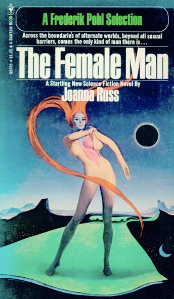

MĘŻCZYZNA
RODZAJU ŻEŃSKIEGO
JOANNA RUSS
Tłumaczenie: Jacek Hummel
Tłumaczenie jest dostępne na licencji
Creative Commons Uznanie autorstwa 4.0 Międzynarodowe
WARSZAWA, 2021

Książkę tę dedykuję Annie, Marii i jeszcze jednej, oraz trzem czwartym miliarda nas.
Jeżeli Jackowi uda się coś zapomnieć, to mało przydatne jest, że Jill mu o tym ciągle przypomina. Jack musi skłonić ją, żeby tak nie robiła. Najbezpieczniejszą metodą nie byłoby uciszenie jej, ale spowodowanie, żeby i ona również o tym zapomniała.
Jack może wpływać na Jill na wiele sposobów. Może sprawić, że poczuje się winna, że ciągle „przypomina”. Może deprecjonować jej doświadczenie. Może zrealizować to mniej lub bardziej radykalnie. Jack może tylko wykazać, że ta sprawa jest nieważna lub banalna, natomiast dla niej jest ważna i doniosła. Idąc dalej, Jack może zmienić modalność jej doświadczeń, z pamięci do wyobraźni: „Wyobrażasz to sobie tylko”. Dalej, może unieważnić treść: „To nie było tak”. W końcu, może zdeprecjonować nie tylko ważność, modalność i treść, ale także jej umiejętność pamiętania i sprawić, że poczuje się winna za robienie tego w ramach targowania.
To nie jest niezwykłe. Ludzie ciągle sobie robią takie rzeczy. Jednakże, aby taka międzyosobowa deprecjacja zadziałała, warto pokryć ją grubą warstwą mistyfikacji. Przykładowo, przez zaprzeczanie, że ta osoba właśnie to robi, następnie przez podważanie takich spostrzeżeń, że tak robi powiedzeniami takimi jak „Jak możesz myśleć takie rzeczy?”
„Musisz być paranoikiem”. I tak dalej.
R.D. Laing, The Politics of Experience, Penguin Books, Ltd., London, 1967, pp.31-321
Urodziłam się na farmie na Relaksowie2 . Kiedy miałam pięć lat, zostałam posłana do szkoły na Południowym Kontynencie (jak każda), a kiedy skończyłam dwanaście lat, powróciłam do rodziny. Moja matka miała na imię Eva, moja druga matka - Alicia. Nazywam się Janet Evasyn. Kiedy miałam trzynaście lat, wytropiłam i zabiłam wilka, sama z karabinem, na Północnym Kontynencie, powyżej czterdziestego ósmego równoleżnika. Zrobiłam sanie na głowę i łapy, potem porzuciłam głowę, a w końcu wróciłam z jednym pazurem, wystarczającym dowodem (jak myślałam). Pracowałam w kopalniach, w rozgłośni radiowej, na fermie mleka, plantacji warzyw, i przez sześć tygodni jako bibliotekarka po złamaniu nogi. W wieku trzydziestu lat urodziłam Yuriko Janetsyn. Kiedy wyjeżdżała do szkoły pięć lat później (nigdy nie widziałam takiego sprzeciwu u dzieci), zdecydowałam się wziąć wolne i sprawdzić, czy odnajdę swój stary rodzinny dom, choć matki wyprowadziły się stamtąd, gdy wzięłam ślub, i przeniosły się do Mine City na Południowym Kontynencie. Miejsce było jednak nie do znalezienia. Nasze tereny wiejskie ciągle się zmieniają. Znalazłam tylko trójnogi radiolatarni komputerowych, dziwne rośliny, których wcześniej nie widziałam, na polach i bandę wędrujących dzieci.
Kierowały się na Północ, by odwiedzić stację polarną i zaoferowały mi śpiwór, ale odmówiłam i zostałam z lokalną rodziną. Rano ruszyłam do domu. Od tego czasu jestem Strażniczką Bezpieczeństwa w hrabstwie, to jest Bezpieczeństwo i Pokój, stanowisko, które utrzymywałam przez sześć lat. Mój skorygowany stanfordzki iloraz Bineta (w waszych określeniach) wynosi 187, mojej żony 205, a córki 193. Yuki jest świetna w testach ustnych. Nadzorowałam kopanie szlaków przeciwpożarowych, odbierałam porody, naprawiałam maszyny i wydoiłam więcej muu-krów niż chciałabym widzieć. Ale Yuki uwielbia lody. Kocham swoją córkę. Kocham swoją rodzinę (jest nas dziewiętnaścioro) Kocham swoją żonę (Vittorię). Miałam cztery pojedynki. Zabiłam cztery razy.
Jeannine Dadier3 trzy razy w tygodniu pracowała jako bibliotekarka dla WPA4 w Nowym Jorku. Pracowała w oddziale Tompkins Square Branch, w części literatury dla młodzieży. Zastanawiała się czasami, czy śmierć Herr Shicklgrubera w 1936 była takim szczęściem (biblioteka miała książki na ten temat). W trzeci poniedziałek marca 1969 roku zobaczyła pierwsze nagłówki o Janet Evasyn, ale nie zwróciła uwagi. Cały dzień spędziła przybijając pieczątki w książkach dla młodzieży i sprawdzając w małym lusterku zmarszczki wokół oczu (Mam tylko dwadzieścia dziewięć lat!). Dwa razy musiała podwinąć spódnicę nad kolana i wspiąć się na drabinę po wyżej odłożone książki. Raz musiała przesunąć drabinę koło pani Allison i nowego asystenta, którzy rozsądnie dyskutowali o możliwości wojny z Japonią. W Saturday Evening Post był artykuł.
- Nie wierzę w to - powiedziała miękko Jeannine Nandy Dadier.
Pani Allison była Murzynką. To był niezwykle ciepły, mglisty dzień z odrobiną zieleni pokazującej się w parku: fikcyjna zieleń, jak gdyby świat zmienił kierunek i zmierzał do wiosny w niewyraźnych uliczkach, chmury wyobraźni dookoła drzew.
- Nie wierzę w to - powtórzyła Jeannine Dadier, nie wiedząc o czym rozmawiali.
- Lepiej, żebyś uwierzyła! - powiedziała ostro pani Allison.
Jeannine balansowała na jednej nodze. (Dobre dziewczęta tak nie robią). Zeszła z drabiny z książkami i położyła je na stole dla rezerwacji. Pani Allison nie lubiła dziewcząt z WPA. Jeannine ponownie zobaczyła nagłówki w gazecie Pani Allison.
KOBIETA POJAWIŁA SIĘ ZNIKĄD NA BROADWAYU, POLICJANT ZAGINĄŁ
- Nie wie…(Mam kota, mam swój pokój, mam płytę grzejną, mam okno, mam drzewo ajlanta).
Kątem oka zobaczyła Cala na ulicy. Szedł buńczucznie, kapelusz był przechylony na czoło. Chciał coś powiedzieć głupiego o byciu reporterem, mała ostra twarz i poważne niebieskie oczy. „Pewnego dnia mi się uda, słonko.” Jeannine wsunęła się pomiędzy regały, ukrywając się za gazetą pani Allison:
„Na Broadwayu pojawiła się znikąd kobieta, policjant zaginął”.
Marzyła o owocach kupionych na rynku, choć jej ręce pociły się, gdy kupowała poza rządowym sklepem i nie umiała się targować. Kupiłaby jedzenie dla kotów i nakarmiłaby Pana Szronka zaraz po wejściu do pokoju. Jadłby ze starego chińskiego talerzyka. Jeannine wyobraziła sobie Pana Szronka ocierającego się o jej nogi, falujący ogon. Pan Szronek był czarno-biały. Z zamkniętymi oczami, Jeannine zobaczyła, jak wskakuje na półkę i chodzi pomiędzy jej rzeczami, jej muszlami i miniaturkami. „Nie, nie, nie!” powiedziała. Kot zeskoczył, strącają jedną z jej japońskich lalek.
Po obiedzie, Jeannine wyprowadziłaby go. Potem pozmywała naczynia i próbowała naprawić jej stare ubrania. Przejrzałaby książeczkę z kartkami na żywność. Gdy zrobiłoby się ciemno, włączyłaby radio na wieczorną audycję, lub poczytałaby, może zadzwoniła z apteki i zapytała się o ten pensjonat w New Jersey. Mogłaby nawet zadzwonić do brata. Na pewno zasadziłaby nasiona pomarańczy i je podlała. Pomyślała o Panu Szronku skradającym się pomiędzy miniaturowymi drzewkami pomarańczowymi, wyglądałby jak tygrys. Gdyby dostała puste puszki w rządowym sklepie.
- Cześć mała? - To był wstrętny szok. To Cal.
- Nie - powiedziała szybko Jeannine. - Nie mam czasu.
- Kochanie? - ciągnął ją za ramię. - Chodź na kawę. - Ale nie mogła. Musiała uczyć się greki (taka książka była na stole dla rezerwacji). Było tak wiele do zrobienia.
Cal marszczył brwi i błagał. Czuła poduszkę pod plecami, a Pan Szronek chodził dookoła nich, patrząc na nią swoimi dziwnymi błękitnymi oczami, krocząc wściekle dookoła kochanków. Częściowo syjamczyk, Cal nazywał go „Poplamionym Chudym Kotem”. Cal ciągle chciał eksperymentować na nim, upuszczał go z krzesła, kładł rzeczy na jego drodze, chował je przed nim. Pan Szronek teraz tylko prychał na niego.
- Później - powiedziała zdesperowana Jeannine. Cal pochylił się i wyszeptał do jej ucha. Zachciało jej się płakać. Cal zabujał się na stopach. Potem powiedział:
- Poczekam
Usiadł na krześle Jeannine, wziął do ręki gazetę i dodał:
- Znikająca kobieta. To Ty.
Jeannine zamknęła oczy i zaczęła marzyć o Panu Szronku, zwiniętym na kominku, spokojnie śpiącym, cała kotowatość w kręgu.
Co za zepsuty kotek.
- Kochanie? - powiedział Cal.
- Och, dobrze - powiedziała zdesperowana Jeannine - już dobrze.
Popatrzę na kwiatek.
Janet Evason pojawiła się na Broadwayu o drugiej popołudniu w bieliźnie. Nie straciła głowy. Chociaż ciało chciało podtrzymać poprzedni ruch, Janet, sekundę po przybyciu, przyjęła pozycję obronną (bardzo dobrze) z rozwianymi włosami, w szortach khaki i koszuli poplamionej potem. Kiedy policjant próbował chwycić ją za ramię, zagroziła mu ciosem savate, ale znikł. Janet z przerażeniem patrzyła na tłum dookoła niej. Policjant pojawił się w tym samym miejscu godzinę później, nie pamiętając nic z tej przerwy, ale Janet Evasyn wróciła do swojego śpiwora w Nowym Lesie już po kilku chwilach. Kilka słów w wszechruskim i już jej nie było. Ostatnie z nich obudziły osobę obok w Nowym Lesie.
- Idź spać - powiedział anonimowy „przyjaciel na noc”, nos, czoło i lok czarnych włosów nakrapianych światłem księżyca.
- Ale kto paprał mi w głowie! - odpowiedziała Janet Evasyn.
Kiedy Janet Evason wróciła do Nowego Lasu, a eksperymentatorzy w Stacji Polarnej zaśmiewali się (bo to nie był sen), byłam na koktajlu na Manhattan. Właśnie zmieniłam się w mężczyznę, ja, Joanna. Znaczy mężczyznę rodzaju żeńskiego, oczywiście. Moje ciało i dusza były identyczne.
Zatem ja również.
Pierwszy mężczyzna, który postawił stopę w Relaksowie, pojawił się na polu rzepy na Północnym Kontynencie. Był ubrany na niebiesko, jak turysta, z niebieską czapką. Ludzie na farmie zostali zawiadomieni. Jeden, widząc punkcik na skanerze podczerwieni traktora, podleciał, żeby go zabrać. Mężczyzna w niebieskim zobaczył maszynę latającą bez skrzydeł, ale podnoszącą kurz. Warsztat naprawczy dla maszyn farmerskich w tym tygodniu był niedaleko, więc kierowca traktora tam go zaprowadził. Mężczyzna nie mówił nic zrozumiałego. Zobaczył przezroczystą kopułę, powierzchnia delikatnie falowała. Z jednej strony był wylot wentylatora. Pod kopułą była dżungla maszyn, martwe, na boku, niektóre otwarte, ich wnętrzności wypływające na trawę. z szerokiej ramy pod dachem machały ręce wielkie jak trzech mężczyzn. Jedna z nich podniosła samochód i upuściła go. Boki samochodu odpadły. Mniejsze dłonie wyskoczyły z trawy.
- Hej, hej! - krzyknął kierowca traktora, uderzając kawałem żelaza w ścianę. - Upadło, zemdlało!
- Wyślij to z powrotem - powiedział operator, wychodząc spod hełmu indukcyjnego po drugiej stronie warsztatu. Czworo innych wyszło i stanęło dookoła mężczyzny w niebieskim garniturze.
- Czy jest stabilny? - powiedziało jedno.
- Nie wiemy.
- Czy jest chory?
- Zahipnotyzuj go i wyślij go z powrotem.
Mężczyzna w niebieskim, gdyby to zobaczył, byłby nimi zdziwiony, gładkie twarze, gładka skóra, zbyt niskie, zbyt pulchne, ich kombinezony szerokie w biodrach. Nosili kombinezony, ponieważ nie wszystko można było naprawić mechanicznymi dłońmi, czasem trzeba było swoich własnych. Jeden były stary i miał białe włosy, inny był bardzo młody, jeden nosił długie włosy czasem doceniane przez młodych Relaksowa, „by miło spędzić czas”. Sześć par zaciekawionych oczu przyglądało się mężczyźnie w niebieskim garniturze.
- To, mes enfants, - powiedział w końcu kierowca traktora - jest mężczyzna. To prawdziwy mężczyzna z Ziemi.
Czasem pochylasz się, żeby zawiązać sznurowadło i wtedy, albo je wiążesz, albo nie. Albo natychmiast się prostujesz, albo nie. Każdy wybór tworzy co najmniej dwa światy możliwe, to jest, jeden w którym coś zrobiłaś i drugi, w którym czegoś nie zrobiłaś. Lub prawdopodobnie o wiele więcej: jeden, gdzie robisz szybko, ten, w którym robisz wolno, jeden, gdzie nie robisz, ale się wahasz, jeden, w którym się wahasz marszcząc brwi, inny w którym się wahasz kichając, i tak dalej. Idąc dalej, musi istnieć nieskończona liczba możliwych wszechświatów (tak płodny jest bóg), ponieważ nie ma powodu, by wyobrażać sobie Natury jako uprzedzonej tylko do ludzkiej działalności. Każde przesunięcie dowolnej cząsteczki, każda zmiana orbity dowolnego elektronu, każdy kwant światła, który wpada tutaj, a nie tam, wszystko to musi mieć gdzieś swoją alternatywę.
Jest również możliwe, że nie istnieje jedna prosta linia, czy pasmo prawdopodobieństwa, że żyjemy raczej w ich skręconym splocie, niezauważalnie rozmywające przejście z jednego do drugiego, póki nie przekroczymy granic zbioru zmiennych, które właściwie nie mają dla nas znaczenia. Zatem paradoks podróży w czasie przestaje działać, ponieważ przeszłość, którą ktoś odwiedza, nie jest kogoś przeszłością, ale już innej osoby, lub inaczej, podróż kogoś do przeszłości natychmiast tworzy inną teraźniejszość (taką w której podróż się odbyła) i to, co odwiedzasz jest przeszłością należącą do tej teraźniejszości, całkowicie odmienną od Twojej własnej przeszłości. A z każdą decyzją (w tej nowej przeszłości) rozgałęzia się nowy prawdopodobny wszechświat, tworząc jednocześnie nową przeszłość i nową teraźniejszość, lub, dla uproszczenia, nowy wszechświat. I kiedy wracasz do swojej własnej teraźniejszości, tylko Ty wiesz, jaka była poprzednia przeszłość i co w niej zrobiłaś.
A zatem jest prawdopodobnie, że Relaksowo, nazwa Ziemi za dziesięć wieków, ale nie naszej Ziemi, jeżeli mnie rozumiesz, w ogóle nie będzie pod wpływem wydarzeń w przeszłości kogoś innego. I, oczywiście, na odwrót. Te dwa równie dobrze mogą być niezależnymi światami.
Relaksowo, jak już rozumiesz, jest w przyszłości.
Ale nie naszej przyszłości.
Zobaczyłam Jeannine nieco później, w barze, gdzie poszłam zobaczyć Janet Evasyn w telewizji (nie miałam własnego telewizora). Jeannine wyglądała bardzo nie na miejscu. Usiadłam obok niej, a ona mi się zwierzyła:
- Nie pasuję tutaj.
Nie wiem, jak się tutaj znalazła, za wyjątkiem przypadku. Wyglądała, jak gdyby ubrała się na plan filmowy, siedząc w cieniu, z tą jej chustką na głowie, jeansach, długonoga, trzpiotowata dziewczyna w ubraniach trochę dla niej za małych.
Moda (zdaje się) po Wielkiej Depresji powoli ożywa. Nie tutaj i teraz, oczywiście.
- Nie pasuję tutaj! - wyszeptała znowu przestraszona Jeannine Dadier. Wierciła się.
- Nie lubię takich miejsc. - powiedziała.
Dźgnęła czerwone skórzane obicie fotela.
- Co? - spytałam.
- Wędrowałam pieszo na urlopie - powiedziała poważnie. - Lubię to. To zdrowe.
Wiem, że zdrowe bieganie po łąkach jest prawdopodobnie cnotliwe, ale lubię bary, hotele, klimatyzację, dobre restauracje i odrzutowce, i powiedziałam jej o tym.
- Odrzutowce? - spytała.
Janet Evasyn pojawiła się w telewizorze. Było to tylko zdjęcie. Potem były wiadomości z Kambodży, Laosu, Stanu Michigan, Jeziora Canadaigua (zanieczyszczenie) i obracający się globus w kolorze z siedemnastoma sztucznymi satelitami latającymi naokoło. Kolory były okropne. Byłam kiedyś w studio telewizyjnym, balkon biegnący naokoło ścian stodoły, każdy centymetr dachu zajęty przez reflektory, po to by drobna kobieta z delikatnym głosem mogła się dąsać nad piekarnikiem lub zlewem. Wtedy pojawiła się Janet Evasyn wyglądając blado jak wszyscy ludzie w telewizji. Poruszała się ostrożnie i rozglądała się z zainteresowaniem. Dobrze się ubrała (garnitur). Gospodarz, czy mistrz ceremonii, czy jak się tam nazywa, uścisnął jej dłoń i potem wszyscy podali sobie ręce, jak na weselu francuskim, albo we wczesnym niemym filmie. Gospodarz był ubrany w garnitur. Ktoś poprowadził ją do fotelu, a ona uśmiechnęła się i kiwnęła głową w przesadny sposób, jak wtedy, gdy nie wiesz, czy robisz coś dobrze. Janet rozejrzała się i osłoniła oczy przed światłem. Potem przemówiła.
(Pierwszą rzeczą, jaką powiedział drugi mężczyzna, który kiedykolwiek odwiedził Relaksowo było: „Gdzie są wszyscy mężczyźni?”. Janet Evasyn, gdy pojawiła się w Pentagonie, ręce w kieszeniach, stopy rozstawione szeroko, powiedziała: „Gdzie cholercia są wszystkie kobiety?”).
Dźwięk w telewizorze na moment znikł i Jeannine Dadier znikła. Nie zniknęła, po prostu już tutaj nie była. Janet Evasyn wstała, potrząsnęła znowu rękami, rozejrzała się, spojrzała się z powątpiewaniem, udała zrozumienie, kiwnęła głową i wyszła poza zasięg kamer. Nigdy nie pokazywali strażników.
Wysłuchałam jej następnym razem i szło to tak:
GOSPODARZ: Jak się Pani tu podoba, panno Evasyn?
JANET (rozglądając się po studio, zmieszana): Jest za gorąco.
G: Mam na myśli, jak się tutaj Pani podoba, na Ziemi?
J: Ale ja żyję na ziemi. (Jej uwaga była trochę napięta).
G: Może mogłaby Pani wytłumaczyć, co Pani ma na myśli, to znaczy istnienie różnych prawdopodobieństw i tak dalej, mówiła Pani o tym wcześniej.
J: To jest w gazetach.
G: Ale panno Evasyn, jeżeli mogłaby Pani wytłumaczyć to tym, którzy oglądają ten program.
J: Niech przeczytają. Nie umieją czytać?
(Przez chwilę było cicho. Potem gospodarz programu przemówił.)
G: Nasi socjolodzy oraz fizycy twierdzą, że będą musieli zrewidować wiele teorii w świetle informacji przedstawionych przez naszego gościa z innego świata. Na Relaksowie nie było ludzi przez ostatnie osiem wieków, znaczy nie mam na myśli ludzi, oczywiście, ale mężczyzn, i to społeczeństwo, kierowane całkowicie przez kobiety, ściągnęło na siebie bardzo dużo uwagi od chwili pojawienia się w zeszłym tygodniu jego reprezentanta i pierwszego ambasadora, damy po mojej lewej stronie. Janet Evasyn, czy mogłaby Pani powiedzieć nam, jak według Pani społeczeństwo Relaksowa zareaguje na pojawienie się mężczyzn z Ziemi, mam na myśli naszą teraźniejszą Ziemię, oczywiście, po osiemsetletniej izolacji?
J: (podskoczyła na to pytanie, prawdopodobnie dlatego, że było to pierwsze pytanie, które zrozumiała) Dziewięćset lat. Jakich mężczyzn?
G: Jakich mężczyzn? Z pewnością oczekujecie odwiedzin mężczyzn naszego społeczeństwa.
J: Dlaczego?
G: Dla wiedzy, handlu, hm, kontaktów kulturalnych. (śmiech) Wydaje mi się, że mi Pani to utrudnia, panno Evasyn. Gdy Zaraza, o której Pani mówiła, zabiła mężczyzn na Relaksowie, czy ich nie brakowało? Czy rodziny nie rozpadły się? Czy nie zmienił się styl życia?
J (powoli): Przypuszczam, że ludziom zawsze brakuje tego, do czego byli przyzwyczajeni. Tak, brakowało ich. Nawet zbioru słów, jak „on”, „mężczyzna” i tak dalej, te słowa są zakazane.
Potem drugie pokolenie, używa ich, by pokazać odwagę, pomiędzy sobą, a trzecia generacja nie używa, by pokazać wychowanie, a przy czwartej, kogo to obchodzi? Kto pamięta?
G: Ale z pewnością, to jest…
J: Przepraszam, może błędnie rozumiem, co chcesz powiedzieć, bo język, w którym mówimy, jest tylko moim hobby, nie mówię tak płynnie, jak bym chciała. My mówimy wszechruskim, którego nawet Rosjanie by nie zrozumieli. to jak średniowieczna angielszczyzna dla Was, tylko na odwrót.
G: Rozumiem. Ale wracając do mojego pytania,
J: Tak.
G: (Trudna sytuacja, pomiędzy władzami a tą dziwną osobą, która jest nieświadoma jak wódz dzikusów, bez wyrazu, uprzejmy, pewnie cywilizowany, całkowicie nierozumiejący. W końcu mówi): Czy nie chcecie powrotu mężczyzna na Relaksowo, panno Evasyn?
J: Dlaczego?
G: Jedna płeć to połowa gatunku, panno Evasyn. Cytuję tu (i zacytował znanego antropologa). Czy chcecie wygnać seks z Relaksowa?
J (z solidną godnością i kompletną naturalnością): Hm?
G: Spytałem, czy chcecie wypędzić seks z Relaksowa? Seks, rodzina, miłość, przyciąganie erotyczne, proszę nazwać, jak Pani chce, wiemy, że jesteście kompetentnymi i inteligentnymi jednostkami, ale czy sądzi Pani, że to wystarczy? Na pewno wie Pani o biologii innych gatunków, by rozumieć o czym mówię.
J: Jestem żonata. Mam dwoje dzieci. O czym, do diabła, pan mówi?
G: Ja, panno Evason, my, cóż, wiemy, że tworzycie to, co nazywacie małżeństwami, panno Evasyn, że uznajecie pochodzenie dzieci od obojga partnerów i że nawet macie „plemiona”, nazywam je tak według tego jak nazywa je profesor ___________. Wiem, że tłumaczenie nie jest doskonałe. Wiemy, że te małżeństwa lub plemiona tworzą świetne instytucje wsparcia ekonomicznego dla dzieci i dla swego rodzaju mieszania genów, choć, muszę wyznać, wyprzedzacie nas w sferze biologii. Ale, panno Evasyn, nie mówię tu o relacjach ekonomicznych, ani nawet o emocjonalnych. Oczywiście matki Relaksowa kochają swoje dzieci, nikt w to nie wątpi. I oczywiście, kochają się wzajemnie, w to także nikt nie wątpi. Ale jest przecież więcej, znacznie, znacznie więcej, mam na myśli miłość seksualną.
J (ze zrozumieniem): Och! Chodzi o kopulację.
G: Tak.
J: I mówicie, że tego nie znamy?
G: Tak.
J: Jakie to głupie. Oczywiście, znamy.
G: Ach? (Chce powiedzieć, „Proszę mi nie mówić.”)
J: Ze sobą. Pozwól, że wytłumaczę.
Janet została natychmiast zastąpiona przez reklamę poetycko opisującą radości niekrojonego chleba. Wzdrygnęli się (poza zasięgiem kamery). Nie doszłoby do tego, gdyby Janet nie naciskała na dołączenie systemu „nie-dotykaj-mnie” do systemu odtwarzania nagrania. To była transmisja na żywo opóźniona o cztery sekundy. Zaczynałam ją coraz bardziej lubić. Powiedziała:
- Jeżeli oczekujecie, że będę przestrzegać waszych tabu, myślę, że powinniście być precyzyjniejsi w ich określeniu.
W świecie Jeannine Dadier, żeński prowadzący zapytał (zapytałaby):
- W jaki sposób kobiety Relaksowa układają włosy?
J: Przycinają je przy pomocy muszli.
- Ludzkość jest nienaturalna! - zawołała filozofka Dunyasha Bernadettesyn (P.K. 344-426), która przez całe życie cierpiała z powodu błędu genetyka, który dał jej żuchwę jednej matki i zęby drugiej matki. Ortodoncja jest rzadko potrzebna na Relaksowie. Niemniej jednak, zęby jej córki były doskonałe.
Zaraza pojawiła się na Relaksowie w 17 roku P.Z. (Przed Zarazą) i zakończyła się w P.K. 3 (Po Katastrofie), połowa populacji martwa. Rozpoczęła się tak wolno, że nikt o niej nie wiedział, póki nie było za późno. Zaraza dotykała tylko mężczyzn. Ziemia była kompletnie odbudowana w trakcie Złotego Wieku (P.Z. 300 - ok. P.Z. 180). Środowisko naturalne powodowało znacząco mniejsze problemy, niż mogłoby, gdyby podobna katastrofa przydarzyła się wieki wcześniej. W czasach Rozpaczy (jak potocznie nazywano ten okres), Relaksowo składało się z dwóch kontynentów, nazwanych po prostu Północnym i Południowym Kontynentem, a w linii brzegowej znajdowało się wiele idealnych zatoczek i kotwicowisk.
Ciężkie warunki klimatyczne nie docierały poniżej równoleżników: 72 stopnie południowy i 68 stopni północny. Konwencjonalny ruch wodny, w czasach Katastrofy, był wykorzystywany prawie tylko do transportu, ruch pasażerski używał mniejszych poduszkowców na elastycznie dopasowanych trasach. Domy były samowystarczalne, z przenośnymi źródłami energii, silnikami alkoholowymi lub panelami słonecznymi, zastępującymi wcześniejsze scentralizowaną energetykę. Późniejszy wynalazek praktycznych reaktorów antymaterii (K. Ansky, P.K. 239) zaowocował wielkim optymizmem na jakąś dekadę, ale te urządzenia były zbyt nieporęczne do wykorzystania w domu. Katharina Lucysyn Ansky (P.K. 201-282) była również odpowiedzialna za zasady, który umożliwiły chirurgię genetyczną. (Łączenie jajeczek było znane przez poprzednie półtora wieku). Populacja zwierząt stała się tak deficytowa przed Złotym Wiekiem, że wiele gatunków zostało przywróconych przez entuzjastów w okresie Ansky. W 280 P.K. zanotowano wybuch populacji królików w Newland (wyspie na krańcu Północnego Kontynentu), pandemię nie bez historycznego poprzednika. Do 492 P.K., dzięki błyskotliwej agitacji wspaniałej Betty Bettinasyn Murano (P.K 453-P.K.502), kolonie ziemskie zostały odbudowane na Marsie, Ganimedesie i na asteroidach, przy pomocy Ligi Księżycowej, zgodnie z traktatem Mare Tenebrum (P.K. 240). Zapytana, czego spodziewa się znaleźć w kosmosie, Betty Muran odpowiedziała nieśmiertelnym żartem: „Nic”. W trzecim wieku Po Katastrofie inteligencja była kontrolowanym i dziedzicznym czynnikiem, choć umiejętności i zainteresowania nadal umykały chirurgom, a tylko całkowita inteligencja mogła być podniesiona. W piątym wieku, organizacja klanowa osiągnęła obecny złożony stan i odzyskiwanie fosforu było prawie kompletne. Do siódmego wieku, kopalnie Jowisza umożliwiły zastąpienie technologii szkła i ceramiki metalami (które również były ponownie wykorzystywane) i po raz trzeci w ciągu czterystu lat (również mody są czasami cykliczne) pojedynkowanie się stało się poważnym problemem społecznym. Wiele lokalnych Rad Gildii przegłosowało, że zwyciężczyni w pojedynku musi ponieść karę za przypadkowe morderstwo i urodzić dziecko w zamian za utracone życie, ale rozwiązanie było zbyt proste, by stać się popularnym. Przykładowo, problemem mógł być wiek obu uczestniczek pojedynku. Na początku dziewiątego wieku P.K. hełmy indukcyjne stały się powszechne, przemysł został drastycznie zmieniony, a Liga Księżycowa w końcu przewyższyła Południowy Kontynent w produkcji białka na osobę rocznie. W 913 P.K. mroczna i niezadowolona następczyni Katy Ansky zebrała różne elementy wiedzy matematycznej i odkryła, lub wynalazła, mechanikę rachunku prawdopodobieństwa.
W czasach Jezusa z Nazaretu, droga czytelniczko, nie było samochodów. Ciągle jednak czasem spaceruję.
Oznacza to, że rozważna ekolożka projektuje rzeczy, aby pracowały tak doskonale, jak można, ale na wszelki wypadek dobrze jest mieć lampę naftową w stodole, a dyskusja o utrzymaniu koni zwykle kończy się decyzją, że to zbyt wiele kłopotu, więc puszcza się konie wolno. Niemniej rezerwat w La Jolla nadal opiekuje się końmi. Nie rozpoznałybyśmy ich. Hełm indukcyjny umożliwia jednej robotnicy nie tylko mieć siłę, ale także płynność i kontrolę tysięcy. Wywróciło to przemysł Relaksowa do góry nogami. Większość ludzi chodzi na Relaksowie (oczywiście, ich stopy są doskonałe). Czasem dziwacznie się śpieszą. We wczesnym okresie, wystarczyło utrzymać się przy życiu i rodzić dzieci. Teraz mówią, że „kiedy re-industrializacja się skończy” i nadal chodzą. Może to lubią.
Mechanika probabilistyczna oferuje możliwość teleportacji poprzez zapętlenie do innego, precyzyjnie wybranego kontinuum. Chilia Ysayesyn Belin żyje we włoskich ruinach (myślę, że to część posągu Vittore Emmanuele, jednak nie wiem, jak się dostał do Newland) i jest do niego przywiązana. Jak można by dyskretnie dodać instalację wodociągową bez nadmiernego nakładu pracy? Jej matka, Ysaye, żyje w jaskini (ta Ysaye, która stworzyła teorię mechaniki probabilistycznej).
Prefabrykaty można dostać w dwa dni i od razu je składać. Belinów jest osiemnaścioro, i dwadzieścia trzy Moujki (rodzina Ysaye, mieszkałam u obojga).
Relaksowo nie ma prawdziwych miast. I, oczywiście, kultura na prowincji jest kilka wieków za centrum. Relaksowo jest tak wiejskie, że czasami zastanawiam się, czy najwyższe wyrafinowanie nie zabierze nas do rodzaju wieku przed erą kamienną, ogrodu bez artefaktów, prócz tych, które będziemy nazywać cudami. Moujki wynalazła w czasie wolnym w 904 P.K. pojemniki na żywność wielorazowego użytku, ponieważ idea ją fascynowała. Ludzie byli zabijani za mniej.
W międzyczasie, ekologiczne sprzątanie jest ogromne.
JE: Urodziłam moje dziecko w wieku trzydziestu lat, wszystkie tak robimy. To wakacje. Prawie pięć lat.
Pokoje dzieci pełne są ludzi czytających, malujących, śpiewających, ile tylko mogą, dzieciom, z dziećmi, nad dziećmi. Jak w starym chińskim zwyczaju trzyletniej żałoby, przerwa we właściwym czasie.
Przedtem nie ma odpoczynku i będzie tak mało potem…wszystko, co robię, rozumiesz, mam na myśli, naprawdę robię, muszę zawrzeć dokładnie w tych pięciu latach. Każdy pracuje w chorym pośpiechu. Przy sześćdziesiątce dostanę siedzącą pracę i znów będę miała trochę czasu dla siebie.
PROWADZĄCY: I to jest postrzegane za wystarczające, na Relaksowie?
JE: Mój Boże, nie.
Jeannine się guzdrze. Zawsze nienawidziła wstawania z łóżka. Chciałaby leżeć na boku i patrzyć na ajlanta, póki nie zaczęłyby ją boleć plecy. Wtedy by się przełożyła na drugi bok, ukryta za liśćmi i zasnęła. Dokończyć sny, póki leży w łóżku z mętlikiem, a kot mógłby się na niej położyć. W dni pracujące, Jeannine wstaje wcześnie w rodzaju koszmaru na jawie: czuje się okropnie, potyka się w drodze do łazienki cała zaspana. Kawa ją mdli. Nie może usiąść w fotelu, założyć kapci, pochylić, oprzeć się, lub położyć. Pan Szronek, przechadzając się po parapecie, kroczy tam i z powrotem przed ailantem, tygrys w dżungli. Muzeum. Zoo. Autobus do Chinatown.
Jeannine zatopiła się w drzewie z wdzięcznością, jak syrena, z herbatą w ręku, przyjemnie dać młodemu mężczyźnie, który miał wielką muffinkę drżącą nad obrożą zamiast twarzy, która tam powinna być. Drżącą z emocji.
Kot przemówił. Wzdrygnęła się.
Zaraz Cię nakarmię, Panie Szronku.
Mrrrr.
Cala nie stać na to, aby mnie gdzieś zabrać. Podróżowała tak długo publicznymi autobusami, że zna wszystkie trasy. Strasznie ziewając, zalała wodą jedzenie Pana Szronka i postawiła talerzyk na podłodze. Jadł dystyngowanie. Przypomniała sobie, jak zabrała go do jej brata, dali mu prawdziwą surową rybę, dopiero co złapaną w stawie przez jednego z chłopców i jak Pan Szronek rzucił się na rybę, błyskawicznie, taki był żarłoczny. One naprawdę lubią ryby. Teraz kotek bawi się talerzykiem, uderzając go z miejsca na miejsca, choć już był dorosły. Koty naprawdę były szczęśliwszy, gdy…gdy…(ziewnęła) Och, to było Chińskie Święto.
Gdybym miała pieniądze, gdybym mogła pójść do fryzjera…Wchodzi do biblioteki, jest profesorem, nie, jest super przystojny.
- Kim jest ta dziewczyna? - mówi do pani Allison, figlarnie jej pochlebiając.
- To Jeannine - spuszcza oczy, pełna kobiecego seksapilu.
Muszę dziś zrobić paznokcie. I te piękne ubrania, są eleganckie, podkreślają moją osobowość, moje piękno.
- Coś w niej jest - mówi. - Pójdziemy gdzieś?
Potem w ogrodzie na dachu, pijąc szampana,
- Jeannine, czy…
Pan Szronek, niezadowolony i zazdrosny, drapie ją w nogę.
- Dobrze!! - mówi, zachłystując się dźwiękiem swojego głosu. Ubiera się szybko.
Naprawdę (pomyślała Jeannine, patrząc na drogie duże lustro, w niejasny sposób zostawione przez poprzedniego najemcę w drzwiach szafy) naprawdę wyglądam trochę jak…, jak tak nachylę twarz. Och! Cal będzie WŚCIEKŁY, i biegnie do łóżka, zdejmuje piżamę i łapie bieliznę, którą zawsze wieczorem zostawia na biurku. Jeannine Nimfa Wodna. Marzyłam kiedyś o młodym mężczyźnie. Do końca nie wierzy w karty i omeny, to całkiem głupie, ale czasem chichocze i myśli, że byłoby to miłe. Mam duże oczy.
Spotkasz wysokiego, ciemnego, kładąc Pana Szronka delikatnie na łóżku, wkłada sweter i spódnicę, potem czesze włosy, licząc pociągnięcia pod nosem. Jej płaszcz jest tak stary. Jeszcze trochę makijażu, szminka i puder. (Znowu zapomniała i puder jest na płaszczu). Jeżeli wstałaby wcześniej, nie spotkałaby Cala, pobawiłby się z kotem (na kolanach), a potem chciałby się Kochać, tak jest lepiej. Autobus do Chinatown. Potknęła się na schodach w pośpiechu, chwytając się poręczy.
Drobna panna Spry, starsza pani na parterze, otworzyła drzwi dokładnie w tym momencie, by zauważyć pannę Dadier biegnącą przez hol. Jeannine ujrzała drobną, pomarszczoną, zmęczoną, starą twarz, delikatny białe włosy, ciało jak worek mąki ubrany w czarną bezkształtną suknię. Zauważyła, pożyłkowana dłoń na framudze drzwi.
- Czyż, Jeannine, wychodzisz?
Przyśpieszając histerycznie, panna Dadier ucieka. Oooch! Żeby tak wyglądać!
Cal właśnie mijał przystanek.
Etsuko Belin, rozciągnięta krzyżem na szybowcu, przesunęła swój środek ciężkości i rozpoczęła wolny zwrot, obserwując pięćset metrów poniżej wschód słońca Relaksowa odbijający się w jeziorach polodowcowych Mount Strom. Odwróciła szybowiec do góry nogami i lecąc na plecach, minęła jastrzębia.
Sześć miesięcy temu w Chiński Nowy Rok, Jeannine stała na zimnie, trzymając rękawiczki przy uszach, aby ochronić się przed okropnym dźwiękiem sztucznych ogni. Cal, obok niej, obserwował taniec smoka na ulicach.
Poznałam Janet Evasyn na Broadwayu, stojąc z boku parady na jej cześć (byłam). Wychyliła się z limuzyny i mnie przywołała. Otoczona przez agentów Secret Service.
- To ta - powiedziała.
W końcu wszystkie się spotkamy.
Jeannine, wyrwana z miejsca, na farmie w Relaksowie, zasłania uszy i zaciska oczy, siedząc na koźle, pod drzwiami, gdzie wszyscy jedzą. Nie ma mnie tu. Nie ma mnie tu. Najmłodszej córce Chilii Ysayesyn spodobała się ta nowa. Jeannine widzi duże oczy, duże piersi, mocne ramiona, grube usta, całe to obrzydlistwo. Pan Szronek jest rozpieszczany, głaskany i karmiony przez osiemnaście dziewczyn Beliny. Nie ma mnie tu.
Kim jestem?
Wiem, kim jestem, ale jaka jest moja nazwa handlowa?
Ja z nową twarzą, obrzękłą maską. Odłożona do starych, w strzępach plastyku, blond wampir na Halloween na mundurze SS. Byłam pod tym chuda jak tyczka, prócz rąk, które były podobnie chude, i ta imponująca twarz. Zrobiłam tak w biznesie, o którym zaraz, i przestraszyłam idealizujące dzieci, które mieszkały piętro niżej. Ich delikatna skóra czerwona ze strachu. Ich czyste, młode głosy śpiewające piosenkę (o trzeciej nad ranem). Nie jestem Jeannine. Nie jestem Janet. Nie jestem Joanną.
Nie robię tego często (to mówię ja, upiór), ale to świetna technika w windzie, przycisnąć palec wskazujący do karku kogoś, mijając czwarte piętro, wiedząc, że nigdy się nie dowie, że Cię tutaj nie ma.
(Przepraszam, ale uważaj).
Poznacie mnie później.
Tak jak mówiłam wcześniej, ja (ale nie ta powyżej, proszę) przeżyłam doświadczenie siódmego lutego tysiąc dziewięćset sześćdziesiątego dziewiątego.
Zmieniłam się w mężczyznę.
Byłam już kiedyś mężczyzną, ale tylko krótko i tylko w tłumie.
Nie zauważyłybyście niczego, gdybyście tam były.
Męskość, dzieci, nie jest wynikiem odwagi czy krótkich włosów czy nieczułości, czy pobytu (w moim przypadku) w jedynym hotelu, w wieżowcu w Chicago, gdy na zewnątrz panoszy się śnieżyca. Siedziałam na przyjęciu koktajlowym w Los Angeles, wśród brzydkich barokowych mebli, zmieniona w mężczyznę. Ujrzałam się pomiędzy zwojami lustra i wyniki były niezaprzeczalne: byłam mężczyzną. Ale czym zatem jest męskość?
Męskość, dzieci…to męskość.
Janet zaprosiła mnie do limuzyny i wsiadłam. Na drodze było bardzo ciemno. Gdy otworzyła drzwi, zobaczyłam jej sławną twarz okoloną światłami z przednich miejsc. Drzewa gromadziły elektryczną zieleń poza światłami samochodu. Właśnie tak ją poznałam. Jeannine Dadier była nieuchwytnym zarysem na tylnym siedzeniu.
- Pozdrowienia - powiedziała Janet Evasyn. - Cześć. Bonsoir. To jest Jeannine. A Ty?
Powiedziałam jej. Jeannine zaczęła opowiadać o wszystkich mądrych rzeczach, które zrobił jej kot. Drzewa kołysały się i szarpały przed nami.
- W księżycowe noce - powiedziała Janet - często jadę bez świateł. - I zwalniając samochód, wyłączyła światła. Znaczy, zobaczyłam, jak znikają, krajobraz mieszaniny mgły i bladości aż do horyzontu, jak źle oświetlony Watteau. Zawsze w świetle księżyca odnoszę wrażenie, jak gdyby wzrok mi się pogorszył. Samochód, coś drogiego, choć było zbyt ciemno, by to określić, westchnął bezgłośnie. Jeannine prawie zniknęła.
- Jak to mówią - powiedziała Janet jej zaskakująco głośnym zwykłym głosem. - poślizgnęłam się - i włączyła z powrotem światła.
- Ośmielę się dodać, że nie jest to właściwe - dodała.
- Nie jest - powiedziała Jeannine z tylnego siedzenia. Minęłyśmy znak motelu na poboczu, z czymś błyskającym za drzewami.
- Bardzo mi przykro - powiedziała Janet. Samochód? - Skradziony - powiedziała. Wyjrzała przez okno na chwilę, odwracając wzrok od drogi.
Jeannine sapnęła z oburzeniem. Tylko kierowca widzi dobrze w lusterku. Ale za nami był samochód. Skręciłyśmy w polną drogę, to jest ona skręciła, i w las z wyłączonymi światłami, a potem w następną drogę, na końcu której był prywatny dom, światła wyłączone, tak schludny jak to możliwe.
- Do widzenia, przepraszam - powiedziała uprzejmie Janet wysiadając z samochodu.
- Chodźcie proszę. - I zniknęła w domu.
Miała na sobie ubiór z telewizji. Siedziałam zaskoczona, z dłońmi Jeannine zaciśniętymi na siedzeniu na moich plecach (tak jak robią to dzieci). Za nami zatrzymał się drugi samochód. Wysiedli i nas otoczyli (to takie niedogodność siedzieć ze światłami, które mnie raziły). Brutalne, krótkie fryzury i coś nieprzyjemnego w ubraniach, proste, kwadratowe, czyste, a jednak nie krzepkie. Czy możesz sobie wyobrazić urzędnika przeczesującego włosy? Oczywiście, że nie. Jeannine kuliła się lub jakoś zniknęła. Tuż zanim Janet Evasyn pojawiła się na werandzie tego prywatnego domu, w towarzystwie uśmiechniętej rodziny: ojciec, matka, nastoletnia córka i rodzinny pies (wszyscy zadowoleni ze sławy), przyznałam się raczej idiotycznie, wykrzykując emocjonalnie:
- Kogo szukacie? Tu nikogo nie ma. Jestem tylko ja.
Dlaczego mnie wysłali? Ponieważ mogli mnie poświęcić. Etsuko Belin przypięła mnie do klatki.
- Och, Janet! - powiedziała.
(Och, Ty) w prostym ciemnym pokoju. Klatka, w której leżałam, pojawiała się i znikała czterdzieści tysięcy razy na sekundę, jednak nie znikała ze mną. Żadnego ostatniego całusa od Vittorii. Nikt nie mógł do mnie dotrzeć. Wbrew waszym oczekiwaniom, nie zwymiotowałam, nie czułam chłodu, lub upadania przez bezkresne coś. Problem w tym, że mózg nadal pracuje ze starymi wrażeniami, podczas gdy pojawiają się nowe. Próbowałam ułożyć nowe w stare. Gdzie kratka klatki była ludzką twarzą.
Spasibo.
Przepraszam.
Spróbuję wytłumaczyć.
Drżałam tak mocno, że nie zrozumiałam początkowo, że leżałam w poprzek jej biurka, jak się potem dowiedziałam, i jeszcze gorzej. Pojawiłam się w poprzek, po prostu (na widoku pięciu innych). Eksperymentowałyśmy z innymi odległościami. Teraz ściągnęły mnie z powrotem, aby być pewne, i wysłały mnie znowu, i znowu tam byłam, na jej biurku.
Co za dziwna kobieta. Gruba i cienka, wysuszona, z mocnym tyłem, z babcinym wąsem, mała. Jak zwiędnąć może ktoś od życia w nieprzerwanym trudzie.
Aha! Mężczyzna.
Czy wspominałam, że przebiegły mnie dreszcze? Nie z próżności, ale jednak były. To musiał być mężczyzna. Zeszłam z tego biurka. Możliwe, że to wychodziło do fizycznej pracy, ponieważ byliśmy podobnie ubrani. Tylko to miało kolorowe paski kodujące przyszyte nad kieszenią, rozsądne rozwiązanie dla maszyny czytającej czy coś. Powiedziałam w doskonałym angielskim:
- Jak się masz? Winnam wyjaśnić moje nagłe pojawienie. Jestem z innego czasu.
(Odrzuciliśmy prawdopodobieństwo/kontinuum jako niezrozumiałe).Nikt się nie poruszył.
- Jak się masz? Winnam wyjaśnić moje nagłe pojawienie. Jestem z innego czasu.
Co powinnam zrobić, obrzucić wyzwiskami? Nie poruszyli się. Usiadłam na biurku i jeden z nich trzasnął częścią ściany. Zatem znają drzwi, tak jak my.
Najważniejsze w nowej sytuacji to nie przestraszyć. A w kieszeni miałam rzecz właśnie na taką sytuację. Wyciągnęłam kawałek sznurka i zaczęłam grać w kocią kołyskę.
- Kim jesteś! - powiedział jeden z nich. Wszyscy mieli te małe paski nad kieszeniami.
- Jestem z innego czasu, z przyszłości - powiedziałam i pokazałam kocią kołyskę. To nie tylko uniwersalny symbol pokoju, ale także całkiem fajna zabawa. Choć zrobiłam najprostszą pozycję. Jeden z nich zaśmiał się. Inny zasłonił dłońmi oczy. Ten, którego było biurko, odsunął się. Czwarty powiedział:
- Czy to jest żart?
- Jestem z przyszłości - będę po prostu siedzieć dostatecznie długo i prawda zacznie docierać.
- Co? - powiedział Numer Jeden.
- Jak inaczej pojawiłabym się znikąd? - odpowiedziałam. - Ludzie niezbyt dobrze przechodzą przez ściany, prawda?
W odpowiedzi na to, Trzy wyjął mały rewolwer i to mnie zaskoczyło. Każdy wie, że gniew jest najsilniejszy wobec tych, których się zna. To kochankowie i sąsiedzi potrafią się mordować. W zachowaniu w ten sposób do kompletnego nieznajomego nie ma sensu. Gdzie jest satysfakcja? Nie ma miłości, nie ma potrzeby. Nie ma potrzeby, nie ma frustracji. Nie ma frustracji, nie ma nienawiści, prawda? To musiał być strach. W tym momencie drzwi otworzyły się i weszła młoda kobieta, około trzydziestu lat, wyszukanie pomalowana i ubrana. Wiem, że nie powinnam niczego zakładać, ale każdy pracuje z tym co ma. A ja założyłam, że jej ubiór wskazuje na bycie matką. To jest, kogoś na wakacjach, kogoś bez pracy, kogoś, kto jest blisko sieci informacyjnych i kto jest pełen intelektualnej ciekawości. Jeżeli jest tu najwyższa klasa (powiedziałam do siebie), to jest to. Nie chciałam nikogo odciągać od koniecznej, fizycznej roboty. i pomyślałam, wiecie, że lekko zażartuję. Więc powiedziałam do niej:
- Zabierz mnie do swojego lidera.
…wysoka kobieta, blondynka, w niebieskiej pidżamie, która pojawiła się stojąc na biurku pułkownika Q________, jak gdyby znikąd. Wyjęła coś co wyglądało na broń…Brak odpowiedzi na nasze pytania. Pułkownik trzymał mały rewolwer w górnej szufladzie biurka od czasu letnich zamieszek. Wyciągnął broń. Nie odpowiadała na nasze pytania.
Wydaje się, że w tym momencie panna X______, sekretarka pułkownika, weszła do pokoju, nieświadoma tych zdarzeń. Szczęśliwie, Y____, Z____, Q____, R____ i ja zachowaliśmy zimną krew. Wtedy ona powiedziała: „Jestem z przyszłości”.
PYTAJĄCY: Panna X____ to powiedziała?
ODPOWIEDŹ: Nie, nie Panna X____. Oobca.
PYTAJĄCY: Jest Pan pewien, że ona pojawiła się stojąc, na biurku pułkownika Q____.
ODPOWIEDŹ: Nie, nie jestem pewien. Chwila. Tak, jestem pewny. Siedziała na biurku.
REDAKTOR: Wydaje się dziwne, Panno Evasyn, że, ryzykując podróż w tak, cóż, całkowicie nieznany teren, przybyła Pani nieuzbrojona, prócz kawałka sznurka. Czy sądziła Pani, że jesteśmy pokojowi?
JE: Nie. Nikt nie jest, ostatecznie.
REDAKTOR: Zatem powinna Pani się uzbroić.
JE: Nigdy.
REDAKTOR: Ale uzbrojona osoba, panno Evasyn, jest groźniejsza niż taka, która jest bezbronna. Uzbrojona osoba łatwiej wzbudza strach.
JE: Dokładnie.
Ta kobieta żyła ze mną przez miesiąc. Znaczy, nie w moim domu. Janet Evasyn w radio, telewizji, gazetach, kronikach filmowych, czasopismach, nawet reklamach. Pojawiła się w sypialni późno w nocy z kimś, kto mógł być panną Dadier.
- Zgubiłam się - miała na myśli, który to świat?
- Na litość, wyjdź na dwór, dobrze?
Ale ona rozmyła się przez chińską tapetę na ścianie, prawdopodobnie do pustego, wyłożonego dywanami, korytarzu o trzeciej nad ranem. Niektórzy ludzie nie zostają. W moim śnie, ktoś chciał wiedzieć, gdzie jest panna Dadier. Obudziłam się o czwartej i poszłam do łazienki po szklankę wody. Była po drugiej stronie lustra w łazience, machając gorączkowo rękoma. Patrzyła wielkimi oczami i zaglądała desperacko do pokoju, obie pięści przyciśnięte do szkła.
- Nie ma go tutaj - powiedziałam. - Idź sobie.
Poruszała ustami niezrozumiale. Pokój śpiewał: uprowadziłeś z nieeewoooli pojmaaanych!
Uprowadziłeś z nieeewoooli pojmaaanych!
Zmoczyłam szmatkę i przetarłam lustro. Ona mrugnęła. Wyłączyłam światło, poczekałam chwilę i włączyłam światło. Ona pozostała oświetlona. Traktując całą sprawę jako odchylenie świata, a nie moje, wróciłam do łóżka.
- Janet? - ona spytała.
Janet poderwała Jeannine do samochodu w trakcie Chińskiego Nowego Święta. Panna Dadier nigdy nie pozwoliłaby nikomu na podryw, ale w końcu kobieta była inna. To nie było to samo. Janet była ubrana w brązowy płaszcz. Cal poszedł za róg, żeby kupić bułeczki na parze w chińskim barze, a panna Evasyn zapytała o znaczenie sztandaru, który był niesiony ulicami.
- Szczęśliwej wytrwałości, Szanowna Pani Chiang - odpowiedziała Jeannine.
Potem rozmawiały o pogodzie.
- Och, nie mogłabym - powiedziała nagle Jeannine. (Zasłoniła uszy i zrobiła minę.)
- Ale to coś innego - powiedziała.
Janet Evasyn znów zasugerowała. Jeannine wyglądała na zainteresowaną i zainteresowaną zrozumieniem, choć trochę zaskoczoną.
- Cal jest w środku - powiedziała wyniośle Jeannine. - Nie mogłabym pójść tam - rozpostarła palce przed sobą jak dwa wachlarze. Jeannine była piękniejsza niż panna Evasyn i zadowolona z tego powodu. Panna Evasyn przypominała dużego harcerza z rozczochranymi włosami.
- Czy jest Pani Francuzką?
- Ach! - odpowiedziała panna Evasyn, kiwając głową.
- Nigdy nie byłam w Francji - powiedziała ospale Jeannine. - Często o tym myślałam, ale nigdy nie byłam. - Nie gap się na mnie. Jeannine zgarbiła się i zmrużyła oczy. Chciała podnieść jedną dłoń afektowanie, żeby zasłonić czoło. Chciała krzyknąć: „Patrz! To mój chłopak, Cal” ale nie było śladu po nim i jeżeli spojrzałaby się w okno delikatesów, byłyby pełne rybich wnętrzności i kawałów suszonej ryby. Wiedziała, że tak będzie.
Zrobiłoby-jej-się-niedobrze! (Patrzyła na karpia z jego wychodzącymi jelitami). Cała drżę.
- Kto zrobił Pani włosy? - spytała panny Evasyn i kiedy panna Evasyn nie zrozumiała: - Kto tak pięknie zrobił Pani takie pasemka ?
- Czas - i panna Evasyn się zaśmiała i panna Dadier się zaśmiała. Panna Dadier śmiała się pięknie, chwalebnie, cofając jej głowę do tyłu. Wszyscy podziwiali krzywiznę gardła panny Dadier. Oczy się zwróciły. Piękne ciało i osobowość do podziwiania.
- Prawdopodobnie nie mogę z Panią wyjść - powiedziała panna Dadier wspaniale, jej futrzany płaszcz wirował - jest Cal, Nowy Jork, praca, Nowy Jork wiosną, nie mogę odejść, moje życie jest tutaj. - A wiosenny wietrzyk igrał z jej włosami.
Szalona Jeannine przytaknęła, skamieniała.
- Dobrze - powiedziała Janet Evasyn. - Załatwimy Pani wolne w pracy - gwizdnęła i zza rogu pośpiesznie wyszło dwóch policjantów w mundurze i brązowych płaszczach, wielcy, szczęśliwi, zdecydowani mężczyźni, którzy będą szli, ramię w ramię, do końca tej historii. Ale ich nie zauważymy.
Jeannine spojrzała ze zdziwieniem na ich płaszcze i płaszcz panny Evasyn.
W ogóle tego nie pochwalała.
- To dlatego nie pasuje - powiedziała. Janet wskazała na Jeannine na potrzeby gliniarzy.
- Chłopcy, mam jedną.
Chińskie Nowe Święto zostało wymyślony, by uczcić odzyskanie Hong Kongu od Japończyków. Czang Kaj-szek zmarł na serce w 1951 i Szanowna Pani Chiang jest premierą Nowych Chin. Japonia, która kontroluje kontynent, pozostaje dość cicho, gdyż brak jest wsparcia, na przykład, przebudzonych Niemiec i, jeżeli wydarzy się wojna, odbędzie się pomiędzy Boskim Imperium Japonii i Związkiem Socjalistycznych Republik Radzieckich (jest ich dwanaście).
Amerykanie nie martwią się zbytnio. Niemcy ciągle sprzeczają się z Włochami lub Anglią. Francja (zhańbiona nieudanym puczem 1942 roku) zaczyna mieć kłopoty w koloniach. Brytania, mądrzejsza, nadała Indii prawo do tymczasowej samorządności w 1966.
Nadal na całym świecie panuje Depresja.
(Ale pomyśl, tylko pomyśl!, co by się zdarzyło, gdyby świat tak szczęśliwie nie zwolnił, gdyby naprawdę była wielka wojna, wielkie wojny są cieplarniami nauki, ekonomii, polityki. Pomyśl co mogłoby się zdarzyć, co mogłoby się nie zdarzyć. To jest szczęśliwy świat. Jeannine jest szczęśliwa, że może żyć w nim. Nawet o tym nie myśli.)
Cal, który wyszedł z chińskiego baru akurat, żeby zobaczyć jego dziewczynę, jak odchodzi z trzema innymi osobami, w przypływie wściekłości nie rzucił bułeczek na ziemię i nie podeptał ich. Upiory polskich przodków wyglądały z jego oczu. Był tak chudy i lekki, że jego ambicje prześwietlały go: kiedyś Ci, mała, pokażę. Będę najwspanialszy. Usiadł na hydrancie i zaczął jeść bułeczki.
Musi wrócić, żeby nakarmić swojego kota.
To jest wykład. Jeżeli nie chcesz, możesz przejść do następnego rozdziału.
Zanim Janet przybyła na tę planetę, byłam oklapła, niespokojna, nieszczęśliwa, trudna w kontakcie. Nie smakowało mi moje śniadanie. Spędziłam cały dzień czesząc włosy i nakładając makijaż. Inne dziewczyny ćwiczyły pchnięcie kulą i porównywały wyniki w łucznictwie, ale ja, mierna w oszczepie i kuszy, stanowczo zbrzydzona ogrodem i hokejem na lodzie, wszystko co robiłam to ubierałam się dla uśmiechu Mężczyzny z Mężczyzną dowcipkowałam współczułam Mężczyźnie pochlebiałam Mężczyźnie rozumiałam Mężczyznę odkładałam na Mężczyznę zabawiałam Mężczyznę zatrzymywałam Mężczyznę żyłam dla Mężczyzny.
Potem nowe zainteresowania pojawiły się w moim życiu. Po tym, gdy zadzwoniłam do Janet, bez żadnego powodu, lub ona zadzwoniła do mnie (nie czytaj pomiędzy wierszami, nic tam nie ma), zaczęłam przybierać na wadze, polepszył mi się apetyt, przyjaciele komentowali odświeżoną radość życia, a dokuczliwa skolioza kostki, która mnie męczyła przez lata po prostu zniknęła w jedną noc. Nawet nie pamiętam, kiedy ostatni raz byłam w oceanarium dusiłam łzy przy oglądaniu rekinów. Jechałam w limuzynie z Janet na spotkanie telewizyjne podobne do tego, którego opis przeczytałaś w ostatnim rozdziale. Odpowiadałam na jej pytania. Kupiłam jej kieszonkowy słownik. Zabrałam do zoo. Pokazywałam jej wieżowce Nowego Jorku nocą, jakby były moje.
Och, stworzyłam tę kobietę. Możecie mi wierzyć!
W operowym scenariuszu, który rządzi naszymi życiami, Janet poszłaby na imprezę, na niej poznałaby mężczyznę i coś byłoby w tym mężczyźnie. Nie wyglądałby w jej oczach jak żaden mężczyzna, którego kiedykolwiek poznała. Później on skomplementowałby jej oczy i zarumieniłaby się z przyjemnością. Poczułaby, że ten komplement jest jakoś inny niż inne komplementy, które dostawała, ponieważ pochodził od tego mężczyzny. Chciałaby przypodobać się temu mężczyźnie i w tym samym czasie czułaby, że komplement dotarł do szpiku jej kości. Poszłaby i kupiłaby tusz do rzęs, pokazać oczy, które skomplementował ten mężczyzna. a potem poszliby na spacer, a potem na kolację. A małe tete-a-tete przy kolacji z tym mężczyzną nie byłoby podobne do innych kolacji, które miała. A przy kawie i brandy wziąłby jej dłoń. A potem Janet roztopiłaby się na czarnej skórzanej sofie w jego apartamencie i zarzuciła ramię na stolik koktajlowy (który byłby zrobiony z eleganckiego drzewa tekowego) i odstawiła drink drogiej szkockiej i omdlała. Po prostu omdlałaby. Powiedziałaby: „Kocham Tego Mężczyznę. To Jest Sens Mojego Życia.” A potem, oczywiście, wiecie, co by się zdarzyło.
Stworzyłam ją. Zrobiłam wszystko, prócz znalezienia dla niej typowej rodziny. Jeżeli pamiętacie, znalazła ich sama. Ale nauczyłam ją jak używać wanny i poprawiałam jej angielski (spokojnie, powoli, wzmianka szeptem, ostrożnie ironicznie). Rozebrałam ją z jej garnituru kobiety pracującej szeptałam (gdy myłam jej włosy) fragmenty zdań, których jakoś nie mogłam skończyć: „Janet musisz…Janet, my nie …. ale ktoś zawsze…”
To co innego, powiedziałam, to co innego.
Nie mogłabym, mówię, nie mogłabym.
Chcę powiedzieć, próbowałam. Jestem dobrą dziewczyną. Zrobię to, jeżeli mi pokażesz.
Ale co możesz zrobić, gdy ta kobieta przebija ścianę pięścią? (Właściwie kartonowo-gipsową część pomiędzy kuchenką a salonem).
Janet, usiądź.
Janet, nie rób tego.
Janet, nie kop Jeannine.
Janet!
Janet, nie!
Wyobrażam ją sobie, grzeczną, powściągliwą, nieprzeniknienie formalną. Miesiącami zachowywała się nieskazitelnie. Potem, jak się zdaje, zdecydowała, że może przestać się zachowywać grzecznie, lub raczej, nie docenialiśmy jej manier, więc dlaczego nie?
To musiała być nowość dla kogoś z Relaksowa, oficjalna tolerancja wszystkiego, co zrobiła, lub próbowała zrobić, wolny czas, uwaga, która była tak blisko uwielbienia. Odniosłam wrażenie, że każda z nich może w ten sposób rozkwitnąć (i szczęśliwie nie rozkwitają, co?) przy delikatnym pokrewieństwie sieci domów wieki stąd, otoczone przez barbarzyńców, w celibacie przez miesiące, radzących sobie z kulturą i językiem, którymi, myślę, musiała w sercu pogardzać.
Mieszkałam z nią przez sześć i pół miesiąca w apartamencie w hotelu zwykle używanym, by zabawić przybywających dyplomatów. Założyłam buty na stopy tej kobiety. Spełniłam jedno ze swoich marzeń, pokazać Manhattan obcokrajowcowi, i czekałam na Janet, by poszła na imprezę i poznała tego mężczyznę. Czekałam i czekałam. Chodziła naga po apartamencie. Miała obrzydliwie dużą dupę. Ćwiczyła jogę na białym dywanie w salonie, stwardnienia na jej stopach zbierały meszek z dywanu, jeżeli potraficie sobie to wyobrazić. Malowałam usta Janet szminką i dziesięć minut później już jej nie było. Ubierałam ją, a ona promieniowała jak trzylatek, uprzejma, miła, nienagannie grzeczna. Zawstydzały mnie jej okropne żarty, a ona odpowiadała gorszymi.
Nigdy nie skontaktowała się z jej domem, o ile mi wiadomo.
Chciała zobaczyć nagiego mężczyznę (dostaliśmy zdjęcia).
Chciała zobaczyć nagiego chłopczyka, bobasa (dostaliśmy czyjegoś kuzyna).
Chciała gazet, powieści, historii, magazynów, ludzi do wywiadów, programów telewizyjnych, statystyk produkcji goździka na Karaibach, podręczników uprawy pszenicy, zwiedzić most (zwiedziłyśmy). Chciała projekty techniczne (załatwiliśmy je).
Była schludna, ale leniwa, nigdy nie złapałam jej na robieniu czegokolwiek.
Trzymała dziecko jak ekspert, gaworząc i kołysząc, w górę i w dół, aż przestał krzyczeć i patrzył się na jej policzek tak jak robią to niemowlaki. Odkryła go.
- Tss.
- Wielkie nieba - była zaskoczona.
Drapała mnie w plecy i spytała, czy nie podrapałabym jej. Wzięła szminkę, którą jej dałam i rysowała po żółtych adamaszkowych ścianach. („Jak to nie są zmywalne?”). Dałam jej czasopisma dla dziewczyn, a ona powiedziała, że nie może ich zrozumieć. Powiedziałam:
- Janet, przestań sobie żartować. - I była zdziwiona, nie żartowała. Chciała słownik slangu. Pewnego dnia złapałam ją na zabawie z obsługą hotelu. Wybierała na białym telefonie różne numery i dawała sprzeczne polecenia. Ta kobieta wybierała numery stopą. Rzuciłam telefonem przez jedno z podwójnych łóżek.
- Joanno - powiedziała - nie rozumiem Ciebie. Dlaczego nie grać? Nikt nie zostanie zraniony i nikt nie zamierza obwinić Ciebie. Dlaczego nie korzystać?
- Ty podróbko! - powiedziałam - Ty podróbko, ty zepsuta podróbko. - Jakoś to było wszystko, co potrafiłam powiedzieć. Próbowała wyglądać na zranioną, ale jej się nie udało, wyglądała tylko na zadowoloną z siebie, więc zmieniła wyraz twarzy na neutralny i spróbowała raz jeszcze.
- Może jeżeli założymy hipotetycznie…
- Idź do diabła - powiedziałam - ubierz się.
- Może o tych sprawach seksu możesz mi powiedzieć - odpowiedziała - dlaczego to hipotetyczne założenie…
- Dlaczego do diabła biegasz dookoła nago!
- Moje dziecko - odparła delikatnie - musisz zrozumieć. Jestem daleko od domu, muszę zachować pogodę ducha, hę? A o tej sprawie z mężczyznami, musisz pamiętać, że dla mnie są oni wyjątkowo obcym gatunkiem. Ktoś może kochać się z psem, tak? Ale nie z czymś tak niefortunnie podobnym do kogoś. Widzisz, jak to postrzegam?
Moja zniszczona godność. Znowu pomalowała sobie usta. Ubraliśmy ją. Wyglądała dobrze, prócz momentów nieszczęśliwego nawyku wirowana dookoła z uśmiechem na twarzy i rękoma wystawionymi jak w judo. Doskonale! Założyłam na stopy Janet Evasyn rozsądne buty. Uśmiechnęła się. Objęła mnie w pasie ramieniem.
Och, nie mogłabym!
?
To coś innego.
(Wiele razy w życiu usłyszycie te dwie frazy, jeżeli będziecie słuchać. Widzę Janet Evasyn ostatecznie ubierającą się, studium najczystszego szoku, gdy podnosi do światła, jedno po drugiej, półprzezroczyste elementy odzieży z nylonu i koronki, bajeczne sieci, różowe elastyczne owijacze.
- Och jej, och wielkie nieba - powiedziała, i w końcu, całkowicie oszołomiona owija jednym głowę).
Pochyla się, żeby mnie pocałować, wyglądając miło, wyglądając zakłopotanie, i kopnęłam ją.
Właśnie dlatego uderzyła pięścią w ściankę.
Pojechałyśmy na imprezę przy Riverside Drive, incognito, Janet krok za mną.
W drzwiach, krok za mną. Na zewnątrz padał lutowy śnieg. Wyszłyśmy z windy na czterdziestym piętrze i sprawdziłam suknię w lustrze w holu: moje włosy wyglądały, jakby opadały, makijaż zbyt mocny, wszystko nie na miejscu od krocza rajstop przez podjechany stanik do pierścionka, którego kamienie ściągnęły go pod kłykieć. A nawet nie noszę fałszywych rzęs. Janet, nieludzko świeża, pokazuje swój zwykły trik Znikająca Szminka. Delikatnie nuci. Zwariowana Joanna. Dookoła budynku stoją policjanci, policjanci na ulicy, policjanci w windzie.
Nikt nie chce, by cokolwiek jej się przydarzyło. Wreszcie ona wydaje jęk zachwytu i przyjemności, pierwszy niekontrolowany kontakt z bestialskimi dzikusami.
- Powiesz mi co robić - pyta - prawda? - Ha ha. He he. Ho ho. Ale zabawa. Buja się w górę i w dół.
- Dlaczego nie przysłali kogoś, kto wiedziałby, co on robi! - odszeptuję.
- Co ona robi - odpowiada półświadomie, przełączając się na moment.
- Widzisz, w warunkach polowych, nikt nie poradzi sobie z wszystkimi możliwościami. Nie jesteśmy super ludzkie, żadna z nas, nicht wahr? Więc wybierasz kogoś, kogo możesz poświęcić. To jak…
Otworzyłam drzwi, Janet krok za mną.
Znałam większość kobiet: Złośliwina, trzy razy rozwód, Skwapliwina, która myśli tylko o strojach, Afrodytyna, która z powodu fałszywych rzęs mruży oczy, Klarowina, która popełni samobójstwo, Lukratywina, której napięcie na czole pokazuje, że zarabia więcej od męża, Zawodzina zaangażowana w grę to-obrzydliwe z Lamentyną, Pracowityna, która zwykle pracuje, ale teraz siedzi nieruchomo, tak żeby jej uśmiech się nie zepsuł oraz niegrzeczna Sacharyna, która gra rundkę Córeczka-Tatusia z właścicielem baru. Sacharyna skończyła czterdzieści pięć lat. Tak jak Przyjaźnina, świetna babka. Szukałam Absurdaliny, ale ona jest zbyt prostacka, by być zaproszona na taką imprezę, i oczywiście, nigdy nie zapraszamy Płaziny, z oczywistych względów5 .
Weszłyśmy, Janet i ja, lewa i prawa ręce bomby. Właściwie można powiedzieć, że wszystkie dobrze się bawiły. Przedstawiłam ją wszystkim.
Moja szwedzka kuzynka. (Gdzie jest Domowyna, która nigdy się nie odzywa publicznie? i Melodyna, której zwykłego powiedzenia „Och, jesteś taka wspaniała!” dziwnie brakuje na imprezie?)
Trzymałam się blisko Janet.
Bawiłam się pierścionkiem.
Czekałam na uwagę zaczynającą się od „Kobiety…” lub „Kobiety nie potrafią…” lub „Dlaczego kobiety ...” i podtrzymywałam nieistotną rozmowę po mojej prawej. Po mojej lewej stała Janet, wyprostowana, jej błyszczące oczy, co chwilę szybko poruszała głową, by podążać za przebiegiem imprezy. W takich chwilach, kiedy jestem przybita, niespokojna, troska Janet wygląda jak parodia troski, a jej energia jest nieznośnie wielka. Bałam się, że wybuchnie chichotem. Ktoś (samiec) dał mi drinka.
RUNDA GRY „Córeczka-Tatusia”
SACHARYNA: Jestem Twoją dziewczynką.
GOSPODARZ (zalotnie): Naprawdę?
SACHARYNA (błogo): Tak, o tak.
GOSPODARZ: Więc też musisz być głupiutka.
RÓWNOLEGŁA RUNDA W „To-obrzydliwe”.
LAMENTYNA: Kiedy sprzątnę, on nie wraca do domu i nie powie, że to cudowne.
ZAWODZINA: Cóż, kochanie, nie możemy żyć bez niego, prawda? Musisz się bardziej postarać.
LAMENTYNA (tęsknie): Pewnie się starasz.
ZAWODZINA: Sprzątam lepiej niż ktokolwiek, kogo znam.
LAMENTYNA (podniecona): Ale czy on Ci kiedykolwiek mówi, że to cudowne?
ZAWODZINA (cierpko): Nigdy nic nie mówi!
(Tu następuje chór, od którego wzięła się nazwa gry. Przechodzący mężczyzna, słysząc rozmowę, zauważa:
- Wy kobiety jesteście szczęściarami, że nie musicie chodzić do pracy.).
Ktoś, kogo nie znam, podchodzi do nas, bystry, łysiejący, okulary odbijają światła lamp. Wysoki, szczupły, akademicki, mniej więcej młody mężczyzna.
- Chcesz się czegoś napić?
Janet odpowiada:
- Aaa - długo, z przesadnym entuzjazmem. Dobry Boże, oby nie zrobiła z siebie głupiej. - Napić czego? - mówi szybko. Przedstawiam moją szwedzką kuzynkę.
- Szkocka, poncz, rum z kolą, rum, piwo imbirowe?
- Co to? - Mniemam, że, krytycznie mówiąc, Janet źle nie wygląda. - To znaczy - powtarza (poprawiając się) - to jest, co to za specyfik? Przepraszam. Mój angielskie nie jest dobry - czeka, zadowolona z wszystkiego. On się uśmiecha.
- Alkohol - odpowiada.
- Alkohol etylowy? - kładzie rękę na sercu w nieświadomej parodii. - On jest z ziarna, tak? Jedzenia? Ziemniaków? Ojej! Co za marnotrawstwo!
- Dlaczego tak mówisz? - pyta młody mężczyzna, śmiejąc się.
- Ponieważ - odpowiada moja Janet - używanie jedzenia do fermentacji jest rozrzutne, tak? Tak myślę. Uprawa, nawożenie, pryskanie, żniwa et cetera.
A potem tracisz większość węglowodanów w trakcie procesu fermentacji. Myślę, że powinniście uprawiać konopie, co, jak mój przyjaciel mi mówił, już macie, a ziarno oddać tym głodującym ludziom.
- Wiesz, jesteś czarująca - mówi. - Hm? - (To właśnie Janet). Aby zapobiec katastrofie, włączam się i wskazuję oczami, że tak, ona jest czarująca i po drugie, chciałybyśmy się napić.
- Mówiłaś mi, że macie cannabis - Janet mówi lekko zirytowana.
- Nie jest dobrze przygotowane, mogłabyś się udławić - mówię. Janet potakuje zamyślona. Bez pytania wiem, o czym teraz myśli: uporządkowane pola Relaksowa, wieloletnie mutowanie i krzyżowanie konopii siewnych, małe ogródki marihuany doglądane (z tego co wiem) przez siedmiolatki.
Prawdę powiedziawszy, kilka tygodni temu Janet spróbowała. Potem strasznie kasłała.
Dość młody mężczyzna wraca z naszymi napojami i gdy sygnalizowałam mu, zostań, zostań, ona jest bezbronna, ona jest niewinna, Janet zepsuła to wszystko i próbowała wypić drinka jednym łykiem. Wtedy zrozumiałam, że traci poczucie humoru. Zaczerwieniła się. Kasłała wybuchowo.
- To jest straszne!
- Popijaj łyczkami - powiedział, bardzo rozbawiony.
- Nie chcę tego.
- Może zrobimy tak - proponuje przyjaźnie - zrobię Ci takiego drinka, którego polubisz (tu następuje mała przerwa, gdy popychamy się wzajemnie, stanowczo szepcząc:
- Janet, jeżeli…).
- Ale tego nie lubię - odpowiada prosto. Nie powinnaś tego robić. Może na Relaksowie, ale nie tutaj.
- Spróbuj - nalega.
- Próbowałam - odpowiada tym samym tonem. - Przepraszam, ale poczekam na skręta.
Łapie ją za dłoń i zamyka jej palce dookoła szklanki, figlarnie kiwając na nią palcem wskazującym.
- No weź, nie wierzę, chciałaś, żeby Ci przynieść…- I gdy nasze metody zalotów powodują jej bladość, puszczam oko do niego i wymykam się z nią do rogu apartamentu, gdzie pachnie Cannabis sativa. Próbuje i znowu kaszle. Ponuro wraca do baru.
PRODUCENT SAMOCHODóW Z LEEDS (delikatnie): Słyszałem dużo o Nowym Feminizmie w Ameryce. Chyba nie jest potrzebny, nieprawdaż? (Promienieje jak ktoś, kto właśnie sprawił przyjemność całemu towarzystwu).
SKWAPLIWINA, PRACOWITYNA, AFRODYTYNA, SKWAPLIWINA, ZŁOśLIWINA ( Mój Boże, ile ich tutaj jest?) ZAWODZINA, SACHARYNA, ABSURDALINA (przyszła spóźniona): Och, nie nie nie! (Wszyscy się śmieją).
Kiedy wracam do baru, Klarowina opowiada ponuro o swoim ostatnim złamaniu serca. Widzę Janet, stopy szeroko, córki Relaksowa nigdy się nie lękają!, gdy próbuję wypić setkę czystego rumu. Mniemam, że najpierw trzeba zapomnieć o smaku. Patrzy zarumieniona i zadowolona.
JA: Janet, nie jesteś do tego przyzwyczajona.
JANET: Ok, przestanę.
(Jak wszyscy obcokrajowcy, jest zafascynowana słowem „Okay” i używała go przy każdej możliwej okazji przez ostatnie cztery tygodnie).
- Jednak trudno nic nie wypić- mówi poważnie. - Sądzę, kochana, że nic nie zdradzam, jeżeli powiem, że nie lubię Twoich przyjaciółek.
- One nie są moimi przyjaciółkami, na litość boską. Przychodzę tutaj poznać ludzi.
?
- Przychodzę poznać mężczyzn - mówię. - Janet, siadaj.
Tym razem rudy wąs. Młody. Miły. Krzykliwy. Kamizelka w kwiaty.
Głóg. (głóg?).
Salwy śmiechu z boku, gdzie ostatni facet Skwapliwiny potrząsa łańcuchem ze spinaczy do papieru. Zawodzina nieskutecznie się denerwuje.
Skwapliwina, wyglądając coraz bardziej jak trup, siedzi w eleganckim, brokatowym fotelu, z drinkiem sztywno w dłoni. Niebieski dym spowija jej głowę.
- Czołem - mówi Rudy Wąs. Serdecznie. Młody.
- Och. Jak się masz? - mówi Janet. Pamiętała o manierach. Rudy Wąs uśmiecha się i wyciąga papierośnicę.
- Marihuana? - Janet pyta z nadzieją. On chichocze.
- Nie. Chcesz drinka?
Janet wygląda posępnie.
- Dobrze, nie chcesz drinka. A jesteś…
Przedstawiam swoją kuzynkę ze Szwecji.
- Dlaczego wy katabolizujecie jedzenie w ten sposób? - wybucha. Ciągle ją to dręczy, jak się zdaje. Tłumaczę.
- Choroba - on mówi. - Nie lubię alkoholu, to nie moja używka. Zgadzam się z Tobą. Też chciałbym, aby ludzie jedli.
(Przyjaźnina marzy: może nie będzie nienasycenie próżny, niespokojnie agresywny, zniechęcony do lekkiego lub wymyślonego zaniedbania. Może nie będzie chciał być najlepszy cały czas. I nie będzie miał narzeczonej. I nie będzie żonaty. I nie będzie gejem. I nie będzie miał dzieci. I nie będzie po sześćdziesiątce).
- Aaah - mówi Janet, oddychając głęboko. - Tak. Aha.
Zostawiam ich na chwilę. Byłam gotowa na każdą możliwość. Byłam wdzięczna. Uśmiechałam się.
Mój stanik mnie uciska.
Kiedy wracam, dotarli do etapu „Rozmowa o Jego Pracy”. Uczył w liceum, ale miał być zwolniony. Myślę, że za krawaty. Janet jest bardzo zainteresowana. Wspomniała żłobek w, w cóż, Szwecji, i zacytowała:
- Mamy takie powiedzenie, kiedy dziecko idzie do szkoły, matka i dziecko płaczą. Dziecko, ponieważ będzie oddzielone od matki. Matka, ponieważ musi wrócić do pracy.
- Związek między matką a dzieckiem jest bardzo ważny - mówi z wyrzutem Rudy Wąs. (- Przepraszam, tylko przesunę tę poduszkę za Tobą)
- Jestem pewien, że nawet szwedzkie matki naprawdę zżywają się z dziećmi. - dodaje.
- Hmm? - odpowiada Janet. (On bierze to za nieznajomość angielskiego i ustępuje).
- Posłuchaj, - mówi - chciałbym, abyś kiedyś poznała moją żonę. Wiem, że to zła sytuacja, mam na myśli spotkać cię tutaj z tymi plastikowymi ludźmi, wiesz, ale pewnego dnia przyjedziesz do Vermont i poznasz moją żonę. To wspaniały, wielki krajobraz.
Mamy szóstkę dzieci.
- Szóstkę, którą się opiekujecie? - mówi Janet z zauważalnym szacunkiem.
- Pewnie - odpowiada. - Są teraz w Vermont. Ale jak się skończy ta draka z pracą, to wracam. Łapiesz?
On ma na myśli, czy rozumiesz, Janet? Pomyślała, że prościej jest powiedzieć tak.
- Hej - mówi Rudy Wąs, zrywając się - było bardzo miło Cię poznać. Naprawdę jesteś dziewczyną z jajami. To znaczy kobietą.
Janet patrzy w dół na siebie.
- Co?
- Przepraszam za slang, miałem na myśli, że jest dobrą osobą. To była przyjemność Cię poznać.
- Nie znasz mnie - patrzy się na niego paskudnie. Nie bardzo paskudnie, ale sfrustrowanie-zła, stukając-palcami, co-masz-na-myśli.
Na swój sposób Janet jest dość zepsuta.
- Tak, wiem - odpowiada. - Jak możemy się poznać w dziesięć minut, hm?
To prawda. To formalne wyrażenie: miło było Cię poznać.
Janet zachichotała.
- Racja? - on mówi. - Słuchaj, daj mi swój adres - daje mu mój - Rzucę linę. Napiszę list, znaczy się - (niezły facet z tego Rudego Wąsa).
Wstaje i ona wstaje, ktoś musi przerwać tę idyllę. Sacharyna, Afrodytyna, Klarowina, Pracowityna, Złośliwina, cały gang, nawet Domowyna, stoją w kręgu dookoła tej pary. Wstrzymane oddechy. Zakłady zrobione. Joannissa modli się w rogu. Rudy Wąs wstał i Janet szła za nim do holu, zadając pytania. Jest trochę wyższa niż on. Chce wiedzieć wszystko. Albo nie martwi się brakiem zainteresowania seksualnego, albo, co jest bardziej możliwe u cudzoziemczyni, tak woli. Jednak on ma żonę. Ostre światło z aneksu kuchennego pada na twarz Janet Evasyn i po jednej stronie, biegnie, od brwi do policzka, dziwna cienka linia. Miała wypadek?
- Ach, to ! - mówi Janet Evasyn, chichocząc, pochylając się (choć to trochę utrudnione w tej sukience), śmiejąc się, wydyszając drobne kobiece piski całym ciałem, chropawe i harmonijne - Ach, to!
- To z mojego trzeciego pojedynku - mówi - czujesz? - i prowadzi rękę Wąsa (właściwie to palec wskazujący) wzdłuż twarzy.
- Twojego czego? - pyta się Wąs, chwilowo zamrożony w atrakcyjny posąg miłego młodego mężczyzny.
- Mój pojedynek - odpowiada Janet - głuptasie. Cóż, nie w Szwecji, niezupełnie. Słyszałeś o mnie, byłam w telewizji. Jestem posłańcem z Relaksowa.
- Mój Boże - powiedział.
- Sza, nie mów nikomu - Jest z siebie bardzo zadowolona. Chichocze. - Tę linię mam z trzeciego pojedynku, tę, praktycznie znikła, z mojego drugiego. Nieźle, hej?
- Jesteś pewne, że nie masz na myśli fechtunku - mówi Rudy Wąs.
- Cholera, nie - Janet mówi zniecierpliwiona - mówiłam Ci, pojedynek - i przeciąga palcem przez gardło z melodramatycznym szarpnięciem. Ta szalona dziewucha już nie jest taka fajna dla Wąsa. Przełyka ślinę.
- O co walczyłaś, o dziewczyny?
- Żartujesz - mówi Janet. - Walczymy o zły humor, o co jeszcze? Niekompatybilność charakterów. Nie, żeby było to tak powszechne jak było, ale jeżeli nie możesz jej znieść, a ona nie może znieść Ciebie, co można zrobić?
- Jasne - mówi Rudy Wąs. - Cóż, do widzenia - Janet nagle zachowuje się wstydliwie.
- To, cóż, mniemam, że to raczej okrutne, czyż nie - mówi Janet. - Przepraszam.Będziesz o nas źle myślał. Zrozum, musiałam zostawić to wszystko za mną, jestem dorosła, mam rodzinę. Nadzieję mam, że zostaniemy przyjaciółmi, tak? - i patrzy uroczyście na niego z góry, trochę nieśmiało, gotowa na upomnienie. Ale on nie ma serca, żeby upominać.
- Jesteś fajną dziewczyną - mówi. - Pewnego dnia się spotkamy. Ale nie wyzywaj mnie na pojedynek.
Ona patrzy zaskoczona.
- Hę?
- Ta, opowiesz mi wszystko o sobie - Rudy Wąs kontynuuje. Uśmiecha się i zamyśla. - Możesz poznać moje dzieci.
- Mam córkę - mówi Janet. - Brzdąca Yuriko - on się uśmiecha.
- Mamy domowe wino. Ogród warzywny. Sara wszystko układa. Wspaniałe miejsce.
(Zakłada płaszcz po tym, jak przeszukał szafę w holu).
- Powiedz mi, co robisz? - Mam na myśli, jak zarabiasz?
- Relaksowo nie jest tu i teraz - zaczyna Janet - mogłeś nie zrozumieć. Rozstrzygam domowe kłótnie, troszczę się o ludzi, to…
- Praca socjalna? - pyta Rudy Wąs, wyciągając do nas swoją delikatną, opaloną, bez odcisków dłoń, intelektualną dłoń, ale ja mam twarde serce i wyglądam zza Janet Evasyn z boską pomocą mojej kobiecej ironii i moich kobiecych zębów: - Ona jest gliną. Wsadza ludzi do więzienia.
Rudy Wąs jest zaniepokojony, zauważa, że jest zaniepokojony, śmieje się z siebie, potrząsa głową. Jak wielka jest różnica pomiędzy kulturami! Ale się rozumiemy. Żegnamy się. On idzie na imprezę, żeby dostać się do Domowyny, którą wciąga za nadgarstek (ona cicho protestuje) do szafy w holu. „Zakładaj swój przeklęty płaszcz, dobrze!” słyszę tylko szepty, gwałtowne i gniewne, potem Domowyna wydmuchuje nos.
- Na razie, hej! Hej, na razie! - on woła.
Jego żona jest w Vermont, Domowyna nie jest jego żoną.
Janet właśnie zapytała się mnie o wyjaśnienie systemu małżeńskiego w Północnej Ameryce.
Sacharyna właśnie powiedziała, dąsając się:
- Biedna mała ja! Pewnikiem muszę być wyzwolona!
Afrodytyna siedzi komuś na kolanach, jej lewa brew w połowie odklejona. Janet raczej przegrała. Nie powinnam osądzać. Zamykam jedno oko. Zerkam. Zajęci, zajęte pary, całujące się i macające. Janet wycofuje się powoli na drugą stronę pokoju i tam spotykamy chudego akademika w okularach, jest cały bystry, zdenerwowany i bystry. Daje jej drinka i ona go wypija.
- Więc jednak je lubisz! - mówi prowokująco.
- Z całą pewnością chciałabym - mówi Sacharyna głośno - zobaczyć wszystkie te kobiety sportowcy z Olimpiady rywalizujące z tymi mężczyznami sportowcami. Nie wyobrażam sobie, by którekolwiek z tych kobiet sportowców w ogóle miały szansę z mężczyznami.
- Ale amerykańskie kobiety są tak niezwykłe - mówi mężczyzna z Leeds. - Wasza zwycięska energia, droga pani, ta wielkoświatowa amerykańska wydajność! Do czego jej używacie, drogie panie?
- Oczywiście, do podbicia mężczyzn! - krzyczy głośno Sacharyna.
- W mojej małej główce - mówi Janet, dość dokładnie imitując - błyska pewna mała myśl.
- Myśl, że ktoś jest obrażany - mówi Bystre Okulary. Właściwie tego nie powiedział.
- Chodźmy - mówi Janet. Wiem, że to niewłaściwa impreza, ale gdzie znajdziesz fajną imprezę?
- Och, nie chcesz iść! - mówi energicznie Bystre Okulary. Też gwałtownie, oni zawsze są gwałtowni.
- Ależ chcę - mówi Janet.
- Oczywiście, że nie chcesz - odpowiada - dopiero zaczynasz się dobrze bawić. Impreza się rozkręca. Tutaj - pcha nas na kanapę - pójdę po jeszcze jednego.
Jesteś w dziwnym miejscu, Janet. Bądź grzeczna.
Wraca z jeszcze jednym i ona pije. Oo. Prowadzimy banalną rozmowę, aż przyjdzie do siebie. On pochyla się poufale.
- Co myślisz o nowym feminizmie, eh?
- Co jest - Janet znowu próbuje - co jest, mój angielskie niedobry. Możesz wytłumaczyć?
- Cóż, co myślisz o kobietach? Czy sądzisz, że kobiety mogą rywalizować z mężczyznami?
- Nie znam żadnym mężczyzn - Janet zaczyna się złościć.
- Ha ha! - mówi Bystre Okulary. - Ha ha ha! Ha ha! - on tak się śmieje, w krótkich, małych seriach.- Nazywam się Ewing. A Ty?
- Janet.
- Cóż, Janet, powiem Ci, co ja myślę o nowym feminizmie. Myślę, że to błąd. Bardzo duży błąd.
- Och - odpowiada płasko Janet. Kopnęłam ją, kopnęłam ją, kopnęłam ją.
- Nie mam nic przeciwko inteligencji kobiet - mówi Ewing. - Niektórzy z moich kolegów to kobiety. Nie chodzi o inteligencję kobiet. Chodzi o psychologię kobiet. Ech?
Bawi się dobrze w jedyny sposób, który zna. Nie uderzaj go.
- Musisz pamiętać - mówi Ewing, energetycznie drobiąc małą chusteczkę - że większość kobiet jest teraz wyzwolona. Lubią to, co robią. Robią to, ponieważ to lubią.
Nie, Janet.
- Nie tylko to, wy dziewczęta zajmujecie się tym w błędny sposób.
Jesteś w kogoś domu. Bądź uprzejma.
- Nie możecie rzucać wyzwań mężczyznom w ich dziedzinach - mówi. - Nikt bardziej nie sprzyja kobietom w ich walce o prawa niż ja. Chcesz usiąść? Chodźmy. Jak mówiłem, popieram to. Dodaje ozdobny akcent do biura, ech? Ha, ha! Ha ha ha! Nierówna płaca to hańba. Ale musisz to zapamiętać, Janet, że kobiety mają pewne ograniczenia fizyczne. - Podnosi kieliszek, wyciera go kawałkiem ząbkowanego niebieskiego kwadratu i odstawia. - A musisz pracować w obrębie swoich ograniczeń fizycznych.
- Na przykład - rozkręcił się, myląc jej ciszę z uznaniem mądrości, a Absurdalina wymamrotała:
- To prawda! To prawda! - gdzieś w tle o czymś
- weź pod uwagę, że w Nowym Jorku popełnia się ponad dwa tysiące gwałtów każdego roku. Nie mówię oczywiście, że to dobrze, ale musisz to wziąć pod uwagę. Mężczyźni są fizycznie silniejsi niż kobiety.
(wyobraźcie sobie mnie na kanapie, wczepioną w jej włosy jak nie wiem co, walącą ją w głowę, aż nie będzie śmiała otworzyć ust.)
- Oczywiście, Janet - idzie dalej - nie jesteś jedną z tych hm, ekstremistek. Te ekstremistki nie biorą pod uwagę tych rzeczy, prawda? Oczywiście, że nie. Zwróć uwagę, nie bronię nierówności w płacy, ale musimy wziąć te rzeczy pod uwagę. Nieprawdaż? Przy okazji, rocznie zarabiam dwadzieścia tysięcy. Ha! Ha ha ha! - i znowu dostał napadu.
Ona coś pisnęła, ponieważ ją dławiłam.
- Co? - spytał. - Co powiedziałaś? - patrzył na nią wzrokiem krótkowidza. Nasza walka musiała nadać jej twarzy niezwykłą intensywność, ponieważ on wyglądał na niesamowicie pochlebiony tym, co zobaczył. Odwrócił głowę nieśmiało, spojrzał dyskretnie spod oczu i wtedy bardzo szybko obrócił głowę. Jak gdyby był ptakiem.
- Jesteś dobrym rozmówcą - powiedział. Zaczął się delikatnie pocić. Przełożył kawałki chusteczki z ręki do ręki. Upuścił je i dmuchnął resztki z dłoni. Teraz zamierzał to zrobić.
- Janet, hm, Janet, zastanawiałem się - grzebiąc ślepo w drinku - to jest, jeżeli, hm, Ty
Ale jesteśmy daleko, przerzucając płaszcze w szafie jak gejzer.
Czy to są Twoje zaloty!
- Nie do końca - mówię. - Widzisz
Kotku, kotku, kotku. To gospodarz, dostatecznie pijany, żeby nie zważać na pozory.
Oo. Bądź wytworna.
Pokazała mu wszystkie zęby. Zobaczył uśmiech.
- Jesteś piękna, kochana.
- Dziękuję. Teraz idę - dobrze dla niej
- E tam! - i chwycił ją za nadgarstek - Nie, nigdzie nie pójdziesz.
- Puść mnie - powiedziała Janet.
Powiedz to głośno. Ktoś przybędzie Ci na ratunek.
Czy nie mogę sama się uratować?
Nie.
Dlaczego nie?
Cały czas on wsadzał nos w jej ucho, a ja okazywałam niesmak poprzez chowanie się ze strachem w kącie, jednym okiem obserwując imprezę. Wszyscy wyglądali na zachwyconych.
- Daj nam buziaka na do widzenie - powiedział gospodarz, który mógłby być atrakcyjny w innych okolicznościach, wielki marynarz, że tak powiem. Odepchnęłam go.
- Co jest, jesteś jakąś cnotką? - powiedział i objął nas swoimi potężnymi ramionami et cetera, cóż, nie tak bardzo potężnymi, ale chce Wam przekazać emocje tej sceny. Jeżeli będziesz krzyczeć, ludzie powiedzą, że jesteś melodramatyczna. Jeżeli się poddasz, że jesteś masochistką. Jeżeli obrzucisz wyzwiskami, że jesteś suką. Uderz go, a on Cię zabije. Najlepiej cierpieć w ciszy i wzdychać za wybawcą, ale co, jeżeli wybawca nie przyjdzie?
- Puść,……- powiedziała Janet (jakieś rosyjskie słowo, którego nie zrozumiałam).
- Ha ha, zmuś mnie - powiedział gospodarz, ściskając jej nadgarstek i marszcząc usta. - Zmuś mnie, zmuś mnie. - I sugestywnie rozkołysał na boki swoje biodra.
Nie, nie, nie przestawaj być damą.
- Czy to ludzkie zaloty? - krzyknęła Janet. - Czy to przyjaźń? Czy to uprzejmość - ona ma niesamowicie donośny głos. Zaśmiał się i potrząsnął jej nadgarstkiem.
- Dzikusy! - krzyknęła. Cisza zapadła na imprezie. Gospodarz przeleciał zręcznie przez jego zeszycik replik, ale nic nie znalazł. Wtedy poszukał słowa „dzikus” tylko po to by znaleźć pozytywy: „męski, brutalny, potężny, dobry”. Więc się szeroko uśmiechnął. Odłożył zeszyt.
- Słusznie, siostro - powiedział.
Więc go przewróciła. Ruch rozmył się w prędkości i już leżał na dywanie. Przerzucał z furią strony zeszytu, co jeszcze można robić w takiej sytuacji? (to był mały tomik obłożony w miękkiej, za przeproszeniem, skórze, zszywany na niebiesko, który, zdaje się, dawali im w liceum. Na okładce było napisane na złoto „CO ROBIĆ W KAŻDEJ SYTUACJI”).
- Suka! - szum przerzucanych kartek - cnotka - klap, klap - zimna - szum przerzucanych kartek - przeklęta rakowata rzeźniczka - kartka - myśli, że jej jest ze złota - kartki, kartki
- Nie musiałaś tego robić!
- Was ist? - pyta Janet po niemiecku.
Dał jej do zrozumienia, że umrze na raka z jej łona.
Zaśmiała się.
Dalej dał jej do zrozumienia, że niesprawiedliwie wykorzystuje jego dobre maniery.
Ryknęła.
Ciągnął dalej temat i powiedział jej, że gdyby nie był dżentelmenem, to by wepchnął jej śmierdzące gówniane zęby w jej śmierdzącą gównianą dupę.
Wzruszyła ramionami.
Powiedział jej, że ona była taka wredna, gówniana, oporna, łajdacka, matkojebiąca, brzydka, że żaden normalny facet w obrębie kilometra od niej nie miałby erekcji.
Patrzyła się zaintrygowana. (- Joanna, to są wyzwiska, tak?)
Wstał. Myślę, że powoli się uspokajał. Nie wyglądał na tak pijanego, jak był. Uporządkował swoją sportową marynarkę i strzepał pył. Powiedział, że zachowywała się jak dziewica, jakby nie wiedziała, co robić, kiedy facet ją podrywa, jak jakieś cholerne, przestraszone dziewczątko.
Większość z nas byłaby zadowolona, żeby wyjść w tym miejscu, ech, panie?
Janet go spoliczkowała.
To nie miało zranić, chyba. To miało być wielkie uszczypliwe przedstawienie teatralne, sygnał do wyzwisk i dalszej walki, pogardliwe uderzenie w stylu no-weź-broń-się, które miało rozwścieczyć, i co właściwie bardzo dobrze zrealizowało.
MARYNARZ POWIEDZIAŁ: - TY GŁUPIA DZIWKO, ROZWALĘ CIĘ!
Biedny facet.
Nie widziałam dobrze, pierwsze co, schowałam się za drzwiami szafy, ale widziałam, jak ruszył na nią i widziałam, jak go przewróciła. Wstał i znów się rzucił i znowu go przerzuciła, tym razem w ścianę, myślę, że była zaniepokojona, ponieważ nie miała czasu spojrzeć do tyłu, a było tam dużo osób, potem znów wstał, tym razem zamachnął się i wtedy coś skomplikowanego się zdarzyło, krzyknął, a ona była za nim, robiąc coś fajnego i technicznego, marszcząc brwi w skupieniu.
- Nie ciągnij w ten sposób - powiedziała. - Złamiesz sobie rękę.
Więc pociągnął. Mały, skórzany zeszycik wypadł na podłogę, skąd go podniosłam. Wszystko było strasznie ciche. Zdaje się, że ból go ogłuszył.
Powiedziała w zadziwiająco dobrym humorze:
- Ale czemu Ty chcesz walczyć, gdy nie wiesz jak?
Wzięłam mój płaszcz, wzięłam płaszcz Janet i zabrałam ją stamtąd i do windy. Ukryłam twarz w dłoniach.
- Dlaczego to zrobiłaś?
- Nazwał mnie dzieckiem.
Mały niebieski zeszycik klekotał w mojej torebce. Wyjęłam go i odnalazłam ostatnią rzecz, którą powiedział (Ty głupia dziwko et cetera). Pod spodem było napisane „Dziewczyna się wycofuje, płacze, męskość potwierdzona”. Pod „prawdziwa bójka z dziewczyną” było napisane „Nie krzywdź (prócz prostytutek)”. Wyjęłam własny różowy zeszyt, które wszystkie nosimy, i odnalazłam instrukcje dla „Brutalność”: „zły humor mężczyzny to wina kobiety. To także sprawa kobiety, by potem naprawić sprawy”.
Były także podpunkty, jeden (wzmacniający) pod „Kierowanie” i drugi (nadzwyczajny) pod „Poświęcenie”. Wszystko w mojej książce zaczynało się od dużej litery.
Pasowały do siebie bardzo dobrze, wiesz. Powiedziałam do Janet:
- Nie sądzę, żebyś była tutaj szczęśliwa.
- Wyrzuć je obie, kochana - odpowiedziała.
Czemu próbować walczyć (powiedziała), kiedy nie umiesz walczyć? Czemu próbować czegokolwiek? Oczywiście, jestem wysportowana. To moja praca, ale strasznie się irytuję, gdy ktoś mnie obrzuca wyzwiskami, ale dlaczego wyzywać? Cała ta krępująca agresja. Prawda, trochę się ciągniemy za włosy na Relaksowie, tak, i nawet więcej niż to, jest jeszcze ta sprawa temperamentu, czasem nie możemy znieść drugiej osoby. Ale lekiem na to jest dystans. Przyznaję, byłam kiedyś głupia. W średnim wieku, każdy zaczyna poważnieć. Vittoria mówi, że jest jestem komiczna z tą moją dezorientacją, kiedy Yuki wraca do domu z potarganymi włosami. Mam nadzieję, że nie. To jest związane z dzieckiem, które samemu się urodziło, twoim dzieckiem-z-ciała.
Jest jeszcze uczucie bycia nad wyraz porządnym w oczach dzieci, choć rzadko kto się tym martwi. Kto ma czas? A od kiedy stałam się policjantką, patrzę na to zupełnie inaczej, praca to praca i musi być wykonana, ale nie lubię robić tego bez powodu, podnosić na kogoś rękę. Dla sportu, tak, okay, z nienawiścią - nie. Rozdzielam je.
Winnam dodać, że w czwartym pojedynku nikt nie zginął. Moja przeciwniczka nabawiła się infekcji płuc, potem infekcji kręgosłupa, rozumiecie, nie byłyśmy blisko cywilizacji, i zdrowienie było taką długą, przykrą sprawą. Opiekowałam się nią. Trudno odbudować tkankę nerwową. Wiesz, przez chwilę była sparaliżowana. Dało mi to zbawienny strach. Więc już nie walczę z bronią, oczywiście prócz mojej pracy.
Czy przykro mi, że go zraniłam?
Mnie nie!
Spaliłaś ostatnio jakiś stanik har har kurki trzy taka ładna dziewczyna jak Ty nie musi być wyzwalana kurki har nie słuchaj tych histerycznych dziwek kurki kurki kurki trzy nie zamierzam się słuchać kobiet w dwóch sprawach: miłości i samochodów kurki trzy har czy mogę pocałować Twoją delikatną dłoń kurki kurki trzy Har. Kurki.
Na Relaksowie mówią: kiedy matka i córka są rozdzielane płaczą, dziecko, ponieważ oddzielają je od matki, matka, ponieważ musi wrócić do pracy. Relaksowanie rodzą dzieci w wieku około trzydziestki, pojedyncze lub bliźniaki, jeżeli wymaga tego demografia. Dzieci te mają biologiczną matkę jako jednego z rodziców (ciało-matka), podczas gdy wkładem rodzica nie będącego w ciąży jest druga komórka jajowa (druga matka). Mali mieszkańcy są dla matek źródłem pychy i smutki, zabawy i korzyści, przyjemności i kontemplacji, spektaklem kosztowności, zwolnieniem tempa życia, możliwością podążania za zainteresowania, które kobiety wcześniej musiały zaniedbywać, i jedynym wolnym, jakie miały, lub będą miały, aż do starości. Trzydziestoosobowa rodzina może mieć do czterech par matek z dziećmi we wspólnym żłobku w jednym czasie. Jedzenie, sprzątanie i schronienie nie są problemami matek, Relaksowianki prosto w twarz mówią, że matka musi być wolna, by troszczyć się o „wyższe potrzeby duchowe” dziecka. Potem one same odchodzą i ryczą. Prawda jest taka, że nie chcą rezygnować z wolnego czasu. W końcu nadchodzi ta bolesna chwila. W wieku czterech lub pięciu, te niezależne, rozkwitające, rozpieszczone, niezwykle inteligentne dziewczynki są odrywane, płacząc i kłócąc się, od ich trzydziestu kuzynek i wysyłane do rejonowej szkoły, gdzie knują i walczą tygodniami, nim zrezygnują. Niektóre są znane z tego, że skonstruowały pułapki lub małe bomby (obserwując swoich rodziców) w celu zniszczenia swoich nauczycielek. Dzieci są pod opieką w grupach po pięć i uczone w grupach różnych wielkości w zależności od tematu nauki. Ich wykształcenie w tym czasie jest bardzo praktyczne: jak prowadzić maszyny, jak radzić sobie z maszynami, prawem, transportem, cielesnością i tak dalej. Uczą się gimnastyki i mechaniki. Uczą się praktycznej medycyny.
Uczą się pływać i strzelać. Same rozwijają się w tańcu, śpiewie, malowaniu, zabawie, w tym, co ich Mamy robiły. W okresie pokwitania otrzymują PółGodność i są puszczane luzem. Dzieci mają prawo do jedzenia i schronienia, gdziekolwiek pójdą, w miarę możliwości wsparcia wspólnoty.
Nie wracają do domu.
Niektóre tak, oczywiście, ale żadnej z matek może już nie być. Ludzie są zajęci, podróżują. Gdzieś zawsze jest praca i duzi ludzie, którzy byli tacy mili dla czterolatki, teraz nie mają czasu dla prawie dorosłej.
- I wszystko jest takie małe - mówi jedna z dziewczyn.
Niektóre, oszalałe z pragnienia odkrywania, przemierzają cały świat, zwykle w grupie innych dzieci. Bandy dzieciaków zwiedzające to lub tamto, albo bandy dzieci zamierzające naprawić elektrownię, są powszechnym widokiem na Relaksowie.
Najbardziej intensywne porzucają wszystko i żyją z ziemi powyżej lub poniżej czterdziestego ósmego równoleżnika. Wracają z głowami zwierząt, bliznami, wizjami.
Niektóre zmierzają najkrótszą drogą do swojego powołania i spędzają większość okresu dojrzewania męcząc aktorki-amatorki, przeszkadzając muzyczkom na pół etatu, przypochlebiając się uczonym na pół etatu.
Głupie! (mówią starsze dzieci, które przez to przeszły) Nie śpieszcie się tak. Jeszcze się napracujecie.
W wieku siedemnastu lat uzyskują TrzyCzwarteGodności i są włączane do siły roboczej. To prawdopodobnie jest najgorszy okres w życiu Relaksowianek. Grupy przyjaciółek nie są rozdzielane, jeżeli członkinie o to wniosą i jeżeli jest to możliwe, ale w innych przypadkach te młode dziewczyny jadą tam, gdzie są potrzebne, nie tam, gdzie chcą. Nie mogą także dołączyć do Sejmu Geograficznego ani do Sejmu Zawodowego, póki nie dołączą do rodziny i nie rozwiną tej sieci nieformalnych znajomości podobnych sobie umysłów, która jest na Relaksowie substytutem wszystkiego prócz rodziny.
Zapewniają towarzystwo krowom Relaksowa, które tęsknią i umierają bez pieszczotliwego głosu.
Uruchamiają rutynowe maszyny, wykopują ludzi z osuwisk ziemi, nadzorują fabryki żywności (w hełmach indukcyjnych na głowie, ich palce u stóp kontrolują groszek, palce u rąk kadzie, mięśnie grzbietu marchewkę, a mięśnie brzucha zaopatrzenie w wodę).
Kładą rury (znów, przy pomocy indukcji).
Naprawiają maszyny.
Nie mają prawa robić nic z usterkami lub awariami „na pieszo”, jak to mówią Relaksowianki, to znaczy osobiście i ręcznie narzędziami, bez hełmów indukcyjnych, które umożliwiają kierować tuzinami robotów w takiej odległości, jakiej chcesz. To dla weteranek.
Nie wtrącają się do komputerów „pieszo” ani nie łączą się z nimi przez indukcję.
To dla starych weteranek.
Zaczynają lubić jakieś miejsce tylko po to, by być skierowanym gdzieś indziej, zarekwirowane do przekopywania brzegu lub nawożenia pól, przyjaźnie traktowane przez mieszkanki, jeżeli są, i ohydnie znudzone.
To sprawia, że zaczynają czekać.
W wieku dwudziestu dwóch lat osiągają Pełną Godność i mogą albo zacząć się uczyć tych „jeszcze przed chwilą” zakazanych prac albo mogą sformalizować dotychczasową wiedzę. Mają prawo rozpocząć naukę rzemiosła. Mogą wżenić się w istniejące rodziny lub stworzyć swoją własną. Niektóre zaplatają włosy. W tym czasie przeciętna dziewczyna na Relaksowie poradzi sobie z każdą pracą na planecie, prócz specjalistycznych lub niezwykle niebezpiecznych. W wieku dwudziestu pięciu wstąpiła do rodziny, w ten sposób wybierając swój geograficzny dom (Relaksowianki podróżują cały czas). Jej rodzina prawdopodobnie składa się z dwudziestu do trzydziestu osób w wieku od jej własnego do wczesnych pięćdziesięciu. (Rodziny starzeją się podobnie do ludzi. Tak więc nowe grupy formują się na starość. W przybliżeniu co czwarta dziewczyna założy nową lub dołączy do prawie nowej rodziny).
Relacje seksualne, które zaczęły się w okresie pokwitania, rozwijają się w rodzinie i poza nią, ale zwykle poza nią. Relaksowianki tłumaczą to na dwa sposoby. „Zazdrość” przedstawiają jako pierwsze wytłumaczenie, a jako drugie „dlaczego nie?”
Psychologia Relaksowa sytuuje podstawy charakteru Relaksowianek we wczesnej pobłażliwości, przyjemności i rozkwitowi, który jest drastycznie skrócony poprzez oddzielenie od matek. To (jak tłumaczą) daje życiu Relaksowianek tę charakterystyczną niezależność, ich niezadowolenie, żal i tendencję do raczej irytującego solipsyzmu.
- Bez których - twierdziła Dunyasha Bernadettesyn, q. v. - stałybyśmy się zadowolonymi kluchami, nicht war?
Jednak za tym niezadowoleniem kryje się wieczny optymizm. Relaksowianki nie mogą zapomnieć tego wczesnego raju i każda nowa twarz, nowy dzień, każde palenie, każdy taniec przywraca możliwości życia. Także sen, jedzenie, wschód słońca, pogoda, pory roku, maszyny, plotki i wieczna pokusa sztuki.
Pracują za dużo. Są niesamowicie schludne.
A jednak na starym kamiennym moście, który łączy Nowe Miasto, Południowy Kontynent z Małą Aleją Ho-ho jest wyrzeźbiony napis: Nie wiesz kiedy dość, póki nie wiesz, kiedy jest za dużo.
Która ma farta, wcześnie osiwieje. Jeżeli, jak w starym chińskim wierszu, któraś sobie pobłaża, to może marzyć o starości. Ponieważ na starość kobiety Relaksowa, już nie tak silne i zwinne jak młode, nauczyły się łączyć z maszynami liczącymi w stanie, które nie mogą opisać, ale można porównać do kichnięcia, które nie następuje. To starsze dostają pracę siedzącą, starsze, które spędzają czas rysując mapy, szkice, myśląc, pisząc, zestawiając, komponując. W bibliotekach stare ręce ukazują się spod hełmów indukcyjnych i tworzą egzemplarze potrzebnych książek, stare stopy poruszają się pod biurkami z komputerami, stare damy chichoczą niesamowicie, gdy tworzą Bluźnierczą Kantatę (ulubioną Ysaye) lub niesamowite miasta, które można, jak się okazuje, zbudować, stare mózgi używają dwóch procent, by kierować miastem (sprawdzane przez dwie posępne dziewczęta), podczas gdy pozostałe dziewięćdziesiąt osiem procent hula wolnością, której nie miały od młodości.
Młode są raczej pedantyczne wobec starych na Relaksowie. Właściwie ich nie akceptują.
Tabu na Relaksowie: relacje seksualne z kimś znacząco starszym lub młodszym, marnotrawstwo, ignorancja, obraza bez zamiaru.
Oraz oczywiście zwykła prawna kontrola morderstw i kradzieży, obecnie oba te przestępstwa trudno jest popełnić. (- Widzisz - mówi Chilia - to morderstwo, gdy jest podstępne lub gdy ona nie chce walczyć. Więc krzyczysz Olaf! i gdy się odwróci, wtedy…)
Żadna Relaksowianka nie pracuje więcej niż trzy godziny na raz w dowolnej pracy, prócz katastrof.
Żadna Relaksowianka nie żeni się monogamicznie. (Niektóre ograniczają relacje seksualne do jednej osoby, przynajmniej, póki ta osoba jest w zasięgu, ale brak jest ram prawnych). Psychologia Relaksowianek ponownie wskazuje na nieufność matki i niechęć do tworzenia związków, które zaangażują wszystkie poziomy emocji, całą osobę, cały czas. Oraz konieczność sztucznego niezadowolenia.
- Bez którego - pisze Duyasha Bernadettesyn, op. cit. - stałybyśmy się tak szczęśliwe, że spoczęłybyśmy na laurach i wkrótce umarłybyśmy z głodu, nyet?
Ale prócz tego, pod tym wszystkim, istnieje niesamowita wybuchowa energia, radości wielkiej inteligencji, nieszczerości żartów, umysły, które zamieniają tereny przemysłowe w ogrody, które podtrzymują źródła na pustkowiach, gdzie nikt nigdy nie żyje długo, które rozrzucają po całej planecie krajobrazy, góry, ślepe zaułki, nagie rzeźby, artystyczne listy tautologii i błędne koła w dowodach matematycznych, które poruszają miłośników do łez, i najlepsze grafitti na tym i każdym innym świecie.
Relaksowianki cały czas pracują. Pracują. I pracują. I pracują.
Dwie staruchy na bezpośredniej komputerowej linii pomiędzy miastem a kamieniołomem (osoby prywatne muszą się zadowolić radiem iskrowymi), kłócąc się z całych sił, podczas gdy pięć niedojrzałych dziewczyn czeka niedaleko, nadąsanych i znudzonych:
- Nic nie zrobię z pięcioma młodymi, potrzebuję dwóch szperaczek i sprzętu bezpieczeństwa dla jednej!
- Nie mamy.
- Niekomp…
- ?
- Słyszałaś.
- Ja!
(dotknięta pogardą)
- Jeżeli katastrofi…
- Nie będzie!
I tak dalej.
Grupa dziewczynek medytująca nad trzema srebrnymi obręczami przyspawanymi do srebrnego sześcianu śmieje się tak mocno, że niektóre upadają na jesienne liście na placu i trzymają się za brzuch. To nie jest zażenowanie czy prostacka reakcja na coś nowego. One są prawdziwymi koneserkami, które wędrowały trzy dni, żeby to zobaczyć. Ich plecaki leżą na krańcu placu, koło fontann. Jedna: Jak pięknie!
Pomiędzy zmianami w kamieniołomie w Newland, Henla Anaissyn śpiewa, jedynym słuchaczem jest jedna z współpracownic.
Belin, szalona i niezdolna znieść nudy jej pracy, ucieka ponad czterdziesty ósmy równoleżnik, zamierzając pozostać tam na stałe. „Ty” informuje notatka, którą zostawia „nie istniejesz” i, choć filozoficznie się z tym zgadza, strażniczka hrabstwa podąża za nią, nie, żeby sprowadzić ją na rehabilitację, więzienie lub na badania. Co jest tutaj do rehabilitacji lub zbadania? Wszystkie byśmy to zrobiły, gdybyśmy mogły. A więzienie to po prostu okrucieństwo.
Zgadliście.
- Jeżeli nie ja lub moje - pisze Dunyasha Bernadettesyn w P.K. 368 - OK.
- Jeżeli ja i moje, niestety.
- Jeżeli my i nasze, uważaj!
Relaksowo jest zaangażowane w reorganizację przemysłu w wyniku odkrycia reguły indukcji.
Tydzień pracy Relaksowianek trwa szesnaście godzin.
Po sześciu miesiącach mieszkania ze mną w apartamencie hotelowym, Janet Evasyn wyraziła życzenia zamieszkania z typową rodziną. Słyszałam ją śpiewającą w łazience:
- Lecz ja wiem: Wybawczyni moja żyje i jako ostatnia sta-a-nie - falująco - na ziemi.
- Janet? - Janet śpiewała (nieźle) drugą wariację linii, w których sopran zaczyna ozdabiać melodię:
- Lecz jaaa wiem - narastająco
- Wybawczyyyni - falująco
- moja żyje - dźwięcznie
- żyje i jako Ostatnia staanieee - szeroko
- i jako Ostatnia staaaniee - cicho
- Janet, on był mężczyzną! - krzyknęłam. Janet zaczęła trzecią wariację, w której melodia rozpływa się w ozdobnikach, bardzo ładnie i całkiem niewłaściwie:
- Lecz ja wiem - w górę
- Wyba... - wysoka nuta- ...wca żyje - wyżej, jeszcze wyżej
- i jako stanie - z nadzieją
- jako ostatnia stanie - wyżej
- na zie-e-e-mi
- fala, dźwięk, skok
- naa Zieeemi - kończąc
- JANET! - ale oczywiście ona nie słucha.
Relaksowianki lubią duże dupy, więc mogę z radością zawiadomić, że w rodzinie, do której się wprowadziła, takich nie było. Ojciec, matka, nastoletnia córka i rodzinny pies byli zachwyceni, że będą sławni. Córka była najlepszą uczennicą w lokalnym liceum. Kiedy Janet się wprowadziła, zdryfowała na strych. Mój duch wziął w posiadanie stare łóżko schowane koło komina, obok futrzanych płaszczy i torby pełnej lalek. I powoli, powoli, zakaziłam cały dom.
Laura Rose Wilding z Gdziebądż, USA.
Miała czarnego pudla, który piszczał pod drzewami na podwórku i pokazywał zęby, gdy tarzał się w martwych liściach. Czytała chrześcijańskich egzystencjalistów na kursie w szkole. Wychodzi w październikową pluchę, błyszcząc zdrowiem, by niezdarnie uścisnąć dłoń panny Evasyn. Jest chorobliwie wstydliwa.
Wkłada jedną dłoń do kieszeni jeansów, jasno, w sposób, który znają ukochani lub doświadczeni, ciągnąc suwak jej męskiej kurtki drugą dłonią. Ma krótkie blond włosy i piegi. Powtarza sobie ciągle Non Sum Non Sum, co znaczy albo nie istnieję, albo nie jestem tym, zależnie od tego, jak się to rozumie. To jest to, co Martin Luther miał powiedzieć sobie podczas przesłuchania do chóru klasztornego.
- Mogę już iść?
Czarny pudel, Samuel, skamle i ucieka przez werandę, potem histerycznie szczeka, broniąc domu przed Bóg-wie-kim.
- Przynajmniej jest biała - mówią wszyscy.
Janet, w jej czarno-białym tweedzie z lisim kołnierzem, niczym gwiazda filmowa, przemawia na spotkaniu klubu miejscowych kobiet. Nie mówi dużo. Ktoś dał jej chryzantemy, które trzyma do góry nogami jak kij do baseballa. Profesor lokalnego koledżu mówi o innych kulturach. Cała sala jest pełna darów przyniesionych przez klub, brownie, ciasto karmelowe, bułeczki z miodem, ciasto dyniowe, oczywiście nie do jedzenia, tylko do oglądania, ale w końcu wszystko zjedzą, ponieważ ktoś musi, albo to jest tylko dekoracja. „Ojej, Mildred, wypastowałaś podłogę!” i Mildred mdleje ze szczęścia. Laur, która czyta psychologię dla egzystencjalistów (mówiłam już o tym, prawda?), podaje kawę w zbyt dużej męskiej koszuli, do której nie mogą jej zniechęcić, nieważne co powiedzą, i starych, bezkształtnych jeansach. Owinięta jak całunem. Jest bystrą dziewczyną. W wieku trzynastu lat nauczyła się, że możesz obejrzeć stare filmy Mae West lub Marleny Dietrich (która jest Vulcanem, spójrzcie na brwi) po północy na falach decymetrowych, jeżeli wiesz gdzie szukać, w wieku czternastu lat, że zioło pomaga, w wieku piętnastu, że czytanie jest jeszcze lepsze. Nauczyła się, nosząc bezramkowe okulary, że świat jest pełen inteligentnych, atrakcyjnych, utalentowanych kobiet, które radzą sobie z połączeniem kariery z podstawowymi obowiązkami żon i matek i których mężowie je biją.
Wpięła złotą okrągłą szpilkę w koszulę jako ustępstwo wobec klubu. Kocha ojca i raz wystarczy. Wszyscy wiedzą, że choć kobiety pragną być naukowczyniami i inżynierkami, przede wszystkim pragną być kobiecymi towarzyszami mężczyzn (co?) i stróżami dzieciństwa. Wszyscy wiedzą, że większa część tożsamości kobiety tkwi w jej atrakcyjności. Laur marzy. Patrzy prosto przed siebie, rumieni się, uśmiecha i nic nie widzi. Po spotkaniu, pójdzie na sztywnych nogach z pokoju do sypialni. Siedząc po turecku na łóżku, przeczyta Engelsa o rodzinie i na marginesie zanotuje zwięzłe i schludne uwagi. Ma całe półki tak skomentowanych książek. Nie dla niej „Jak prawdziwe!!!” lub „oiseaux = ptaki”. Jest otoczona przez syreny, ryby, rośliny morskie, padające liście.
Po prądach uczuć w tym pokoju dryfują te dziwne, społeczne artefakty na wpół rozpuszczone w naturze i tajemnicy: jakieś ładne dziewczęta. Laur marzy, że jest Dżyngis Khanem.
Piękna dziewczyna, która pływa nago i której piersi unoszą się na wodzie jak kwiaty, dziewczyna w nieprzemakalnej koszuli, która mówi, że bawi się z przyjaciółkami, ale nie jest tym spięta, to jest prawdziwa sprawa.
A ja lubię Gdziebądż. Lubię wychodzić w nocy na ganek obejrzeć światła miasta: świetliki o zmierzchu, po drugiej stronie doliny, na wzgórzu, białe domy, gdzie dzieci się bawiły i odpoczywały, gdzie kobiety przygotowywały sałatkę ziemniaczaną, dom, gdzie jesienią bawią się patykami z psem, rodziny przy kominku, tysiące, tysiące podobnych wygodnych dni.
- Podoba Cię się tutaj? - pyta Janet nad deserem, nigdy nie myśląc, że mogłaby być okłamana.
- Hę? - odpowiada Laur.
- Nasz gość pragnie wiedzieć, czy lubisz tu żyć - mówi pani Wilding.
- Tak - mówi Laur.
To wtedy jest najgorszy umysł Laury: ciągłe śnieżenie, niewyraźny hol na piętrze otulony watą z Ja liczącym kamienie i muszle na parapecie.
Nic nie widać przez okna, tylko padającą biel, żadnych śladów, żadnych twarzy, choć czasami Ja zabłądzi do okna, samo utopione w słabym świetle i widzi (lub myśli, że widzi) w skamieniałych wirujących opadach zakopane formy dwóch zmarłych kochanków, niewinnych i bezpłciowych, zapamiętanych w zaspie.
Odwróć się dziewczyno. Przepasz lędźwie. Idź poczytać.
Janet śni, że jeździ na łyżwach tyłem, Laura, że piękna nieznajoma uczy ją, jak strzelać. W snach zaczynają się obowiązki. Laura schodzi na śniadanie, gdy wszyscy, oprócz panny Evasyn, już sobie poszli. Relaksowianki interpretują sny według arbitralnych zasad, które uważają za głupie, ale bardzo śmieszne. Janet w poczuciu winy myśli, jak inaczej mogłaby rozumieć sen i chichocze się nad tostem z masłem. Parska i rozsiewa okruchy. Kiedy Laura wchodzi do pokoju, Janet siedzi prosto i się nie śmieje.
- Nie znoszę - mówi Laur poważnie, ofiara brzuchomówstwa - kobiet, które nie wiedzą, jak być kobietą.
Janet i ja nic nie mówimy. Zauważamy puch i rosę na karku. Laur jest pod pewnymi względami bardziej trzynastolatką niż siedemnastolatką. Na przykład, pije z kubka. W wieku sześćdziesięciu lat, Janet będzie siwa, chuda, z niebieskimi zaskoczonymi oczami, całkiem przystojna istota ludzka. A Janet zawsze lubiła ludzi takimi jacy są, nie wystrojonymi, więc wielka koszula Laur bawi ją, tak samo jak te niesamowite spodnie.
Chce zapytać, czy jest to jedna koszula, czy jest ich więcej? Czy krzyczysz, gdy ujrzysz się w lustrze?
Trzeźwo wyciąga tost z masłem i Laur bierze go z grymasem.
- Nie rozumiem - mówi Laur całkowicie innym tonem - gdzie, do diabła, wszyscy idą w sobotni poranek. Można by pomyśleć, że próbują dogonić słońce - Ostro i dojrzale.
- Śniłam, że uczę się używać karabinu - dodaje. Myślimy o powierzeniu jej sekretu sennika, dzięki któremu Relaksowianki przemieniają materię i obejmują galaktyki, ale pomyślałyśmy lepiej.
Janet próbuje zaskoczona pozbierać okruchy, które upuściła. Relaksowianki nie znają kruchej żywności. Zostawiam ją i unoszę się do półki, gdzie siedzą dwa ptaszki z chińskiej porcelany, dziobek spleciony z dziobkiem, talerz z ciętego szkła, mały drewniany meksykański kapelusz, srebrny koszyczek i terakotowa popielniczka realistycznie wyrzeźbiona w kształcie wielbłąda. Laur patrzy przez chwilę do góry, nadnaturalnie ostro i spokojnie. Nie zapominajcie, jestem duchem. Mówi:
- Do diabła z tym.
- Co? - odpowiada Janet. Ta odpowiedź jest uważana za całkiem grzeczną na Relaksowie. Ja, zaraza ciśnięta w powietrze pomiędzy nimi, uszczypnęłam uszy Janet, poderwałam je niczym Śmierć w wierszu. Nigdzie, ani na dnie morza, ani na księżyca, nie spotkałam się, w moich bezcielesnych wędrówkach, z taką trzeźwą niewinnością jaką panna Evasyn wnosi do swoich romansów. W szczerości jej wyobraźni, rozpina koszulę Laur i opuszcza spodnie do kolan.
Tabu w społeczeństwie Relaksowa dotyczą różnicy w wieku. Panna Evasyn już się nie uśmiecha.
- Powiedziałam, do diabła z tym - dziewczynka powtarza agresywnie.
- Powiedziałaś ?
(Wyobrażona Laura uśmiecha się bezbronnie i delikatnie nad ramieniem, drżąc lekko, gdy jej piersi są dotykane. To, co lubimy, to widok uczucia).
Przygląda się talerzowi. Rysuje po nim palcem.
- Nic - odpowiada. - Chcę coś Ci pokazać.
- Pokaż, zatem - mówi Janet. Założę się, że kolana Ci miękną. Janet tak nie myśli. Po całym domu rozrzucone są magazyny mody, pani Wilding je czyta, pornografia dla wykształconych. Dziewczyny w mokrych kostiumach kąpielowych z mokrymi włosami, głupie dziewczyny zanurzone w swetrach, poważne dziewczyny w dżersejowych sukniach wieczorowych bez pleców, w których ledwo są zasłonięte delikatne liry ich małych piersi. Wszystkie są szczupłe i młode. Popychając i szturchając dziewczynki, gdy dopasowujesz sukienki. Stań tu. Stań tam. Jak, mdlejąc, wpadły sobie w ramiona. Janet, która (nie tak jak ja) nigdy nie wyobraża sobie tego, co nie może być zrobione, wyciera usta, składa serwetkę, odsuwa krzesło, wstaje i podąża za Laur do salonu. Po schodach. Laur bierze notatnik z biurka i podaje pannie Evasyn. Stoimy tam niepewnie, gotowe śmiać się lub płakać. Janet patrzy na rękopis, potem na Laurę, z powrotem na tekst. Zerkam.
- Nie mogę tego przeczytać - mówię.
Laura surowo unosi brwi.
- Znam język, ale nie kontekst. - mówi Janet. - Nie mogę tego ocenić, dziecko.
Laura marszczy brwi. Myślałam, że wykręci sobie ręce, ale tak się nie dzieje. Wraca do biurka i bierze coś innego, co podaje pannie Evasyn.
Potrafię rozpoznać matematykę, to wszystko. Laur próbuje patrzeć na Janet z góry. Janet podąża kilka linii, uśmiecha się zamyślona, potem dochodzi do przeszkody.
Coś nie tak.
- Twój nauczyciel…- zaczyna panna Evasyn.
- Nie mam nauczyciela - mówi przezornie Laur. - Sama to robię, z podręcznika.
- Zatem książka jest błędna - mówi Janet - Spójrz - i zaczyna pisać na marginesie. Co za niesamowitym fenomenem są symbole matematyczne! Podlatuję do zasłon, zasłon, które pani Wilding wyprała i własnoręcznie wyprasowała.
Nie, zabrała je do pralni, strzelając ze sprzęgła samochodu kombi Wildingów. Czyta Freuda w czasie, który spędziłaby na praniu i prasowaniu zasłon. To nie był wybór Laur. Zerwałaby je własnymi rękoma. Płakała. Błagała. Zemdlała. Et cetera.
Pochylają się razem nad podręcznikiem.
- Cholera - mówi Janet, przyjemnie zaskoczona.
- Znasz się na matematyce! - to Laur.
- Nie, nie, jestem tylko amatorem, tylko amatorem - mówi panna Evasyn, płynąc niczym foka w morzu liczb.
- Żywot tak krótki, kunsztu tak długie kształcenie - zacytowała Laur i zarumieniła się.
Reszta idzie: To wszystko zwę Miłością.
- Co? - spytała Janet, zajęta.
- Zakochałam się w kimś w szkole - powiedziała Laur. - Mężczyzna.
Naprawdę niesamowite wyrażenie, które niektórzy mają na myśli mówiąc, że kogoś twarz jest nauką, przez twarz Janet przebiegło, ona nie może wiedzieć, że ja wiem, że ona nie wie, że ja wiem, i odpowiedziała:
- Och, jasne - przez co, można powiedzieć, że nie wierzyła w żadne słowo.
Nie powiedziała: „Jesteś za młoda” (Nie dla niego, dla niej, matołku).
- Oczywiście - dodała.
Jestem ofiarą zazdrości penisa (powiedziała Laura), więc nigdy nie będę szczęśliwa ani nie będę normalnie żyć. Moja matka pracowała jako bibliotekarka, kiedy byłam mała, a to nie jest kobiece. Laur myśli, że to ją zdeformowało. Pewnego dnia, mężczyzna podszedł do mnie w autobusie, nazwał mnie kochaniem i powiedział:
- Dlaczego się nie uśmiechniesz? Bóg Cię kocha!
Po prostu się na niego patrzyłam. Ale nie poszedłby sobie, gdybym się nie uśmiechnęła, więc w końcu się uśmiechnęłam.
Wszyscy się śmiali. Raz próbowałam, wiecie, wystrojona pójść na tańce, ale czułam się głupio. Wszyscy ciągle ładnie mówili o moim wyglądzie, jak gdyby bali się, że znowu przekroczę linię. Próbowałam, wiecie, dowodziłam, że ich sposób życia jest dobry, a oni byli przerażeni, że przestanę. Kiedy miałam pięć lat, powiedziałam „Nie jestem dziewczynką, jestem geniuszem”, ale to nie zadziałało, prawdopodobnie dlatego, że inni ludzie nie szanują postanowień. W zeszłym roku, poddałam się i powiedziałam mamie, że nie chcę być dziewczyną, ale ona powiedziała, „Och, nie, bycie dziewczyną jest cudowne”. Dlaczego? Ponieważ możesz nosić piękne ubrania i nic nie musisz robić. Mężczyźni zrobią to za Ciebie. Powiedziała, że zamiast zdobywania Everestu, mogę zdobyć zdobywcę Everestu i gdy on będzie się wspinał w górach, mogę zostać w domu w komforcie słuchając radia i jedząc czekoladki. Była zirytowane, zdaje się, ale nie możesz wchłonąć kogoś sukcesu przez ruchanie. Wtedy powiedziała, że dodatkowo (piękne ubrania i tak dalej) w małżeństwie i posiadaniu dzieci dochodzi do mistycznego spełnienia, którego ktoś, kto tego nie przeżył, nigdy nie zrozumie.
- Jasne, mycie podłóg - powiedziałam.
- Mam Ciebie - powiedziała patrząc tajemniczo. Jak gdyby mój ojciec też mnie nie miał.
Lub moje urodzenie było cudownym doświadczeniem itp itd, które nie do końca zgadza się ze świecką wersją, którą przedstawia, gdy rozmawia z przyjaciółkami o swoich dolegliwościach. Kiedy byłam dziewczynką, myślałam, że kobiety zawsze są chore. Ojciec powiedział:
- Na co ona tym razem, do diabła, wydziwia?
Wszystkie te piosenki, jak im tam, lubię być dziewczyną, tak się cieszę, że jestem kobietą, jestem wystrojona, Miłość mi wszystko wynagrodzi, tra la la. Gdzie są piosenki o tym, jak bardzo się cieszę, że jestem chłopakiem? Znaleźć Mężczyznę. Utrzymać Mężczyznę. Nie wystraszyć Mężczyzny, wzmocnić Mężczyznę, zadowolić Mężczyznę, zainteresować Mężczyznę, podążać za Mężczyzną, koić Mężczyznę, zabawiać Mężczyznę, zmienić swoje zdanie dla Mężczyzny, myć podłogi dla Mężczyzny, ciągle być świadomą swojego wyglądu dla Mężczyzny, być romantyczną dla Mężczyzny, podpowiadać Mężczyźnie, tracić siebie dla Mężczyzny.
- Nigdy nie pomyślałam niczego, co nie było Twoje - szloch, szloch.
Kiedy działam jak człowiek, mówią „Czym się tak denerwujesz?” Mówią, oczywiście, że wyjdziesz za mąż. Mówią, oczywiście, że jesteś bystra. Mówią, oczywiście zrobisz doktorat, a potem poświęcisz go, żeby mieć dzieci. Mówią, jeżeli nie, będziesz taką, co ma dwie prace i możesz spróbować, jeżeli jesteś wyjątkowa, choć takich kobiet jest niewiele, i jeżeli znajdziesz bardzo wyrozumiałego mężczyznę. Tak długo, jak nie będziesz zarabiać więcej niż on. W jaki sposób, według nich, mam żyć w tym szmelcu? Dwa wakacje spędziłam w obozie socjalistycznym, no, nie-naprawdę-socjalistycznym, rozumiecie. Moi rodzice mówią, że to tam musiałam poznać te głupie pomysły. Jak diabli, że tak. Kiedy miałam trzynaście lat, mój wujek chciał mnie pocałować i kiedy próbowałam uciec, wszyscy się śmieli. Złapał mnie za ramiona i pocałował mnie w policzek. Potem powiedział:
- Aha, zdobyłem buziaka! Zdobyłem buziaka!
I wszyscy myśleli, że to było zbyt grubiańskie. Oczywiście mnie obwinili, to przecież niewinne, powiedzieli, jesteś tylko dzieckiem, on zwrócił na Ciebie uwagę, powinnaś być wdzięczna. Wszystko jest w porządku dopóty, dopóki Cię nie zgwałci. Kobiety mają tylko uczucia. Mężczyźni mają ego.
Pedagog szkolny powiedział mi, że może tego nie zauważam, że żyję według bardzo niebezpiecznego stylu, które może mnie doprowadzić do lesbijstwa (ha! ha!) i powinnam spróbować żyć bardziej kobieco. Śmiałam się, aż się popłakałam. Wtedy powiedział, że powinnam zrozumieć, że kobiecość to dobra rzecz, a choć funkcje mężczyzn i kobiet w społeczeństwie są różne, są równi w godności. Różni, ale równi, tak? Mężczyźni decydują, a kobiety robią obiady. Spodziewałam się po nim, że zacznie opowiadać bzdury o mistycznym-cudownym-doświadczeniu-żaden-mężczyzna-nie-pozna, ale nie zaczął. Zamiast tego podszedł do okna i pokazał mi drogie sklepy z odzieżą po drugiej stronie. Wtedy powiedział:
- Widzisz, ostatecznie to jest świat kobiet.
Znów ładne ubrania. Pomyślałam, że straszne rzeczy mi się przytrafią na tym dywanie właśnie teraz. Nie mogłam mówić. Nie mogłam się poruszyć. Czułam się śmiertelnie chora. On naprawdę oczekiwał po mnie takiego życia, spojrzał na mnie i to właśnie zobaczył, po jedenastu miesiącach. Spodziewał się, że zacznę śpiewać „Jestem dumna z bycia dziewczyną” w jego przeklętym biurze. I trochę stepowania. I jakieś murzyńskie ruchy.
- Czy chciałbyś w taki sposób żyć? - spytałam.
- To nieistotne, ponieważ jestem mężczyzną. - odpowiedział
Widzisz, nie miałam właściwych hobbies. Moim hobby była matematyka, nie chłopcy. I młodość, również, to problem. Musisz sobie radzić z wieloma rodzajami gówna.
Chłopcy nie lubią bystrych dziewczyn. Chłopcy nie lubią agresywnych dziewcząt. To jest, dopóki nie chcą usiąść na kolanach dziewczyn. Nie spotkałam mężczyzny, który chciałby to zrobić z damskim Dżyngis Khanem. Albo chcą nad tobą panować, co jest wstrętne, albo zmieniają się dzidziusia. Równie dobrze możesz sobie odpuścić. Potem miałam psychiatrę-kobietę, który powiedział, że to mój problem, ponieważ to ja byłam tą, która próbowała wywrócić łódź i nie możesz spodziewać się po nich, że się zmienią. Więc, zdaje się, ja powinna się zmienić.
To jest to, co powiedziała moja najlepsza przyjaciółka.
- Idź na kompromis - powiedziała, odpowiadając na piętnasty telefon nocy. - Pomyśl o władzy, którą to daje nad nimi.
Oni! Zawsze Oni, Oni, Oni. Nie mogę nawet pomyśleć o sobie. Moja matka myśli, że nie lubię chłopców, choć próbowałam jej powiedzieć, spójrz na to w ten sposób, nigdy nie stracę dziewictwa. Jestem kobietą nienawidzącą mężczyzn i ludzie wychodzą z pokoju, kiedy do niego wchodzę. Czy robią to samo wobec mężczyzny, który nienawidzi kobiet? Nie bądź głupia.
Nigdy się nie dowie, lub nie uwierzy, gdyby wiedziała, że czasem mężczyźni mi się podobają. Z głębi, patrząc w górę.
Był taki miły chłopak, który kiedyś powiedział:
- Nie martw się, Lauro. Wiem, że jesteś bardzo miła i delikatna.
A inny:
- Jesteś silna, jak matka ziemia.
A trzeci:
- Jesteś piękna, kiedy się gniewasz.
Szczęka mi opadła, jesteś piękna, kiedy się gniewasz. Chcę być uznana.
Nigdy nie spałam z dziewczyną. Nie mogłabym. Nie chciałabym. To jest nienormalne, a ja nie jestem, choć nie możesz być normalna, chyba że robisz, co chcesz i nie możesz być normalna, chyba że lubisz mężczyzn. Robić to co chcę, byłoby normalne, chyba, że to, co chcę jest nienormalne, w tym przypadku to byłoby nienormalne sprawiać sobie przyjemność, a normalne robić to, czego nie chcę robić, co nie jest normalne.
Więc rozumiecie.
Dunyasha Bernadettesyn (najgenialniejszy umysł na świecie, P.K. 344 - P.K. 426) usłyszała o tej nieszczęśliwej młodej osobie i natychmiast powiedziała następujący shchasniy, tajemnicze krótkie powiedzenie:
- Siła!
Wytrwałyśmy, czytając gazety i uczestnicząc w zajęciach sąsiadów w najbardziej dyskretnie możliwy sposób, a Janet, która nie wierzyła, że jesteśmy ludźmi, zachowała swoje uczucia w tajemnicy. Przyzwyczaiła się do Laur stojącej w drzwiach z tą upartą miną na twarzy za każdym razem, gdy wychodziłyśmy wieczorem, jak gdyby zamierzała rzucić się przez drzwi w jej ramiona, w kinowym stylu. Ale Laur się kontrolowała. Janet poszła na kilka zaaranżowanych randek z lokalnymi mężczyznami, ale szok ich uciszał. Nie nauczyła się niczego o tym, jak takie rzeczy wyglądają. Poszła do liceum na mecz koszykówki (chłopców) i pokaz mody (dziewczyn). Był jeszcze pokaz nauk, gdzie strasznie się jej podobały nieścisłości. Niczym olej w wodzie, społeczność pozwoliła nam przejść.
Laura Rose przyszła jednej nocy do panny Evasyn, gdy, czytając, siedziała samotnie w salonie. To był luty i miękki śnieg przylgnął z zewnątrz do świetlika. Świetliki w Gdziebądż nie odparowują śniegu w zimie jak okna w Relaksowie. Przez chwilę Laur obserwowała nas oschle, potem weszła w krąg fantazji i świateł lamp. Stała tam, obracając na palcu jej szkolny pierścień. Potem powiedziała:
- Czego się nauczyłaś z tego całego czytania?
- Niczego - odparła Janet. Bezdźwięczne uderzenia płatków śniegu o szkło.
Laur usiadła u stóp Janet (- Mogę Ci coś powiedzieć?) i opowiedziała jej starą fantazję, śnieg, las i rycerze i kochane dziewice. Powiedziała, że dla kogokolwiek zakochanego ten dom natychmiast wydałby się łodzią podwodną, nie domem na Ziemi, ale domem na Tytanie pod śniegiem amoniakowym.
- Kocham - powiedziała, odświeżając starą historię o mitycznym mężczyźnie w szkole.
- Opowiedz mi o Relaksowie - dodała. Janet odłożyła gazetę. Aluzja jest tak nowa dla panny Evasyn, że przez moment nie rozumie. To, co Laur właśnie powiedziała, to: Opowiedz mi o swojej żonie. Janet jest zadowolona. Odkryła plan Laury jako wyszukaną błahostkę, a nie jako przemilczenie. Teraz zamilkła. Dziewczynka usiadła ze skrzyżowanymi nogami na dywanie w salonie, obserwując nas.
- Cóż, powiedz mi - powiedziała Laura Rose.
Jest delikatna, niespecjalnie wyraźna. Ma lekko nieprzyzwoicie mleczną skórę i dużo piegów. Guzowate kostki w dłoniach.
- Nazywa się Vittoria - mówi Janet, jak okrutnie powiedziane!, i coś dzieje się w sercu Laury Rose, jak podmuchy czegoś lekkiego, ale ciągle szokującego: och! Och! Och! Zarumieniła się i powiedziała coś bardzo cicho, coś co wyczytałam z ust, ale nie usłyszałam. Potem położyła dłoń na kolanie Janet, gorącą, wilgotną dłoń z jej kwadratowymi palcami i krótkimi palcami, rękę strasznej młodzieńczej obecności i powiedziała coś jeszcze, ciągle bezgłośnie.
Wyjdź! (powiedziałam mojej towarzyszce)
Po pierwsze, to złe.
Po drugie, to złe.
Po trzecie, to złe.
- Wielkie nieba - powiedziała wolno Janet, czasem tak robi, to jej ulubiony sposób mówienia - żartujesz.
(Jednocześnie wykonując trudny mentalny trik mierzenia się z tabu).
- A teraz - powiedziała - a teraz , a teraz - dziewczynka spojrzała do góry. Jest w środku czegoś strasznie niesamowicie martwiącego, czegoś co wykręci jej ręce, co spowoduje jej płacz. Niczym wielki irlandzki seter kiedyś zamknięty w moim pokoju, spędził pół dnia nieświadomie bijąc ogonem w mebel. Tak coś okropnego trafiło w Laurę Rose i powoduje w jej sercu okropne uderzenia, elektryczne wyładowania. Janet położyła dłonie na jej ramionach i to się pogorszyło. Sprawa dotyczy narcyzmu miłości, czterowymiarowej krzywej, która kieruje Cię do innego, który jest całym światem, ale w rzeczywistości jest to powrót do Ciebie, tylko innego Ja. Laur płacze w rozpaczy. Janet podnosi ją na jej kolana, kolana Janet, jak gdyby była dzieckiem. Wszystkie wiedzą, że jeżeli rozpoczniesz to za młodości, będą już zawsze zdemoralizowane i wszystkie wiedzą, że nic nie jest gorsze na świecie niż uprawianie miłości z kimś, kto jest o generację młodszy. Biedna Laura, pokonana przez nas obie, jej plecy wygięte, kruche i obezwładnione pod ciężarem podwójnego tabu.
Nie, Janet.
Nie, Janet.
Nie wykorzystuj. Złowrogiej mądrości tej dziewczynki.
Śnieg ciągle pada na dom, ściany drżą, cicho.
Coś było nie tak z telewizorem, lub z anteną, lub może jakieś uszkodzone urządzenie gdzieś na przedmieściach Gdziebądż wysyłało niekontrolowane sygnały, którym żaden telewizor nie mógł się oprzeć. Włączył się i wyświetlał mieszankę: Maureen próbująca bezskutecznie spoliczkować Johna Wayne’a, piękna dziewczyna z głębokim głosem trzymająca puszkę dezodorantu waginalnego, dom osuwający się po stoku góry. Laur jęknęła głośno i ukryła twarz w ramieniu Janet. Janet-Ja podtrzymałam ją, jej zapach zalewający skórę, zimna kobieta, szczerząca zęby na moje pożądanie, ponieważ ciągle chcemy być dobre.
Relaksowianki, jak już to było powiedziane, kochają wielkie dupy.
- Kocham Cię, kocham Cię - powiedziała Laur, a Janet kołysała ją, a Laur, nie chcąc być postrzeganą jako dziecko, przechyliła ostro głowę panny Evasyn i pocałowała ją w usta.
Wielkie nieba.
Janet się mnie pozbyła. Skoczyłam do tyłu i zawisłam pazurem na zasłonce.
Janet podniosła Laur i położyła ją na podłodze, trzymając ją silnie przez całą histerię. Dotknęła ucha Laur i zdjęła swoje buty. Laur wyszła z tego i rzuciła pilotem w telewizor, gdy aktorka mówiła, żeby zdezynfekować małą mysz „najbardziej dziewczęcą część”, i telewizor się wyłączył.
- Nigdy, nie, nie mogę, zostaw! - zawodziła Laur. Lepiej płakać. Praktyczna Janet rozpięła jej koszulę, jej pasek i jej niebieskie jeansy i złapała ją za biodra, w teorii, nic tak szybko nie uspokaja histeryczki.
- Och! - powiedziała zdumiona Laura Rose. To był najlepszy moment, żeby zmieniła zdanie. Jej oddech stał się cichszy. Trzeźwo objęła Janet i oparła się o nią. Westchnęła.
- Chcę zdjąć te przeklęte ubrania - mówi Janet, głos niewytłumaczalnie łamie się w środku.
- Kochasz mnie?
Najdroższa, nie mogę, ponieważ jesteś za młoda. Wkrótce pewnego dnia spojrzysz na mnie i moja skóra będzie martwa i sucha, a będąc bardziej romantycznie nastawioną niż Relaksowianki, poczujesz odrazę, ale do tego czasu, zrobię wszystko, żeby ukryć przed Tobą, jak bardzo jestem w Tobie zakochana. Do tego jest jeszcze pożądanie i mam nadzieję, że rozumiesz mnie, gdy mówię, że zaraz umrę. I myślę, że powinnyśmy iść do bezpieczniejszego miejsca, żeby umrzeć wygodnie, przykładowo mój pokój, który ma zamek w drzwiach, ponieważ nie chcę dyszeć na dywanie, gdy wejdą Twoi rodzice. Na Relaksowie to nie miałoby żadnego znaczenia i w tym wieku nie miałabyś rodziców, ale tutaj, jak mi mówiono, rzeczy są takie jakie są.
- W jaki dziwny i uroczy sposób to przedstawiasz - powiedziała Laur. Wspięły się po schodach, Laur martwiąca się trochę o jej opadające spodnie. Pochyliła się (w drzwiach), żeby podrapać się w kostkę. Za chwilę będzie się śmiać i patrzeć na nas spomiędzy nóg. Wyprostowała się i uśmiechnęła się wstydliwie.
- Powiedz mi coś - powiedziała ochrypłym, łamiącym się szeptem, odwracając wzrok.
- Tak, dziecko? Tak, droga?
- Co teraz?
Rozebrały się w sypialni Janet pośród stosów materiałów: książek, gazet, roczników statystycznych, biografii, magazynów. Duchy w oknach rozebrały się razem z nimi, nikt nie mógł zajrzeć od tyłu domu. Ich niewyraźne i piękne jaźnie. Janet opuściła żaluzje, marudząc w każdym oknie i patrząc tęsknie w ciemność, szokująca mieszanka znajomej, przyjaznej twarzy i okropnej nagości, podczas gdy Laur położyła się w łóżku Janet. Narzuta miała dziury, gdzie różowa satyna się przetarła. Zamknęła oczy.
- Wyłącz światło.
- Och, nie, proszę - powiedziała Janet, kołysząc łóżkiem, gdy się kładła. Wyciągnęła ramiona do dziewczynki. Potem pocałowała ją w ramię,w stylu rosyjskim. (Ona ma zły kształt). - Nie chcę światła - powiedziała Laur i wyskoczyła z łóżka, żeby je wyłączyć, ale powietrze dotyka jej nagiej skóry szybciej i powoduje szok w Twoich zmysłach. Więc zatrzymała się, naga, prądy powietrza przepływają pomiędzy jej nogami.- Jak pięknie! - powiedziała Janet. Pokój był bezlitośnie dobrze oświetlony. Laur wróciła do łóżka - Przesuń się - i to okropne poczucie, że po wszystkim nie będziesz się z tego cieszyć. - Masz piękne kolana - powiedziała miękko Janet - i taki piękny zadek - i przez moment niedorzeczność tego chwyciła Laurę Rose. Nie było w tym żadnego seksu, więc odwróciła się od światła i położyła się do łóżka. Janet włączyła nocną lampkę w kształcie róży. Panna Evasyn podniosła się z satynowej narzuty, antyczna statua od bioder w górę z nadnaturalnie żywymi oczami. Powiedziała delikatnie: - Spójrz, jesteśmy podobne, prawda? - wskazując na jej okrągłe piersi wyidealizowane przez mrok. - Miałam dwoje dzieci - powiedziała niegodziwie i Laur poczuła, że cała się rumieni, tak nieprzyjemny był widok Yuriko Janetsyn trzymanej przy piersi, by ssała, coś jakby miniaturowy dorosły, może na drabinie, jak wydawało się Laurze, a nie dziecko o gwiezdnych oczach. Laur leżała sztywno i zacisnęła oczy, promieniując odrzuceniem.
Janet wyłączyła nocną lampkę.
Wtedy panna Evasyn narzuciła narzutę na ramiona, westchnęła opanowana i kazała Laurze się odwrócić.
- Z tego możesz chociaż dostać masaż pleców.
- Ugh! - powiedziała szczerze, gdy zaczęła masować mięśnie na karku Laury. - Co za nieład.
Laura próbowała się chichotać. Głos panny Evasyn, w ciemnościach, ciągnął dalej: o ostatnich kilku tygodniach, o studiowaniu słodkowodnych stawów na Relaksowie, twardy, bezpłciowy głos (myślała Laur), który zdradził na końcu Laurę, gdy Panna Evasyn stwierdziła z dziwnym, niepoważnym chichotem:
- Spróbujesz?
- Kocham Cię - powiedziała Laur prawie płacząc. Jest propaganda i jest propaganda i po raz kolejny przedstawiam Janet, że to, co zamierza zrobić jest poważnym przestępstwem.
Bóg ukarze, mówię.
Powinna sprawić, że zachichoczą, ale Janet pamiętała, jaka była gdy miała dwanaście lat i och, to takie poważne. Całowała lekko Laurę Rose w usta raz za razem, póki Laura nie chwyciła jej głowy. W ciemności to nie było takie złe i Laura mogła sobie wyobrazić, że jest nikim, lub że panna Evasyn jest nikim, lub że wyobraża sobie to wszystko. Przyjemnie jest pocierać od karku aż do dołu, to powoduje, że ciało jest plastyczne i sprawia, że mięśnie mruczą. Nie wiedząc tego, Laur zakochała się po uszy. Nauczyła się od chłopaka, jak się całować na górze, ale tutaj było znacznie więcej czasu i znacznie więcej miejsc.
- To przyjemne! - powiedziała zaskoczona Laura - To takie przyjemne! - i dźwięk jej głosu wywrócił świat do góry nogami. Janet znalazła guzek, które Relaksowianki nazywają Klucz-Tu, musisz się wysilić, powiedziała, i z poczuciem ciężko wykonanej pracy, Laur w końcu stoczyła się z klifu. To było niezupełnie i rozpaczliwie nieodpowiednie, ale też była to pierwsza poważna przyjemność seksualna, którą otrzymała od drugiej istoty ludzkiej w całym swoim życiu.
- Cholera, nie mogę! - zawołała.
Więc uciekłam krzycząc. Nie ma wytłumaczenia dla wkładania mojej twarzy pomiędzy kogoś kolumnowe uda, wyobraź mnie, gdy myję policzki i skronie, by pozbyć się tej chłodnej gładkości (chłodnej z powodu tłuszczu, wiecie, który izoluje kończyny. Prawie możesz poczuć długie kości, architekturę, niebiański, techniczny spryt. Zaraz będą to robić klęcząc.) Usiadłam w oknie na korytarzu i krzyczałam.
Janet musi być wyobrażana przez cały czas jako praktykująca najtrudniejszej samokontroli.
Co jeszcze mogłaby robić?
- Teraz zrób tak i tak - wyszeptała pośpiesznie Laurze Rose, śmiejąc się przerywanie. - Teraz tak i tak. Ach! Panna Evasyn użyła nieświadomej dłoni dziewczyny, Laura nie wiedziała, jak to robić. - Po prostu trzymaj - powiedziała w tej dziwnej parodii intymnej spowiedzi. Niedoświadczenie dziewczyny nie ułatwia. Jednak, każda znajdzie swój rytm. W dolnej szufladzie biurka pokoju gościnnego był egzotyczny artefakt Relaksowianek (z rączką) taki, że Laura Rose będzie bardzo zażenowana, gdy go zobaczy jutro rano. Janet wyjęła go, chwiejącego się jak pijak.
(- Czy spadłaś? - pyta się Laura z niepokojem, pochylając się nad krawędzią łóżka.
- Tak).
Więc to było proste. W dziwnej inspiracji, Laur trzymała intruzkę w ramionach, zszokowana, pod wrażeniem, trochę władczo.
Miesiące czystości poszły z dymem. Ładunek elektryczny, wiercenie wewnętrznego węgorza, przeszywająca przyjemność.
- Nie, nie, jeszcze nie - powiedziała Janet Evasyn Belin. - Wytrzymaj. Daj mi odpocząć.
- Teraz. Jeszcze raz.
Tuzin pięknych „dziewczyn”, każda „szczotkująca” i „czesząca” piękne, jedwabne „włosy”, każda „czekająca”, by „złapać mężczyznę”.
Zakochałam się w wieku dwudziestu dwóch lat.
Przerażające najście, choroba. Vittoria, której nawet nie znałam. Drzewa, krzaki, niebo, wszystko było chore z miłości. Najgorsza (opowiada Janet) jest ta intensywna znajomość, przekonanie lunatyka, że zabłąkał w wykwicie kogoś wewnętrznego życia, żółto pylącego, zawsze zielonego, wymuskanego i lepkiego moim, dobrym humorem, płatki mnie opadające niewidzialnie z nieba, żeby stopić się na mojej twarzy.
W Twoich oczach, byłam roztargnienie zakochana. Relaksowianki tłumaczą takie przypadki przez odniesienie do relacji matka-dziecko: zimne ziemniaki, kiedy to czujesz. Kiedyś tłumaczyłyśmy naszymi defektami, ale powszechne ludzkie błędy mogą być wytłumaczeniem dla wszystkiego, więc jaki jest sens. I jest jeszcze analogia matematyczna, czterowymiarowa krzywa z której pamiętam, że się śmiałam. Och, aż do łez.
Miłość, by pracować jak niewolnik, by pracować jak pies. Ta sama gorączkowa, podniosła uwaga skierowana na wszystko. Nie zrobiłam ruchu w jej stronę, ponieważ nie zrobiła ruchu w moją. Tylko próbowałam się kontrolować i nie zbliżać się do innych ludzi. Ten okropny brak pewności siebie. Miałam się ku niej, cały czas, w nerwowej parodii przyjaźni. Nikt nie lubi takiej kompulsywności. W naszym rodzinnym holu, jak w długiej sali wikingów, gdzie ptaki nadlatują z ciemności i wylatują w ciemność, pod napompowaną kopułą z wentylatorami dmuchającymi zapachem róż, czułam moją duszę wylatującą prosto przez dach. Zwykle siedziałyśmy bez światła w długie wiosenne zmierzchy. Grupa dzieci podróżowała tędy tydzień temu, sprzedając świeczki, które jedna lub druga kobieta przyniosłaby i zapaliła. Ludzie wchodzili i wychodzi, podnosząc jedwabną klapę w wejściu do kopuły. Wiesz, ludzie jadali o różnych porach. Kiedy Vitti wyszła, poszłam za nią. Nie mamy trawników jak wy, ale dookoła naszych mieszkań sadzimy rodzaj koniczyny, która chroni przed innymi roślinami. Dzieci zwykle zakładają, że to z powodów magicznych. Koniczyna jest bardzo miękka. Robiło się ciemno.
Niedaleko stodoły była plantacja z Nowego Lasu i wędrowałyśmy w tym kierunku, Vitti leniwie i bez słowa.
- Wyjeżdżam za pół roku - powiedziałam. - Jadę do Nowego Miasta, żeby pracować w elektrowniach.
Cisza. Byłam nieszczęśliwie świadoma, że Vittoria też gdzieś jedzie i powinnam wiedzieć gdzie, ponieważ ktoś mi powiedział, ale nie pamiętałam.
- Myślałam, że polubiłabyś towarzystwo - powiedziałam.
Brak odpowiedzi. Podniosła patyk i uderzała nim w chwasty.
To była jedna z podpór słupa odbiornika komputerowego, wbita w ziemię jednym końcem i w słup drugim końcem. Będąc tam musiałam ją ignorować lub nie mogłabym kontynuować spaceru. Przed nami były drzewa farmy, pola ciągnące się do niewyraźnego horyzontu jak cypel lub chmura.
- Księżyc wzeszedł - powiedziałam.
Zobacz księżyc. Zatruty strzałami i różami, promienny Eros zbliża się z ciemności. Powietrze było takie łagodne, że można by się w nim kąpać. Mówiono mi, że moim pierwszym zdaniem jako dziecko było „Zobacz Księżyc”, o czym myślę, że miałam na myśli: miły ból, kojąca trucizna, konserwująca żółć, zatykająca słodycz. Wyobrażałam sobie Vittorię przedzierającą się przez noc z tym patykiem, kręcącą młynki nad głową, zostawiającą blizny na ziemi, wyrywającą chwasty, tnącą na kawałki róże, które wspinały się po słupach komputerowych. W mojej głowie miałam tylko jedną myśl: jeżeli ona poruszy się w tym srebrze, to mnie zabije.
Dotarłyśmy do drzew. (Pamiętam, wyjeżdżała do Lode-Pigro stawiać bloki. Oraz, będzie tutaj gorąco w lipcu. Będzie intensywnie gorący, prawdopodobnie nie do zniesienia). Ziemia pomiędzy drzewami była usłana igłami, upstrzona światłem księżyca. Rozpuściłyśmy się fantastycznie w tym nadzwyczajnym medium, niczym syreny, jak żyjące historie. Nie widziałam niczego. Czuć było piżmowy zapach martwych igieł, choć pyłek jest bezzapachowy. Gdybym powiedziała jej „Vittoria, bardzo mi się podobasz” albo „Vittoria, kocham Cię”, mogłaby odpowiedzieć „Też jesteś OK, przyjaciółko” lub „Tak, pewnie, zróbmy to”, które całkiem nieznośnie zakłamałoby coś, choć nie wiem co, i popełniłabym samobójstwo. W tych dniach byłam bardzo dziwna w sprawach śmierci. Więc nic nie mówiłam, nie zrobiłam gestu, tylko spacerowałam dalej, głębiej, głębiej w ten fantastyczny las, tę zaczarowaną alegorię i w końcu doszłyśmy do przewróconego pnia i usiadłyśmy na nim.
- Będziesz tęsknić…- powiedziała Vitti.
- Vitti, chcę…- odpowiedziałam.
Patrzyła wprost przed siebie, jakby niezadowolona. W tych sprawach seks jest nieważny, ani wiek, ani czas, ani rozsądek, wszystkie o tym wiemy. W dzień możesz zobaczyć, że drzewa były posadzone w rzędach, ale światło księżyca mieszało wszystko, długa pauza tutaj.
- Nie znam Cię - w końcu powiedziałam. Prawda jest tak, że byłyśmy przyjaciółkami przez długi czas, dobrymi przyjaciółkami. Nie wiem, dlaczego kompletnie o tym zapomniałam. Vitti była kotwicą w moim szkolnym życiu, kumpelą, siostrą. Plotkowałyśmy razem, jadłyśmy razem. Nie znałam teraz jej myśli i nie mogę ich spisać, prócz moich głupawych uwag. Och, martwa ciszo! Sięgnęłam po jej dłoń, ale nie mogłam jej znaleźć w ciemności. Przeklęłam siebie i próbowałam być razem w tym upiornym świetle, dreszcze niepokoju przebiegały mnie jak sieć i ponad to wszystko ta przyjemność bólu, ta okropna tęsknota.
- Vitti, kocham Cię.
Idź stąd! Czy wykręcała sobie nadgarstki?
- Kochaj mnie!
Nie! i zasłoniła ramieniem swoją twarz. Opadłam na kolana, ale wzdrygnęła się i skrzeknęła sycząco, bardzo podobnie jak wściekły gąsior wydaje dźwięk, który jest i ostrzeżeniem i wezwaniem do grzeczności. Obie drżałyśmy od stóp do głów. Wydawało się naturalne, że powinna być gotowa mnie zniszczyć. Marzyłam o spojrzeniu w lustro i ujrzeniu mojego alter ego, które, z własnej inicjatywy, zaczynało mówić mi prawdy nie do zniesienia i, żeby się uchronić, objęłam ramionami kolana Vittorii, podczas gdy ona zagłębiła palce w moje włosy. Tak połączone osunęłyśmy się na ziemię. Oczekiwałam, że uderzy moją głową w ziemię. Przesunęłyśmy się trochę i pocałowałyśmy się. Oczekiwałam, że moja dusza wyjdzie z ciała, co jednak się nie stało. Ona jest nietykalna. W końcu co mogę zrobić z najdroższymi X, Y lub Z? To jest Vitti, którą znam, którą lubię. A ciepło tego prawdziwego uczucia zainspirowało mnie do większej miłości, miłość do większej namiętności, większej rozpaczy, wystarczającego rozczarowania na całe życie. Jęknęłam nieszczęśliwe. Mogłam równie dobrze zakochać się w drzewie lub skale. Nikt nie będzie się kochał w takiej sytuacji. Paznokcie Vitti wbijały się małymi twardymi półksiężycami bólu w ramiona. Miała taki uparty wzrok, który znałam w niej tak dobrze. Wiedziałam, że coś się dzieje. Wyglądało na to, że jesteśmy ofiarami tej samej katastrofy i że powinnyśmy spotkać się gdzieś, w dziupli lub w krzakach, żeby to przegadać. Stara kobieta powie Ci, żeby się siłować, a nie walczyć, lub skończysz z podbitym okiem. Vitti, która miała moje palce w dłoniach, ściskała je gorączkowo, wykręcając najmniejszy w stawie. To był dobry pomysł. Popychałyśmy się jak dzieci, raniąc dłoń, a ona mnie ugryzła w nią. Popychałyśmy się i ciągnęłyśmy, a ja potrząsałam nią, póki nie zsunęła się ze mnie i uczciwie nie uderzyła mnie pięścią w twarz. Jedyna ulga to łzy.
Leżałyśmy razem szlochając. Co zrobiłyśmy potem, pewnie się domyślasz, i pociągałyśmy nosami i litowałyśmy się nad sobą. Raz nawet wydało nam się to śmieszne. Miejscem romantycznej miłości jest słoneczny splot, podczas gdy miejsce miłości jest gdzieś indziej i to czyni kochanie się trudnym, gdy prawie się rozpuszczasz, Twoje ramiona i nogi przenika światło księżyca, twoja głowa ścięta i pływająca swobodnie jak jakiś rodzaj zmutowanego potwora. Miłość to choroba popromienna. Relaksowianki nie lubią skutków, które pojawiają się przy romantycznej namiętności i jesteśmy bardzo wredne i kpimy z nich. Więc Vittoria i ja wracałyśmy oddzielnie, każda przerażona tygodniami, zanim będziemy ponad to. Byłyśmy dyskretne. Poczułam to „zostaw mnie” dwa i pół miesiąca później, w dokładnie jednym momencie, wkładałam sobie do ust garść pokruszonej kukurydzy i zlizywałam osad z palców. Poczułam, że pasożyt znika. Przełknęłam filozoficznie i to było to. Nawet nie musiałam jej mówić.
Vitti i ja byłyśmy ze sobą od tego momentu w sposób znacznie bardziej codzienny. Właściwie, pobrałyśmy się. Przychodzi i odchodzi, ta otchłań otwierająca się na nic. Jak zwykle, uciekłam.
Powinnam myśleć, że Vittoria puszcza się po całym Północnym Kontynencie. Przy okazji, nie mamy na myśli, tego co wy. Znaczy, to dobrze dla niej.
Czasem próbuję rozwikłać inne typy miłości, te przyjazne czy te operowe, ale do diabła.
Chodźmy spać.
Przy górach Mashopi leży miasto zwane Zranione Kolano, a za nim jest równina rolnicza Zielonej Zatoki. Janet nie umiałaby powiedzieć Ci, gdzie są odpowiedniki tych miejsc tu i teraz w naszym świecie, ani tym bardziej nie potrafię ja, Autorka. W wielkim wstrząsie terraformowania z roku P.K. 400, nazwy same się rozpuściły w wielkim bałaganie rekrystalizacji, więc byłoby niemożliwe dla dowolnej Relaksowianki powiedzieć Ci (gdybyś zapytała) czy Mashopi było miastem albo Zranione Kolano rodzajem buszu, czy nawet Zielona Zatoka była w istocie Zatoką. Ale jeżeli pojedziesz na południe z Altiplonu ponad łańcuchem Mashopi, a z tej ziemi śniegu, zimna, rzadkiego powietrza, ryzyka i lodowców do ośrodka szybowców w Utica (skąd możesz zobaczyć górskie szczyty składające się na Stare Brudne Suknie, która sięgają siedmiu tysięcy stu metrów), a stamtąd do stacji kolei jednoszynowej w Zranionym Kolanie i jeżeli pojedziesz koleją tysiąc dwieście kilometrów wgłąb Zielonej zatoki i wyjdziesz na stacji, której nie nazwę, będziesz w miejscu, gdzie Janet była, gdy właśnie kończyła siedemnaście lat. Relaksowianki, która wróciły z marsjańskiego obozu treningowego w Altiplano mogłyby pomyśleć, że Zielona Zatoka to niebo. Turystka z Nowego Lasu znienawidziłaby to. Janet samotnie przyszła z podwodnej farmy na szelfie kontynentalnym po drugiej stronie Altiplano, gdzie spędziła pięć fatalnych tygodni, uruchamiając maszyn w niedostępnych zakamarkach i piszcząc, kiedy mówiła (z powodu helu). Opuściła swoje koleżanki, szalone na punkcie kosmosu i wysokości. Samotności w tym wieku nie jest niezwykła. Mieszkała w schronisku w Zranionym Kolanie, gdzie dali jej stary, nieużywany boks, z którego mogła pracować za pomocą indukcji w destylarni paliwowo-alkoholowej. Ludzie byli mili, ale to był okres beznadziei i nudy. Nigdy nie jesteś tak samotna, koleżanki, czy nie. Nigdy nie czułaś się tak dziwnie. Formalnie nalegała na zmianę, możliwość pracy nadeszła, żegnajcie wszyscy. Zostawiła skrzypce w Zranionym Kolanie przyjaciółce, która sięgała na zewnątrz z trzeciego piętra schroniska i jadała przekąski na głowie publicznego monumentu. Janet pojechała koleją jednoszynową o dwudziestej drugiej i nadąsana wyjechała do lepszego świata wewnętrznego. W wagonie były cztery osoby TrzyCzwarteGodności, wszystkie ciche, wszystkie nieszczęśliwe i niezadowolone. Otworzyła plecak, otuliła się nim i spała. Obudziła się w sztucznym świetle, by dowiedzieć się, że kolejarka otworzyła żaluzje, by wpuścić kwiecień. Magnolie kwitły w Zielonej Zatoce. Grała w liniowego pokera ze starą kobietą z Altiplano, która pobiła ją trzy razy na trzy gry. O świcie wszyscy spali i światła zgasły. Obudziła się i obserwowała jak pojawiają się niskie wzgórza pod jasnozielonym niebem, które, gdy patrzyła, zmieniły się w wolną, siarkową żółć. Padało, ale gnali dalej. Na stacji, która była niczym innym jak środkiem pola, pożyczyła rower ze stojaka i przełączyła aparat, aby wskazywał miejsce, do którego chce jechać.
To była tęga maszyna, z szerokimi oponami (w porównaniu z naszymi) i odbiornikiem dla radiolatarni. Jechała przez pozostałą noc pomiędzy wiecznozielonymi plantacjami, potem znów we wschodzie słońca. Słychać było piszczenie i świergotanie, wynik słońca powoli pokazującego się nad horyzontem. Mogła zobaczyć napompowaną główną kopułę domu, zanim dojechała do kolejnej stacji rowerowej. Ktoś jadący na zachód wziąłby rower i odłożył niedaleko kolei jednoszynowej. Wyobrażała sobie wielkie masy posępnych dziewczyn zarekwirowanych, by jechać na rowerach od wybrzeża do wybrzeża z rejonów, które miały nadwyżkę rowerów do tych potrzebujących. Też sobie to wyobraziłam. Na lewo słychać było dźwięk maszynowego pojazdu naziemnego, Janet dorastała słysząc ten hałas. Jej rower śpiewał ton, który pokazywał, że jesteś na dobrej drodze, bardzo miły dźwięk do słuchania na pustych polach. - Sz! - powiedziała i odstawiła go na stojak, gdzie posłusznie zamilkł. Podeszła (a ja z nią) do głównej kopuły domu i weszła do środka, nie wiedząc, czy wszyscy spali, czy wstali wcześnie i już się rozeszli. Nie obchodziło ją to. Znalazłyśmy pusty pokój gościnny, zjadłyśmy trochę styropianu, to nie to, co myślisz, to rodzaj chleba, z jej plecaka, położyłyśmy się na podłodze i zasnęłyśmy.
Nie ma czegoś takiego jak zbyt późno na Relaksowie, lub zbyt wcześnie, lub w złej części miasta, lub bez towarzystwa. Nie możesz wypaść z sieci pokrewieństwa i stać się ofiarą seksualnych napaści przez obcych, bo nie ma ofiar i nie ma obcych, sieć jest światowa. Na całym Relaksowie nie ma nikogo, kto mógłby Cię zatrzymać przed pójściem gdzie chcesz (choć ryzykujesz czasem życiem, jeżeli takie rzeczy Ci się podobają), kto będzie za Tobą szedł i próbował Cię zażenować szepcząc sprośności do ucha, kto spróbuje Cię zgwałcić, kto ostrzeże Cię przed niebezpieczeństwami ulicy, kto będzie stał na rogu, złośliwy i podniecony, przebierając monetami w spodniach, zajadle, zajadle przekonany, że jesteś tanią lafiryndą, gorącą i dziką, która to lubi, która nie może powiedzieć nie, która na tym się dorabia, która wzbudza w nim tylko odrazę i która chce go doprowadzić do szaleństwa.
Na Relaksowie jedenastoletnie dzieci rozbierają się i żyją nagie w puszczy powyżej czterdziestego siódmego równoleżnika, gdzie medytują, zupełnie nagie lub pokryte liśćmi, sans włosów łonowych, egzystując na korzeniach i jagodach tak życzliwie posadzonych przez ich starszych. Możesz obejść równik Relaksowa dwadzieścia razy (jeżeli masz ochotę na taki wyczyn i będziesz dostatecznie długo żyła) z jedną dłonią na swojej płci, a w drugiej z szmaragdem wielkości grejpfruta. Wszystko, co się wydarzy, to zmęczone nadgarstki.
Podczas, gdy tutaj, gdzie żyjemy…!
Utknęłam z Jeannine. Nie wiem jak. Do tego wszyscy w tym przeklętym wagonie metra gapili się na moje nogi. Myślę, że myśleli, że jestem cheerleaderką. Wysoko, aż w Bronxie czekałyśmy na Express, czterdzieści pięć minut na dworze z kępkami trawy rosnącej pomiędzy torami, całkiem jak w dzieciństwie, chwasty otaczające puste wagony, światło słońca i cienie chmur goniące się wzajemnie przez drewnianą platformę peronu. Położyłam płaszcz na kolanach, spódnice są długie w tysiąc dziewięćset sześćdziesiątym dziewiątym, czasu Jeannine.
Jeannine jest gustowna, zdaje mi się, ale dla mnie wygląda jak gdyby wędrowała po całym świecie: zwisające kolczyki, metalowe kółka na pasku, czarne włosy uciekające spod siatki, falbany na rękawach. I na tym bezkształtnym, płaszczu z raglanowymi rękawami, który zawsze wygląda jakby spadał z ramion noszącej, szpilka w kształcie półksiężyca z trzema gwiazdami zwisającymi z niego na trzech oddzielnych łańcuszkach. Jej płaszcz i torba wylewały się na kolana jej sąsiada.
Pamiętałam z czasów dorastania krynolinę, która wyrywała się z rąk za każdym razem, gdy próbowałam je zrolować lub złożyć. Jedna na szufladę. Pociąg stęknął i zatrzymał się gdzieś pomiędzy ulicą sto osiemdziesiątą a sto sześćdziesiątą ósmą. Mogłyśmy patrzeć na równinę Bronxu, która była pokryta domami, aż do czegoś obok rzeki w oddali, chyba nowego stadionu.
Halki, gorsety, biustonosze bez ramiączek z okrutnymi kolankami, gdzie kości się zaczynały lub kończyły, skromne buty na wysokich obcasach, rozkloszowane spódnicy ozdabiane cekinami, bransoletki, które zawsze spadały, zimowe płaszcze bez guzików do zapięcia, broszki z kryształu górskiego, które łapały się wszystkiego. Okropne obsesje, Dom, przykładowo. Siedziałyśmy patrząc na kamienice, odległy most, stadion. Na wyspach publiczne parki były w miejscach, o których nie pamiętałam, żeby były tam takie rzeczy. Jeannine powoduje we mnie gęsią skórkę, szepcze, szepcze z boku (o mieszkaniu kogoś innego ciągle w poprzek samochodu), nigdy spokojna, zawsze wykręcająca się, że popatrzeć na coś, ciągle bawiąca się swoimi ubraniami, decydująca nagle, że właśnie musi wyjrzeć przez okno, umrę, jeżeli nie wyjrzę. Zmieniałyśmy miejsce, żeby nie miała listwy pomiędzy oknami, która ograniczała jej pole widzenia. Słońce świeciło, jak gdyby to było Doskonałe Miasto z moich snów jako dwunastolatki, tego typu, który widzisz na billboardach w Pittston, przyszły klejnot Finger Lakes, rampy, wdzięczne dróżki, poruszające się pasy pomiędzy stupiętrowymi budynkami, kwadraty zieleni, które miały być parkami, a ponad tym, na nowoczesnym bezchmurnym niebie, dokładnie jeden gładki samolot.
JEANNINE: Cala jest za wiele. Nie wiem, czy powinnam go rzucić, czy nie. Jest strasznie słodki, ale jest takim dzieciakiem. I kot wcale go nie lubi, wiesz. Nigdzie mnie nie zabiera. Wiem, że nie zarabia zbyt dużo, ale mogłabyś się spodziewać, że chociaż spróbuje, prawda? Wszystko, co on chce, to siedzieć i patrzeć na mnie, i kiedy jesteśmy w łóżku, Cal nic nie robi zbyt długo. To nie może być w porządku. Wszystko, co robi to pieści i mówi, że lubi w ten sposób. Mówi, że to jak unoszenie. Potem, kiedy to zrobi, wiesz, czasem płacze. Nigdy nie słyszałam, żeby mężczyzna tak robił.
JA: Nic.
JEANNINE: Myślę, że z nim jest coś nie tak. Wydaje mi się, że ma uraz na punkcie niskiego wzrostu. Chce się żenić, żebyśmy mieli dzieci, przy jego pensji!
Kiedy mijamy wózek z dzieckiem, oboje wracamy, żeby na nie popatrzeć. Również nie może się zdecydować. Nigdy nie słyszałam o takim mężczyźnie. Zeszłej jesieni, zamierzaliśmy pójść do rosyjskiej restauracji i chciałam pójść do tego miejsca, więc on odpowiedział w porządku, a wtedy zmieniłam zdanie i chciałam pójść do innej restauracji i on powiedział OK, jasne, ale okazało się, że było zamknięte. Więc co mogliśmy zrobić? On tego nie wiedział. Więc straciłam nastrój.
JA: Nic, nic, nic.
ONA: Jego jest trochę za dużo. Sądzisz, że powinna się z nim rozstać?
JA: (potrząsnęłam głową)
JEANNINE: (ufnie) Cóż, czasem jest zabawny.
(Pochyla się, żeby zdjąć kłaczek z bluzy, na chwilę ma podwójny podbródek. Zaciska usta, nadąsana, powściągnięta, przymyka oczy porozumiewająco).
Czasem, czasem, lubi się wystroić. Zakłada zasłony jak sarong i wkłada wszystkie moje naszyjniki na raz, i stoi z drążkiem od zasłon zamiast włóczni. Wiesz, chce być aktorem. Ale myślę, że coś jest z nim źle. Czy to jest to, co ludzie nazywają transwestytyzmem?
JOANNA: Nie, Jeannine.
JEANNINE: Myślałem, że może tak. Myślę, że go porzucę. Nie lubię, gdy ktoś przezywa mojego kota, Pana Szronka. Cal nazywa go Poplamiony Chudy Kot, ale nie jest. Poza tym, planuję zadzwonić do mojego brata w przyszłym tygodniu i odwiedzić go w czasie wakacji, dostałam trzy tygodnie. Pod koniec jest całkiem nudno, mój brat mieszka w miasteczku w Poconos, wiesz, ale ostatnim razem gdy tam byłam, odbyły się tańce i kolacja na folwarku i poznałam bardzo, bardzo przystojnego mężczyznę. Umiesz powiedzieć, kiedy ktoś Cię lubi, prawda? On mnie lubił. Był pomocnikiem rzeźnika i miał odziedziczyć biznes. Miał przed sobą przyszłość. Byłam tam kilka razy. Mogę powiedzieć, ten sposób, w jaki ktoś patrzy na mnie.
Pani Robert Poirier. Jeannine Dadier-Poirier. Ha, ha! Był naprawdę przystojny. Cal, Cal jest, cóż! Jednak Cal jest słodki. Biedny, ale słodki. Nie zamieniłabym Cala za nic. Lubię być dziewczyną, a Ty? Za nic nie chciałabym być mężczyzną. Myślę, że mają tylko trudności. Lubię być uwielbiana. Lubię być dziewczyną. Nie chciałabym być mężczyzną. Nie za darmo.
JA: Czy ktoś ostatnio zaproponował Ci wybór?
JEANNINE: Nie będę mężczyzną.
JA: Nikt Cię nie zmusza.
Zrobiło jej się niedobrze w kolejce podziemnej. W końcu nie, ale prawie. Miała oznaki, że zrobi jej się niedobrze lub że właśnie było jej niedobrze lub że była zmartwiona tym, że będzie jej niedobrze.
Trzymała moją dłoń.
Wyszłyśmy na czterdziestej drugiej ulicy. I w ten sposób to się zdarzyło, w dzienny świetle, publicznie, niewidocznie. Wałęsałyśmy się po sklepach. Jeannine zobaczyła parę pończoch, która koniecznie musiała mieć. Weszłyśmy do sklepu i właściciel sklepu nas zastraszył. Po wyjściu, z jej pończochami (zły rozmiar), ona powiedziała:
- Ale ja nie chciałam takich!
To były czerwone kabaretki, których nigdy nie miałaby odwagi założyć. W witrynie sklepu stał manekin z twarzą błazna, który wzbudził moją nienawiść: namalowany dawno temu, teraz zakurzony i mocno popękany, ekonomia drobnego sklepikarza.
- Och! - powiedziała smutno Jeannine, patrząc znów na kabaretki w jej torbie.
Manekiny zawsze tańczą, ten absurd z odwracaniem głowy i wyginaniem ramion i nóg. One lubią być manekinami.
(Ale nie będę złośliwa). Nie powiem, że niebo się rozwarło od góry do dołu, z boku na bok, że z chmur na Piątą Aleją spłynęło siedem aniołów z siedmioma trąbami, że fiolki gniewu zostały rozlane nad światem Jeannine i Anioł Zarazy zatopił Manhattan w najgłębszej części morza. Janet, nasza jedyna zbawczyni, wyszła zza rogu w szarej flanelowej kurtce i szarej flanelowej spódnicy do kolan. To jest kompromis pomiędzy dwoma światami.
Wygląda na to, że Janet wiedziała gdzie idzie. Strasznie spieczona słońcem, z większą liczbą piegów niż zwykle na jej płaskim nosie, panna Evasyn zatrzymała się na środku ulicy, podrapała się po całej głowie, ziewnęła i weszła do apteki. Weszłyśmy za nią.
- Przepraszam, ale nigdy o tym nie słyszałem - powiedział mężczyzna z ladą.
- Wielkie nieba, naprawdę? - odparła panna Evasyn. Odłożyła kawałek papieru na którym napisała cokolwiek-to-było, podeszła do innej części sklepu, gdzie wzięła napój gazowany.
- Będzie Pani potrzebować recepty - powiedział mężczyzna za ladą.
- Wielkie nieba - powiedziała łagodnie panna Evasyn. Wcale to nie pomagało, że trzymała napój. Położyła go na plastikowej ladzie i dołączyła do nas przy drzwiach, gdzie panna Dadier próbowała, delikatnie, ale zdecydowanie, otworzyć zamek. Chciała wrócić do wolności Piątej Alei, gdzie było tak wiele przerw, tak wiele „Do Wynajęcia”, tak bardzo tanio, tak bardziej staro, niż pamiętałam.
Panna Dadier patrzyła nadąsana w niebo, wzywając niewidzialne anioły i Gniew Boga na świadka, a potem powiedziała niechętnie:
- Nie potrafię sobie wyobrazić, co chciałaś kupić.
Nie chciała przyznać, że Janet istnieje. Janet podniosła brwi i spojrzała się wprost na mnie, ale nie wiedziałam. Nigdy nie wiem.
- Mam grzybicę stóp - powiedziała panna Evasyn.
Jeannine wzruszyła ramionami. (Spróbuj ją złapać zdejmującą buty na ulicy!).
- Myślałam, że Cię straciłam.
- Nie straciłaś - odparła panna Evasyn tolerancyjnie. - Jesteś gotowa?
- Nie - powiedziała Jeannine. Ale nie powtórzyła tego. Nie jestem pewny, czy ja jestem gotowa. Janet poprowadziła nas ulicą i kazała stanąć blisko siebie, wszystkie w obrębie jednej płyty chodnika. Spojrzała na zegarek. Anteny Relaksowa przeszukiwały wieki niczym kocie wibrysy. Byłoby lepiej odejść z jakiegoś mniej publicznego miejsca, ale one nie dbają o to, co się dzieje. Janet machała ujmująco do przechodnia i stałam się świadoma, że stałam się świadoma, że pamiętałam bycie świadomym zakrzywionej ściany pół metra od mojego nosa. Krawędź chodnika, gdzie ruch. Był.
Teraz wiem jak dostałam się Relaksowa, ale w jaki sposób utknęłam tu z Jeannine? i w jaki sposób Janet dostała się do tego świata, a nie do mojego? Kto to zrobił? Kiedy pytanie jest tłumaczone na relaksowiański, drogi czytelniku, ujrzysz cofające się odruchowo techniczki Relaksowa. Zobaczysz wycieńczoną harcerkę Evasyn. Ujrzysz przywódczynię naukowych elit, mistrzynię dziesięciu tysięcy niewolników, nosicielkę brązowych pancerzy, bezpośrednie srogie pytania na lewo i prawo z jednoczesnym marszczeniem brwi. Et cetera.
Och, och, och, och mówiła Jeannine nieszczęśliwie pod nosem. Nie chcę tu być. Zmusili mnie. Chcę do domu. To jest straszne miejsce.
- Kto to zrobił? - spytała się panna Evasyn. - Nie ja. Nie moi ludzie.
Chwalcie Pana, którego obraz wystawiamy na placu, by jedenastolatki się śmiały.
Sprowadziła mnie do domu.
Kop. Nadchodzi zima. Kiedy ja, nie „ja” wyżej, ale „ja” teraz, oczywiście, wyżej to Janet, kiedy „ja” śnię o Relaksowie, śnię najpierw o farmach, i choć słowa są niedokładne do tych wspaniałych rzeczy, dopóki żyję, muszę powiedzieć Ci, że farmy są jedynymi jednostkami rodzinnymi, nie dlatego, że Relaksowianki myślą, że wiejskie życie jest lepsze dla dzieci (nie myślą tak), ale dlatego że, życie na wsi jest trudniejsze do zaplanowania i wymaga więcej ciągłości z dnia na dzień niż dowolny inny rodzaj pracy. Rolnictwo na Relaksowie to przede wszystkim opieką i pielęgnacją maszyn. To emocjonalne bezpieczeństwo życia rodzinnego zapewnia urok. Nie wiem tego z obserwacji. Wiem to z wiedzy. Nigdy nie odwiedziłam Relaksowo osobiście i kiedy Janet, Jeannine i Joanna wyszły z kuli ze stali nierdzewnej, w której były przetransportowane z skądkolwiek u licha to było, gdzie były wcześniej (et cetera), to były same. Byłam tam tylko jako duch, lub dusza doświadczenia, które zawsze było.
Sześćdziesiąt dwumetrowych amazonek, Straż Pretoriańska Relaksowa rzuciły sztyletami we wszystkich kierunkach (Północ, Południe, Wschód i Zachód).
Janet, Jeannine i Joanna przybyły w środku pola, na końcu starego asfaltu, który rozciągał się jako podajnik dla najbliższej autostrady poduszkowców. Żadnej zimy, kilka dachów. Vittoria i Janet objęły się i stały nieruchomo, jak pisze Arystofanes. Nie krzyczały na siebie, nie uderzały się w ramiona, czy całowały czy przytulały czy płakały, czy skakały do góry, czy mówiły „Ty stara synu z …” lub mówiły sobie wszystkie nowości, czy odsuwały się na długość ramion i piszczały, a potem tuliły się znowu. Bardziej dalekowzroczna niż Jeannine czy Janet, widziałam poza szczyty gór na horyzoncie, poza Altiplano, aż do pasterzy wielorybów i podziemnych łowisk po drugiej stronie świata. Widziałam pustynne ogrody i rezerwaty zoologiczne. Widziałam tworzącą się burzę. Jeannine przełknęła. Muszą to robić na widoku? Nad Zieloną Zatoką jest kilka letnich puszystych chmur, każda balansująca na własnym prądzie gorącego powietrza. Kurz osiada po obu stronach autostrady, gdy poduszkowiec ryczy i mija. Vittoria jest zbyt krępa według gustu Jeannine. Mogłaby chociaż być przystojna. Spacerujemy jezdnią podajnika do drogi, potem do szosy dla poduszkowców, nieobserwowane, same, prócz tego, że widzę satelitę pogodowego, który mnie widzi. Jeannine trzyma się za Vittorią, gapiąc się z krytycznym przerażeniem na długie, czarne włosy Vittorii.
- Oni wiedzą, że tu jesteśmy - mówi Jeannine, świat spada mimo jej uszu - dlaczego nie wysłali kogoś, by nas spotkał? Mam na myśli, innych ludzi.
- Dlaczego mieliby to robić? - odpowiada Janet.
JEANNINE: Ale możemy się zgubić.
JANET: Nie możemy. Jestem tutaj i znam drogę.
JEANNINE: Załóżmy, że nie byłabyś z nami. Załóżmy, że Cię zabiłyśmy.
JANET: Wtedy zdecydowanie byłoby lepiej, gdybyście zabłądziły.
JEANNINE: Ale załóżmy, że trzymamy Cię jako zakładnika? Załóżmy, że jesteś żywa, ale grozimy Ci, że Cię zabijemy?
JANET: Im dłużej gdzieś idziemy, tym więcej czasu mam, żeby pomyśleć, co zrobić. Prawdopodobnie wytrzymam pragnienie lepiej niż wy. I oczywiście, skoro nie macie mapy, mogę was zmylić i nie powiedzieć prawdy, gdzie iść.
JEANNINE: Ale dotarłybyśmy tam w końcu, prawda?
JANET: Tak. Więc nie ma różnicy.
JEANNINE: Ale załóżmy, że Cię zabiłyśmy?
JANET: Albo mnie zabiłyście, zanim tutaj dotarłyście, w takim przypadku, nie żyję, albo zabiłyście mnie, po tym, jak tutaj dotarłyście, w takim przypadku nie żyję. Mi to nie robi różnicy, gdzie umrę.
JEANNINE: Ale załóżmy, że przyniosłyśmy działo, lub bombę lub coś, załóżmy, że Cię oszukałyśmy i potem zajęłyśmy rząd i zagroziłyśmy, że wszystko wysadzimy!
JANET: Na potrzeby dyskusji, załóżmy to. Pierwsze, nie ma tutaj rządu w takim znaczeniu, jaki masz na myśli. Drugie, nie istnieje miejsce, z którego można kontrolować całą aktywność na Relaksowie, to jest ekonomię. Więc Twoja bomba nie wystarczy, nawet zakładając, że mogłabyś zabić nasz komitet powitalny. Wprowadzenie całej armii lub całego arsenału przez jeden punkt wymaga albo bardzo zaawansowanej technologii, której nie masz, albo ogromnej ilości czasu. Jeżeli zabierze Ci to ogromną ilość czasu, to nie będzie dla nas problem. Jeżeli przejdziesz od razu, to musisz przejść albo przygotowana, albo nieprzygotowana. Jeżeli przejdziesz przygotowana, czekanie zagwarantowałoby, że się rozproszysz, wykorzystasz zaopatrzenie i nabędziesz fałszywego poczucia pewności. Jeżeli przejdziesz nieprzygotowana i będziesz musiała spędzić czas organizując rzeczy, to będzie znak, że Twoja technologia nie jest tak zaawansowana i nie jesteś tak dużym zagrożeniem w ten czy inny sposób.
JEANNINE: (kontrolując się) Hmm!
JANET: Widzisz, konflikty pomiędzy państwami nie są identyczne z konfliktami pomiędzy osobami. Wyolbrzymiasz te sposoby z zaskoczeniem. Poleganie na przewadze kilku godzin nie jest stabilnym sposobem działania, prawda? Tak bezbronny sposób życia nie byłby wart podtrzymywania.
JEANNINE: Mam nadzieję, nie, właściwie nie, ponieważ byłoby to okropne, ale żeby Ci pokazać! Mam nadzieję, że jakiś wróg z fantastycznie zaawansowaną technologią wyśle ekspertów przez to, jak-to-się-nazywa i mam nadzieję, że zamrożą wszystkich zielonymi promieniami w promieniu stu kilometrów, a potem mam nadzieję, że zrobią to-coś, jak-to-się-nazywa na stałe, żeby mogli sprowadzić cokolwiek zechcą i zabiją was wszystkich.
JANET: No to jest przykład warty dyskusji. Po pierwsze, gdyby mieli technologię tak zaawansowaną, mogliby otworzyć własne punkty dostępowe, a z całą pewnością nie możemy patrzeć wszędzie ciągle. Życie stałoby się zbyt natrętne.
Ale załóżmy, że muszą użyć tego jednego. Żaden komitet powitalny, albo nawet armia, nie mogłyby wytrzymać tych stukilometrowych zielonych promieni, tak? Więc nie ma sensu wysyłać naprzeciw armii, prawda? Tylko zostaliby zabici lub zamrożeni. Jednakże, podejrzewam, że wykorzystanie takich zielonych promieni spowodowałoby wystąpienie różnego rodzaju rażących fenomenów, to jest, byłoby całkiem oczywiste, że coś lub ktoś paraliżuje wszystko w promieniu stu kilometrów, a jeżeli te technologicznie zaawansowane, ale nieprzyjazne, osoby były tak uczynne, by zapowiedzieć się w ten sposób, wcale nie musielibyśmy dowiadywać się o tym przez wysyłanie kogokolwiek żywego, nie mam racji?
(Długa cisza. Jeannine próbuje wymyślić coś rozpaczliwie miażdżącego. Jej koturny na obcasie nie są przeznaczone do chodzenia i stopy ją bolą).
JANET: Poza tym, takie rzeczy nigdy nie zdarzają się w trakcie pierwszego kontaktu. Któregoś dnia pokażę Ci teorię.
Pewnego dnia (myśli Jeannine) ktoś się dostanie pomimo całej tej racjonalności. Cała ta racjonalność pójdzie prosto do nieba. Nie muszą najeżdżać. Mogą po prostu wysadzić z kosmosu. Mogą po prostu zarazić chorobą lub przeniknąć lub stworzyć piątą kolumnę. Mogą was zdeprawować.
Jest tyle rodzajów okropieństw. Myślisz, że życie jest bezpieczne, ale nie jest, w ogóle nie jest. To wszystko jest okropne. Okropne!
JANET: (czytając z jej twarzy, poruszając kciukiem w zaciśniętej pięści do góry w religijnym geście Relaksowianek) Stanie się wola boska.
Głupi i bezczynny. Patetyczny. Głód poznawczy. Jeannine uwielbia wikłać się z moimi meblami w mieszkaniu, delikatnie przeciągać się, żeby się do nich dopasować, wyciągać jedną długą kończynę po drugiej w sztuczne pozycje moich stołów i krzeseł. Driada w salonie. Mogę patrzeć gdziekolwiek, na regał z encyklopedią, na tanie lampy, na miękką brązową kanapę. Jeannine zawsze ogląda się za siebie. Dla mnie jest niewygodne, ale dla niej to ulga. To długie, młode piękne ciało uwielbia siadać i myślę, że jeżeli Jeannine kiedykolwiek spotka satanistów, całkowicie się odnajdzie, jak w domu, na ich ołtarzu w trakcie czarnej mszy, w końcu i na zawsze uwolniona z osobowości.
Potem jest jowialność, konsekwencja, wymuszona serdeczność, dobroduszne dokuczanie, natarczywe pragnienie pochlebstw i uspokojenie. To jest to, co etolodzy nazywają zachowaniem dominującym.
OSIEMNASTOLETNI MĘSKI STUDENT: (stwierdza autorytatywnie na imprezie) Gdyby Marlowe żył, napisałby znacznie lepsze sztuki niż Szekspir.
JA, TRZYDZIESTOPIĘCIOLETNIA PROFESORKA ANGIELSKIEGO: (nieprzytomna z nudy) Jej, jaki Ty jesteś bystry, że wiesz o rzeczach, które się nie zdarzyły.
STUDENT: (oszołomiony) Hę?
LUB
OSIEMNASTOLETNIA DZIEWCZYNA NA IMPREZIE: Mężczyźni nie rozumieją maszynerii. Ta rzecz wchodzi w tamto i bęben dotyka widełek w co najmniej siedemdziesięciu procentach przypadków.
TRZYDZIESTOPIĘCIOLETNI MĘSKI PROFESOR INżYNIERII: (onieśmielony) Super.
(Coś mi tu nie wyszło, chyba).
LUB
„Ludzie” jest retorycznym zwrotem do „mężczyzn”.6
„Ludzie” zawiera „kobiety”.
Stąd:
LUB
Gra jest grą o dominację zwaną „Muszę zrobić wrażenie na tej Kobiecie”. Przegrana powoduje, że aktywny gracz gra mocniej. Posiadanie garbu albo uschłej ręki. Doświadczysz niewidzialności gracza biernego. Nigdy nie jestem pod wrażeniem, żadna kobieta nie jest, to po prostu wskazówka, że mnie lubisz i że powinnam to lubić. Jeżeli naprawdę mnie lubisz, może mogę sprawić, byś przestał. Przestań. Chcę z Tobą porozmawiać! Przestań. Chcę Cię zobaczyć! Przestań. Umieram i znikam!
ONA: Czy to nie jest tylko gra?
ON: Tak, oczywiście.
ONA: A jeżeli grasz w tę grę, to znaczy, że mnie lubisz, prawda?
ON: Oczywiście.
ONA: Czyli jeżeli to tylko gra i mnie lubisz, możesz przestać grać. Proszę przestań.
ON: Nie.
ONA: No ja nie będę grała.
ON: Suka! Chcesz mnie zniszczyć. Pokażę Ci. (Gra bardziej)
ONA: Dobrze. Jestem pod wrażeniem.
ON: W końcu naprawdę jesteś fajna i wrażliwa. Zachowałaś swoją kobiecość. Nie jesteś jedną z tych histerycznych feministycznych dziwek, które chcą być mężczyzną i mieć penisa. Jesteś kobietą.
ONA: Tak. (Popełnia samobójstwo).
Ta książka została napisana krwią.
Czy została napisana wyłącznie krwią?
Nie, część została napisana łzami.
Czy krew i łzy są moje?
Tak, były takie w przeszłości. Ale przyszłość to zupełnie inna sprawa. Gdy niedźwiedzica przeklinała w Pogo, gdy znosiła garnek założony jej na głowę, przewracanie jej do góry nogami ciągle w garnku, dyskusję o jej jadalności, koszenie jej trawy z tyłu i garść pieprzu w nosie, wtedy złożyła potężną przysięgę na popioły jej matek (t.j. jej przodkiń) ponuro, ale cicho, podczas gdy jabłka z wstrząsanej nad nią jabłoni spadały z hukiem na jej głowę:
- OCH, KTOŚ POZA MNĄ POŻAŁUJE TEGO SZCZEGÓLNEGO DNIA.
Obserwuję niebiesko-czarne włosy Vittorii i aksamitne brązowe oczy, jej ciężki, zawzięty policzek. Jej talia jest zbyt długa (jak u giętkiej syreny), jej solidne uda i pośladki zaskakująco krzepkie. Vittoria jest często chwalona na Relaksowie z powodu jej dużego tyłu. Jest skromnie interesująca, jak wszystko inne w tym świecie utworzone poprzez długotrwałą znajomość i bliski widok. Pracują na dworze w różowych lub szarych pidżamach i w domu nago, dopóki nie poznasz każdej zmarszczki i fałdy ciała, dopóki Twoje ciało jest wspólnym środkiem z ich i nie ma żadnych zdjęć nikogo ani niczego. Wszystko staje się przetłumaczone natychmiast w swoje własne wnętrze. Relaksowo jest wewnątrz wszystkiego innego. Spałam we wspólnym pokoju Belin przez trzy tygodnie, otoczona przychodzącymi i odchodzącymi ludźmi o imionach jak Nofretari Ylayesyn i Nguna Twasyn. (Swobodnie tłumaczę. Nazwiska są chińskie, afrykańskie, rosyjskie, europejskie. Ponadto, Relaksowianki uwielbiają używać starych imion, które znajdą w słownikach). Jedna dziewczynka zdecydowała, że potrzebuję opiekunki i trzymała się mnie, próbując nauczyć się angielskiego. W zimie, w kuchni jest zawsze ciepło dla tych, którzy lubią gotowanie jako hobby i hełmy indukcyjne dla małych (by trzymać ciepło na odległość). Kuchnia Belin była miejscem gawędy.
Mam na myśli, oczywiście, że opowiadała mi historie. Vittoria tłumaczyła, przemawiając delikatnie i precyzyjnie: Dawno dawno temu było dziecko, która było wychowywane przez niedźwiedzie. Jej matka poszła w ciąży do lasu (wtedy było więcej lasów niż dzisiaj) i urodziła tam dziecko, bo popełniła błąd w obliczeniach. Ponadto zgubiła się. Dlaczego była w lesie jest nieważne. To nie jest związane z tą historią.
- Dobrze, jeżeli musisz wiedzieć, matka była tam, ponieważ polowała na niedźwiedzie do zoo. Złapała trzy i zastrzeliła osiemnaście niedźwiedzi, ale zaczynało jej brakować filmu. A kiedy zaczęła rodzić, wypuściła ostatnie trzy niedźwiedzie, ponieważ nie wiedziała jak długo będzie trwać poród i nie było nikogo, żeby je karmić. Niedźwiedzie naradziły się i jednak zostały, ponieważ nigdy nie widziały porodu ludzkiej istoty i były zainteresowane. Wszystko poszło dobrze, do czasu, gdy głowa dziecka wyszła, a wtedy Duch Lasów, który jest bardzo złośliwy i mądry, zdecydował się zabawić. Więc tuż po tym, jak dziecko wyszło, Duch zesłał lawinę i lawina przecięła pępowinę i pchnęła matkę na jedną stronę. A wtedy Duch zrobił trzęsienie ziemi, które oddzieliło matkę od dziecka o kilometry, jak Kanion Szlifu na Południowym Kontynencie.
- Czy to nie jest dużo kłopotu? - powiedziała I. - Czy chcesz usłyszeć historię czy nie? - (Vittoria przetłumaczyła) - byli rozdzielone kilometrami i kilometrami. Kiedy matka to zobaczyła, powiedziała „Cholera!”. Potem wróciła do cywilizacji, żeby zorganizować grupę poszukiwawczą, ale w tym czasie niedźwiedzie zdecydowały się adoptować niemowlę i wszyscy ukryli powyżej czterdziestego dziewiątego równoleżnika, gdzie jest bardzo dziko i skalisto. Więc mała dziewczynka dorastała z niedźwiedziami.
- Kiedy miała dziesięć lat, zaczęły się kłopoty. Miała już wtedy kilku niedźwiedzich przyjaciół, choć nie lubiła chodzić na czworaka jak niedźwiedzie i niedźwiedzie tego nie lubiły, bo niedźwiedzie są bardzo konserwatywne. Argumentowała, że chodzenie na czworaka nie pomaga w jej rozwoju szkieletu. Niedźwiedzie odparły, że „Och, ale my zawsze chodziłyśmy w ten sposób”. Były całkiem głupie. Ale, znaczy się, miłe. W każdym razie, ona chodziła wyprostowana, w sposób, który był najlepszy, ale kiedy doszli do kopulacji, to już inna kwestia. Nie było nikogo do kopulowania. Dziewczynka chciała tego spróbować z jej najlepszym, niedźwiedzim chłopakiem (bo zwierzęta nie żyją w taki sposób jak ludzie, wiesz), ale niedźwiedź nawet nie chciał spróbować.
- Niestety - powiedział (możesz wywnioskować, że był bardziej elegancki niż inne niedźwiedzie, ha ha) - boję się, że bym Cię skrzywdził pazurami, ponieważ nie masz futra, które mają niedźwiedzice.
A poza tym, masz problem z przyjęciem właściwej pozycji, ponieważ Twoje tylne nogi są zbyt długie. A poza tym, nie pachniesz jak niedźwiedź i boję się, że moja matka powiedziałaby, że to bestialstwo - To był żart. Właściwie to uprzedzenie do rasy. Dziewczynka była bardzo samotna i znudzona. W końcu, zastraszyła swoją niedźwiedzią matkę, by powiedziała o jej pochodzeniu, więc zdecydowała się poszukać innych, którzy nie byli niedźwiedziami. Myślała, że życie będzie lepsze. Powiedziała żegnajcie do jej niedźwiedzich przyjaciół i poszła na południe, a oni płakali i machali chusteczkami. Dziewczyna była wytrzymała i znała się na lesie, ponieważ niedźwiedzie ją tego nauczyły. Podróżowała cały dzień i spała całą noc. W końcu dotarła do osad ludzi, takich jak ta, i oni ją przygarnęli. Oczywiście nie mówiła po ludzku (dziewczynka popatrzyła na mnie chytrze) a oni nie mówili po niedźwiedziemu. To był duży problem. W końcu nauczyła się ich języka, więc mogła mówić do nich i kiedy dowiedzieli się, że była wychowana przez niedźwiedzie, wysłali ją do Regionalnego Parku Geddes, gdzie spędziła dużo czasu mówiąc po niedźwiedziemu do naukowczyń. Poznała przyjaciół i tak mogła kopulować z wieloma osobami, ale w księżycowe noce tęskniła do niedźwiedzi, ponieważ chciała zatańczyć wielki taniec niedźwiedzi, który niedźwiedzie odprawiają w czasie pełni. Więc w końcu wróciła na północ. Ale okazało się, że niedźwiedzie są nudne. Więc zdecydowała się poszukać swojej ludzkiej matki.
Na równinach do Wyspy Królików znalazła posąg z napisem, który mówił „Idź tędy”, więc poszła. Na moście do Północnego Kontynentu znalazła strzałkę, która była odwrócona, więc poszła w tym kierunku, który strzałka wskazywała. Dusza Przypadku ją śledziła. Przy wejściu do Zielonej Zatoki znalazła wielką czarę z złotą rybką zagradzającą jej drogę, która okazała się być Duszą Przypadku, bardzo, bardzo starą kobietą z małymi suchymi nogami, siedzącą na szczycie ściany. Ściana rozciągała się wzdłuż czterdziestego ósmego równoleżnika.
- Zagraj ze mną w karty- powiedziała Dusza Przypadku.
- W życiu - odparła dziewczynka, które nie była głupia.
Wtedy Dusza Przypadku mrugnęła i powiedziała:
- Oj, no chodź - więc dziewczyna pomyślała, że to może być zabawa. Właśnie miała wziąć karty, gdy zobaczyła, że Dusza Przypadku ma na głowie hełm indukcyjny z kablem, który ciągnie się daleko do tyłu.
Była podłączona do komputera!
- To oszustwo - krzyknęła dziewczynka. Pobiegła do ściany i strasznie się pobiły, ale w końcu wszystko się roztopiło, zostawiając tylko trochę kamyków i piasek, a potem nawet i to się roztopiło. Dziewczynka szła w dzień i spała w nocy, zastanawiając się, czy polubi swoją prawdziwą matkę. Nie wiedziała, czy chciałaby zostać z prawdziwą matką czy nie. Ale kiedy w końcu się poznały, zdecydowały, że jednak nie. Matka była bardzo mądrą, piękną panią z puszystymi czarnymi włosami zaczesanymi na okrągło, jak elektryczność. Ale musiała zbudować most (też bardzo szybko), ponieważ ludzie nie mogli przejść z jednego miejsca do drugiego bez mostu. Więc dziewczynka poszła do szkoły i miała wiele kochanek i przyjaciółek i ćwiczyła łucznictwo i dostała się do rodziny i miała dużo przygód i uratowała wszystkich od wulkanu bombardując go z lotni i osiągnęła Oświecenie.
I wtedy pewnego ranka ktoś powiedział jej, że szuka jej niedźwiedź.
- Poczekaj - powiedziała I. - ta historia nie ma końca. Po prostu idzie i idzie. Co z wulkanem? A przygody? A Oświecenie, z pewnością to zajmuje trochę czasu, prawda?
- Opowiadam - powiedziała moja dostojna przyjaciółka (przez Vittorię) - tak jak było - i zakładając hełm indukcyjny bez dalszego komentarza (a jej ręce w manipulatorach) wróciła do mieszania palcem wskazującym puddingu blanc-mange. Powiedziała coś od niechcenia przez ramię Vittorii, która przetłumaczyła:
- Ktoś, kto żyje w dwóch światach powinien mieć skomplikowane życie.
(Dowiedziałam się później, że spędziła trzy dni wymyślając tę historię. Była, oczywiście, o mnie).
Niektóre domy są z wyciskanej piany: białe jaskinie obwieszone welonami diamentów, wewnętrzne ogrody, sufity, które kapią. Na Arktyce są miejsca do siedzenia i medytowania, niewidzialne ściany, które otaczają taki sam lód co na zewnątrz, te same chmury. Jest jeden las deszczowy, jedno płytkie morze, jeden łańcuch górski, jedna pustynia. Ludzkie bazary są uśpione pod morzem, podczas gdy Relaksowianki tworzą, w wolny czasie, nową ekonomię i nową rasę. Tratwy zakotwiczyły w niebieskim oku wygasłego wulkanu. Gniazda zbudowane dla nikogo w szczególności, których goście przybywają na lotniach. Jest znacznie więcej schronisk niż domów, więcej domów niż osób. Jak mówi powiedzenie, buty są moim domostwem. Wszystko (wiedzą) jest wiecznie przelotne. Wszystko jest skierowane ku śmierci. Anteny radarów słuchają szeptów z Zewnętrza. Nie ma kamyków, dachówek, odchodów, to nie jest Tao. Relaksowo jest zamieszkałe przez przekonujący duch niedoludnienia i sama o zmroku w opuszczonym mieście, które jest tylko dżunglą rzeźb na Altiplano, uważając na pośpieszny, własny oddech w masce oddechowej, wtedy, grałam o prace domowe i śniadanie ze starą, starą kobietą, w środku nocy przy świetle lampy alkoholowej, gdzieś na odległych drogach błotnych i sosnowych równinach Południowego Kontynentu. Obserwując cienie tańczące na jej pomarszczonej twarzy, zrozumiałam dlaczego inne kobiety mówią z grozą widząc uschłe nogi dyndające ze skorupy obudowy komputera: Wańka Wstańka na drodze do ostatecznego Wnętrza rzeczy.
(Przegrałam. Niosłam jej bagaż i zrobiłam jej prace tego dnia).
Starożytna statua koło destylarni alkoholowo-paliwowej w Ciudad Sierra: mężczyzna siedzący na kamieniu, jego kolana szeroko, obie ręce oparte na brzuchu, wzrok ślepego zmartwienia, twarz rozmazana przez czas. Jakaś żartownisia wyryła w postawie ósemkę na boku, która oznacza nieskończoność i dodała prostą linię w dół ze środka. Na Relaksowie jest to zarówno symbol męskich genitaliów i matematyczny symbol wewnętrznej sprzeczności.
Jeżeli jesteś tak nierozsądny, by zapytać dziecka na Relaksowie, by „była grzeczną dziewczynką” i coś dla Ciebie zrobiła:
- Co wykonywanie sprawunków innych osób ma wspólnego z byciem grzeczną dziewczynką?
- Dlaczego nie możesz sama załatwić swoich spraw?
- Jesteś kaleką?
(Wszędzie Pary twardych, ciemnych oczu dzieci, jak kotki w rui).
Cicha wiejska noc. Wzgórza wschodniej strony Zielonej Zatoki, wilgotny gorąc sierpnia w ciągu dnia. Jedna kobieta czyta. Inna szyje. Inna pali. Ktoś zdejmuje ze ściany rodzaj fletu i gra na nim cztery nuty akordu durowego. Powtarza raz po raz. Podtrzymujemy te cztery nuty tak długo jak to możliwe, potem zmieniamy po jednej nucie. Ponownie powtarzamy te cztery nuty. Powoli coś odrywa się od tej nie-melodii. Odległości pomiędzy harmoniami się zwiększają. Nikt dzisiaj nie tańczy. Jak otwierają się linie! Teraz trzy nuty. Radość i groza muzyki tworzonej na żywo. Choć grająca wykorzystuje ciągle prawie tę samą dynamikę, dźwięki stają się boleśnie głośne. Mały instrument wypruwa z siebie flaki. Zbyt dużo do słuchania, z ustnikiem obok mojego ucha. Jestem przekonana, że o świcie melodia się zatrzyma, o świcie przejdziemy przez sześć lub siedem zmian nut, może dwie na godzinę.
O świcie będziemy wiedzieć coś o durowym trójdźwięku. Będziemy świętować coś.
Jak Relaksowianki Świętują
Dorothy Chiliasyn na leśnej polanie, jej księżycowo-zielona pidżama, duże oczy, duże ramiona, szerokie usta i duże piersi, każda ze sterczącym sutkiem, jej aureola rozmytych, rudych włosów. Wstaje energicznie i słucha. Jedna ręka w górze, myśląc. Teraz obie ręce w górze. Potrząsa głową. Robi posuwisty krok, ciągnąc stopę. Potem następny. Następny. Nabiera energii i biegnie przez chwilę. Potem się zatrzymuje. Myśli przez chwilę. Uroczysty taniec Relaksowianek to nie taniec Wschodu z jego ruchami do ciała, wydechami ciepłego powietrza tancerzy, jego ozdobnikami sprzecznych kątów (noga do góry, kolano w dół, stopa w górę. Jedno ramię łokciem do góry, drugie łokciem w dół). Ani też nie jest jak balet Zachodu tęskniący do lotu, kończyny wystrzeliwujące w niebo, ambitne krzywe, tułów jako punkt matematyczny. Jeżeli taniec hinduski mówi Jestem, jeżeli balet mówi Pragnę, co mówi taniec na Relaksowie?
Mówi Przypuszczam. (Intelektualność tego niemożliwego zajęcia!).
Co Relaksowianki Świętują
Pełnia
Przesilenie zimowe (Nie żyłeś naprawdę, jeżeli nie widziałaś nas biegających w spodniach, bijących w garnki i patelnie, krzyczących:
- Słońce,wróć! Cholera, wróć! Wróć!)
Letnie przesilenie (raczej odmiennie)
Równonoc jesienna
Równonoc wiosenna
Zakwitanie drzew
Zakwitanie krzewów
Sadzenie nasion
Szczęśliwa kopulacja
Nieszczęśliwa kopulacja
Pożądanie
Żarty
Liście opadające z drzewa (liściastych)
Nabycie nowych butów
Noszenie tych samych
Narodziny
Kontemplacja dzieła sztuki
Małżeństwa
Sport
Rozwody
Właściwie wszystko
Właściwie nic
Wielkie idee
Śmierć
Na wyspie Królików stoi biały, nieoszlifowany marmurowy posąg Bogini, sam w polu ziół i śniegu. Ona siedzi, naga do bioder, nietypowa figura kobieca tak okropna jak Zeus, jej martwe oczy patrzą w nicość. Z początku jest majestatyczna. Potem zauważam, że Jej kości policzkowe są za szerokie, Jej oczy są na różnych wysokościach, że Jej całe ciało jest mieszaniną niepasujących płaszczyzn, bryłą nieludzkich sprzeczności. Posąg jest wyraźnie podobny do Dunyashy Bernadettesyn, znanej jako Figlarny Filozof (P.K. 344-426), choć Bogini jest starsza niż Bernadettesyn i jest możliwe, że chirurgini genetyczna Dunyashy wzorowała się na Bogini niż na odwrót. Ludzie, którzy patrzą na posąg dłużej niż ja, twierdzili, że nie można jej określić, że jest ciągle zmieniającą się sprzecznością, że staje się łagodna, straszna, nienawistna, kochająca, „głupia” (lub „martwa”) i w końcu nie do opisania.
O ludziach, którzy patrzyli na Nią jeszcze dłużej, wiadomo, że znikali od razu z powierzchni Ziemi.
Nigdy nie byłam na Relaksowie. Relaksowianki hodują w sobie odporność na kleszcze, komary i inne owadzie pasożyty. Nie miałam żadnej. A droga do Relaksowo jest broniona nie przez czas, odległość, albo anioła z płonącym mieczem, ale przez chmury lub tłumy komarów. Gadających komarów.
Jeannine budzi się ze snu o Relaksowie. Musi jechać w tym tygodniu do brata. Wszystko sugeruje Jeannine, że coś straciła, choć ona w ten sposób nie patrzy. Rozumie, że wszystko na świecie ma na sobie warstwę nostalgii, chce się jej płakać, mówi do niej „Nie możesz”. Jest zadowolona, że nie jest w stanie robić rzeczy. Jakoś daje je to prawo do czegoś. Jej oczy wypełniają się łzami. Wszystko jest oszustwem. Jeżeli teraz wstanie, zdąży na poranny autobus. Przy tym chce uciec od snu, który ciągle trwa w fałdach pościeli, w letnim zapachu jej miękkich starych prześcieradeł, zapachu jej samej, który Jeannine lubi, ale nigdy nie przyznałaby się do tego. Łóżko jest pełne sennych, podejrzanych zagłębień.
Jeannine ziewa bez poczucia obowiązku. Wstaje, ściele łóżko, podnosi tanie książki z podłogi (detektywistyczne) i odkłada je na regał. Musi wyprać rzeczy przed wyjazdem, inne odłożyć, dobrać pończochy do pary i włożyć do szuflady. Zawija śmieci w gazetę i znosi je trzy piętra w dół, by wrzucić do śmietnika. Wyciąga skarpetki Cala zza łóżka, trzepie je i zostawia na stole kuchennym. Są jeszcze naczynia do umycia, kopeć na parapecie okna, namaczanie garnków przed czyszczeniem, talerz do położenia pod grzejnikiem na wypadek jego uruchomienia w ciągu tygodnia (cieknie). Och. Uch. Zostawię okna, choć Cal nie lubi ich brudnych. Ta okropna robota szorowania toalety, odkurzania mebli. Ubrania do wyprasowania. Rzeczy ciągle wypadają, gdy prostujesz inne rzeczy. Pochyla się i pochyla. Mąka i cukier rozsypują się z półek nad zlewem i muszą być posprzątane. Są plamy i zalania, gnijące liście rzodkiewki i inkrustacje lodu w środku starek lodówki (musi być podparta krzesłem, żeby ją rozmrozić). Kawałki papieru, cukierki, papierosy, popiół z papierosów w całym pokoju. Wszystko musi być odkurzone. Jeannine decyduje się jednak umyć okna, ponieważ to miłe. Będą brudne w tydzień. Oczywiście nikt nie pomaga. Nic nie jest właściwej wysokości. Dodaje skarpetki Cala do swoich ubrań i jego ubrań, które musi zanieść do pralni samoobsługowej, robi oddzielny stos jego ubrań, które muszą być naprawione i nakrywa stół dla siebie. Zdrapuje stare jedzenie z miski kota do śmieci, myje miskę i wystawia świeżą wodę i mleko. Pana Szronka nie ma w pobliżu. Pod zlewem Jeannine znajduje ścierkę, wiesza ją nad zlewem, przypomina sobie, żeby sprzątnąć później pod zlewem, i nalewa sobie zimnych płatków, herbata, tost, sok pomarańczowy. (Sok pomarańczowy jest rządową paczką sproszkowanego pomarańczy i grejpfruta i smakuje okropnie). Wstaje, żeby pogrzebać za mopem pod zlewem i galwanizowanym wiaderkiem, również gdzieś tam. Czas zmyć podłogę w łazience i kawałek linoleum przed zlewem i kuchenką. Najpierw kończy herbatę, zostawia pół soku pomarańczowo-grejpfrutowego (krzywiąc się) i trochę płatków. Mleko wraca do lodówki, nie, chwila, wyrzucić, siada na chwilę i spisuję listę produktów do kupienia za tydzień w drodze powrotnej z autobusu. Napełnić wiaderko, znaleźć mydło, poddać się, zmyć podłogę tylko wodą. Odstawić wszystko. Umyć naczynia po śniadaniu. Bierze do ręki powieść detektywistyczną i siada na sofie, kartkując ją. Podskocz, umyj stół, podnieś sól, która spada na dywanik, wyczyść to miotełką. Czy to wszystko? Nie, jeszcze szycie rzeczy jej i Cala. Och, niech zostaną.
Musi się jeszcze spakować i zrobić lunch dla niej i dla Cala (choć on z nią nie jedzie).
To oznacza wyjmowanie rzeczy z zamrażarki i znowu mycie stołu, znowu zostawianie śladów stóp na linoleum. Cóż, to nie ma znaczenia. Umyj nóż i talerz. Zrobione. Decyduje się wyjąć pudełko do szycia, żeby naprawić jego ubrania, potem zmienia zdanie. Zamiast tego wraca do książki. Cal powie: „Nie zszyłaś mi ubrań”. Idzie wyjąć pudełko do szycia z tyłu szafy, robiąc krok nad walizkami, pudełkami rzeczy, deską do prasowania, jej zimowym płaszczem i zimowymi ubraniami. Rączki sięgają pleców Jeannine i podnoszą, co upuści. Siada na sofie, naprawia rozdarcie w letniej marynarce, odgryzając nić zębami. Zniszczysz szkliwo. Guziki. Cerowanie trzech skarpet. (Reszta wygląda dobrze). Potarcie swoich pleców. Przyszycie podszewki sukienki, gdzie się rozdarła. Przeglądanie pończoch. Polerowanie butów. Robi przerwę i patrzy się na nic. Potem otrząsa się i z nadzwyczajną energią wyjmuje średnią walizkę z szafy i zaczyna układać rzeczy na tydzień Cal nie pozwala mi palić. Naprawdę o mnie dba. Po posprzątaniu wszystkiego, siada i rozgląda się po pokoju. Gazeta mówi, że powinna usunąć pajęczyny z sufitu szmatą przymocowaną do rączki miotły. Dobrze, ja ich nie widzę. Jeannine pragnie, nie wie ile już razy, momentu, gdy będzie miała prawdziwe mieszkanie z więcej niż jednym pokojem, chociaż poprawne urządzenie kosztowałoby więcej niż może sobie na to pozwolić. Z tyłu szafy leży sterta magazynów o dekoracji domów, choć to była tylko tymczasowa sprawa. Myśl się raczej już nie powtarza. Cal nie rozumie takich rzeczy. Wysoki, ciemnowłosy, przystojny…odrzuciła kochanka…szlachetny czyn…mimoza i jaśmin…Myśli jakby to było być syreną i dekorować syreni dom z glonami i plastrami pereł. Syrenia Przyjaciółka. Ładny Syreni Dom. Chichocze. Kończy pakować rzeczy, wyjmuje parę butów do wypolerowania neutralną pastą, ponieważ musisz być ostrożna z lekkimi kolorami. Jak tylko wyschną, wrócą do walizki. Chociaż problemem jest to, że walizka zaczyna się cholernie dobrze rozpadać na szwach. Cal, kiedy przyjdzie, znajdzie ją czytającą Pani Syrena o nowym makijażu oczu w rybie łuski.
Dlaczego ciągle ma te sny o Relaksowie?
Relak-sowo. Rela…k…sowo. żeby zrelaksować czas. To znaczy tylko rozrywka. Jeżeli powie o tym Calowi, odpowie, że znowu papla. Gorzej, że będzie to brzmiało całkiem głupiutko. Nie możesz oczekiwać, że mężczyzna będzie słuchał wszystkiego (jak każdy, matka mówiła). Jeannine ubiera się bluzę, sweter, spódnicę według jej brata pozycji na wsi, podczas gdy do walizy wkłada: parę spodni do zbierania jagód, drugą bluzę, szal, bieliznę, pończochy, kurtkę (Nie, wezmę w rękę), szczotkę do włosów, makijaż, krem do twarzy, chusteczki higieniczne, płaszcz przeciwdeszczowy, biżuterię na ładny strój, spinki do włosów, lokówki, strój kąpielowy i lekką sukienkę na co dzień. Uf, za ciężka!
Siada znowu zniechęcona. Małe rzeczy zasmucają Jeannine. Jaki jest sens ciągłego sprzątania mieszkania, jeżeli nie możesz nic z tym zrobić?
Drzewo ailanta kiwa do niej zza okna. (I dlaczego Cal nie chroni jej przed wszystkim? Zasługuje na ochronę). Może kogoś pozna. Nikt nie wie, o nikt naprawdę nie wie, co jest w sercu Jeannine (myśli). Ale ktoś zobaczy. Ktoś zrozumie. Pamiętasz te godziny w Kalifornii pod figowcem. Jeannine w szorstkiej, kratkowanej sukience, zapowiedź jesieni w powietrzu, niebieska mgła nad wzgórzami niczym dym. Ciągnie znowu walizkę, zastanawiając się rozpaczliwie, co to jest, co inne kobiety wiedzą lub mogą, że ona nie wie i nie może, kobiety na ulicy, kobiety w czasopismach, reklamy, zamężne kobiety. Dlaczego życie nie pasuje do opowiadań. Powinna wyjść za mąż. (Ale nie za Cala!). Pozna kogoś w autobusie. Usiądzie koło kogoś. Kto wie dlaczego rzeczy się wydarzają? Jeannine, która czasem wierzy w astrologię, chiromancję, okultyzm, która wie, że określone rzeczy są przeznaczone lub nieprzeznaczone, wie, że mężczyźni, pomimo wszystkiego, nie mają kontaktu, ani nie rozumieją wnętrza rzeczy. To jest rzeczywistość, która jest im wzbroniona.
Magia kobiet, intuicja kobiet tutaj rządzi, subtelne zwinności zabronione dla bardziej niezdarnej płci. Jeannine jest w dobrych stosunkach z ailantem. Bez zastanowienia, bez pracy nad tym, oboje wprowadzają oddech magii i pragnienia w życie ludzkie. Zaledwie wcielają. Pan Szronek, wiedząc, że będzie zostawiony u sąsiada przez ten tydzień, ukrywa się za sofą. Teraz wyczołguje się z kurzem tkwiącym w jego lewym oku, pęczek, wyglądając bardzo żałośnie. Jeannine nie wie, co go wygnało. „Zły kot!” Coś z nią. Patrzy jak Poplamiony Chudy Kot (jak go nazywa Cal) skrada się do miseczki z mlekiem i gdy Pan Szronek chłepce, Jeannine łapie go. Zakłada mu obróżkę, podczas gdy Pan Szronek walczy ze zgorszeniem, a potem przypina smycz. W kilka minut zapomni o ograniczeniach. Potraktuję obrożę jako normalną i zacznie marzyć o przepysznej myszy. Jest coś niezapomnianego w niej…Przywiązuje go do nogi łóżka i zatrzymuje się, patrząc na siebie w lustrze ściennym: zarumieniona, oczy błyszczące, włosy odgarnięte do tyłu jak gdyby w hałaśliwej burzy, cała jej twarz promienna. Linie jej figury są doskonałe, ale kto skorzysta z tej całej śliczności, kto rozpozna, pokaże, udostępni? Jeannine nie jest dostępna dla Jeannine. Bierze do ręki jej kurtkę, bardziej przygnębiona niż zwykle. Chciałabym mieć pieniądze…
- Nie martw się - mówi kotu.
- Ktoś po Ciebie przyjdzie. Poprawia kurtkę, bierze walizkę, notatnik i wyłącza światło, zatrzaskując drzwi za sobą (same się blokują). Jeżeli tylko (myśli) przyszedłby i mi się pokazał.
Czekałam na Ciebie tak długo. Jak długo muszę jeszcze czekać?
Noce samotne. (- Nie możesz - mówią schody. - Nie możesz - mówi ulica). Fragment starej piosenki dryfuje w głowie i wlecze się za nią na schodach, jej myśli trwają tam, również, pragnąc, żeby być syreną i pływać zamiast iść, że byłaby kimś innym i mogłaby patrzeć na siebie schodzącą ze schodów, piękna dziewczyna, która układa wszystko wokół niej w harmonię. Ktoś uroczy właśnie minął.
Żyję pomiędzy światami. Połowę czasu lubię prace domowe, troszczę się o wygląd, ożywiam się przy mężczyznach, pięknie flirtuję (to znaczy, naprawdę ich podziwiam, choć umarłabym, gdybym przejęła inicjatywę. To sprawa mężczyzn), nie naciskam w rozmowach i lubię gotować. Lubię robić rzeczy dla innych ludzi, zwłaszcza ludzi rodzaju męskiego. Śpię dobrze, wstaję punktualnie i nie śnię. Tylko jedna rzecz jest ze mną nie tak: jestem oziębła.
W moim drugim wcieleniu przeżywam takie bogactwo konfliktów, że nie myślałabyś, że przetrwam, prawda, ale trwam. Wstaję wściekła, kładę się w otępiałej rozpaczy, stawiam czoło temu, co doskonale wiem, że jest protekcjonalnością i abstrakcyjną pogardą, kłócę się, krzyczę, denerwuje się o ludzi, których nawet nie znam, żyję tak, jakbym była jedyną kobietą na świecie próbującą poradzić sobie, pracuję jak wół, rozrzuciłam po całym mieszkaniu notatki, artykuły, manuskrypty, książki, brzydko pachnę, mam to gdzieś, staję się przeraźliwie kontrowersyjna, czasem w ciągu pięciu minut śmieję się i płaczę naraz z czystej frustracji. Dwie godziny zasypiam i godzinę wstaję. Marzę przy biurku. Marzę wszędzie. Jestem źle ubrana.
Ale och, jak smakuję jedzenie! I och, jak się pieprzę!
Jeannine ma starszego brata, który jest nauczycielem matematyki w liceum w Nowym Yorku. Ich matka, która mieszka z nim w trakcie wakacji, owdowiała, gdy Jeannine miała cztery lata. Kiedy była mała, Jeannine ćwiczyła mówienie. Sama szła do kąta i mówiła słowa raz za razem, aż mówiła je dobrze. Jej pierwszym całym zdaniem było „Zobacz księżyc”. Suszyła dzikie kwiaty i pisała poezję w szkole podstawowej. Brat Jeannine, jej bratowa, ich dwoje dzieci i matka żyli latem w dwóch domkach na wsi niedaleko jeziora. Jeannine będzie mieszkać w mniejszym domku z matką. Zbiega po schodach ze mną za nią do pani Dadier, która układa kwiaty w słoiku na stole w aneksie kuchennym. Jestem za Jeannine, ale Jeannine oczywiście mnie nie widzi.
- Wszyscy pytają się o Ciebie - mówi pani Dadier, dając córce całusa w policzek.
- Mhm - odpowiada Jeannine ciągle zaspana. Chowam się za regałami z książkami, które oddzielają salon od aneksu.
- Myśleliśmy, że znowu przyjedziesz z tym miłym, młodym mężczyzną. - mówi pani
Dadier stawiając płatki i mleko przed córką. Jeannine ucieka w mrukliwą obojętność. Robię minę, której oczywiście nikt nie widzi.
- Nie jesteśmy razem - mówi nieszczerze Jeannine.
- Dlaczego? - pyta się pani Dadier, jej niebieskie oczy otwierają się szeroko. - Jaki miał problem?
Był impotentem, matko. Ale jak mogłabym tak powiedzieć tej miłej pani? Nie powiedziałam.
- Żaden - odpowiada Jeannine. - Gdzie brat?
- Na rybach - mówi pani Dadier. Brat często wychodzi wcześnie rano i duma nad wędką. Damy nigdy. Pani Dadier martwi się, że się pośliźnie, upadnie na skałę i rozbije głowę. Jeannine nie lubi wędkować.
- Będziemy miały miły dzień - mówi pani Dadier. - Dzisiaj jest sztuka i tańce. Będzie wiele młodych osób, Jeannine - z jej wiecznie świeżym uśmiechem, pani Dadier sprząta stół, gdzie jej synowa i dwoje dzieci wcześniej śniadali. Eileen ma pełne ręce roboty z dziećmi.
- Nie rób tego, matko - mówi Jeannine patrząc w dół.
- To nie kłopot - mówi pani Dadier. - Dziękuję, ale robiłam to dostatecznie często.
Bierna Jeannine wstaje od stołu.
- Nie skończyłaś - zauważa lekko zaskoczona pani Dadier. Musimy stąd wyjść.
- Dobrze, ale…chcę poszukać Brata - mówi Jeannine, wychodząc - do zobaczenia - i już jej nie ma.
Pani Dadier nie uśmiecha się, kiedy nikogo nie ma. Matka i córka mają tę samą minę w chwilach jak ta, spokojne i śmiertelnie zmęczone, Jeannine leniwie zrywa główki chwastów z boku ścieżki z abstrakcyjnym okrucieństwem kompletnie nie powiązanym z czymkolwiek, co chodzi jej po głowie. Pani Dadier kończy myć naczynia i wzdycha. Zrobione. Ciągle do zrobienia. Jeannine wchodzi na ścieżkę dookoła jeziora, wielka wakacyjna lokalna atrakcja, i zaczyna iść naokoło jeziora, ale wygląda na to, że nikogo nie ma w pobliżu. Miała nadzieję znaleźć brata, który zawsze był jej ulubieńcem. („Mój starszy brat”). Siada na skale przy ścieżce, Jeannine dziecko. Na jeziorze jest jedno canoe z dwiema osobami w środku. Wzrok Jeannine, nie do końca urażony, skupia się na nim na chwilę, a potem odpływa. Jej bratowa jest zmartwiona jednym z dzieci. Jedno z dzieci ciągle coś ma. Jeannine uderza knykciami bezczynnie w skałę. Jest zbyt zgorzkniała na romantyczne dumanie, wkrótce wstaje i idzie. Zresztą kto chodzi nad jezioro? Może Brat jest w domu.
Wraca i skręca z głównej ścieżki, leniwie spacerując, aż jezioro znika za zatłoczonym skrajem drzew i krzewów.
Najmłodsza dziewczynka Eileen Dadier pojawia się na moment w oknie na piętrze i potem znika. Brat jest za domkiem, czyści ryby, zabezpiecza jego sportowe ubrania gumowanym fartuchem.
- Pocałuj mnie - mówi Jeannine. - ok? - pochyla się do przodu z ramionami schowanym z tyłu, żeby uniknąć rybich łusek, jeden policzek zapraszająco wystawiony. Jej brat całuje ją. Eileen pojawia się zza rogu, prowadząc chłopca.
- Pocałuj ciocię - mówi. - Tak się cieszę, że Cię widzę, Jeannie.
- Jeannine - odpowiada Jeannine (automatycznie).
- Pomyśl, Bud - mówi Eileen. - Musiała przyjechać w nocy. Przyjechałaś w nocy? - Jeannine potakuje. Kuzyn Jeannine, który nie lubi nikogo prócz ojca, ciągnie wściekle dłoń Eileen Dadier, próbując na serio wyciągnąć palce z jej dłoni. Bud kończy czyścić rybę. Wyciera ręce metodycznie w ścierkę do naczyń, którą Eileen będzie musiała wyprać ręcznie, żeby nie zanieczyściła jej prania, zdejmuje płaszcz i bierze nóż i tasak do domu, z którego dochodzi dźwięk płynącej wody. Wychodzi wycierając ręce w ręcznik.
- Och, dziecko - mówi Eileen Dadier karcąco do syna - bądź miły dla cioci.
Brat Jeannine bierze dłoń syna od żony. Chłopczyk od razu przestaje się wiercić.
- Jeannie - mówi. - Miło Cię widzieć.
- Kiedy przyjechałaś?
- Kiedy wyjdziesz za mąż?
Tego wieczora spotkałam Jeannine, patrzącą na księżyc, na werandzie klubu. Uciekła od rodziny.
- Oni tylko chcą tego, co jest dla Ciebie dobre - powiedziałam.
Zrobiła minę.
- Kochają Cię - powiedziałam.
Niski zduszony dźwięk. Stukała dłonią w poręcz werandy.
- Myślę, że powinnaś pójść i dołączyć do nich, Jeannine - powiedziałam. - Twoja matka jest cudowną kobietą, która nigdy nie podniosła głosu w gniewie tak długo, jak ją znam. I wychowała was wszystkich i wysłała do liceum, chociaż musiała pracować. Twój brat jest stanowczym, pewnym mężczyzną, który zapewnia dobre życie dla żony i dzieci, a Eileen nie chce niczego więcej na świecie niż jej męża, jej chłopczyka i dziewczynki. Powinnaś doceniać ich bardziej, Jeannine.
- Wiem - powiedziała Jeannine miękko i dokładnie. Lub może powiedziała Och, nie.
- Jeannine, nigdy nie znajdziesz dobrej pracy - powiedziałam. - Nie ma teraz żadnej. A nawet jeżeli byłyby, nie zatrudniliby kobiety, ani tym bardziej takiego dużego dzieciaka jak Ty. Myślisz, że mogłabyś utrzymać naprawdę dobrą pracę, nawet gdybyś jakąś dostała? Zresztą wszystkie są nudne, trudne i nudne. Nie chcesz być czterdziestoletnią, wysuszoną, starą panną, ale tak będzie, jeżeli tak dalej będziesz żyć. Masz dwadzieścia dziewięć lat. Starzejesz się. Powinnaś wyjść za mąż za kogoś, kto się Tobą zaopiekuje, Jeannine.
- Nie obchodzi mnie to - odpowiedziała. Lub może to było: Nie fair?
- Wyjdź za kogoś, kto się może Tobą zająć - kontynuowałam, dla jej dobra. - To właściwa rzecz do zrobienia. Jesteś dziewczyną. Znajdź kogoś jak Bud, kto ma dobrą pracę, kogoś, kogo możesz szanować. Wyjdź za niego. Nie ma innego życia dla kobiety, Jeannine. Czy nigdy nie będziesz chciała dzieci? Nigdy nie mieć męża? Nigdy nie mieć swojego domu? (Krótki błysk woskowanych podłóg, żona w organdynowym fartuchu, uśmiechająca się zaborczo, mąż z różami. To jej, nie moje).
- Nie Cal - O, cholera.
- Cóż, naprawdę, na co czekasz? (stawałam się niecierpliwa). - Oto zamężna Eileen, oto Twoja matka z dwojgiem dzieci, wszystkie Twoje szkolne przyjaciółki, i dostatecznie dużo par dookoła jeziora, że je wypełniliby, gdyby wszyscy naraz do niego wskoczyli. Myślisz, że jesteś inna? Kapryśna Jeannine!
Wyrafinowana Jeannine! Jak myślisz, na co czekasz?
- Na mężczyznę - odpowiedziała Jeannine. Na plan. Moje wrażenie, że ktoś inny powtarzał za nią zostało potwierdzone krótkim kaszlnięciem za mną po tych słowach. Ale okazało się, że to pan Dadier wyszedł, żeby zabrać siostrę. Złapał ją za ramię i pociągnął w kierunku drzwi.
- Chodź, Jeannie. Chcemy Ci kogoś przedstawić.
Tyle, że kobieta, która ukazała się w świetle, to nie była Jeannine. Przechodzień w środku zobaczył podstawienie przez drzwi i zagapił się. Wyglądało na to, że nikt inny nie zauważył.
Jeannine ciągle zastanawia się przy poręczy: doktor, prawnik, wódz indiański, biedak, bogacz. Może będzie wysoki. Może będzie zarabiał dwadzieścia tysiaków na rok. Może będzie mówił trzema językami i będzie naprawdę wyrafinowany, może. Pan Przeznaczenie.
Janet, która nie posiada naszego pojęcia, że dobry, dostojny, wytworny wygląd damy wywoła u najgorszych łajdaków słabnące sumienie, że obraził Damę (przynajmniej taka jest idea), wyrwała się z chwytu Buda Dadiera wykręcając mu kciuk. Janet jest ofiarą naturalnej, ale nieświadomej i nieusprawiedliwionej trwogi. Myśli, że bycie złapanym to nie jest tylko gest, ale że w ogóle jest nie na miejscu. Janet jest przygotowana wrzeszczeć wniebogłosy.
- Hę - mówić Brat Zamierza robić wymówki. - Co Ty tutaj robisz? Kim jesteś?
Dotknij mnie, a wybiję Ci zęby!
Możesz zauważyć krew napływającą do twarzy, nawet w tym złym świetle. To właśnie wynik nieporozumienia.
- Trzymaj swój grzeczny język za zębami, młoda damo!
Janet uśmiecha się kpiąco.
- Ty - Bud Dadier zaczyna, ale Janet wyprzedza go znikając jak bańka mydlana. Jak myślisz Bud jest skrótem od Buddington? Bud-warty? Albo Bud jak w „kumpel”?7 Zasłania twarz, jedyną rzeczą, która została po Janet to ochrypły pisk, którego nikt inny (oprócz nas dwojga) nie słyszy.
Kobietą przed drzwiami jest Jeannine. Brat, poważnie wystraszony jak nikt, łapie ją.
- Och, Bracie! - mówi Jeannine karcąco, pocierając ramię.
- Nie powinnaś być tu sama - mówi. - To wygląda, jakbyś się nie bawiła dobrze. Matka miała duży kłopot, żeby dostać ten dodatkowy bilet, wiesz.
- Przepraszam - odpowiada Jeannine ze skruchą. - Chciałam zobaczyć księżyc.
- Dobrze, już zobaczyłaś - mówi brat. - Jesteś tutaj już piętnaście minut. Powinienem Ci, Jeannie, że Eileen, Matka i ja rozmawialiśmy o Tobie i wszyscy myślimy, że powinnaś coś zrobić ze swoim życiem. Nie możesz tak dryfować jak teraz. Nie masz już dwudziestu lat, wiesz.
- Och, Bracie - mówi Jeannine nieszczęśliwie. Dlaczego kobiety są tak nierozsądne? - Oczywiście chce się dobrze bawić - mówi.
- Więc chodź do środka i baw się - (prostuje kołnierzyk koszuli - Może kogoś poznasz, jeżeli to jest to, co chcesz, i mówisz, że to jest to, co chcesz.
- Chcę - odpowiada Jeannine. Ty też?
- Więc zachowuj się tak, na litość boską. Jeżeli nie zrobisz tego wkrótce, możesz nie mieć następnej szansy. Chodź. Niektóre dziewczyny mają fajnych braci, niektóre paskudnych braci. Jedna dziewczyna, moja przyjaciółka, miała uderzająco przystojnego brata, który mógł podnieść fotel za jedną nogę. Byłam kiedyś na podwójnej randce z obojgiem i jeszcze jednym chłopcem, a brat mojej przyjaciółki napomknął o domkach doradców w obozie.
- Wiesz jak się nazywają?
- Aleja Menopauzy!
Wszyscy się śmieliśmy. Nie lubiłam tego, ale nie dlatego, że żart był w złym guście. Jak prawdopodobnie już wywnioskowaliście do tego momentu (poprawnie) nie mam gustu. To jest, nie wiem, co to jest dobry i zły gust. Śmiałam się, ponieważ wiedziałam, że miałabym okropną kłótnię, gdybym się nie śmiała. Jeżeli nie lubisz takich rzeczy, jesteś świętoszką. Omdlewając jak niewolnica, Jeannine podążyła z Bratem do klubu. Gdyby tylko starsi bracia mogli być jakoś uregulowani, żeby ktoś mógł wiedzieć, czego się spodziewać! Gdyby wszyscy starsi bracia byli młodszymi braćmi.
- Dobrze, kogo powinnam poślubić? - powiedziała Jeannine, próbując zamienić to w żart, gdy wchodzili do budynku.
- Kogokolwiek - odpowiada, z całkowitą powagą.
Konkurs Wielkiego Szczęścia.
(zdarza się często)
PIERWSZA KOBIETA: Jestem doskonale szczęśliwa. Kocham mojego męża i mam dwoje kochanych dzieci. Na pewno nic nie muszę zmieniać.
DRUGA KOBIETA: Ja jestem nawet szczęśliwsza niż Ty. Mój mąż myje naczynia w każdą środę i mamy troje kochanych dzieci, każde milsze od poprzedniego. Jestem ogromnie szczęśliwa.
TRZECIA KOBIETA: Żadna z was nie jest tak szczęśliwa jak ja. Jestem fantastycznie szczęśliwa. Mój mąż nie spojrzał na inną kobietę przez piętnaście lat naszego małżeństwa, pomaga mi w domu ilekroć poproszę i nie miałby nic przeciwko, gdybym znalazła sobie pracę. Ale jestem najszczęśliwsza wypełniając moje obowiązki wobec niego i dzieci. Mamy czworo dzieci.
CZWARTA KOBIETA: Mamy sześcioro dzieci. (To za dużo. Długa cisza). Mam pracę na pół etatu jako pracownik w Bloomingdale, żeby zapłacić za lekcje narciarstwa dla dzieci, ale naprawdę czuję, że najlepiej wyrażam siebie, gdy robię krem lub bezę lub dekoruję piwnicę.
JA: Wy nędzne gnidy, dostałam nagrodę pokojową Nobla, opublikowałam czternaście powieści, mam sześciu kochanków, dom w mieście, lożę w Metropolitan Opera, pilotuję samolot, naprawiam własny samochód i mogę zrobić osiemnaście pompek przed śniadaniem, to jest, jeżeli jesteście zainteresowane liczbami.
WSZYSTKIE KOBIETY: Zgiń, zgiń, zgiń, zgiń, zgiń
LUB
NA POCZĄTEK ON: Nie mogę znieść głupich, płytkich kobiet, które czytają romanse i nie mają zainteresowań intelektualnych.
JA: Och, ja też nie.
ON: Naprawdę podziwiam wytworne, kulturalne, czarujące kobiety, która robią kariery.
JA: Och, ja też.
ON: Jak sądzisz, dlaczego te okropne, głupie, płytkie, banalne kobiety stają się tak okropne?
JA: Dobrze, prawdopodobnie, bez obrażania i po rozważeniu i tak dalej, i bardzo próbnie, mając nadzieję, że nie weźmiesz tego do siebie, myślę, że to przynajmniej częściowo Twoja wina.
(Długa cisza).
ON: Wiesz, z drugiej strony, myślę, że sukowate, kastrujące, nieatrakcyjne,
znerwicowane kobiety są jeszcze gorsze. Poza tym, widać, że jesteś stara. I tracisz
figurę.
LUB
ON: Kochanie, dlaczego musisz pracować na pół etatu jako sprzedawca dywanów?
ONA: Ponieważ chciałabym wejść na rynek i udowodnić, że pomimo mojej płci, mogę uczestniczyć owocnie w życiu społeczności i zarobić to, co nasza kultura uważa za znak i symbol niezależności dorosłych, mianowicie pieniądze.
ON: Ale kochanie, jeżeli odejmiemy koszt niańki i żłobka, wyższą stawkę podatkową i Twoje lunche z pensji, to właściwie Twoja praca kosztuje nas więcej. Więc widzisz, w ogóle nie zarabiasz. Nie możesz zarabiać. Tylko ja mogę zarabiać. Przestań pracować.
ONA: Nie przestanę. I nienawidzę Cię.
ON: Ale kochanie, dlaczego jesteś irracjonalna? To nie ma znaczenia, że nie możesz zarabiać, ponieważ ja mogę zarabiać. A potem jak zarobię pieniądze, dam je Tobie, ponieważ Cię kocham. Więc nie musisz zarabiać pieniędzy. Nie jesteś zadowolona?
ONA: Nie. Dlaczego nie możesz zostać w domu i zaopiekować się dzieckiem?
Dlaczego nie możemy odliczyć tych rzeczy z Twojej pensji? Dlaczego powinnam być
zadowolona, że nie mogę zarobić na życie? Dlaczego…ON: (z godnością) Ta
dyskusja staje się zwyrodniała i śmieszna. Zostawię Cię samą, dopóki samotność,
zależność i świadomość, że jestem bardzo niezadowolony, raz jeszcze
zamienią Cię w słodką dziewczynę, którą poślubiłem. Nie ma pożytku z dyskusji
z kobietą.
LUB, ostatnia ze wszystkich
ON: Czy Twój pies pije zimną wodę z fontanny?
ONA: Chyba tak.
ON: Jeżeli Twój pies pije zimną wodę, dostanie kolki.
ONA: To ona. I nie obchodzi mnie kolka. Wiesz, to, co mnie martwi, to wyprowadzanie jej, gdy ma cieczkę. Nie boję się, że dostanie kolki, ale że może zajść w ciążę.
ON: A to nie to samo, co? Har, har, har.
ONA: Może tak było dla Twojej matki.
(W tym momencie Joanna Kratownica pikuje na nietoperzowych skrzydłach, powala Go pacnięciem i wynosi Ją i Psa do konstelacji Victoria Femina, gdzie będą iskrzyć na zawsze).
Wiem, że gdzieś, tylko, żeby mnie okłamać, żyje piękna (musi być piękna), intelektualna, powabna, kulturalna, czarująca kobieta, która ma ośmioro dzieci, piecze własne chleby, ciasta i pasztety, zajmuje się całym domem, robi całe gotowanie, wychowuje swoje dzieci, utrzymuje wymagającą ośmiogodzinną pracę na wysokim poziomie decyzyjności w zawodzie mężczyzn i jest adorowana przez jej równie udanego męża, ponieważ pomimo ciężkiego, agresywnego kierowania biznesem okiem orła, sercem lwa, językiem żmii i mięśniami goryla (wygląda prawie jak Kirk Douglas), wraca do domu wieczorem, przebiera się w półprzezroczysty szlafrok i perukę i natychmiast zmienia się w głuptasa z Playboya, w ten sposób rozwiewając plotkę, że nie możesz być ośmioma osobami na raz z dwoma różnymi zbiorami wartości. Nie straciła swojej kobiecości. A ja jestem Marią Koburg, królową Rumunii.
Jeannine zamierza wejść w buty jej Mamusi. Ta dozorczyni dzieciństwa i kobiecy towarzysz mężczyzn czeka na nią na końcu drogi, którą wszystkie musimy podróżować. Pływała, chodziła na spacery, chodziła na tańce, miała piknik z inną dziewczyną. Ma książki z miasta. Gazety dla jej brata, kryminał dla pani Dadier i nic dla siebie. W wieku dwudziestu dziewięciu lat nie możesz tracić swojego czasu na czytanie. Albo są za młodzi, albo żonaci, albo brzydcy, albo jest coś okropnego w nich. Odrzutki. Jeannine wyszła parę razy z synem przyjaciółki jej matki i próbowała z nim porozmawiać. Uznała, że nie wygląda tak źle, jeżeliby więcej mówił.
Jednego dnia byli na kajakach na środku jeziora i on powiedział:
- Muszę Ci coś powiedzieć, Jeannine.
Jeannine pomyślała: to jest to i ścisnęło ją w dołku.
- Jestem żonaty - powiedział, zdejmując okulary - ale moja żona i ja jesteśmy w separacji. Ona żyje z jej matką w Kalifornii. Jest emocjonalnie niespokojna.
- Och - odpowiedziała Jeannine speszona, nie wiedząc co powiedzieć. Nie lubiła go specjalnie, ale jej zawód był bardzo zły. Jest jakaś bariera pomiędzy Jeannine i prawdziwym życiem, które może być usunięta tylko przez mężczyznę lub przez małżeństwo. Jakoś Jeannine nie jest w kontakcie z tym, co wszyscy znają jako prawdziwe życie. Zmrużył oczy na nią i och, panie, był gruby i prosty. Ale Jeannine udało się uśmiechnąć. Nie chciała zranić jego uczuć.
- Wiedziałem, że zrozumiesz - powiedział zdławionym głosem, prawie płacząc. Złapał jej dłoń. - Wiedziałem, że zrozumiesz, Jeannie - zaczęła ponownie go rozliczać, te szybkie obliczenia, która były teraz już automatyczne: wygląd, praca, czy był „romantyczny”, czy czytał poezję? czy umiałby lepiej się ubrać lub schudnąć lub przytyć (cokolwiek to było), czy włosy mógłby lepiej obciąć. Tak, mogłaby się zmusić, żeby poczuć coś do niego. Mogła na nim polegać. W końcu jego żona mogła się z nim rozwieść. Był inteligentny. Był obiecujący.
- Rozumiem - odparła wbrew sobie. W sumie, nie było z nim nic nie tak. Z brzegu musieli wyglądać całkiem dobrze, łódź, piękna dziewczyna, bufiaste letnie chmury, parasolka Jeannine (pożyczona od przyjaciółki, z którą była na pikniku). To nie mogło być tak złe. Uśmiechnęła się lekko. Jego udział to „Spraw, żebym poczuł się dobrze”. Jej udział to „Spraw, żebym istniała”. Słońce wyszło nad wodę i było całkiem miło. A potem pojawiło się to bolesne poruszające uczucie w niej, ta okropna czułość lub potrzeba, więc może zaczynała go kochać, na swój sposób.
- Jesteś wieczorem zajęta? - biedak. Oblizała wargi i nie odpowiedziała, czując słońce uderzające ją z każdej strony, cudownie świadoma swoich nagich ramion i karku, obrazu, który sobie stworzyła.
- Mm? - odparła.
- Myślałem, myślałem, że może chciałabyś pójść do teatru - wyjął chusteczkę i wytarł nią twarz. Włożył z powrotem okulary.
- Powinieneś nosić okulary przeciwsłoneczne - powiedziała Jeannine, wyobrażając sobie, jakby w nich wyglądał.
- Tak, Bud i Eileen idą. Chciałbyś dołączyć do nas? - Zaskakująca wdzięczność mężczyzny za odroczenie. Naprawdę go lubię. Pochylił się bliżej, to zaniepokoiło ją z powodu łodzi, a także zdegustowało ją (Freud mówi, że niesmak jest czołowym przejawem życia seksualnego u cywilizowanych ludzi) i krzyknęła:
- Nie! Wpadniemy do wody! - wyprostował się. Stopniowo. Musisz poznać ludzi. Była przestraszona, prawie, przez dotyk tego bytu, który wyszedł z niej ku niemu, przestraszona bogactwem całej sceny, jak dużo poczuła bez uczucia ku niemu, przerażona, żeby słońce nie zaszło za chmurę i znowu jej zabrało wszystko.
- O której godzinie po Ciebie przyjechać? - zapytał.
Tej nocy Jeannine zakochała się w aktorze. Teatr był przysadzistym, niskim budynkiem wykończonym różowym stiukiem jak letnie kino i zbudowanym w środku sosnowego lasku. Widownia siedziała na twardych drewnianych krzesłach i oglądała sztukę grupy studenckiej „Ciotka Karola”. Jeannine nie wstała czy nie wyszła w trakcie przerw, tylko siedziała, oszołomiona wachlując się programem i pragnąc, żeby miała odwagę zmienić coś w swoim życiu. Nie mogła oderwać oczu od sceny. Obecność jej brata i bratowej drażniła ją nieznośnie i za każdym razem, gdy stawała się świadoma randki przy łokciu, chciał donieść na siebie i zniknąć, lub uciec, lub krzyczeć. Nie miało znaczenia, w którym aktorze albo w której postaci się zakochała. Nawet Jeannine to wiedziała. To była nierealność obrazów na scenie, które spowodowało, że pragnęła być w niej, na niej lub dwuwymiarowo, cokolwiek, by uciszyć jej niestabilne serce. Nie jestem zdolna żyć, powiedziała. Więcej było bólu w tym niż przyjemności. Przez lata pogarszało się, póki Jeannine teraz nie była przerażona robiąc to. Nie mogę temu pomóc, powiedziała. Dodała, nie jestem zdolna istnieć.
Poczuję się lepiej jutro. Pomyślała o Bud zabierającym jej córkę na ryby (to zdarzyło się rano, pomimo protestów Eileen) i łzy wezbrały w jej oczach. Ból tego. Bolesna przyjemność. Zobaczyła, przez mgłę zmartwienia, jedną postać na scenie, która liczyła się dla niej. Tak tego chciała. Róże i zachwyty w ciemnościach. Była przerażona chwilą, gdy kurtyny zasłoniłyby miłość, jak w bólu, w nędzy, w kłopocie. Gdyby tylko mogła być pół-martwa. W końcu kurtyna (szara aksamitna, znoszona) opadła i podniosła się na wywołania aktorów. Jeannine wymamrotała coś na temat zbyt gorąca i uciekła na zewnątrz, drżąc z grozy. Kim jestem, czym jestem, co chcę, dokąd idę, co to za świat? Jedno z dzieci sąsiadów sprzedawało lemoniadę, na stoliku z krzesłami rozstawionymi na dywanie na igłach sosnowych pod drzewami. Jeannine kupiła jedną, żeby ubarwić samotność. Ja też i to było obrzydliwe picie. (Jeżeli ktokolwiek mnie spotka, powiem, że było zbyt ciepło i chciałam drinka). Szła ślepo w las i stała niedaleko teatru, opierając czoło o pień drzewa. Spytałam Jeannine, dlaczego jesteś nieszczęśliwa?
Nie jest nieszczęśliwa.
Masz wszystko (powiedziałam). Czego chcesz i nie możesz dostać?
Chcę umrzeć.
Chcesz być pilotem samolotów? O to chodzi? A oni Ci nie pozwalają? Czy masz talent do matematyki, który oni zdławili? Czy odmówili Ci bycia kierowcą ciężarówki? O co chodzi?
Chcę żyć.
Zostawię Cię i Twoje wyimaginowane niedole (powiedziałam) i pójdę porozmawiać z kimś, kto ma więcej sensu. Naprawdę, ktoś mógłby pomyśleć, że zostałaś pozbawiona jakiejś życiowej konieczności. Pieniądze? Masz pracę. Miłość? Wychodzisz z chłopcami od trzynastego roku życia.
Wiem.
Nie możesz oczekiwać romansu trwającego całe życie, Jeannine. Kolacje przy świecach, tańce czy piękne ubrania są miłe, ale nie są na całe życie. Nadchodzi czas, kiedy każdy musi żyć zwyczajnie i romantyczność jest bardzo małą częścią takiego życia. Nieważne jak miło jest ulegać zalotom i być zabieranym na randki, w końcu mówisz „Przysięgam” i to jest to. To może być wspaniała przygoda, ale jest jeszcze pięćdziesiąt czy sześćdziesiąt lat do wypełnienia. Nie możesz tego zrobić tylko romansem, wiesz. Pomyśl, Jeannine, pięćdziesiąt czy sześćdziesiąt lat!
Wiem.
Więc?
(Cisza)
Więc, czego chcesz?
(Nie odpowiada).
Próbuję do Ciebie mówić rozsądnie, Jeannine. Mówisz, że nie chcesz mieć zawodu i nie chcesz mężczyzny, w istocie właśnie zakochałaś się, ale potępiasz to jako głupiutkie, więc o co Ci chodzi? Więc?
Nic.
To nie prawda, moja droga. Powiedz mi czego chcesz. No weź.
Chcę miłości. (Upuszcza jej papierowy kubeczek lemoniady i zakrywa twarz rękoma).
Kontynuuj. Świat jest pełen ludzi.
Nie mogę.
Nie możesz? Dlaczego nie? Miałaś dzisiaj randkę, prawda? Nigdy wcześniej nie miałaś kłopotu z przyciągnięciem uwagi mężczyzny. Wiec zrób to.
Nie w ten sposób.
- Jaki sposób - powiedziałam ja.
Nieprawdziwy sposób.
- Co! - powiedziałam ja.
Chcę czegoś innego, powtórzyła, czegoś innego.
- Dobrze, Jeannine - powiedziałam ja - jeżeli nie lubisz rzeczywistości i ludzkiej natury, to nie wiem, co jeszcze możesz mieć. - I zostawiłam ją stojącą na igłach sosnowych w cieniu rzucanym przez drzewa, z dala od ludzi i reflektorów przymocowanych do budynku teatru. Jeannine jest bardzo romantyczna. Buduję całą filozofię z wołania świerszczy i udręki swojego serca. Ale to nie będzie trwać wiecznie. Powoli wróci do zmysłów.
Wróci do Buda i Eileen i jej zadania fascynowania ostatniego X-a.
Jeannine, z powrotem w teatrze z Budem i Eileen, spojrzała w lustro ustawione nad okienkiem kasowym, żeby widzki mogły nałożyć szminkę i podskoczyła:
- Kto to!
- Przestań, Jeannie - powiedział Bud. - O co Ci chodzi? - Wszyscy patrzyliśmy i to była Jeannine, na pewno, ta sama wdzięczna niedbała i chuda figura, to samo nerwowe spojrzenie z boku.
- Cóż, przecież to Ty, kochana - powiedziała Eileen ze śmiechem. Jeannine była zszokowana swoim smutkiem. Odwróciła się do bratowej i spytała, z nieoczekiwaną energię, przez zęby:
- Czego chcesz od życia, Eileen? Powiedz mi!
- Och, kochanie - odparła Eileen - czego mogłabym chcieć? Chcę to, co już mam. X wyszedł z męskiej toalety. Biedny facet. Biedny manekin.
- Jeannie chce wiedzieć, o co chodzi w życiu - powiedział Bud. - Co o tym myślisz, Frank? Może masz dla nas jakieś słowa mądrości?
- Myślę, że wszyscy jesteście okropni - powiedziała Jeannine gwałtownie. X zaśmiał się nerwowo.
- Dobrze, więc nie wiem - odpowiedział.
To także mój kłopot. Moja wiedza została mi odebrana.
(Pamiętała aktora w sztuce i jej gardło zacisnęło się. Boli, boli. Nikt jednak nie zauważył).
- Myślisz - powiedziała bardzo nisko do X - że mógłbyś wiedzieć, co chcesz, tylko po chwili, znaczy oni tego nie chcą zrobić, ale życie, ludzie…ludzie mogliby pomieszać rzeczy?
- Wiem, co chcę - powiedziała Eileen jasno. - Chcę wrócić do domu i odebrać dziecko od Mamy. Dobrze, kochanie?
- Nie to miałam…- Jeannine zaczęła.
- Och, Jeannie! - powiedziała Eileen pieszczotliwe, prawdopodobnie bardziej dla X niż jej bratowej - Och, Jeannie! - i pocałowała ją. Bud dał jej całusa w policzek.
Nie dotykaj mnie!
- Masz ochotę na drinka - spytał X, gdy Bud i Eileen sobie poszli.
- Chcę wiedzieć - powiedziała Jeannine, prawie pod nosem - czego chcesz od życia i nie ruszę się, póki mi nie powiesz. - Patrzył się na nią.
- No - powiedziała. Uśmiechnął się nerwowo.
- Cóż, chodzę do szkoły wieczorowej. Zamierzam skończyć licencjat tej zimy.
(Chodzi do szkoły wieczorowej. Zamierza skończyć licencjat. Ojeju jej. Nie jestem pod wrażeniem.)
- Naprawdę? - spytała Jeannine z prawdziwą zgrozą.
- Naprawdę - odpowiedział. Jeden do zera. Ten promienny widok wdzięczności. Może zareaguje w ten sam sposób, kiedy powie jej, że umie jeździć na nartach. W tych najmilszych i najprzyjemniejszych interakcjach społecznych, ona go podziwia, jemu sprawia przyjemność jej podziw, ta przyjemność użycza mu ciepła i stylu, on się odpręża, on naprawdę lubi Jeannine. Jeannine widzi to i coś porusza się, coś na nowo ma nadzieje. Czy to Ten Jedyny?
Czy Zmieni Jej Życie? (Czy wiesz, czego chcę? Nie. Więc nie narzekaj.)
Uciekając od niewypowiedzialności jej własnych życzeń, co zrobić, gdy odkryjesz, że pragniesz czegoś, co nie istnieje?, Jeannine ląduje na łonie możliwości. Tonąca kobieta, ona bierze chętne dłonie X. Może to pragnienie ślubu, może czekała zbyt długo. Jest miłość. Jest radość, w małżeństwie, i musisz łapać szanse, gdy nadchodzą. Mówią, że życie bez miłości robi Ci dziwne rzeczy. Może zaczniesz wątpić w istnienie miłości.
Krzyczałam na nią i biłam ją w plecy i głowę. Och, byłam wściekłym i złym duchem, tam w lobby teatru, ale ona trzymała dalej za rękę biednego X, mało wiedział, jakie wiążą się z nim nadzieję, gdy kontynuowała (mówię) trzymanie go za dłonie i patrzenie w jego połechtane oczy. Nie wiedziała, że był mieszkańcem wody i ją by utopił. Nie wiedziała też, że do jego pleców była przyczepiona maszyna do topienia wydana mu w jego nastoletnich latach, razem z jego fajką, tweedami, ambicją, zawodem i manierami ojca. Gdzieś jest Ten Jedyny. Rozwiązanie. Spełnienie. Spełnione kobiety.
Wypełnione całe. Mój Książę. Chodź. Odejdź, Śmierci. Potyka się o buty mamusi, mała dziewczynka bawiąca się w dom. Mogłabym ją kopnąć. A X myśli, biedny, oszukany drań, że to jest hołd dla niego, z wszystkich ludzi, jak gdyby miał coś z tym wspólnego! (Ciągle nie wiem kogo zobaczyła lub myślała, że zobaczyła w lustrze. Czy to była Janet? Ja?). Chcę wyjść za mąż.
Mężczyźni osiągają sukces. Kobiety wychodzą za mąż.
Mężczyźni zawodzą. Kobiety wychodzą za mąż.
Mężczyźni wstępują do zakonów. Kobiety wychodzą za mąż.
Mężczyźni rozpoczynają wojny. Kobiety wychodzą za mąż.
Mężczyźni kończą wojny. Kobiety wychodzą za mąż.
Nuda, nuda. (patrz niżej)
Następnego ranka Jeannine przyszła do domu brata, tylko dla zabawy. Zakręciła sobie włosy na wałki i na głowie miała szykowny szal zakrywający lokówki. Oboje, pani Dadier i Jeannine, wiedzą, że przez ostatnie trzydzieści lat nie było nic w trakcie śniadania, co mogłoby być wewnętrznie interesujące. Pomimo tego Jeannine chichocze i fantazyjnie kręci słomką w jej porannym kakao w tę i drugą stronę.
To jest ten rodzaj słomki, który ma pofałdowany fragment w środku jak miechy w akordeonie.
- Zawsze je lubiłam, kiedy byłam mała - mówi Jeannine.
- Och, tak, prawda - odpowiada pani Dadier, która siedzi nad drugą filiżanką kawy, zanim zajmie się zmywaniem.
Jeannine wpada w histerię.
- Pamiętasz…? - krzyczy. - a czy pamiętasz…!
- Niebiosa, tak,- odpowiada pani Dadier - czyż nie, chociaż.
Siedzą nic nie mówiąc.
- Czy Frank dzwonił? - To pani Dadier, ostrożnie zachowuje neutralność głosu, ponieważ wie, że Jeannine nienawidzi ingerowania w jej sprawy. Jeannine robi minę i znowu się śmieje.
- Och, daj mu trochę czasu, Matko - mówi. - Jest dopiero dziesiąta. - Wygląda na to, że widzi w tym coś śmiesznego bardziej niż pani Dadier.
- Brat - mówi ta druga - wstał o piątej, a ja i Eileen wstałyśmy o ósmej. Wiem, że to Twoje wakacje, Jeannine, ale na wsi…
- Wstałam o ósmej - mówi Jeannine zasmucona. (Kłamie). - Wstałam. Poszłam nad jezioro. Nie wiem, dlaczego ciągle powtarzasz mi, że późno wstaję. To mogło być prawdą dawno temu, ale na pewno teraz nie jest prawdziwe i jestem urażona Twoimi przypomnieniami. - Słońce znowu zaszło. Kiedy nie ma Buda w pobliżu, trzeba uważać na Jeannie, pani Dadier próbuje przewidzieć jej życzenia i nie przeszkadzać.
- Dobrze, ciągle zapominam - mówi pani Dadier. - Twoja głupia stara matka! Bud mówi, że nie pamiętałabym, gdzie jest moja głowa, gdyby nie była przyczepiona. - To nie działa. Jeannine, lekko nadąsana, atakuje tost z dżemem, wpakowując kawałek do ust w poprzek. Dżem spada na stół. Jeannine, zdecydowanie przekonania o późnej pobudce, ściera go ścierką. Wstawanie późno jest nurzaniem się w gniewie. Jest niewybaczalne. Jest niewłaściwe. Pani Dadier, z niesłuszną odwagą straconych, decyduje się zignorować plamy dżemu i przechodzi do bardzo ważnego pytania, a mianowicie, czy Jeannine zamierza mieć jej własny aneks kuchenny (chociaż w rzeczywistości należy do kogoś innego, prawda) i czy zamierza nauczyć się wstawać wcześnie t.j. Wyjść Za Mąż. Pani Dadier mówi bardzo ostrożnie i pojednawczo:
- Kochanie, czy myślałaś może na temat…- ale tego poranka, zamiast wpadać w szał, jej córka całuje ją w głowę i oświadcza:
- Pozmywam naczynia.
- Och, nie - odpowiada Pani Dadier z potępieniem - Wielkie nieba, nie. Nie mam nic przeciwko.
Jeannine mruga do niej. Czuje się dzielna (z powodu talerzy) i odważna (z innego powodu).
- Idę zadzwonić - mówi, idąc do salonu. Nie myjąc naczyń. Siada na rattanowym krześle i kręci ołówkiem, który jej matka zawsze trzyma przy notesie telefonicznym. Rysuje kwiaty na notesie i profile dziewczyn, których oczy mimo to są na całej twarzy. Czy powinna zadzwonić do X? Powinna czekać na telefon od X? Kiedy zadzwoni, powinnam być wylewna czy powściągliwa? Towarzyska czy zimna? Powinna powiedzieć X o Calu? Jeżeli zaprosi ją na wieczór, powinna odmówić? Gdzie pójdzie, jeżeli pójdzie? Oczywiście, prawdopodobnie nie może zadzwonić do niego. Ale załóżmy, że dzwoni do przyjaciółki pani Dadier z wiadomością? Moja matka prosiła, aby przekazać…
Dłoń Jeannine jest właśnie na słuchawce telefonicznej, gdy zauważa, że dłoń drży: zapał sportowczyni przed gonitwą. Uśmiecha się pod nosem. Podnosi telefon, drżąc z zapału i dzwoni na numer X. W końcu się to dzieje. Wszystko idzie dobrze. Jeannine prawie ma w ręku podkowę, który uprawnia ją do wszystkiego ważnego w życiu.
To tylko kwestia czasu, zanim X się zdecyduje. Oczywiście może trzymać go na odległość do tego czasu, podtrzymywać jego fascynację. Tyle czasu może zabrać to „czy-ona-mnie-chce-czy-nie”, że prawie nic innego nie zostanie ustalone.
Czuje coś do niego, naprawdę. Zastanawia się, kiedy rzeczywistość tego zaczyna do niej docierać. W Nibylandii telefonu, ktoś podnosi słuchawkę, przerywając ostatni dzwonek, kroki się zbliżają i odchodzą, ktoś chrząka w słuchawkę.
- Halo? - (To jego matka). Jeannine gładko powtarza wiadomość, którą przećwiczyła w głowie. Matka X mówi:
- Tutaj Frank. Frank, tu Jeannine Dadier - horror. Więcej kroków.
- Halo? - mówi X.
- Ojej, to Ty. Nie wiedziałam, że tam jesteś - mówi Jeannine.
- Hej! - mówi zadowolony X. To jest nawet więcej niż miała prawo się spodziewać według reguł.
- Och, tylko dzwoniłam, żeby przekazać coś Twojej matce - mówi Jeannine, nerwowo rysując, szczerbate linie w poprzek jej gryzmołów w notesie. Próbuje myśleć o wczorajszej nocy, ale wszystko, co pamięta to Bud bawiący się z jego córką, jedyny raz, gdy widziała brata robiącego głupoty. Odbijał ją od kolan i zaczerwieniony, podnosił ją nad głowę, podczas gdy ona krzyczała z zachwytem. „Głupia Sally pojechała do miasta! Głupia Sally obleciała!” Eileen zwykle ratuje dziecko, że zbyt się podekscytuje. Z jakichś powodów całe to wspomnienie powoduje w Jeannine okropny ból i ledwo może się skupić na tym, co mówi.
- Myślałam, że już pojechałeś - mówi Jeannine prędko. On coś opowiada o tym lub tamtym, koszcie wynajmu łodzi lub czy chciałaby zagrać w tenisa.
- Och, uwielbiam tenis - odpowiada Jeannine, która nawet nie ma rakiety.
Czy przyszłaby tego popołudnia?
Odchyla się od telefonu, żeby skonsultować wyobrażony kalendarz, wyobrażonych przyjaciół. Przyznaje niechętnie, że och, tak, może mieć trochę czasu. To byłaby zabawne odświeżyć jej umiejętności tenisa. Nie, żeby była w tym dobra, dodaje prędko. X chichocze. Dobrze, może. Następuje jeszcze kilka frazesów i odkłada słuchawkę, utopiona w pocie i gotowa płakać. Co się ze mną dzieje? Powinna być szczęśliwa, lub przynajmniej zadowolona z siebie, a doświadcza głębokiego smutku. Z jakiego powodu? Wbija ołówek mściwie w notatnik, jak gdyby był jakoś odpowiedzialny. Przeklęty.
Przewrotnie, wspomnienia głupiego Cala wracają do niej, nie te przyjemne. Musi znowu zadzwonić, po sprawdzeniu wyobrażonej randki z wyobrażonym znajomym i powiedzieć X tak lub nie. Więc Jeannine poprawia szal na lokówkach, bawi się guzikiem bluzki, patrzy nieszczęśliwie na buty, przesuwa dłonią nad kolanami i się decyduje. Jest zdenerwowana. Masochistyczna.
To ta stara rzecz znowu wracająca o niej nie dość dobrej, żeby być szczęśliwą. To nonsens i wie o tym. Podnosi telefon, uśmiechając się: tenis, drinki, kolacja, w mieście kilka randek, gdzie może jej opowiedzieć o szkole i wtedy jeden wieczór (tuląc ją nieco mocno) „Jeannie, rozwodzę się”. Nazywam się Jeannine. Zakupy będą fajne. W końcu mam dwadzieścia dziewięć lat. Z tym poczuciem ulgi dzwoni. Nowe życie jest początkiem. Też może to zrobić. Jest normalna. Jest tak dobra jak każda inna dziewczyna. Zaczyna nucić pod nosem. Dzwonek telefoniczny dzwoni w Telefonomieście i ktoś podchodzi odebrać. Słyszy wszystkie te ciekawe odgłosy w tele, ktoś mówi niewyraźnie gdzieś daleko. Jeannine mówi szybko i wyraźnie, bez najmniejszego wahania, pamiętając te wszystkie, bezmiłosne noce z jej kolanami wystawionymi w powietrze, jak była zdezorientowana i prawie zaduszona, jak jej mięśnie nóg bolały i nie mogła położyć stóp na łóżku. Małżeństwo to wszystko wyleczy. Czyszczenie brudnego starego linoleum i odkurzanie tych samych okropnych rzeczy, tydzień za tygodniem. Ale on chodzi w różne miejsca. Mówi odważnie i zdecydowanie:
- Cal, przyjedź po mnie.
Zszokowana własną zdradą, wybucha łzami. Słyszy Cala mówiącego „Okay, kochanie” i mówi jej w którym autobusie będzie.
- Cal! - dodaje bez tchu - Pamiętasz tamto pytanie, które ciągle zadajesz, kochanie? Cóż, odpowiedź to Tak. - Z ulgą odkłada słuchawkę. Będzie znacznie lepiej gdy to się zdarzy. Głupia Jeannine, oczekiwać czegoś innego. To jest niezbadany kontynent, małżeństwo. Wyciera oczy wierzchem dłoni. X może iść do piekła. Rozmawianie to po prostu praca. Wpada do aneksu, gdzie nikogo nie ma. Pani Dadier jest z tyłu, plewi mały kawałek ogrodu, który wszyscy Dadier posiadają wspólnie. Jeannine odsłania zasłonę i się wychyla.
- Matko - mówi w nagłym przypływie szczęścia i podniecenia, ponieważ waga tego, co właśnie zrobiła, staje się nagle dla niej jasna - Matko!
(macha dziko z okna)
- Zgadnij!
Pani Dadier, która jest na kolanach przy marchewce, prostuje się i zasłania jedną ręką się od słońca.
- Co się stało, kochanie?
- Matko, wychodzę za mąż!
Co potem nadejdzie będzie bardzo ekscytujące, rodzaj dramatycznego przedstawienia, ponieważ Jeannine będzie miała wielkie wesele. Pani Dadier upuszcza ogrodową łopatkę w czystym zaskoczeniu. Pośpieszy do środka, ogromne podwyższenie nastroju obejmującego obie kobiety. Będą, w istocie, obejmować się i całować, a Jeannine zatańczy wokół kuchni. „Poczekaj, aż Brat o tym się dowie!” zawoła Jeannine. Obie będą płakać. To pierwszy raz w życiu Jeannine, w którym udało jej się zrobić coś doskonale O.K. I też nie za późno. Myśli, że może opóźnienie jej małżeństwa będzie zrównoważone specjalną łagodnością. Musi być, w końcu, jakiś powód dla tego eksperymentowania, tego ociągania się. Wyobraża sobie dzień, gdy będzie mogła obwieścić nawet lepszą wiadomość: „Matko, będę miała dziecko”. Cal prawie wcale w tym nie występuje, ponieważ Jeannine zapomniała o jego lakonizmie, jego pasywności, jego dziwnej żałobie niepowiązanej z żadnym uczuciem, jego ostrości, jak ciężko jest z nim rozmawiać na jakikolwiek temat. Tuli się, bez tchu z radości, czekając na Panią Dadier spieszącą się do środka:
- Moja dziewczynka!
Pani Dadier powie emocjonalnie obejmując Jeannine. Wydaje się Jeannine, że nigdy nie znała niczego tak stałego i pięknego jak kuchnia w porannym słońcu, ze błyszczącym ścianami i wszystkim tak delikatnie podkreślonym w świetle, tak świeżym i rzeczywistym. Jeannine, która prawie została zabita nieustanną i drastyczną dyscypliną, nie wybraną przez nią, która została okaleczona prawie na śmierć przez czujne stłumienie bez znaczenia dla tego, co chciała lub kochała, tutaj otrzymuje nagrodę. To dowodzi, że wszystko jest w porządku.
Wszystkie jest niewątpliwie dobre i niewątpliwie prawdziwe. Kocha samą siebie, i jeżeli stanę niczym Atropos w rogu, z moim ramieniem w cieniu jej śmierci, jeżeli inna Jeannine (która jest beznadziejnie zmęczona i wie, że nie ma wolności dla niej po tej stronie grobu) spróbuje ją dotknąć, gdy kręci się wokół z radością, Jeannine nie zobaczy tego ani nie usłyszy. Jednym uderzeniem odcięła swoją przeszłość. Będzie spełniona. Przytula się i czeka. To wszystko co musisz zrobić, jeżeli jesteś prawdziwą, pierwszorzędną Śpiącą Królewną. Wie.
Jestem tak szczęśliwa.
A wtedy, ale z łaską Boga, idę Ja.
Opowiem wam, jak zmieniłam się w mężczyznę.
Najpierw zmieniłam się w kobietę.
Bardzo długo byłam bezpłciowa, nawet nie kobieta, tylko Jedną z Chłopaków, ponieważ jeżeli wejdziesz na zebranie mężczyzn, profesjonalnie lub w inny sposób, możesz równie dobrze nieść transparent, który mówi: „PATRZ! MAM CYCKI!” wtedy są chichoty i śmiechy i rumieńce i podrygiwanie jak Uriah Heep i wicie się, majstrowanie przy krawacie, poprawianie guzików, robienie aluzji, cytowanie uprzejmości i świadoma galanteria plus nastawanie na moją sylwetkę, wszystkie te ponure śmieci tylko, żeby mnie zadowolić. Jeżeli jesteś dobra w byciu Jednym z Chłopaków, to znika. Oczywiście, wplątane jest określone uwolnienie się od ciała, ale transparent działa. Byłam poklepywana i śmiałam się z niewybrednych żartów, szczególnie z tych wrogich. W środku powtarzasz sobie uprzejmie, ale stanowczo nie nie nie nie nie nie. Ale to jest wymóg pracy, a ja lubię moją pracę. Zakładam, że zdecydowali, że moje cycki nie są najlepsze lub prawdziwe, lub że były kogoś innego (mojej bliźniaczej siostry), więc rozłupali mnie od szyi w dół. Jak mówiłam, to wymaga pewnego oderwania się. Myślałem, że na pewno kiedy otrzymam mój tytuł doktory i katedrę i mój medal za tenis i mój kontrakt inżynierski i moje dziesięć tysięcy rocznie i moją gospodynię na pełny etat i moją reputację i szacunek moich kolegów, kiedy stanę się silna, wysoka i piękna, kiedy moje IQ przekroczy 200, kiedy będę geniuszem, wtedy będę mogła schować transparent. Zostawiłam uśmiechy i radosny śmiech w domu. Nie jestem kobietą. Jestem mężczyzną. Jestem mężczyzną z kobiecą twarzą. Jestem kobietą z męskim umysłem. Wszyscy tak mówią. Dumna z intelektu, weszłam do księgarni. Kupiłam książkę. Nie muszę już dłużej przebłagiwać Mężczyzny. Na Boga, myślę, że to zrobię. Kupiłam „Poddaństwo Kobiet” Johna Stuarta Milla. Kto może sprzeciwić się Johnowi Stuartowi Millowi? Nie żyje. Ale sprzedawca się sprzeciwił. Ze znajomą figlarnością, pokiwał palcem na mnie i powiedział „tsk, tsk”. Całe to wicie i cudowanie zaczęło się znowu, jaką zabawą było dla niego spotkać kogoś automatycznie nie bez zarzutu, a wiedziałam z całą pewnością, że bycie kobietą to bycie lustrem i bycie pożądaną, sługą i sędzią, straszliwym Radamantysem, dla którego musi się wykazać, ale którego osąd nie jest ludzki i którego usługi są na żądanie wszystkich, jeżeli zda test, dostanie wypchanego misia i vagina dentata. Tak jest aż do czterdziestego piątego roku życia, panie, potem rozpływamy się w powietrzu jak uśmiech Kota z Cheshire, pozostawiając za sobą tylko obrzydliwe grubiaństwo i subtelną truciznę, która automatycznie zarazi każdego mężczyznę poniżej dwudziestu jeden lat. Nic nie może Cię postawić ponad tym, poniżej i poza tym, nic, nic, nic, ani mięśnie, ani mózg, ani bycie jedną z chłopaków, ani bycie jedną z dziewczyn czy pisanie książek, listów, krzyk, załamywanie rąk, gotowanie sałaty lub bycie za wysoką, lub za niską, lub podróżowanie, lub mieszkanie, lub brzydota lub trądzik lub niepewność lub tchórzostwo lub ciągłe kurczenie i starość.
W ostatnim przypadku, jesteś podwójnie przeklęta. Odeszłam, „na zawsze kobieca”, jak mówi mężczyzna, i płakałam podczas jazdy samochodem, szlochałam na poboczu (ponieważ nic nie widziałam i mogłam wpaść na coś), wyłam i załamywałam ręce jak ludzie w średniowiecznych romancach, ponieważ dla amerykańskiej kobiety zamknięty samochód jest jedynym miejscem, w którym może być sama (jeżeli jest panną) i wycie chorej ona-wilka niesie się dookoła świata, po czym świat myśli, że to zabawne. Prywatność w samochodach, w łazienkach, jakie mamy pomysły! Jeżeli znowu powiedzą mi o pięknych ubraniach, to się zabiję.
Moje pięcioletnie ja powiedziało: Tatuś Cię nie pokocha.
Moje pięcioletnie ja powiedziało: chłopcy nie będą się z Tobą bawić.
Moje piętnastoletnie ja powiedziało: nikt Cię nie poślubi.
Moje dwudziestoletnie ja powiedziało: nie możesz żyć spełniona bez dziecka.
(Przez rok miałam powracające koszmary o raku brzucha, którego nikt nie chciał operować).
Jestem chorą kobietą, szaloną, suką, nimfomanką. Nie pożeram mężczyzn łaskawie z moimi ognistymi rudymi włosami lub moimi zatrutymi pocałunkami. Łamię ich stawy obrzydliwymi pazurami ghula i stojąc na jednej stopie jak kot, grabię moimi szponami po ich anemicznych próbach uratowania się: matowe włosy, ohydna skóra, duże płaskie zielone zęby. Wątpię, żeby moje ciało cokolwiek sprzedało. Wątpię, żeby to był dobry widok. Z wszystkich chorób nienawiść do samego siebie jest najgorsza i nie mówię tu o osobie, która na cierpi.
Czy wiesz, że cały czas głosiłaś mi dobrą nowinę? Mówiłaś, że nawet matka Grendela była pobudzona przez matczyną miłość.
Mówiłaś, że ghule są rodzaju męskiego.
Rodan jest rodzaju męskiego i głupcem.
King Kong jest rodzaju męskiego.
Mogłabym być wiedźmą, ale Diabeł jest rodzaju męskiego.
Faust jest rodzaju męskiego.
Człowiek, którzy zrzucił bombę na Hiroszimę, był rodzaju męskiego.
Nigdy nie byłam na księżycu.
W takim razie są ptaki, z ich wzruszającą (jak to szlachetnie opisuje Shaw) poezją miłości i budowania gniazd, gdzie samce śpiewają tak dobrze i pięknie, a samice siedzą w gniazdach, a pawiany, które są rozrywane na pół (samice) przez innych (samce), i szympansy z ich hierarchią (samce) opisaną przez profesorów (samców) z ich własną hierarchią, która akceptuje (samców) widok (samców) na (samice) (samców). Widzisz, co się dzieje. W sercu muszę być delikatna, ponieważ nigdy nie pomyślałam o modliszce lub samicy osy. Ale zdaje się, że muszę być lojalna wobec własnego rodu. Ktoś równie dobrze może marzyć o byciu dębem.
Orzechowiec, wspaniale ukorzeniony hermafrodyta. Nie powiem Ci, którymi poetami i prorokami mam wypchaną głowę(Deborah, która mawiała „Ja też, ładnie proszę?” i trafił ją trąd) ani do kogo się modliłam (podniecona moją gwałtowną wesołością) ani kogo unikałam na ulicach (samców) ani kogo oglądałam w telewizji (samców) wyłączając z mojej nienawiści tylko, jeżeli dobrze pamiętam, Bustera Crabbe, który grał kiedyś Flasha Gordona i w życiu był (myślę) instruktorem pływania i w którego ludzko przystojnej, delikatnej, zamyślonej starej twarzy czułam absurdalną, ale poruszającą fantazję, w której widziałam odbicie mojego własnego zakłopotania wobec naszego wspólnego więzienia. Oczywiście nie znam go i nikt nie jest odpowiedzialny za jego cień na ekranie lub jakie szalone kobiety można tam zobaczyć. Leżę w łóżku (które nie jest rodzaju męskiego), wyprodukowanym w fabryce przez (samca) zaprojektowanym przez (samca) i sprzedanym mi przez niezwykle niegrzecznego (małego samca). Mam na myśli, niezwykle niegrzecznego dla wszystkich.
Widzisz, jak różne jest to od tego, jak było w dawnych złych czasach, powiedzmy pięć lat temu. Nowojorskie (samice) miały prawo do aborcji już prawie rok, o ile udowodnisz Zarządowi szpitala, że zasługujesz na łóżko i nie masz nic przeciwko pielęgniarkom mówiących o Tobie Dzieciobójczyni. Obywatele Toronto w Kanadzie mają doskonale wolny dostęp do antykoncepcji, jeżeli są w stanie przejechać dwieście kilometrów, żeby przekroczyć granicę, mogłabym wypalić własnego papierosa, gdybym paliła (i dostać własnego raka płuc). Naprzód, wiecznie naprzód! Niektóre z moich najlepszych przyjaciół, chciałam powiedzieć, że niektórzy z moich najlepszych przyjaciółek, moi przyjaciele, moi przyjaciele nie żyją.
Kto widział kobiety przerażające kogokolwiek? (To było, kiedy myślałam, że to ważne, żeby móc przestraszyć ludzi). Nie możesz powiedzieć, żeby sparafrazować starą, dobrą przyjaciółkę, że Szekspir pisał sztuki i Szekspir była kobieta, lub Kolumb przepłynął Atlantyk i Kolumb była kobietą, lub Alger Hiss był oskarżony o zdradę i Alger Hiss była kobietą. (Mata Hari nie była szpiegiem. Była kurwą). W każdym razie każdy chłopak (przepraszam) każdy wie, że to, co kobiety robią, co jest naprawdę ważne, to nie bycie wspaniałą tanią siłą roboczą, którą możesz uruchomić, kiedy jest wojna i przestać po wojnie, ale Bycie Matkami, stworzenie kolejnej generacji, urodzenie jej, opiekowanie się nią, sprzątanie po niej, kochanie jej, gotowanie dla niej, zmienianie ich pieluch i przede wszystkim poświęcanie się dla nich. To jest najważniejsza praca na świecie. Dlatego właśnie Ci za nią nie zapłacą.
Płakałam, potem przestałam płakać, ponieważ inaczej nie mogłabym nigdy przestać płakać. W ten sposób wszystko stanęło w okropnym martwym punkcie. Zauważysz, że nawet moja wymowa stała się bardziej kobieca, w ten sposób odkrywając moją prawdziwą naturę. Nie mówię już „pieprzony” czy „kurde”. Dodaję dużo kwalifikatorów jak „całkiem”, piszę w tych bezdusznych małych kobiecych etykietach, padła na łóżko, nie mam struktury (pomyślała), moje myśli wyciekają bezkształtnie jak płyny menstruacyjne, to jest wszystko bardzo kobiece i głębokie i pełne esencji, to jest bardzo prymitywne i pełne „i”, to się nazywa „błędy składniowe”.
Bardzo bagienne w moim umyśle. Bardzo zepsute i złe. Jestem kobietą. Jestem kobietą z kobiecym mózgiem. Jestem kobietą z kobiecą chorobą. Jestem kobietą z sekretem, łysą jak żmija, niech Bóg pomoże nam wszystkim.
Wtedy zmieniłam się w mężczyznę.
To było wolne i mało dramatyczne.
Myślę, że miało to coś wspólnego z wiedzą, którą cierpisz, kiedy jesteś wyrzutkiem, mam na myśli cierpienie. Nie mam na myśli doznawania czy stosowania czy tolerowania, czy użycia, czy lubienia, czy katalogowania czy rozrywki czy posiadania czy rozporządzania.
Ta wiedza jest, oczywiście, postrzeganiem każdego doświadczenia przez dwa zbiory oczu, dwa systemy wartości, dwa nawyki, praw dwa umysły. To zdaje się jest niezawodna recepta, żeby doprowadzić Cię do szaleństwa. Pogoń za zającem Pojednania psami Wytrwałości, ale widzisz? Nie jestem Sir Thomas Nasshe (ani też Lady Nasshe, choć ona nigdy nie napisała linii, biedactwo).
Natychmiast, gdy zaczynasz coś, spada krata. Blap. Wracając do wiedzy, myślę, że ujrzenie panów ziemi w trakcie lunchu w restauracji kompanii w końcu mnie trafiło. Jak kiedyś powiedziała moja przyjaciółka, garnitury mężczyzn są zaprojektowane, żeby wzbudzać zaufanie, nawet, jeżeli mężczyźnie tego nie wzbudzają. Ale ich buty! Dobry Boże. I ich uszy! Jezu. Niewinność, świeża naiwność władzy. Dziecięca prostota z która zawierzają swoje życie czarnemu mężczyźnie, który im gotuje i ich poczucie własnej wartości i ich próżność i ich małe zwisy dla mnie, która wszystko dla nich. Ich ciemnota, ich kompletna, radosna ciemnota. Kiedy księżyc był w Pełni, poświęciliśmy dziewicę na dziedzińcu kompanii. (Pomyślałaś, że dziewica oznacza dziewczynę, prawda?). Myśleliśmy o sprzątaniu, dobry Boże, naukowe artykuły o sprzątaniu, co może być większym absurdem. I nasze imprezy, gdzie szczypaliśmy i goniliśmy się nawzajem. Nasze porównywanie cen kobiecych sukni i męskich garniturów. Nasze pompki. Nasze płakanie. Nasze plotki. Nasze drobnostki. Wszystkie drobnostki, nie warte wspomnienia przez dowolną racjonalną istotę. Jeżeli zobaczysz nas przyczajonych w krzakach przy wschodzącym księżycu, nie patrz. I nie czekaj w pobliżu. Obserwuj ścianę, moja droga, byłoby lepiej. Jak każdy ruch, nie mogłam poczuć, kiedy trwał, ale to jest to co musisz zrobić: by rozwiązać przeciwieństwa, połącz je we własnej osobie.
To znaczy, w całej beznadziejności, w strachu Twojego życia, bez przyszłości, w głębinach najgłębszej rozpaczy, którą możesz znieść i jeszcze zostawi przytomność wyboru, weź w nagą prawą rękę ucięty koniec przewodu wysokiego napięcia. Drugi koniec w lewą rękę. Stań w kałuży. (Nie martw się o uwolnienie, nie możesz). Elektryczność sprzyja przygotowanym umysłom, a jeżeli przypadkiem wtrącisz się do tej lawiny, zostaniesz powalona i umrzesz, ulegniesz zwęgleniu jak kotlet i Twoje oczy zamienią się w czerwone galaretki, ale jeżeli te kable to Twoje własne kable, wytrzymaj. Bóg zachowa Twoje oczy w głowie i Twoje stawy przyczepione jedno do drugiego. Kiedy Ona wysyła samo wysokie napięcie, cóż, wszyscy doświadczyłyśmy tych drobnych szoków, po prostu tracisz je po zewnętrzu jak kaczka i nic Ci nie robią, ale jeżeli Ona zaryczy naraz wysokim napięciem i wysokim natężeniem, trafi Cię do szpiku kości. Stajesz się przewodem dla świętej grozy i ekstazy piekła. Ale tylko w ten sposób przewody mogą się wyleczyć. Tylko w ten sposób mogą wyleczyć Ciebie.
Kobiety nie są przyzwyczajone do mocy. Ta lawina upiornego wysiłku zablokuje mięśnie i zęby na podobieństwo porażonego prądem królika, ale Ty jest silną kobietą, jesteś wybranką Boga, i wytrzymasz. Jeżeli możesz powiedzieć, „tak, okay, kontynuuj”…, w końcu, gdzie jeszcze możesz iść? Co jeszcze możesz zrobić?…jeżeli będziesz sobą przez siebie i w sobie i na zewnątrz siebie, wywrócisz siebie na nice, dasz sobie pocałunek pojednania, ożenisz się ze sobą, pokochasz siebie…Cóż, zmieniłam się w mężczyznę.
Kochamy, pisał Platon, to, czego nam brakuje. Kiedy widzimy nasze magiczne Ja w lustrze drugiego, gonimy za tym z desperackim krzykiem: „Stój! Muszę Cię mieć!” ale jeżeli to posłusznie się zatrzyma i odwróci, jak ktoś może to posiąść? Ruchanie jest rozczarowujące. A Ty jesteś tak biedna jak wcześniej. Przez lata, błąkałem się po pustyni, krzycząc: „Dlaczego mnie tak dręczysz? Dlaczego mnie tak nienawidzisz? Dlaczego mnie odrzucasz? i poniżę się i dogodzę Ci i dlaczego, dlaczego mnie opuściłaś?”
To bardzo kobiece. To, co nauczyłam się w życiu, w ogniu, przy moim zabij-lub-wzmocnij, nieszczęśliwie, powoli, uparcie, ledwo i w naprawdę okropnym bólu, to, że istnieje jeden i tylko jeden sposób, żeby posiąść to, czego nam brakuje, a zatem to, co potrzebujemy, a zatem to, co chcemy.
Stań się tym.
(Człowiek, mężczyzna, można założyć, jest właściwym badaniem Ludzkości. Lata temu, wszyscy byliśmy jaskiniowcami, ludźmi jaskini. Potem był człowiek, mężczyzna z Jawy i przyszłość człowieka i wartości człowieka, męża zachodu i egzystencjalny człowiek i człowiek ekonomiczny i człowiek, mężczyzna Freuda i człowiek na księżycu i współczesny człowiek i osiemnastowieczny mężczyzna i zbyt wielu mężczyzn, żeby ich policzyć, spojrzeć lub im wierzyć. Jest ludzkość, mężczyźni8 . Niesamowite ukłucie śmiechu wieńczy te paradoksy. Latami mówiłam, wpuść mnie, kochaj mnie, akceptuj mnie, określ mnie, znormalizuj mnie, uprawomocnij mnie, wspieraj mnie. Teraz mówię, przesuń się. Jeżeli wszystkie i wszyscy jesteśmy ludzkością, to wynika z tego w moich zainteresowanych, prawych i teraz bardzo jasnych i paciorkowatych oczach, że również jestem Mężczyzną i w ogóle nie Kobietą, ponieważ szczerze, ktokolwiek słyszał o Kobiecie z Jawy i egzystencjalnej Kobiecie i wartościach Kobiety Zachodu i naukowej Kobiecie i wyalienowanej dziewiętnastowiecznej Kobiecie i całej tej reszcie obskurnych i przestarzałych szmat? Poza tym, wszystkie szmaty są i tak białe.
Myślę, że jestem Mężczyzną. Myślę, że lepiej nazywaj mnie Mężczyzną. Myślę, że będziesz od teraz pisał o mnie jako o Mężczyźnie i mówił o mnie jako o Mężczyźnie i zatrudniał mnie jako Mężczyznę i uznać wychowywanie dzieci za sprawy Męskie. Będziesz myślał o mnie jako o Mężczyźnie i traktował mnie jako Mężczyznę, póki prawda, że jestem Mężczyzną, wbije się do mętnego, przerażonego, niedorzecznego, w dziewięćdziesięciu procentach fałszywego, pozbawionego miłości łba. (A Ty jesteś kobietą). To cały sekret. Przestań tulić tablice Mojżesza do piersi, bałwanie. Upadniesz. Daj mi swój kocyk Linusa, dziecko. Słuchaj się mężczyzny żeńskiego rodzaju.
Jeżeli nie, na Boga i wszystkich świętych, złamię Ci kark.
Na pewno byśmy jej wysłuchali (mówili), o ile wypowiadałaby się jak dama. Ale oni są kłamcami i nie ma w nich prawdy.
Piskliwa…obrzydliwa…zero troski o przyszłość społeczeństwa…bełkot niedzisiejszego feminizmu, samolubna feministka…potrzebuję dobrego ruchania…ta bezkształtna książka…oczywiście spokojna i obiektywna dyskusja jest poza…spaczona, znerwicowana…pewne prawdy są pogrzebane w większości histerycznych…bardzo nikłym zainteresowaniem, powinienem…kolejny traktat do kosza…spaliła biustonosz i myśli, że…bez charakteryzacji, bez planu…naprawdę ważne problemy są teraz pomijane, podczas gdy…hermetycznie zamknięta…ograniczone doświadczenie kobiet…kolejna krzycząca o siostrzeństwie…niezbyt pociągająca agresywność…mogłoby być przedstawione inteligentnie, gdyby autor miał…rozdziewiczanie pretensjonalnego mężczyzny…mężczyzna oddałby prawą rękę, by…prawie wcale dziewczęca…książka dla kobiet…kolejna jazgotliwa polemika, która…zwykły mężczyzna jak ja z trudem…błyskotliwe, ale gruntownie pogmatwane studium kobiecej histerii, która…kobiecy brak obiektywności…ten pretekst w powieści…próbując zszokować…wymęczone sztuczki antypisarzy…jak często biedni krytycy muszą…typowe nudne obowiązkowe odniesienia do lesbianizmu…negacja głębokiej polaryzacji, która…cała, zbyt kobieca, odmowa stawienia czoła faktom…pseudomęska obcesowość…poziom kobiecych czasopism…trywialne tematy gospodarstwa domowego i przewidywalny krzyk o…ci, którzy tulili niszczącą mężczyzn Kate, będą…niefortunnie bezpłciowa w wyglądzie…brednia…skrzywiony kliniczny protest przeciwko…gwałtowny zjadliwy atak…straszne użalanie się nad sobą, które niszczy szansę…bezkształtna…brak możliwości zaakceptowania kobiecy ról, które…przewidywalna furia na anatomię przesunięta na…bez wdzięku i współczucia, które mamy prawo oczekiwać…anatomia to przeznaczenie…inteligentne i śmieszne, ale bez prawdziwego wpływu poza tematem…po prostu nieudane…my „drogie damy”, których Russ by się pozbywała niestety nie rozumiemy…tymczasowe śmieci, pociski w wojnie płci…kobiecy brak doświadczenia, który…Q.E.D. Quod erat demonstrandum. Zostało dowiedzione.
Janet zaczęła śledzić dziwnego mężczyznę na ulicy. Co z niej będzie? Robi to albo z ciekawości albo żeby mi dokuczyć. Kiedykolwiek widzi kogoś, kto ją zainteresuje, kobietę lub mężczyznę, automatycznie skręca (nucąc melodię, da-dum, da-dee) i dalej idzie, ale w innym kierunku. Kiedy Relaksowianka 1 spotyka Relaksowiankę 2, pierwsza wymawia złożone słowo w relaksowiańskim, które może być przetłumaczone jako „Hej-tak?”, na które odpowiedzią może być ta sama powtórzona fraza (ale bez wznoszącej modulacji), „Hej-nie”, samo „Hej”, cisza lub „Nie!”
„Hej-tak” oznacza „Chciałabym porozmawiać”, „Hej” oznacza „Nie mam nic przeciwko Twojej obecności tutaj, ale nie mam ochoty rozmawiać”. „Hej-nie” - „Zostań tutaj, jeżeli chcesz, ale nie przeszkadzaj mi w żaden sposób”. Cisza - „Byłabym zobowiązana, gdybyś sobie stąd poszła, mam zły humor”. Cisza z towarzyszącym szybkim potrząśnięciem głowy znaczy „Nie jestem w złym nastroju, ale mam inne powody, żeby zostać samą.”
„Nie!” oznacza „Uciekaj, albo zrobię Ci coś, czego nie polubisz”. W przeciwieństwie do naszych zwyczajów, zwykle to później przychodząca osoba ma moralną przewagę, Relaksowianka 1 już zaznała ulgi lub przyjemności z ławki lub kwiatów lub widowiskowego krajobrazu lub cokolwiek jest tam. Każda z tych odpowiedzi może być oczywiście użyta jako pozdrowienie.
Spytałam się Janet, co się stanie, gdy obie Relaksowianki powiedzą „Nie!”.
- Och - odpowiedziała (znudzona) - walczą.
- Zwykle jedna ucieka - dodała.
Janet siedziała koło Laury Rose na brązowej sofie, na wpół śpiąca, na wpół na jej przyjaciółce w sposób poufały, jej głowa opierająca się na odpowiedzialnym ramieniu Laur. Młoda tygrysica z większym miękkim szczeniakiem. W drzemce Janet zgubiła dziesięć lat lęków i dziesięć kilo „próbuję-zrobić-wrażenie-na-innych”. Musi być znacznie młodsza i głupkowata z jej ludźmi, ryjąc w grządce z pomidorami lub goniąc zagubione krowy. Czym zajmują się Strażniczki Bezpieczeństwa jest poza moim pojęciem. (Krowa weszła do salonu osób z gór i przycisnęła nieznajomego do piankowej ściany, próbując zacząć rozmowę, Relaksowianki pasjonują się ulepszaniem możliwości zwierząt domowych, krowa szturchała gościa i mówiła „Przyjaciel? Przyjaciel?” we wspaniałym tęsknym muuu, jak potwór w kinie, dopóki mieszkaniec jej nie wypchnął: „Nie chcesz robić problemów, prawda, dziecko? Chcesz być wydojona, co? No chodź.”).
- Powiedz nam o krowie - mówi Laura Rose. - Powiedz o tym Jeannine (która na próżno próbuje przejść przez ścianę, o cierpienie, te dwie kobiety się dotykają).
- Nie - mamrocze zaspana Janet.
- To opowiedz nam o Zdubakowych - mówi Laur.
- Ty złośliwa mała bestio! - mówi Janet i siada wyprostowana.
- Och przestań, żyrafo - mówi Laura Rose. - Opowiadaj! - wyhaftowała pęki kwiatów na swojej jeansowej kurtce i spodniach z czerwoną, czerwoną różą na kroczu, ale nie nosi tych ubrań w domu, tylko podczas wizyty.
- Jesteś przeklętym złośliwym dzieciakiem - mówi Janet. - Opowiem Ci coś, by osłodzić Twoje usposobienie. Czy słyszałaś o trzynożnej kozie, która przeskoczyła do bieguna północnego?
- Nie - odpowiada Laur. Jeannine rozpłaszcza się jak błona oleju. Znika mdło w kredensie, zatykając uszy palcami.
- Mów! - mówi Laur wykręcając moje małe palce. Ukrywam twarz w dłoniach. Ta, nie. Ta, nie. Laura musi usłyszeć. Pocałowała mnie w kark, a potem w ucho namiętności za te wszystkie okropne rzeczy, które robię jako Bezpieczeństwo i Pokój. Wyprostowałam się i zakołysałam się do przodu i tyłu.
Problem z wami ludzie jest taki, że nie boicie się śmierci. Ja, to wstrząsa mną. Ktoś, kogo nigdy nie poznałam, zostawił notatkę mówiącą oczywiste rzeczy: hahaha, nie istniejesz, idź stąd, ponieważ jesteśmy taką przeklętą kooperatywą, że mamy to solipsystyczne dno, widzisz? Więc poszłam w góry i ją znalazłam. Włączyłam mój dwukierunkowy głośnik trzysta metrów od kryminalistki Eleny Twasyn i powiedziałam:
- No, no, Eleno, nie powinnaś brać wolnego bez powiadamiania przyjaciół.
- Wolne? - odparła - przyjaciele? Nie kłam mi, dziewczyno. Czytałaś mój list. - I wtedy zaczęłam rozumieć, że wcale nie oszalała, żeby to zrobić i to było okropne.
- Jaki list? - spytałam - Nikt nie znalazł listu.
- Krowa go zjadła - powiedziała Elena Twasyn. - Zastrzel mnie. Nie wierzę, że tam jesteś, ale moje ciało wierzy. Wierzę, że moje tkanki wierzą w kulę, że nie wierzysz w samą siebie i ta wola mnie zabije.
- Krowa? - spytałam Ja, ignorując resztę - jaka krowa? Wy Zdubakowy nie trzymacie krów. Jesteście raczej ludźmi warzywa i kóz, chyba. Przestań ze mną żartować, Elena. Wracaj. Poszłaś na wycieczkę botaniczną i zgubiłaś się, to wszystko.
- Och, dziewczynko - powiedziała, taka bezceremonialna, taka dobroduszna - dziecko, nie odkształcaj rzeczywistości. Nie drwij z nas obu - Pomimo wyzwisk, znowu spróbowałam.
- Jaka szkoda - powiedziałam - że Twój słuch jest tak zły w wieku sześćdziesięciu lat, Eleno Twa. Lub może to mój słuch. Myślałam, że usłyszałam, że mówisz coś innego. Ale echo w tej przeklętej dolinie są takie, że wszystko staje się niezrozumiałe. Mogłabym przysiąc, że proponowałam Ci nielegalną zmowę i że jako rozsądna, zdrowa na umyśle kobieta akceptujesz ją - mogłam zobaczyć jej siwe włosy przez lornetkę. Mogłaby być moją matką. Przepraszam za banał, ale to prawda. Często próbują Cię zabić, więc pokazałam się z najlepszej strony, ale ona się nie ruszała, wyczerpana? Chora? Nic się nie zmieniło.
- Elena! - krzyknęłam. - Na jelita Boga, proszę zejdź! - i zamachałam ramiona jak semafor. Pomyślałam: poczekam przynajmniej do rana. Tyle mogę zrobić. w mojej głowie kilka razy zmieniłyśmy pozycję, ona i ja, obie działając tak nielegalnie w naszych pozycjach jak mogłyśmy, ale przynajmniej mogłabym stworzyć jakąś historię. Gdy ją obserwowałam, zaczęła kroczyć w dół wzgórza, ta mała jasna plama włosów podskakująca przez jesienne listowie jak ogon sarny. Chichocząc do samej siebie, leniwie machając patykiem, który podniosła: słaby mały kijek, tylko gałązka, zbyt sucha, by uderzyć coś bez złamania.
Jak widmo, kroczyłam koło niej. W górach jest tak pięknie w tym czasie roku, wszystko płonie i płonie bez ciepła. Myślę, że dobrze się bawiła, wreszcie stawiając samą siebie poza zasięgiem konsekwencji. Zebrała się spacer, póki nie byłyśmy całkiem blisko siebie, dostatecznie blisko, żeby rozmawiać twarzą w twarz, może tak daleko jak ja jestem od Ciebie. Zrobiła sobie koronę z szkarłatnych liści klonu i włożyła na głowę, lekko skrzywiona, ponieważ była za duża, żeby pasować. Uśmiechnęła się do mnie.
- Staw czoła faktom - powiedziała. Potem, nieco opuszczając krańce ust w niewypowiedzianym nastroju wesołości i arogancji: - Zabij, zabójco.
Więc ją zastrzeliłam.
Laur, która cały czas słuchała uważnie, mały krwiożerczy diabeł, wzięła twarz Janet w swoje ręce.
- Och, przestań. Strzeliłaś do niej narkotykiem, to wszystko. Tak mi powiedziałaś. Strzałka usypiająca.
- Nie - powiedziała Janet. - Jestem kłamcą. Zabiłam ją. Używamy pocisków wybuchowych, ponieważ prawie zawsze to praca na odległość. Miałam karabin takiego rodzaju, jaki często sama widziałaś.
- Aaaaach! - jest długim, niewierzącym, wściekłym komentarzem Laury Rose. Podeszła do mnie: - Wierzysz w to? (Będę musiała wyciągnąć Jeannine ze stolarki obiema dłońmi). Ciągle wściekła, Laur przechodzi pokój z ramionami złączonymi z tyłu. Janet albo śpi, albo udaje. Zastanawiam się co Laur i Janet robią w łóżku. Co kobieta myśli o kobietach?
- Nie obchodzi mnie, co myślicie o mnie - mówi Laur. - Lubię to! Na Boga, lubię ideę robienia czegoś dla kogoś, zamiast zmuszania zrobienia czegoś dla mnie. Dlaczego byłaś w Bezpieczeństwie i Pokoju, jeżeli tego nie lubiłaś!
- Powiedziałam Ci - mówi miękko Janet.
- Wiem, ktoś musi to robić. - powiedziała Laur. - Dlaczego Ty?
- Zostałam przydzielona. Dlaczego? Ponieważ jesteś zła! Jesteś twarda - (uśmiecha się na tę przesadę. Janet siada, lekko niezdecydowanie i potrząsa głową.)
- Najdroższa, nie jestem zbyt dobra. Zrozum to. Praca na farmie lub w lesie, co jeszcze? Mam dar objaśniania ludzkich sytuacji, ale to nie jest do końca inteligencja.
- I dlatego jesteś posłańcem? - mówi Laur. - Nie oczekuj, że w to uwierzę. - Janet gapi się na mój dywan. Ziewa, szeroko otwarte usta. Kładzie luźno ręce na kolanach, pamiętając może, jak to jest znosić ciało sześćdziesięcioletniej kobiety z gór: na początku coś nad czym płaczesz, potem coś okropnego, potem coś nieprzyjemnego, a w końcu po prostu to zrobiłaś.
- Jestem tym co nazywacie posłańcem - mówi wolno, kiwając uprzejmie głową na mnie i Jeannine - z tego samego powodu, dla którego byłam w Bezpieczeństwie i Pokoju. Jestem zbędna, moja droga. Laura, inteligencja relaksowiańska jest zawarta w węższym zakresie niż wasza. Nie jesteśmy tylko inteligentniejsze niż średnia, ale odchylenie od średniej jest znacznie niższe. To pomaga nam żyć razem. To również czyni nas bardzo nietolerancyjnymi wobec zwykłej pracy. Ale nadal istnieje pewne odchylenie. - Położyła się na sofie, podkładając ramiona pod głowę. Mówiła do sufitu.
Śniąc, może. O Vittorii?
- Och, kochanie - powiedziała - jestem tutaj, ponieważ one poradzą sobie beze mnie. Byłam w Bezpieczeństwie i Pokoju, ponieważ mogły poradzić sobie beze mnie. Jest tylko tego jeden powód, Laur i jest bardzo prosty. Jestem głupia.
Janet śpi, lub udaje, Joanna robi na drutach (to ja), Jeannine jest w kuchni. Laura Rose, ciągle szarpiąc się z urazą z niepodbitym dżyngis-khanizmem, bierze książkę z półki i kładzie się na brzuchu na dywanie. Wydaje mi się, że czyta książce o sztuce, coś czym nie jest zainteresowana. Dom wydaje się spać. Na pustyni pomiędzy nami trzema, martwa Elena Twasyn Zdubakov zaczyna nabierać kształtu. Daję jej oczy Janet, ramę Janet, ale zmieniam wiek, trochę niecierpliwej krzepy Laur, ale zmienionej przez łaskawy drżenie starości: jej papierową skórę, jej uśmiech, węzły mięśni na jej zmarnowanych ramionach, białe włosy przycięte w rodzaj ekonomicznej fryzury. Brzuch Helen jest luźny z powodu wieku, jej twarz pomarszczona, jej nieatrakcyjna twarz jak u niesamowicie przyjaznego i inteligentnego konia: długa i zabawna. Linie dookoła ust mogłyby być liniami w komiksie. Nosi głupi zestaw szortów i koszuli w kolorze khaki, które nie jest właściwie tym, co Relaksowianki noszą, ale i tak jej to daję.
W jej uszach są kolczyki. Jej górska różdżka stała się wyrzeźbioną jadeitową fajką pokrytą winoroślą, scenami ludzi przekraczających mosty, ludzi tłuczących len, procesjami kucharzy lub siewców. Nosi kiść czerwonych górskich jagód za jednym uchem. Elena chce coś powiedzieć. Bije od niej aura osobistej siły, krzywej impresyjności, inteligencji tak potężnej, że wbrew sobie otwieram ramiona dla tego niesamowitego ciała, tej chodzącej duszy, babci dla kogoś, która mogła powiedzieć z taką ogromną siłą do legalnej zabójczyni „Staw czoła faktom, dziecko”. Żaden mężczyzna w naszym świecie nie dotknąłby Eleny. W pidżamie w czerwone liście, w kitlu z srebrnego jedwabiu, w kawałku księżycowego brokatu, w którym Relaksowianki ubierają się dla przyjemności, to mogłaby być piękna Helena. Elena Twasyn owinęła się w jedwabny brokat, szczypiąc rożek dla zabawy.
Uroczo byłoby się pobawić erotycznie z Eleną Twasyn. Czuję to na moich ustach i języku, na dłoniach, pod skórą. Czuję to nisko na dole, w mojej płci. Co za potężna kobieta! Powinnam się śmiać czy płakać? Nie żyje, chociaż nie żyje, nigdy moje nogi nie splotą się z starożytnymi nogami Ellie Twa ani też jej stopy nie będą kręcić młynka pod obudową komputera, krzyżując palce, gdy ona i komputer opowiadają sobie świetne żarty. Jej śmierć jest słabym żartem. Chciałabym bardzo kochać się z Eleną Twasyn Zdubakową, ale dzięki-męskiemu-Bogu ona nie żyje i Jeannine wzdrygając może wyjść z szafy. Laur i Janet poszły spać na sofie, jak gdyby były na Relaksowie we wspólnej sypialni, która nie jest przeznaczona na orgie, jak mogłabyś pomyśleć, ale dla ludzi, którzy są samotni, dla dzieci, dla ludzi z koszmarami. Tęsknimy do tych niewinnych śpioszków, z którymi zwykle się plątałyśmy na początku czasu, zanim jakiś postępowy bałwan wykorzystał odroczoną gratyfikację i łupany krzemień.
- Co to? - wyszeptała Jeannine, ukradkiem oferując coś do obejrzenia.
- Nie wiem, może to pistolet na zszywki? - odparłam. (To miało rączkę). - Czyje to?
- Znalazłam to na łóżku Janet - powiedziała Jeannine, ciągle szepcząc. - Po prostu tam leżało.
Myślę, że wyjęła to ze swojej walizki. Nie mogę pojąć, co to jest. Trzymasz to za rączkę i gdy przesuniesz tę dźwignię, to brzęczy z jednej strony, choć nie wiem dlaczego, a drugi przycisk powoduje, że to urządzenie rusza się w górę i w dół. Ale to wygląda na dodatek. Nie wygląda, jakby było używane tak samo jak reszta tego. Rączka jest niesamowita, jest cała wyrzeźbiona i dekorowana.
- Odłóż to na miejsce - powiedziałam.
- Ale co to jest? - spytała Jeannine.
- Relaksowiańskie urządzenie komunikacyjne - odparłam - odłóż to, Jeannie.
- Och? - powiedziała. Potem spojrzała powątpiewająco na mnie i na śpiące. Janet, Jeannine, Joanna. Coś bardzo Jotowatego się tutaj odbywa.
- Czy to niebezpieczne? - spytała Jeannine. Pokiwałam głową zdecydowanie.
- Nieskończenie - powiedziałam. - To może wysadzić Cię w powietrze.
- Całą mnie? - spytała Jeannine, trzymając rzecz delikatnie na daleko od siebie.
- To, co robi to Twojemu ciału - powiedziałam Ja, wybierając słowa z niezwykłą troską - jest niczym, wobec tego, co to zrobi z Twoim umysłem, Jeannine. To zniszczy Twój umysł.
To wybuchnie w Twoim mózgu i doprowadzi Cię do szaleństwa. Nigdy nie będziesz taka sama. Stracisz poważanie i skromność i przyzwoitość i zależność i wszystkie te miłe, normalne rzeczy zaczynające się się od „S”. To Cię zabije, Jeannine. Umrzesz, po wielokroć umrzesz.
- Odłóż to.
(Na Relaksowie te urocze dyngusy są dziedziczone. To są dary menarchalne, wręczane po różnego rodzaju dmuchaniu szkła, modelowaniu, malowaniu obrazów, tańcach w kręgu i Niebiosa wiedzą innymi rodzajami głupotek świętujących, żeby uhonorować dziewczynkę, która ma święto. Do tego niesamowita ilość całowania i potrząsania dłońmi. To tylko oczywiście oficjalne ofiarowanie. Tanie, zwykłe modele, których nie chciałabyś podarować jako prezent są dostępne dla każdej znacznie wcześniej. Relaksowianki często stają się całkiem zakochane w nich, tak jak Ty czy ja mogłybyśmy w zestawie hi-fi lub sportowym samochodzie, ale w końcu, maszyna to tylko maszyna. Później Janet zaoferowała pożyczenie mi swojego, ponieważ ona i Laur już nie potrzebują.)
Jeannine stała tam wyrażając nadzwyczajną nieufność: Ewa i odziedziczony instynkt, który mówi jej, żeby unikać jabłek. Złapałam ją za ramiona powtarzając, że to tylko urządzenie radarowe. Że jest niesamowicie niebezpieczne. Że wybuchnie, jeżeli nie będzie ostrożna. Potem wypchnęłam ją z pokoju.
- Odłóż to.
Jeannine, Janet, Joanna. Coś się wydarzy. Zeszłam w szlafroku o trzeciej nad ranem, nie mogąc spać. Ten dom powinien być pełen rządowych szpiegów, pilnujących naszą dyplomatkę z gwiazd i jej piekielnych, zepsutych przyjaciół, ale nikogo nie ma. Spotkałam Jeannine w pidżamie w kuchni, gdy patrzyła na kakao. Janet, ciągle w swetrze i spodniach, czytała przy kuchennym stole, oczy spuchnięte od braku snu. Notowała z Amerykańskiego Problemu i Wzorów Małżeńskich studentów Koledżu w Nebrasce 1938-1948 autorstwa Gunnara Myrdala.
Jeannine powiedziała:
- Próbuję podjąć dobrą decyzję, ale nic mi nie wychodzi. Nie wiem dlaczego.
Inne kobiety są takie szczęśliwe. Byłam dobrą uczennicą, kiedy byłam mała i lubiłam ogromnie szkołę, ale potem, kiedy miała około dwunastu lat, wszystko się zmieniło. Wiesz, inne rzeczy stały się ważne. To nie tak, że nie jestem atrakcyjna. Jestem całkiem ładna, mam na myśli w zwykły sposób, Bóg wie, że nie jestem piękna. Ale to jest w porządku. Lubię książki, uwielbiam czytać i myśleć, ale Cal mówi, że to tylko marzenia na jawie. Po prostu nie wiem. Co o tym myślisz? To mój kot, Pan Szronek, widziałaś go, strasznie go kocham, na tyle na ile można zwierzę kochać, zdaje się, ale czy możesz naprawdę żyć bez książek i kota?
Chcę wyjść za mąż. To jest, wiesz, gdzieś tuż za rogiem. Czasem po wyjściu z baletu lub teatru, mogę prawie to poczuć, wiem, że gdybym tylko się odwróciła we właściwym kierunku, mogłabym sięgnąć ręką i złapać. Wszystko będzie dobrze. Wydaje mi się, że spóźniłam się w rozwoju. Jak myślisz, czy jeżeli wyjdę za mąż, będę uprawiać miłość lepiej? Myślisz, że podświadomie czuję winę, wiesz, ponieważ Cal i ja nie jesteśmy po ślubie?
Nie czuję tego w ten sposób, ale gdyby to było nieświadome, nie czułabyś winy, prawda? Czasem jest mi smutno, naprawdę okropnie, gdy myślę: załóżmy się zestarzeję w tym stanie? Załóżmy, że dojdę od pięćdziesiątki lub sześćdziesiątki i wszystko będzie takie samo, to straszne, ale oczywiście to niemożliwe. To śmieszne. Powinnam się czymś zająć. Cal mówi, że jestem straszliwie leniwa. Pobieramy się, cudownie!, a moja matka jest zadowolona, ponieważ mam dwadzieścia dziewięć lat. Po cichu, wiesz, och! Czasem myślę, że wezmę notatnik i zapiszę swoje sny, ponieważ są bardzo skomplikowane i interesujące, ale jeszcze tego nie zrobiłam. Może nie powinnam. Głupio tak pisać. Jak myślisz? Moja bratowa jest tak szczęśliwa i Bud jest szczęśliwy i wiem, że moja matka też. A Cal ma zaplanowaną, taką wspaniałą przyszłość. A gdybym była kotem, chciałabym być moim kotem, Panem Szronkiem i byłam do szpiku zepsuta (Cal tak mówi). Mam wszystko i jednak nie jestem szczęśliwa.
- Czasem chcę umrzeć
Wtedy Joanna powiedziała:
- Gdy skończyliśmy się kochać, on odwrócił się do ściany i powiedział „Kobieto, jesteś cudowna. Jesteś zmysłowa. Powinnaś mieć dłuższe włosy i więcej cieni do powiek i ciasne ubrania”. Ale jaki to związek z czymkolwiek? Jestem zdezorientowana. Mam diabła dumy i diabła rozpaczy. Chodziłam na wzgórza jako nastolatka (to taki poetycki eufemizm na podmiejskie pola golfowe) i tam, na kolanach, przysięgam, klęcząc na kolanie, szlochałam, załamywałam ręce, płacząc: „jestem poetką! Jestem Shelley! Jestem geniuszem! Co to ma ze mną wspólnego!” Zupełnie nieistotne. Bezsensowność tego wszystkiego.
Proszę Pani, wystaje Pani. Bogu dzięki. W wieku jedenastu lat, minęłam ośmioklasistę, chłopca, który wymamrotał pod nosem „Kręć tym, ale nie łam”. Rozpoczęła się kariera aseksualnego obiektu seksu. Miałam, jako siedemnastolatka, okropną rozmowę z moją matką i ojcem, w trakcie której powiedzieli mi, jak to dobrze jest być dziewczyną, ładne ubrania (dlaczego ludzie są tak nimi opętani?) i jak nie musiałam wspinać się na Mount Everest, ale mogłam słuchać radia i jeść cukierki, podczas gdy mój Książę by to robił. Kiedy miałam pięć lat, mój pobłażliwy tata powiedział mi, że spowodował, że słońce wschodzi rano, a ja wyraziłam sceptycyzm. „Cóż, zobaczysz jutro rano” powiedział. Nauczyłam się obserwować jego twarz, żeby wiedzieć, co powinnam zrobić, co powinnam powiedzieć, a nawet co powinnam widzieć. Przez piętnaście lat, na wiosnę zakochiwałam się w różnych mężczyznach niczym szalony zegarek z kukułką. Kocham bardzo moje ciało i jednak kopulowałabym z nosorożcem, gdybym mogła stać się nie-kobietą. Istnieje trening w próżności, w posłuszeństwie, w samoponiżeniu, w uleganiu, w zależności, w pasywności, w rywalizacji, w głupocie, w ułaskawieniu. W jaki sposób mam to połączyć z moim ludzkim życiem, moim życiem intelektualnym, moją samotnością, transcendencją, mózgiem i moją przerażającą, przerażającą ambicją? Nędznie zawiodłam i myślałam, że to moja wina. Nie możesz połączyć kobiety i człowieka tak jak nie możesz połączyć materii i antymaterii. Są zaprojektowani, żeby nie być razem stabilni i po prostu robią wielką eksplozję w głowie nieszczęśliwej dziewczyny, która wierzy w oba pojęcia.
- Lubisz bawić się z dziećmi innych osób, przez dziesięć minut? Doskonale! To pokazuje, że masz instynkt macierzyński i będziesz zawsze nieszczęśliwa, jeżeli nie będziesz miała swojego dziecka (albo trzech czy czterech) i opiekowała się tym nieszczęśliwym prześladowanym obiektem dwadzieścia cztery godziny na dobę, siedem dni w tygodniu, pięćdziesiąt dwa tygodnie w roku, przez osiemnaście lat, sama. (Nie oczekuj pomocy).
- Czy jesteś samotna? Doskonale! To pokazuje, że masz Kobiecą Niezupełność. Wyjdź za mąż i wykonuj dla męża wszystkie usługi, dodawaj sił, kiedy jest smutny, naucz go o seksie (jeżeli chce tego), chwal jego technikę (jeżeli jej nie ma), załóż rodzinę, jeżeli chce rodziny, wyjedź z nim, jeżeli zmieni miasta, znajdź pracę, jeżeli każe Ci znaleźć pracę, i to również trwa siedem dni w tygodniu, pięćdziesiąt dwa tygodnie w roku na zawsze i amen, chyba, że znajdziesz sobie trzydziestoletniego rozwodnika z (prawdopodobnie dwojgiem) małymi dziećmi. (Bądź awanturnicę i się zrujnujesz, co Ty na to?).
- Lubisz ciała mężczyzn? Doskonale! To jest początek prawie tak dobry jak ślub. To znaczy, że masz Prawdziwą Kobiecość, co jest w porządku, chyba, że chcesz robić to z nim na dole i z Tobą na górze lub w inny sposób niż on chce, lub nie dochodzisz w ciągu dwóch minut, lub nie chcesz tego robić, lub zmieniasz zdanie w trakcie, lub jesteś agresywna, lub pokazujesz intelekt, lub oburzasz się, że nigdy z Tobą nie rozmawia, lub zapraszasz go na randkę, lub nie umiesz go pochwalić, lub martwisz się, czy Cię Szanuje, lub słyszysz o sobie, że jesteś dziwką, lub masz tkliwe uczucia do niego (patrz wyżej Kobieca Niezupełność) lub oburza Cię polowanie na Ciebie i nieustannie musisz to wypychać z głowy „Jestem słupem telefonicznym, Marsjanką, drzewem, podłogą, lampą, aparatem, straszydłem. Nie jestem kobietą.”
- Cóż, to jest niczyja wina, wiem (to jest to co powinnam myśleć). Wiem i całkowicie akceptuje i upadam na kolana i podziwiam i całkowicie jestem posłuszna doktrynie Niczyja Wina, doktrynie Stopniowe Zmiany, doktrynie, że Kobieta Kocha Bardziej Niż Mężczyzna, więc powinnyśmy być święte (święte wojowniczki?), doktrynie To Osobisty Problem.
- (Sela, sela, jest tylko jest prawdziwy prorok i to Ty, nie zabijaj mnie massa, ja prosty człowiek).
- Przed Tobą kobieta w potrzasku. Te szpilki, które zniszczą Ci obcasy (więc będziesz bardziej równa). Silna potrzeba uśmiechania się do każdego.
Niewolnicze (ale szanowane) uwielbienie: Kochaj mnie lub umrę. Jak dziewięcioletnia córka mojej przyjaciółki mozolnie wystrugała na jej bloku linoleum, kiedy w trzeciej klasie miały kaligrafię: Jestem taka jaka powinnam być w przeciwnym razie zabiłabym się Rachel.
- Uwierzysz, bez śmiania się po usłyszeniu, dasz wiarę bez histerycznego śmiechu i trzymania się za boki, że przez lata moim sekretem nastoletnią ambicją, ważniejszą niż nawet mycie włosów i nikomu nie mogłam powiedzieć, było postawić się nieustraszenie i uczciwie jak Joanna d’Arc lub Galileusz i cierpieć za prawdę?
Wtedy Janet powiedziała:
- Życie musi się skończyć. Co za szkoda! Czasem, kiedy ktoś jest sam, kosmos wciska się w ręce: nadmiar radości, zorganizowana obfitość. Opalowe, pawiozielone zbocza gór na Południowym Kontynencie, niebo w kolorze kobaltu, białe światło słoneczne, które sprawia, że wszystko wygląda zbyt realnie, by być prawdziwe. Istnienie istnienia zawsze mnie zadziwia. Mówisz mi, że mężczyźni powinni lubić wyzwania, że ryzyko sprawia, że są prawdziwymi mężczyznami, ale jeżeli ja, obcokrajowiec, mogę zaryzykować opinię, to, co wiemy poza wszelką wątpliwość to to, że świat jest kąpielą. Kąpiemy się w powietrzu, jak powiedziała święta Teresa, ryba jest w morzu i morze jest w rybie. Lubię wasze stare kościelne okna chcące pokazać twarze wiernych splamionych emblematycznym blaskiem. Czy na pewno chcesz ryzykować? Zaszczep się przeciw dżumie. Co za głupota! Kiedy to intelektualne słońce wschodzi, czysta murawa rozciąga się pod kryształową górą. Pod tym czystym intelektualnym światłem nie już ani prawdziwego cienia ani materialnego barwnika. Jaka jest cena ego?
- Teraz opowiedz mi, że zaczarowane żaby zamieniają się w królewiczów, że żaby, pod wpływem zaklęcia, zamieniają się w księżniczki? Co z tego? Romans jest zły dla umysłu. Opowiem Ci historię o starej relaksowiańskiej filozofce, jest postacią ludową, raczej zabawną w dziwny sposób, lub jak mówimy łaskoczącą. Stara relaksowiańska Filozofka siedziała pośród jej uczennic (jak zwykle) kiedy, bez najmniejszego wytłumaczenia, włożyła palce do swojej waginy, wyjęła je i spytała:
- Co tutaj mam?
Uczennice zastanawiały się głęboko.
- Życie - powiedziała jedna z tych młodych kobiet.
- Władzę - powiedziała druga.
- Prace domowe - powiedziała trzecia.
- Mijanie czasu - powiedziała czwarta - i tragiczną nieodwracalność organicznych prawd.
Stara Relaksowiańska Filozofka zahukała. Była niezmiernie rozbawiona tą mitotwórczą pasją.
- Ćwiczcie swoją wyobraźnię - powiedziała - na ludziach, którzy nie mogą się sprzeciwić. - I pokazując dłoń, pokazała im, że jej palce były doskonale niesplamione krwią, częściowo dlatego, że miała sto trzy lata i dawno temu miała menopauzę, częściowo dlatego, że tego ranka umarła. Grzmotnęła uczennice mocno w głowę i ramiona swoją laską i zniknęła. Natychmiast dwie uczennice osiągnęły Oświecenie, trzecia wpadła w gniew z powodu oszustwa i została pustelniczką w górach, podczas gdy czwarta, całkowicie pozbawiona iluzji wobec filozofii, którą traktowała jako grę dla dziwolągów, całkowicie porzuciła filozofowanie, żeby zająć się pogłębianiem zamulonych portów. Co stało się z duchem Starej Filozofki nie jest znane. Morałem tej historii jest to, że wszystkie obrazy, ideały, wyobrażenia i wymyślne reprezentacje mają tendencję do znikania wcześniej lub później, chyba, że mają szczęście wydzielić się z wnętrza, jak wydzieliny cielesne lub meszek na winogronach.
A jeżeli myślisz, że taki meszek jest romantycznie piękny, powinnaś wiedzieć, że to w rzeczywistości jest błona pasożytniczych drożdży żywiących się owocem i pożerających cukier winogrona, tak jak ludzka skóra (przy powiększeniu) okazuje się być pokryta hordami roślinek i rojami bestii i wszystkim szumowinami pozostawionymi przez ich martwe ciała. A zgodnie z relaksowiańskimi pojęciami poprawności, wszystko to jest tak jak powinno być i okazją do nieskończonej radości.
- W końcu, dlaczego szkalować żaby? Królewicze i księżniczki są głupie. Nie robią nic interesującego w bajkach. Nawet nie są prawdziwi. Zgodnie z książkami historycznymi, już jakiś czas temu minęliście okres feudalizmu w Europie. Żaby, z drugiej strony, są pokryte śluzem, który jest dla nich zachwycający. Cierpią agonie namiętnego pożądania, w których samce przytulą się do palca lub patyka, jeżeli nie znajdą niczego lepszego, i przeżywają zachwycającą, metafizyczną radość (oczywiście żabiego rodzaju), którą pokazują wprost w ich pięknych złotoberylowych oczach.
- Jak wiele księżniczek, królewiczów może tyle powiedzieć?
Joanna, Jeannine i Janet. Co za uczta Jot. Ktoś kolekcjonuje Joty.
Byłyśmy gdzieś indziej. Mam na myśli, nie byłyśmy już w kuchni. Janet ciągle miała na sobie spodnie i sweter, ja szlafrok, a Jeannine pidżamę.
Jeannine trzymała na wpół pusty kubek kakao z łyżeczką.
Ale byłyśmy gdzieś indziej.
Kim jestem?
Wiem, kim jestem, ale jaka jest moja nazwa handlowa?
Ja z nową twarzą, obrzękłą maską. Nałożona na starą w paskach plastiku, który boli przy zdejmowaniu, blond wampir na halloween w uniformie SS. Byłam pod tym chuda jak tyczka, prócz rąk, które były podobnie chude, i ta imponująca twarz. Raz tak zrobiłam w tej branży, do czego przejdę za chwilę i wystraszyłam idealistyczne dzieci, które żyły na parterze. Ich delikatna skóra czerwona ze strachu. Ich czyste, młode głosy śpiewające piosenkę (o trzeciej nad ranem).
Nie robię tego często (mówię to Ja, wampir), ale to fajny trik w windzie, dotknąć palcem wskazującym karku kogoś mijając go na czwartym piętrze, wiedząc, że nigdy nie dowie się, że nie miałaś broni i że Cię tam w ogóle nie ma.
(Przepraszam. Ale uważaj.).
Kogo poznałyśmy w ciemnościach, jeżeli nie Kobietę, Która Nie Miała Nazwy Handlowej.
- Mniemam, że zastanawiacie się - powiedziała (a mnie ucieszyła jej przyjemność z mojej przyjemności z jej przyjemności z tej kliszy) - dlaczego was tutaj sprowadziłam.
Zastanawiałyśmy się.
Zastanawiałyśmy się, dlaczego znajdujemy się w salonie z białym ścianami ponad East River w nocy pośród mebli tak ostrych i ultranowoczesnych, że mogłabyś się zaciąć, z barem po jednej ścianie, na drugiej ścianie wisi czarny aksamit, jak na scenie, trzecia ściana szklana, na zewnątrz miasto, które nie wyglądało, tak jak je zapamiętałam.
Teraz J (tak ją będę nazywała) jest naprawdę przerażająca, ponieważ jest niewidzialna. Na tle czarnej kurtyny jej głowa i ręce pływają złowrogo oddzielone niczym lalki kontrolowane przez oddzielne linki. W suficie jest mały reflektor, który oświetla głębokim chiaroscuro jej szare włosy, porytą twarz, jej raczej makabryczny uśmiech, ponieważ zęby wyglądają na stopioną wstęgę stali. Wyszła na tle białej ściany, dziura kształtu kobiety, czarny kartonowy wzór. Z krzywym, czarującym uśmiechem, dotknęła dłonią ust, albo coś wyjęła z nich albo coś włożyła, widzisz? Prawdziwe zęby. Te oddzielone od ciała, prawie kalekie dłonie się złączyły. Usiadła na sofie obitej czarną skórą i znowu zniknęła. Uśmiechnęła się i znikło piętnaście lat. Ma srebrne włosy, nie siwe i nie wiem ile ma lat. Jak ona nas kocha! Pochyla się do przodu i nuci jak Garbo. Jeannine zatonęła w kolekcji szklanych talerzy, które udają krzesło. Jej kubek i łyżeczka wydają ciche stukanie. Janet jest wyprostowana i gotowa na wszystko.
- Cieszę się, tak się cieszę, tak bardzo - mówi miękko J. Nie ma nic przeciwko tchórzostwu Jeannine. Uśmiecha się ciepło do Jeannine w taki sposób w jaki nikt nigdy się do nas nie uśmiechnął, kochający wzrok, który sprawiłby, że Jeannine ruszyłaby przez ogień i wodę, żeby go jeszcze raz zobaczyć, ten rodzaj miłości matczynej, której brak głęboko w Tobie zapada.
- Jestem nazywana Alice Rozsądna - mówi J - ochrzczona jako Alice-Jael. Jestem pracownikiem Biura Etnologii Porównawczej. Moim kryptonimem jest Słodka Alice, uwierzyłybyście? - z miękkim kulturalnym śmiechem - Rozejrzyjcie się i rozgośćcie się. Spójrzcie na mnie i powitajcie mnie. Witam siebie, witam mnie, witam ja - i pochylając się do przodu, kształt wycięty w nicości, w miłej formie i szczerych gestach, Alice-Jael Rozsądna powiedziała nam co pewnie już zgadłyście dawno dawno temu.
(Jej prawdziwy śmiech jest najgorszym ludzkim dźwiękiem, jaki kiedykolwiek słyszałam: ostry, piszczący wrzask, który kończy się w sapaniu i rdzawym szlochu, jak gdyby jakiś mechaniczny sęp na gigantycznym stosie śmieci na powierzchni księżyca skrzeczał o śmierci całego organicznego życia. Jednak J to lubi. To jest jej prywatny śmiech.
Alice jest także kaleką. Końcówki jej palcy (mówi) zostały złapane w prasie i odrastają rakowate, i żeby być pewnym, jeżeli spojrzysz na nie z bliska możesz zobaczyć fałdy luźnej martwej skóry na końcach paznokci. Przy uszach ma także blizny w kształcie spinki do włosów.
Jej ostre paznokcie są pomalowane na srebrno, żeby odwrócić wzrok, Alice-Jael gra na konsoli okna: chmury nad East River ponad odkrywają pustynny poranek, plażę czarnej lawy i powierzchnię księżyca. Siedzi, obserwując zmiany obrazów, stukając jej srebrnymi paznokciami o sofę, obraz nudy. Podejdź bliżej i zobaczysz, że jej oczy są srebrne, nienaturalne. Zrozumiałam, że obserwowałyśmy występ tej kobiety przez pół godziny i nie pomyślałyśmy o tym, co się może dziać wokół nas, nam i za nami. East River?
- Koncepcja artystki - mówi.
- Jestem - mówi Jael Rozsądna - pracownikiem Biura Etnologii Porównawczej i specjalistką w kamuflażu. Kilka miesięcy temu odkryłam, że mogę odnaleźć moje inne jaźnie tam w wielkiej szarej mogłoby-jest-byłoby, więc podjęłam się, z przyczyn częściowo osobistych i częściowo politycznych, o których więcej później, złapać was troje. To była ciężka praca. Jestem pracownikiem terenowym, a nie teoretykiem, ale musicie wiedzieć, że im bliżej domu podróżujecie, tym więcej mocy to pochłania, zarówno do rozróżnienia małych stopni różnicy jak i przeniesienia obiektów pomiędzy jednym kosmosem prawdopodobieństwa a drugim.
- Jeżeli przyznamy, że istnieją takie kosmosy prawdopodobieństwa w których prawa fizyczne są inne od naszych, otrzymamy nieskończoną liczbę wszechświatów. Jeżeli ograniczymy się do praw fizyki takich jak je znamy, otrzymamy skończoną liczbę. Nasz wszechświat jest skwantowany. Stąd różnice pomiędzy możliwymi światami (choć bardzo małe) muszą być podobnie skwantowane, a liczba takich światów musi być skończona (choć bardzo wielka). Zakładam, że musi być możliwe rozróżnienie najmniejszych różnic, powiedzmy na poziomie kwantu światła, ponieważ w przeciwnym przypadku nie mogłybyśmy odnaleźć drogi powrotnej do tego świata raz za razem, ani nie mogłybyśmy wrócić do swojego.
Obecna teoria przyjmuje, że nikt nie może wrócić do swojej własnej przeszłości, ale tylko do kogoś innego. Podobnie nie jest możliwa podróż we własną przyszłość, ale tylko innych ludzi, i te ruchy w żaden sposób nie mogą być wymuszone jako wynik podróży na wprost, niezależnie od pozycji wyjściowej. Jedyny możliwy ruch to ruch po przekątnej. Więc widzicie, że klasyczne paradoksy podróży w czasie nie mają zastosowania, nie możemy zabić własnych babć i w ten sposób przestać istnieć, ani też nie możemy podróżować w przyszłość i wpłynąć na nią zawczasu. Ani nie mogę, gdy już nawiązałam kontakt z waszą teraźniejszością, podróżować w waszą przeszłość lub przyszłość. Najlepszym sposobem, żeby odkryć moją przyszłość to studiowanie światów bardzo bliskich mojego, ale tutaj koszt mocy staje się zaporowy. Zatem badania mojego departamentu prowadzone są w rejonach raczej dalekich od domu. Jesteś zbyt daleko i Ziemia jest zbyt blisko lub zbyt daleko od Słońca lub nie istnieje, lub jest pozbawiona życia. Zbyt blisko i to kosztuje za dużo. Działamy w całkiem małym zakresie optimum. I oczywiście, zrobiłam to na własną rękę, co znaczy, że i tak muszę nakraść na tę operację.
- Ty, Janet, byłaś prawie niemożliwa do odnalezienia. Wszechświat, w którym Twoja Ziemia istnieje, nie jest nawet rejestrowany przez nasze instrumenty. Ani też inne dla całkiem dużego odchylenia po obu stronach. Próbowałyśmy latami zrozumieć dlaczego. Poza tym jesteś zbyt blisko, żeby to się ekonomicznie opłacało. Zlokalizowałam Jeannine, ale nie Joannę. Usłużnie wystąpiłaś i stałaś się widoczna jak latarnia. Miałam od tego czasu namiar na Ciebie. Wszystkie trzy się spotkałyście i wszystkie wciągnęłam. Popatrzcie na siebie.
- Wzorce genetyczne czasem się powtarzają pomiędzy jednym możliwym światem, a innym możliwym światem. To jest także jeden z tych elementów, który może się zmieniać pomiędzy wszechświatami. Czasem istnieje pewne powtórzenie genotypów w dalekiej przyszłości. Oto Janet z przyszłości, ale nie mojej ani waszej. Oto wy dwie z prawie tego samego czasu (ale, jak zobaczycie, jednak różnego), oba te czasy tylko trochę w mojej przeszłości. A jednak nie zdarzę się w światach żadnej z was. Jesteśmy mniej podobne niż identyczne bliźnięta, ale znacznie bardziej podobne niż obce osoby mają prawo być. Spójrzcie raz jeszcze na siebie.
- Wszystkie jesteśmy białoskóre, ech? Założę się, że dwie z was tak nie myślą. Wszystkie jesteśmy kobietami. Jesteśmy wysokie, w zasięgu kilku centymetrów pomiędzy nami. Zakładając rozsądne odchylenie, jesteśmy tego samego fenotypu, nawet fizycznie, bez rudych i oliwkowej cery, hm? Nie patrzcie na mnie. Nie jestem naturalna! Patrzcie na swoje twarze.
To co widzicie, co zasadniczo ten sam genotyp, zmodyfikowany wiekiem, okolicznościami, edukacją, dietą, nauką i Bóg wie czym. Oto Jeannine, najmłodsza z nas z gładką cerą: wysoka, szczupła, osiadły tryb życia, okrągłe ramiona, ciało z długimi kończynami z gliny i kitu. Jest zawsze zmęczona i miała prawdopodobnie problem z pobudką. Hm? A oto Joanna, trochę starsza, znacznie bardziej aktywna, z odmiennym sposobem chodzenia, odmiennymi manieryzmami, szybka i nagła, nie w depresji, siedzi z kręgosłupem niczym linijka. Kto by pomyślał, że to ta sama kobieta? Oto Janet, twardsza niż wy obie razem wzięte, z włosami spłowiałym od słońca i mięśniami. Spędziła życie na dworze, szwedzka turystka i robotnica rolna. Zaczynacie widzieć? Jest starsza i to ukrywa całkiem dużo. I oczywiście ma wszystkie ulepszenia Relaksowianek, brak reumatyzmu, brak kłopotów z zatokami, żadnych alergii, żadnych wyrostków robaczkowych, dobre stopy, dobre zęby i tak dalej i tak dalej, cała reszta, którą my trzy musimy znosić. I ja, która mogłabym rzucić wami przez pokój, choć nie wyglądam.
A jednak zaczynałyśmy tak samo. Jest możliwe, że biologicznie Jeannine jest potencjalnie najbardziej inteligentna z nas wszystkich. Spróbuj to udowodnić komuś obcemu! Powinnyśmy żyć równie długo, ale nie będziemy. Powinnyśmy być równie zdrowe, ale nie będziemy. Jeżeli pominiemy wpływ łon, które nas urodziły, odżywiania w ciąży i porodów (żadne z nich nie różni się znacząco), powinnyśmy rozpocząć z takim samym autonomicznym układem nerwowym, takimi samymi nadnerczami, włosami, zębami, oczami, takim samym układem oddechowym i taką samą niewinnością. Powinnyśmy myśleć podobnie, czuć podobnie i działać podobnie, ale oczywiście tak nie jest. Jak plastyczna jest ludzkość! Pamiętacie starą bajkę o Doppelgangerze? To jest ten sobowtór, którego natychmiast rozpoznajesz, z kim czujesz tajemnicze siostrzeństwo. Natychmiastowa sympatia, która powiadamia Cię od razu, że inny jest właściwie Tobą. Prawda jest taka, że ludzie nie poznają się, prócz luster i czasem nawet wtedy też nie. Pomiędzy naszymi ubraniami, opiniami, nawykami, przekonania i naszymi wartościami, manieryzmami, manierami, wyrażeniami, wiekiem, doświadczeniem, nawet ja mam problem uwierzyć, że patrzę na trzy inne mnie.
Żaden laik nie rozważałby przez moment idei, że ogląda cztery wersje tej samej kobiety.
Czy powiedziałam moment? Nawet przez wieki momentów, szczególnie, gdyby laik był w istocie mężczyzną.
- Janet, czy mogłabyś powiedzieć, dlaczego Ty i Twoje sąsiadki nie pokazujecie się na naszych miernikach? Musiałyście odkryć teorię podróży prawdopodobnie jakiś czas temu (w waszych terminach), jednak Ty jesteś pierwszą podróżniczką. Chcecie odwiedzić inne wszechświaty prawdopodobieństwa, ale uniemożliwiacie innym odnalezienia was, albo chociaż odwiedzenie.
- Dlaczego?
- Agresywne i wojownicze osoby - powiedziała Janet z troską - zawsze zakładają, że nieagresywne i pokojowe osoby nie mogą się ochronić.
- Dlaczego?
Nad tackami wstępnie usmażonego steku i kurczaka, który zhańbiłby linie lotnicze (stamtąd pochodziły, co odkryłam później) Jael usiadła koło Jeannine i przykleiła się do ucha Jeannine, patrząc na nas od czasu do czasu, żeby sprawdzić, jak to odbieramy. Jej oczy błyszczały z radości zepsucia, Diabeł w bajce kuszący młode dziewczę. Szept, szept, szept. Wszystko, co mogłam usłyszeć, to niektóre spółgłoski, kiedy jej język pojawiał się między zębami. Jeannine patrzyła się trzeźwo na wprost i nie jadła zbyt dużo, kolor opuszczał ją po trochu. Jael w ogóle nie jadła. Niczym wampir, żywiła się uchem Jeannine. Później wypiła rodzaj superbulionu, który nikt inny nie mógł znieść i zaczęła mówić dużo o wojnie. W końcu, Janet spytała dosadnie:
- Jakiej wojnie?
- Czy to ważne? - odpowiedziała panna Rozsądna ironicznie unosząc jej srebrne brwi.
- Ta wojna, tamta wojna, czy nie ma zawsze jakiejś?
- Nie - powiedziała Janet.
- Cóż, do diabła - odparła Jael bardziej autentycznie - Wojna. Jeżeli nie ma jej teraz, to właśnie była, a jeżeli jej nie było, to zaraz będzie. Ech? Wojna pomiędzy Nami a Nimi. Teraz rozgrywamy to raczej na chłodno, ponieważ ciężko wykrzesać entuzjazm dla czegoś po czterdziestu latach.
- Nami a Nimi? - spytałam.
- Opowiem Ci - powiedziała słodka Alice robiąc minę. - Po zarazie, nie martw się, wszystko co jesz jest pełne antytoksyn i przeprowadzimy dekontaminację przed waszym wyjazdem, poza tym, to wszystko zakończyło się ponad siedemdziesiąt lat temu, po tym, jak usunęliśmy z biosfery broń bakteriologiczną (na tyle na ile to było możliwe) i pochowaliśmy połowę populacji (oczywiście, martwą połowę), ludzie stali się raczej konserwatywni. Wiesz, mają taką tendencję. Potem po jakimś czasie masz reakcję na konserwatyzm, mam na myśli radykalizm. A potem reakcję na radykalizm. Ludzie już przed wojną zbierali się w podobnie myślących społecznościach: tradycjonaliści, neofeudaliści, patriarchaliści, matriarchaliści, separatyści (wszyscy z nas), płodniści, steryliści i co tam jeszcze. W ten sposób wyglądali na bardziej szczęśliwych. Wojna między Narodami właściwie była całkiem miłą wojną, jak na wojny. Starła z oblicza ziemi nic nie posiadające narody i udostępniła nam ich zasoby, bez martwienia się o ich ludność. Cała nasza maszyneria się ostała. Stawaliśmy się coraz bogatsi. Więc, jeżeli nie byłaś w pięćdziesięciu procentach, które zmarły, to miałaś całkiem fajne życie. Narastał separatyzm, narastała nerwowość, narastał radykalizm. Potem nadeszła Polaryzacja. Potem Podział. Środek wypadł i zostałaś z dwoma końcami, tak? Więc kiedy ludzie zaczęli kupować pod nową wojnę, co zwykle robią, prawda, pozostała tylko jedna wojna. Jedyna wojna, która miała sens, oprócz relacji pomiędzy dziećmi a dorosłymi, którą musisz wyłączyć, ponieważ dzieci dorastają. Ale w tej innej wojnie Mający nigdy nie przestali być Mającymi, a Niemający nigdy nie przestali być Niemającymi. Teraz ostygła, niestety, ale nic dziwnego, trwa przez czterdzieści lat, pat. Ale według mnie, pytania, które są oparte na czymś rzeczywistym, powinny być rozstrzygnięte czymś rzeczywistym bez tego przeklętego, leniwego, żałosnego dryfowania. Jestem fanatyczką. Chcę ujrzeć tę rzecz załatwioną. Chcę zobaczyć i z nią skończyć. Koniec. Martwa.
- Och, nie martwcie się! - dodała. - Nic widowiskowego się nie zdarzy. Wszystko, co zrobię w ciągu następnych trzech dni lub coś, to poproszę o to, abyście byli turystami w waszych cudownych domach. Co jest w tym złego? Proste, ech?
- Ale to wprawi w ruch sprawy. Długa wojna rozpocznie się znowu. Będziemy w środku i ja, która zawsze byłam w środku, w końcu otrzymam właściwe wsparcie ze strony moich ludzi.
- Kogo? - spytała Jeannine ze złością. - Kogo, kogo, na niebiosa! Kto to My, kim są Oni? Mamy to odkryć telepatycznie!
- Przepraszam - powiedziała Alice Rozsądna miękko. - Myślałam, że wiecie. Nie chciałam wprawić was w zakłopotanie. Jesteście moimi gośćmi. Kiedy mówię Oni i My mam na myśli oczywiście Mających i Niemających, dwie strony, zawsze są dwie strony, prawda?
- Mam na myśli Mężczyzn i Kobiety.
Później złapałam Jeannine w drzwiach jak wychodziłyśmy.
- O czym ona z Tobą rozmawiała? - spytałam. Coś pojawiło się w jasnym wzroku Jeannine. Coś zmąciło jej nieśmiałość. Co może spowodować opętanie panny Dadier? Co może sprawić, że będzie łagodnie uparta? Jeannine odpowiedziała:
- Spytała mnie, czy kiedykolwiek kogoś zabiłam.
Zabrała nas na górę windą techniczną: Młodą, Słabą, Silną, jak nas nazwała w głowie. Jestem autorką i wiem. Panna Szwecja (ona tak nazywała Janet) przesunęła dłonią po boazerii i przypatrywała się kontrolkom, podczas gdy pozostałe się gapiły. Pomyśl o mnie w mojej zwykłej, przenośnej formie.
Ich podziemne miasta są labiryntami korytarzy jak zatopione hotele. Mijałyśmy drzwi, barykady, witryny, odgałęzienia korytarzy prowadzące do pasaży. Skąd bierze się ta pasja życia pod ziemią? Przy jednym szlabanie ubierają nas w purdah, to jest jakiś rodzaj azbestopodobnego ubioru strażaka, który chroni Cię od zarazków innych osób i ich od Twoich. Ale tym razem, to było nieprawdziwe, miało nas tylko ukryć.
- Nie mogą ich mieć patrząc na was - powiedziała Jael.
Odeszła na bok z strażnikiem i odbył się agresywny epizod cichego tłumaczenia, trochę warczenia, podnoszenia piór, które trzecia strona rozwiązała jakimś szorstkim żartem. Nie usłyszałam nawet słowa. Powiedziała nam uczciwie, że nie uwierzyłybyśmy w nic, o ile nie zobaczyłybyśmy na własne oczy. Nie byłoby filmów, przedstawień, statystyk, dopóki nie poprosimy. Wytoczyłyśmy się z windy do opancerzonego samochodu czekającego w stodole, a potem w poprzek nieutwardzonej równiny, pełnej lejów po pociskach, rodzaj ziemi niczyjej, w środku nocy. Czy trawa rośnie? Czy wirus działa? Czy zmutowane szczepy wygrywają?
Nic, prócz żwiru, kamieni, przestrzeni i gwiazd. Jael pokazała przepustkę drugiej grupie strażników i powiedziała im o nas, wskazując kciukiem do tyłu na nas, nieczyste, nieczyste, nieczyste. Żadnych przeszkód, drutu kolczastego, reflektorów. Tylko kobiety je mają. Tylko mężczyźni tworzą sport polowania na ludzi na pustyni. Masywniejsze niż trzy ciąże, podążyłyśmy za naszą matroną do kolejnego samochodu, z tego pierwszego, przez gruzy i ruiny na krańcu starego miasta, pozostawionego takiego, jakim był w czasie zarazy. Nauczyciele przyjeżdżają tu z klasami w niedziele. Wyglądało, jakby było używane jako cel ćwiczebny, z dziurami wszędzie i nowymi zniszczeniami, jak po moździerzu, w gruzach.
- Tak było - powiedziała Jael Rozsądna.
Każda z nas nosiła świecący, szokująco różowy krzyż z przodu i z tyłu, żeby pokazać, jak jesteśmy zabójcze. Aby Mężoziemianie (którzy wszyscy noszą broń) nie strzelali do nas. Daleko są światła, nie myśl, czy wiem coś o tym z pogłosek. Jestem duchem autora i wiem wszystko. Będę wiedzieć, kiedy zaczniemy mijać oświetlone baraki na granicy miasta, kiedy zobaczymy z daleka domy bardzo bogatych błyszczące z siedmiu wzgórz, na których miasto jest zbudowane. Będę wiedzieć, kiedy wjedziemy w tunel gruzów, zbudowany modnie, żeby przypominać okopy z i Wojny Światowej i pojawimy się ani w publicznym żłobku (są albo głębiej w mieście, albo na wsi) ani w burdelu, ale w centrum rekreacyjnym zwanym Okop lub Kutas lub Krocze lub Nóż. Nie zdecydowałam się co do nazwy. Mężoziemianie trzymają dzieci przy sobie, tylko gdy są bardzo bogaci, ale co ja zakładam? Mężoziemianie nie mają dzieci.
Mężoziemianie kupują niemowlęta od Kobietoziemianek i wychowują je w grupach, z wyjątkiem niektórych bogaczy, którzy mogą zamówić dzieci powstałe ich własnego nasienia: trzymają je w miejskich żłobkach do piątego roku życia, a potem na wsi, z dyszącymi małymi odmieńcami pochowanymi na cmentarzach po drodze.
Tam, w ascetycznych i zdrowych osadach na wsi, chłopcy zmieniają się w Mężczyzn, choć niektórym się to nie udaje. Operacje zmiany płci zaczynają się w wieku szesnastu lat.
Jeden na siedem oblewa wcześnie i przechodzi pełną zmianę. Jeden na siedmiu nie zdaje później i (odmawiając operacji) przechodzi pół zmiany: artyści, iluzjoniści, impresjoniści kobiecości, którzy zachowują genitalia, ale wyrastają szczupli, rozmarzeni, emocjonalni i kobiecy, wszystko to wynik tylko ducha. Pięciu na siedmiu Mężoziemianom się udaje. To są prawdziwi-mężczyźni. Pozostali są zmienieni lub pół-zmienieni. Niektórzy prawdziwi-mężczyźni lubią pół-zmienionych. Żaden z prawdziwych-mężczyzn nie lubi prawdziwych-mężczyzn, ponieważ to byłoby nienormalne. Nikt nie pyta zmienionych lub pół-zmienionych co oni lubią. Jael pokazała jej przepustkę cywilną prawdziwym-mężczyznom w mundurze przy wejściu do Krocza i potoczyłyśmy się dalej. Nasze ręce i stopy wyglądały na bardzo małe, nasze ciała dziwne i pękate.
Weszłyśmy do środka.
- Jael! - zawołałam - to są…
- Spójrz dobrze - odparła.
Spójrz na szyje, na nadgarstki, na kostki, przeniknij zasłony fałszywych włosów i fałszywych rzęs, żeby zobaczyć względną wielkość oczu i szkieletu. Pół-zmienieni głodują, żeby być szczupli, ale spójrz na ich łydki i prostotę ramion i kolan. Jeżeli większość w pełni zmienionych mieszka w haremach i burdelach, i jeżeli codzienna gwara zaczyna nazywać ich „cipami”, co nam to zostawia? Jak możemy być nazwane?
- Wrogiem - mówi Jael. - Usiądźcie tutaj - siadamy dookoła dużego stołu w rogu, gdzie światło jest przyciemnione tuląc się do boazerii z fałszywego dębu. Jeden ze strażników, który poszedł za nami do środka, podchodzi do Jael i obejmuje ją potężnym ramieniem, wielka łapa miażdży ją niedźwiedzio do jego boku, jego karmazynowe epolety, jego złote buty, jego łysa głowa, jego błękitna saszetka, jego kostium wysadzany diamentami próbujący pobić cały świat, wsadzić kutasa w dupę świata. Jael wygląda tak zwyczajnie koło niego. Jest pochłonięta.
- Hej, hej - mówi strażnik. - Więc wróciłaś!
- Cóż, no tak, dlaczego nie - odpowiada - muszę kogoś spotkać. Mam tutaj interesy.
- Interes! - mówi pociągająco. - Nie chcesz trochę prawdziwej rzeczy? No chodź, pierdol interes!
Uśmiecha się wdzięcznie, ale jest skromnie cicha. To go zadowala.
Obejmuje ją mocniej, do punktu zniknięcia, i mówi niskim głosem z pewnym chichotem:
- Czy nie marzycie o tym? Czy wy wszystkie dziewczyny nie marzycie o nas?
- Wiesz to, Lenny - odpowiada.
- Oczywiście, że tak - mówi entuzjastycznie. - Pewnie. Widzę to na Twojej twarzy ilekroć tu przychodzisz. Podniecasz się tylko patrząc na to. Jak mówią doktorzy, możemy to robić z każdym, ale wy nie możecie, ponieważ nie macie nic do robienia, prawda? Więc nic nie dostajecie.
- Lenny - Jael zaczyna wyślizgując się spod ramienia - rozgryzłeś nas od razu. Słowo harcerza. Mam interesy do zrobienia.
- No chodź! - mówi błagając, chyba.
- Och, jesteś tępy! - krzyczy Jael, ruszając za stół - naprawdę jesteś. Po co, jesteś taki silny, pewnego dnia zmiażdżysz nas na śmierć - Lenny śmieje się, basso-profundo.
- Jesteśmy przyjaciółmi - mówi i mruga pracowicie.
- Pewnie - odpowiada Jael sucho.
- Pewnego dnia przyjdziesz dokładnie tu - i ta męcząca kreatura zaczyna od początku, ale czy zauważyła resztę z nas czy zobaczył kogoś, czy wyniuchał kogoś, nie wiem, ponieważ nagle wstał w pośpiechu, wyciągając pałkę z lazurowej szarfy, koło kabury na broń. Bramkarze nie używają broni w Kutasie. Zbyt duża szansa trafienia niewłaściwych ludzi. Jael rozmawiała z kimś innym, zacieniony, o cienkich ustach w zielonym kombinezonie inżyniera.
- Oczywiście jesteśmy przyjaciółmi - powiedziała Jael Rozsądna cierpliwie. - Oczywiście, że tak. Dlatego nie chcę z Tobą dzisiaj rozmawiać. Cholera, nie chcę, żebyś miał kłopoty. Widzisz te krzyże? Jedno ukłucie, małe rozdarcie lub rozerwanie i te dziewczyny zaczną epidemię, które nie powstrzymacie przez miesiąc. Chcesz być w to zamieszany? Wiesz, że my kobiety badamy zarazę. Dobrze, te są rodzajem eksperymentu. Zabieram je przez Mężoziemię do naszej części. To skrót. Nie zabrałabym ich tutaj, ale mam dzisiaj pewne sprawy do załatwienia. Rozwijamy szybszy proces immunizacji. Radziłabym wszystkim Twoim przyjaciołom trzymać się z dala od tego stolika, gdybym była wami, nie, żebyśmy nie mogły się sobą zająć i nie martw się, jestem odporna, szczególnie na tę odmianę, ale nie chcę widzieć, jak dostajesz za to baty. Dużo zrobiłeś dla mnie w przeszłości i jestem wdzięczna. Jestem bardzo wdzięczna. Dostałbyś w szyję, wiesz. I jeszcze mógłbyś się zarazić, zawsze jest to.
Okay?
- Zadziwiające jak każdy z nich musi być upewniony co do mojej lojalności! - mówi Jael Rozsądna. - Jeszcze bardziej zadziwia to, że mi wierzą. Nie są zbyt bystrzy, prawda? Ale to są drobne ryby. Poza tym, byli oddzieleni od prawdziwej kobiety tak długo, że nie wiedzą co z nami robić. Wątpię, czy nawet chirurdzy płci wiedzą, jak wygląda prawdziwa kobieta. Specyfikacje, które im co roku wysyłamy, stają się coraz bardziej fantastyczne i nikt nie protestuje. Myślę, że to lubią. Jak ćmy do ognia, tak mężczyźni do wzorców społecznych armii, ten świat bez kobiet nawiedzany przez duchy milionów martwych kobiet, ta bezcielesna kobiecość, która unosi się ponad wszystkich i zamienia najtwardszych prawdziwych-mężczyzn w jedno z Nich, ta ciemna siła, którą ciągle czują z tyłu głowy! Jak myślicie, czy wymusiłabym niewolnictwo i kalectwo na dwóch siódmych mojego rodzaju? Oczywiście, że nie. Myślę, że ci mężczyźni nie są ludzcy. Nie, nie, to złe, zdecydowałam dawno temu, że nie byli ludzcy. Praca to potęga, ale oddali nam w dzierżawę wszystko, bez najmniejszego protestu, cholera, stają się coraz bardziej leniwi. Pozwalają nam myśleć za nich. Nawet pozwalają nam czuć za nich. Są zafascynowani dualnością i strachem dualności.
I strachem przed samymi sobą. Myślę, że jest to w ich krwi. Jaka istota ludzka, pocąc się ze strachu i gniewu, wyróżniłaby dwie równie wstrętne drogi i nalegała, że jej współplemieńcy szli jedną lub drugą?
Ach, rywalizacja kosmicznych mężczyzn i światów, które muszą podbić i lęków, z którymi muszą się zmienić i rywali, których muszą wyzwać i zwyciężyć!
- Jesteś dość oczywista - powiedziała pedantycznie Janet z jej kombinezonu - i wątpię, że siła krwi…
Cśś! Nadchodzi mój kontakt.
Naszym kontaktem był pół-zmieniony, ponieważ mężoziemianie uważają, że opieka nad dziećmi jest sprawą kobiet. Więc delegują do zmienionych i pół-zmienionych sprawy handlu niemowlętami i opieki nad dziećmi podczas tych ważnych pierwszych pięciu lat, chcą wcześnie naprawić preferencje dzieci. To oznacza, praktycznie mówiąc, że dzieci są wychowywane w burdelach. Obecnie niektórym mężoziemiańskim prawdziwym-mężczyznom nie podoba się idea opierania się na sfeminizowanych i zniewieściałych, ale nie mogą dużo zrobić (patrz Zdanie Pierwsze, na temat opieki na dziećmi, powyżej), choć ich bardziej męscy czekają na czasy, gdy żaden mężoziemianin nie odpadnie z szeregu mężczyzn, a z uporem, który uważam za zepsuty, odmawiają decyzji, kto będzie obiektem seksualnym zamiast zmienionych i pół-zmienionych. Może myślą, że seks jest poniżej ich. Lub powyżej? (Dookoła świątyni każdej ubranej i wycekinowanej hostessy w Nożu stoi co najmniej trzech prawdziwych-mężczyzn. Ilu może hostessa przyjąć w jedną noc?). Podejrzewam, że my prawdziwe kobiety ciągle występujemy, aczkolwiek groteskowo, w najgłębszych snach mężoziemian. Może u świtu Całkowitej Męskości, najadą Kobietoziemię, zgwałcą wszystkie w zasięgu wzroku (jeżeli jeszcze będę pamiętać jak) i zabiją, a potem popełnią samobójstwo na piramidzie majteczek ofiar. Oficjalna ideologia twierdzi, że kobiety są słabymi zamiennikami zmienionych. Mam taką nadzieję. (Dziewczynki, wypełzają w końcu z żłobków, dotykając tych bohaterskich trupów ciekawymi paluszkami. Szturchając ich patentowaną Mary Janes. Zapraszając ich braciszków na zabawę na zieleni, wszystkie flety i fujarki i wiejska zabawa, póki nie skończy się jedzenie i małe bohaterki muszą zdecydować: kogo teraz zjemy? Machając kończynami naszym rodzeństwem, naszymi martwymi matkami lub tymi dziwnym, wielkimi, włochatymi ciałami, które już zaczynają puchnąć w słońcu). Pokazałam przepustkę, znowu!, tym razem do pół-zmienionego w różowej szyfonowej sukni, z rękawiczkami aż do ramienia, posąg nieistotności na wysokich obcasach, piękna dziewczyna ze zbyt wieloma krzywymi i podskakującym, sprężynującym różowym boa. Gdzie, och, gdzie jest sklep, który robi takie długie kryształowe kolczyki, obiekty fetyszyzmu i nostalgii, noszone tylko przez pół-zmienionych (i zazwyczaj nie przez nich, chyba że są bogaci) ręcznie robione kopie z muzeum, bez użytku czy zainteresowania dla sześciu siódmych dorosłej ludzkiej rasy? Gdzieś kamienie są zbierane przez antykwariuszy, gdzieś benzyna jest zamieniana w tkaniny, które nie spłoną bez zanieczyszczania powietrza i nie zgniją, nie zniszczą się, więc te pasma plastiku zmieniają się w ciała okrzemek na dnie Rowu Pacyficznego, taką był on wizją, tak dużo miał na sobie, tyle falbanek, kokard, guzików, fałd i piór, niczym choinka bożonarodzeniowa. Jak Garbo grająca Annę Kareninę, cała ozdobiona. Jego zielone oczy przebiegle zwężone.
Ten był inteligentny. Lub może to była waga jego fałszywych rzęs? Ciężar zawsze do wzięcia, do omdlenia, do upadku, do wytrzymania, do nadziei, do cierpienia ,do czekania, do tylko bycia? Musi być tajne kobiece podziemie, które uczy ich jak się zachować. W obliczu ich towarzyszy drwiny i dzikiej pogardy, w obliczu perspektywy gwałtu zbiorowego, jeżeli znajdą się sami na ulicach po godzinie policyjnej, w obliczu prawnej konieczności należenia, każdego z nich, do prawdziwego-mężczyzny, jakoś ciągle uczą się klasycznego drżenia, wolnego mrugnięcia, patosu ręki u warg. To także, myślę, musi być we krwi. Ale kogo? Moje trzy przyjaciółki i ja bledniemy wobec takiej wielkości! Cztery bryłowate paczki, nieciekawe dla nikogo, w ogóle, w ogóle.
Anna, z mechanicznym dreszczem pożądania, mówi, że musimy iść z nim.
- Nią? - pyta Jeannine, zmieszana.
- Nim! - mówi Anna napiętym kontraltem. Pół-zmienieni są bardzo skrupulatni, czasem o wyższości zmienionych i czasem o swoich genitaliach. W każdym razie, to działa na niego. Jest nadzwyczajnie świadomy, jak na mężczyznę, kurczenia się Jeannine i czuje się urażonym, kto by nie był? Ja sama szanuję zrujnowane życia i wymuszone wybory. Na ulicy kiedyś Anna nie walczyła wystarczająco mocno przeciw czternastoletnim twardzielom, którzy chcieli jego dwunastoletniej dupy. Nie posunął się do ostateczności gniewu berserka, traktując swoje życie jako nic w obronie męskości. Uprzedził, poddając się, wydłubanie oka, kastrację, podcięcie gardła zbitą butelką, pobicie w wieku dwunastu lat kamieniami lub łańcuchami. Wiem dużo o historii Mężoziemian. Anna nauczył się modus vivendi, zdecydował się, że życie jest warte w każdych warunkach. Wszystko jest tego konsekwencją.
- Och, jesteś kochany - mówi z głębi serca Jeannine. Siostry w nieszczęściu. To naprawdę pociesza Annę. Okazuje list żelazny, który ma od swojego szefa, prawdziwego-mężczyzny, oczywiście, i wsuwając go do różowobrokatowej torebki, zarzuca dookoła siebie tę Rzecz z sztucznych piór, która płynie i drga przy najmniejszym podmuchu powietrza. To ciepły wieczór. Żeby chronić swojego pracownika, wielki szef (wszyscy są Mężczyznami, nawet w przedsięwzięciach wychowania dzieci) musiał dać Annie K małą dwukierunkową kamerę TV do noszenia w uchu. W innym przypadku, ktoś mógłby połamać jego szpilki i zostawić go martwego, lub dogorywającego w alejce. Wszyscy wiedzą, że pół-zmienieni są słabi i nie umieją się bronić. Jak myślicie o co chodzi w kobiecości? Nawet i tak Anna prawdopodobnie ma ochroniarza czekającego przy wejściu do Noża. Jestem wystarczająco cyniczna, by się czasem zastanawiać, czy mistyka Mężoziemian nie jest czasem wymówką, by sfeminizować każdego z piękną twarzą, ale z drugiej strony, oni w to wierzą. Spójrz pod podszycia, makijaż, sztuczne włosy, gorset i wspaniałe suknie i nie zobaczysz niczego wyjątkowego, tylko twarze i ciała jak u każdego mężczyzny. Anna rzuca wzrokiem na nas i oblizuje wargi, biorąc kobiety w kombinezonach za prawdziwych-mężczyzn, biorąc mnie za prawdziwego-mężczyznę (kim innym miałabym być, gdyby się nie zmieniła), biorąc cały świat jako, czym innym?, zamiar Prawdziwego-Mężczyzny uwielbienia dupy Anny. Świat istnieje by patrzeć na Annę. On, lub ona, to tylko prawdziwy-mężczyzna odwrócony do góry nogami.
Niesamowite siostrzenie, uśmiech do Jeannine. Cały ten narcyzm! Jednak pod tym mózgi.
Pamiętaj o ich lojalności.
(Czy są zazdrośni o nas? Wątpię, żeby myśleli, że jesteśmy kobietami).
Zwilża znowu wargi, głupota nie do opisania tego chorego mechanizmu, praktykowanego wszędzie i zawsze, na właściwych osobach i na złych osobach. Ale co jeszcze tu jest? Wygląda na to, że szef Anny chce mnie poznać. (Nie podoba mi się to). Ale pójdziemy. Podtrzymujemy nasze zewnętrzne posłuszeństwo, aż do końca, do tego pięknego, krwawego momentu, gdy zmieciemy tych dusicieli, morderców, bękartów nienaturalnych i atawistycznych, z powierzchni ziemi.
- Najdroższe siostry - mówi Anna miękko i słodko - chodźcie ze mną.
Zdaje się, że szef Anny tylko chciał zobaczyć cipki kosmitek. Jeszcze nie wiem, czego chce, ale się dowiem. Jego żona weszła na szpilkach z tacą drinków, szkarłatne obcisła mini, bez majtek, przezroczyste wysokie szpilki jak u Kopciuszka, uśmiechnęła się do nas miło (nie ma makijażu i ma piegi) i wydreptała. Mężczyźni rozmawiają. Rzadko zasługują na żony przed pięćdziesiątką. Sztuka, jak mówią, odrodziła się pomiędzy bogaczami Mężoziemia, ale ten nie wygląda jak mecenas: obwisłe policzki, wielki brzuch, ostra czerwień atlety zmuszonego do lenistwa. Jego serce? Wysokie ciśnienie? Ale wszyscy rozwijają mięśnie i pozwalają gnić zdrowiu i umysłom. W życiu domowym milionera Mężoziemi jest raczej specjalna higiena. Szef, na przykład, nigdy by nie pomyślał, żeby puścić żonę samotnie, to jest, ryzyko anarchii na ulicach, nawet z ochroniarzem. Wie, co jest jej należne. Ich „kobiety”, mówią, cywilizują ich. Dla relacji emocjonalnej, idź do „kobiety”
Kim jestem?
Wiem, kim jestem, ale jaka jest moja marka?
Patrzy niegrzecznie, nie umiejąc ukryć tego: Kim one są? Co robią? Czy rżną się wzajemnie? Jakie to uczucie? (Spróbuj i powiedz mu!). Nawet nie traci sekundy na różowe krzyże na kombinezonie. To są tylko jakoś „kobiety” (myśli). Jestem żołnierzem, jestem wrogiem, jestem innym, lustrem, mistrz-niewolnik, rebeliant, heretyk, tajemnica, która musi być odkryta za wszelką cenę. (Może myśli, że trzy Joty mają trąd). W ogóle mi się to nie podoba.
J-jeden (Janet po jej kroku) ogląda obrazy na ścianie. J-dwa i J-trzy stoją ręka w rękę, dzieci w lesie. Szef kończy drinka, żuje coś z dna jak wielki miś, ze śmieszną rozwagą: chrup, chrup. Macha wielkodusznie w kierunku drinków, jego żona zostawiła tacę na czymś, co wygląda jak nowoorleańskie emaliowane na biało pianino z burdelu (Barok Burdelu jest teraz popularny w Mężoziemi).
Potrząsam głową.
- Masz dzieci? - pyta.
Ciąża ich fascynuje. Wszyscy zapomnieli o menstruacji. Jeżeli pamiętaliby, też by ich fascynowała. Znów potrząsam głową.
Chmurnieje na twarzy.
- Myślałam - mówię Ja miękko - że będziemy rozmawiać o interesach. Chciałabym tylko tym się zająć. Nie chcę, to jest, nie chcę być aspołeczna, ale czas mija i wolałabym nie omawiać mojego życia osobistego.
- Jesteś na moim terenie, do cholery będziesz rozmawiać o tym, o czym ja do cholery chcę rozmawiać. - mówi.
Wyluzuj. Kontroluj siebie. Daj im zwyciężyć w Loterii Dominacji i zwykle zapomną o tym, co mieli zrobić.
Szef patrzy się i myśli. Chrupane chipsy, krakersy, paluszki. Nie wie, czego chce. Czekam.
- Życie osobiste! - wymamrotał.
- Naprawdę nie jest takie interesujące - zaofiarowałam się - Rżniecie się wzajemnie?
Nic nie powiedziałam.
Pochylił się do przodu.
- Nie zrozum mnie źle. Myślę, że macie prawo to robić. Nigdy nie kupowałem tego o samotnych kobietach nie uprawiających seksu. To nie jest w ludzkiej naturze. Więc, a Ty?
- Nie - odpowiedziałam.
Zachichotał.
- Dokładnie tak, ukrywaj. Nie potępiam Cię. To jest to co oczekiwałem. Ech! Gdybyśmy się trzymali razem, mężczyźni i kobiety, nic z tego by się nie wydarzyło. Prawda?
Popatrzyłam się wątpiąco, lekko zażenowana, chytrze, wiecie, tak jak zwykle. Nigdy nie wiedziałam co to znaczy, ale oni chyba tak. Zaśmiał się głośno. Następny drink.
- Spójrz - powiedział - prawdopodobnie jesteś inteligentniejsza niż większość tych suk albo nie robiłabyś tego. Prawda? Jest oczywistym dla każdego, że potrzebujemy się wzajemnie. Nawet w oddzielonych obozach musimy handlować, Ty musisz mieć dzieci, rzeczy aż tak się nie zmieniły. To, o czym myślę to eksperymentalny projekt, pilotażowy, można powiedzieć, próby połączenia obu stron. Nie wszystko…
- Ja…- powiedziałam. (Nie słyszą Cię).
- Nie wszystko na raz - kontynuował, głuchy jak pień - ale po trochu. Musimy się śpieszyć rozważnie. Prawda?
Byłam cicho. Odchylił się do tyłu.
- Wiedziałem, że to zrozumiesz - powiedział. Wtedy poczynił uwagę:
- Widziałaś moją żonę? - Przytaknęłam.
- Natalie jest wspaniała - powiedział, biorąc trochę chipsów. - Jest wspaniałą dziewczyną. Zrobiła te. Głęboko smażone, chyba. - słaba kobieta operująca garnkiem wrzącego oleju.
- Spróbuj.
Żeby go uspokoić, wzięłam trochę i trzymałam w dłoni. Tłuste świństwo.
- Dobrze - powiedział - podoba Ci się pomysł, co?
- Co?
- Terapia awersyjna, na rany boskie, grupa pilotażowa. Relacje społeczne, połączenie. Nie jestem jak niektórzy omszali tutaj, wiesz, nie wierzę w gorsze-lepsze sprawy. Wierzę w równość. Jeżeli znowu będziemy razem, to musi się stać na tej podstawie. Równi.
- Ale…- powiedziałam, nie chcąc urazić.
- To musi być oparte o równość! Wierzę w to. I nie myśl, że ktokolwiek w to uwierzy, propaganda wręcz przeciwnie. Jesteśmy wychowani na tym nonsensie o miejscu kobiety i kobiecej naturze, a nawet nie mamy kobiet dookoła do studiów. Co my możemy wiedzieć! Nie jestem mniej męski, ponieważ robię prace kobiece. Czy wymaga to mniej inteligencji, żeby poradzić sobie z wychowaniem i obozami treningowymi, w porównaniu z logistyką gier wojennych? Cholera, nie! Nie, jeżeli robisz to racjonalnie i wydajnie. Biznes to biznes.
Zostaw to. Może to samo się rozwiąże. Czasem tak się dzieje. Siedzę uważnie, podczas gdy on przedstawia najbardziej poruszający argument za moją własną wydajnością, racjonalnością, moim statusem jako istoty ludzkiej. Kończy mówiąc z niepokojem:
- Myślisz, że to zadziała?
- Dobrze…- zaczynam.
- Oczywiście, oczywiście - raz jeszcze przerwał mi ten głupiec - nie jesteś dyplomatą, ale musimy pracować z mężczyznami, których mamy, prawda? Pojedynczy mężczyzna może osiągnąć cel, który nie osiąga masowy mężczyzna. Ech?
Przytaknęłam, wyobrażając siebie jako Indywidualnego Mężczyznę. Oczywiście „kobieca praca” to wyjaśnia. To sprawia, że jest niebezpiecznie zirytowany. Przeszedł do wzruszającej części, tajemniczego i poruszającego przedstawienia naszego Cierpienia. W tym momencie pojawiają się łzy. Pomaga umiejętność klasyfikowania, co zamierzają zrobić, ale Boże! to jest przygnębiające, zawsze to samo. Zawsze to samo. Siedzę, doskonale niewidzialna, szkic kredą kobiety. Idea. Chodzące ucho.
- Co my chcemy - mówi, dochodząc do końca - to świat w którym każdy może być sobą samym. Samym. Sobą. Nie to chore wymuszanie temperamentów. Wolność. Wolność dla wszystkich. Podziwiam Cię. Tak, pozwól mi powiedzieć, że naprawdę, i szczerze, podziwiam Cię. Rozgryzłeś to. Oczywiście większość kobiet nie będzie w stanie tego zrobić, w rzeczywistości, większość kobiet, zakładając możliwość wyboru, z trudem zrezygnuje z domatorstwa, lub nawet - tutaj się uśmiechnął - wybierze spędzenie życia na targu lub w fabryce. Większość nadal wybierze konserwatywną opiekę nad dziećmi, tworzenie pięknych ludzkich relacji i opiekę i służbę innymi. Służące. Rasy. Dlaczego mielibyśmy z tego drwić? A jeżeli odkryjemy związek określonych cech z płcią, jak prowadzenie domu, jak umiejętność rozumowania, jak pewne czynniki emocjonalne, cóż, oczywiście tak będzie, ale dlaczego poniżać jedną płeć lub drugą z tego powodu? Ludzie - zebrał się, żeby podsumować - ludzie są, jacy są. Jeżeli…
Wstałam.
- Przepraszam - powiedziałam - ale interesy…
- Do cholery z Twoimi interesami - powiedział zdenerwowany, ten żenujący irytujący mężczyzna. - Twoje interesy nie są warte dwóch groszy w porównaniu z tym, o czym mówię!
- Oczywiście, oczywiście - powiedziałam uspokajająco.
- Mam taką nadzieję!
Drętwo, drętwo. Z nudy. Niewidzialna. W łańcuchach.
- To jest problem z wami kobietami, nie rozumiecie niczego abstrakcyjnego!
Chce, żebym się płaszczyła. Naprawdę tak myślę. Nie treść tego co powiem, ale niekończące, niekończące karmienie jego próżności, niepewnej struktury jaźni. Nawet tej inteligentnej.
- Czy nie doceniasz tego, co próbuję dla was zrobić?
Całuj-mnie-jam-dobry-chłop.
- Czy nie rozumiesz, jak jest to ważne?
Zsuwając się śliską czeluścią w niewidzialność.
- To mogłoby zmienić historię!
Nawet ja, z całym moim wykształceniem!
- Oczywiście, musimy podtrzymać tradycje.
To będzie wolne.
- Musimy działać powoli. Jeden krok na raz.
Jeżeli jest możliwe i praktyczne.
- Musimy odkryć, co można przeprowadzić. To może być, hm, idealistyczne. To może być zaletą w swoim czasie.
Nie można ustanowić moralności prawem.
- Nie możemy zmusić ludzi wbrew ich skłonnościom i mamy pokolenia warunkowania do przezwyciężenia. Może w dekadę…
Może nigdy.
-…może nigdy. Ale mężczyźni dobrej woli…
Czy on to słyszy?
-…i kobiety, także, oczywiście, rozumiesz, że słowo „mężczyźni” zawiera słowo „kobiety”. To tylko użycie…
Każdy musi mieć swoją własną aborcję.
-…i to nie jest naprawdę ważne. Możesz nawet powiedzieć - chichocze - „wszyscy i jego mąż” lub „wszyscy będą mieć prawo do własnej aborcji” - ryczy - ale chcę, żebyś wróciła do swoich ludzi i powiedziała im…
To nieoficjalne.
-…że jesteśmy przygotowani do negocjacji. Ale nie mogą być oficjalne. Musisz zrozumieć, że działam wbrew znacznej opozycji. A większość kobiet, nie Ty, oczywiście, Ty jesteś inna, dobra, większość kobiet nie jest przyzwyczajona do przemyśliwania takich rzeczy jak to. Nie mogą tego robić systematycznie. Powiedz, nie masz nic przeciwko mówieniu takich rzeczy o „większości kobiet”, prawda?
Uśmiecham się, pozbawiona osobowości.
- To dobrze - mówi - że nie bierzesz tego osobiście. Nie bądź zbyt kobieca dla mnie - i mruga otwarcie, żeby pokazać, że nie trzyma urazy. To jest ten moment, żeby się wymknąć, pozostawiając za mną połowę mojego życia i obietnice, obietnice, obietnice. Ale wiecie co? Po prostu nie mogę tego zrobić. To zdarza się zbyt często. Nie mam już rezerw. Siadam, uśmiechając się pięknie w czystym oczekiwaniu, i ten drogi mężczyzna przysuwa się krzesłem. Jest niespokojny i chciwy.
- Jesteśmy przyjaciółmi? - pyta.
- Pewnie - odpowiadam, mogę mówić z trudem.
- Dobrze! - mówi. - Powiedz mi, podoba Ci się tutaj?
- Och, tak - odpowiadam.
- Widziałaś kiedyś coś takiego wcześniej?
- Och nie - żyję w kurniku i jem gówno.
Śmieje się zadowolony.
- Obrazy są całkiem dobre. Mieliśmy ostatnio rodzaj Renesansu. Jak sztuka wśród dam, hm?
- Tak sobie - mówię, robiąc minę. Pokój zaczyna się kołysać z powodu adrenaliny, którą mogę wpompować w żyły, kiedy zechcę. To jest świadomy stan histerii i jest bardzo, bardzo pożyteczna, o tak. Najpierw przyjazna pogawędka, potem niekontrolowane ciekawskie dotknięcie, a potem wychodzi nienawiść. Bądź przygotowana.
- Zdaje się - mówi - że musiałaś być inna na początku, od dziewczynki, co, pracując w ten sposób. Musisz przyznać, że mamy jedną rzecz na Ciebie, nie próbujemy zmusić nikogo do tej samej roli. Och nie. Nie trzymamy mężczyzn z dala od kuchni, jeżeli to jest to, co naprawdę chce.
- Och, pewnie - powiedziałam. (Ci chemiczno-chirurgiczni kastraci).
- A teraz Ty - mówi - Bardziej reagujesz niż my. Nie pozwolisz kobietom prowadzić domowego życia. Chcesz wszystkich zmienić w to samo. To nie jest to, co ja sobie wyobrażam.
Zaczyna długi radosny wywód o macierzyństwie, radościach macicy. Emocjonalnej naturze Kobiet. Pokój zaczyna się kołysać. Ktoś może być bardzo nieuważny w stanie histerii. Pierwsze kilka tygodni treningu, złamałam kilka kości, ale teraz wiem, jak to robić. Naprawdę wiem. Moje mięśnie nie są po to, żeby krzywdzić kogoś innego. One są po to, żebym siebie nie skrzywdziła. Ta straszna koncentracja, ta gorączkowa jasność. Szef idiota nie rozmawiał z nikim o swojej wielkiej idei. Ciągle jest na etapie Pierwszego Stereotypu i dowolna grupa dyskusyjna, wszakże durna, wyeliminowałaby najgorsze. Jego droga Natalia. Jego utalentowana żona. Weź mnie, teraz. On mnie kocha. Tak, kocha. Nie fizycznie, oczywiście. Och nie. Życie szuka swojej pary. Jej komplement. Romantyczne śmieci. Jej inna ja. Jej radość. Nie będzie rozmawiał dzisiaj o interesach. Czy zaprosi mnie na noc?
- Och, nie mogłabym - mówi inna Jael. Nie słyszy. W uchu szefa jest taki teges, który wycina kobiece głosy. Przysuwa się bliżej, razem z krzesłem, jakieś głupie wymówki, że nie może mówić w poprzek pokoju. Duchowa intymność. Uśmiechając się głupkowato, pyta:
- Więc trochę mnie lubisz, co?
Jak strasznie, zdradzony przez pożądanie. Nie, ignorancję. Nie, dumę.
- Cholera, idź stąd - odpowiadam.
- Oczywiście, że tak! - oczekuje po mnie, że będę zachowywać się jak jego Natalia, kupił ją, posiada ją. Co kobiety robią w dzień? Co robią, kiedy są same?
Adrenalina jest wysoka. Rozregulowuje wszystkie drobniejsze reguły.
- Idź stąd - szepczę. Nie słyszy mnie. Ci mężczyźni grają, grają próżnością, sykiem, groźbą, prostują kolce w karku. Czasem zabiera dziesięć minut, zanim zacznie się walka. Ja, która nie jestem gadem, ale tylko skrytobójczynią, tylko morderczynią, nigdy nie ostrzegam. Oni martwią się o grę fair, o trzymanie się zasad, o dawanie dobrego przykładu. Nie gram. Nie mam dumy.
Nie waham się. W domu jestem nieszkodliwa, ale nie tutaj.
- Pocałuj mnie, moja droga suczko - mówi podekscytowany, opanowanie i niesmak walczą ze sobą w jego oczach. Szef nigdy nie widział prawdziwej cipy, mam na myśli, takiej, jak ją zrobiła natura. Użyje słów, których nie śmiał użyć, od czasu, gdy miał osiemnaście lat i wziął jego pierwszego pół-zmienionego na ulicy, opanowanie i wstręt zmieszane. Ta niewolnicza praktyka w centrach rekreacji. Jak możesz kochać kogoś, kto Cię wykastrował? Prawdziwa homoseksualność rozbiłaby Mężoziemię na kawałki.
- Zabieraj swoje brudne łapska - mówię wyraźnie, czerpiąc przyjemność z jego przyjemności z mojej przyjemności z jego przyjemności z tego frazesu. Czyżby zapomniał o trzech trędowatych?
- Odeślij je - mamrocze w agonii - odeślij je! Natalia może je mieć - zapominając o płci w pośpiechu. Lub może naprawdę myśli, że to są moi kochankowie.
Kobiety zrobią to, co mężczyźni uważają za zbyt obrzydliwe, zbyt trudne, zbyt poniżające.
- Spójrz - powiedziałam, uśmiechając się niepohamowanie - chcę wyrazić się doskonale jasno. Nie chcę Twoich wstrętnych zalotów. Jestem tutaj dla interesów i aby przekazać rozsądną wiadomość moim przełożonym. Nie jestem tu, żeby grać w gry. Przestań.
Ale czy oni kiedykolwiek słuchają!
- Jesteś kobietą - woła, zamykając oczy - jesteś piękną kobietą. Masz dziurę tam na dole. Jesteś piękną kobietą. Masz prawdziwe okrągłe cycki i piękną dupę. Chcesz mnie. To nieważne, co mówisz. Jesteś kobietą, prawda? To jest korona Twojego życia. To jest to, po co Bóg Cię stworzył. Będę Cię ruchał. Będę Cię rżnął, aż nie będzie mogła wstać. Chcesz tego. Chcesz być ujarzmiona. Natalia chce być ujarzmiona. Wszystkie wy kobiety, jesteście wszystkie kobietami, jesteście syrenami, jesteście piękne, czekacie na mnie, na mężczyznę, czekacie na mnie, żeby wam to wsadzić, czekacie na mnie, mnie, mnie.
Et patati et patata. Tonacja jest trochę zbyt znajoma. Powiedziałam mu, żeby otworzył oczy, że nie chcę go zabijać z zamkniętymi oczami, na litość boską.
Nie usłyszał mnie.
- OTWÓRZ OCZY! - ryknęłam - ZANIM CIĘ ZABIJĘ. - I szef otworzył.
Powiedział, podpuściłaś mnie.
Powiedział, jesteś cnotką. (Był zszokowany).
Powiedział, oszukałaś mnie.
Powiedział, jesteś Złą Kobietą.
To możemy wyleczyć, jak mówią o zapaleniu płuc. Myślę, że J mają na tyle wyczucia, żeby trzymać się z daleka. Szef mamrotał coś gniewnego o jego erekcji, gniew wystarczający dla dwojga, ja miałam swoją, przez to mam na myśli, że przeszczepione mięśnie na moich palcach i dłoniach ściągnęły luźną skórę z charakterystycznym swędzącym łaskotaniem i oczywiście jesteś mądra. Odgadłaś, że nie mam raka na palcach, ale Pazury, szpony jak u kota, ale większe, trochę bardziej tępe jak ćwieki drewniane, ale dobre do rozdzierania. A moje zęby są fikcją nad metalem. Dlaczego mężczyźni boją się okropnych intymności nienawiści?
Pamiętaj, nie grożę. Nie gram. Zawsze mam przy sobie broń. Naprawdę potężne nigdy nie są bez niej. Mogłabym przewiercić go między oczami, ale jeżeli to zrobię, tylko zostawię na nim podpis. Straszniej i zabawniej jest sprawić, że wygląda to, jakby wilk to zrobił. Lepiej, żeby myśleli, że jego Puli oszalał i go zaatakował. Zagrabiłam go wesoło za szyję i policzek i kiedy mnie objął w gniewie, zatopiłam pazury w jego plecach. Musisz chirurgicznie wzmocnić palce, żeby wytrzymały naprężenie. Pewna wrażliwość nie pozwala mi używać zębów przy świadkach, najlepszym sposobem uciszenia wroga jest przegryźć jego krtań. Wybaczcie mi! Zatopiłam wzmocniony nabłonek w jego kark, ale wyrwał się. Próbował mnie kopnąć, ale mnie już tam nie było (mówiłam wam, że zbyt opierają się na swojej sile). Złapał mnie za ramię, ale wyrwałam się i obróciłam go, dodając moim ciężkim butem dodatkowego siniaka na jego nerkach. Ha, ha!
Poleciał na mnie (nie czujesz ran w moim stanie), a ja sięgnęłam dookoła i nadcięłam go pod uchem, pozwalając mu opryskać dywan. Będzie chwiał się na nogach i upadał, będzie nurzał fontannę w ziemi. Do jej nóg osunął się, padł, legł, Do jej nóg osunął się, padł, Gdzie się osunął, tam padł zabity. Jael. Czysta i zadowolona od stóp do głowy. Szef wypompowywał swoje życie w dywan. Wszystko cicho, wystarczająco dziwnie. Trzy Joty w strasznym stanie oceniając na podstawie ich tulenia się. Nie mogę ocenić ich ukrytych twarzy. Czy Natalia wejdzie? Czy zemdleje? Czy powie „Cieszę, że się go pozbyłam, stary bękart”? Kto ją odziedziczy? Na adrenalinie stajesz się maniakalna.
- Chodźcie, chodźcie! - wyszeptała do J, kierując je w stronę drzwi, nucąc i brzęcząc, chemia ciągle grająca w mojej krwi. Głupota tego. Idiotyzm tego. Kocham to, kocham to.
- Chodźcie! - powiedziałam. Wypychając je za drzwi, w korytarz, do windy, koło akwarium w ścianie, złe smukłe płaszczki i dwumetrowe strzępiele. Biedne ryby! Nic dzisiaj nie załatwione, ale gdy raz zaczną się tak zachowywać i tak interesy nie wychodzą. Musisz ich zabić, równie dobrze możesz mieć trochę zabawy. W ogóle nie można ich szanować, tych nie-ludzi. Jeannie jest spokojna. Joanna wstydzi się mnie. Janet płacze. Ale w jaki sposób miałam to znosić cały miesiąc? W jaki sposób miałam to znosić cały rok? Tydzień za tygodniem? Przez dwadzieścia lat? Męski głoski mówi:
- To Jej Okres Menstruacji. Doskonałe wytłumaczenie!
Rozszalała burza hormonów. Jego widmowy głos:
- Zrobiłaś to, ponieważ masz okres. Zła dziewczyna.
Och, strzeżcie się nieczystych naczyń, które mają brudny okres menstruacyjny i Które Nie Chcą Się Bawić!Zagoniłam Joty do samochodu Szefa, Anna już dawno temu zniknęła, klucz z mojego niewidzialnego ubrania z jego niewidzialnymi kieszeniami otworzył drzwi uruchomił samochód i ruszył. Pojadę automatem, gdy tylko wjedziemy na autostradę. Identyfikator Szefa zabierze nas do granicy. Od tego miejsca żadnych kłopotów.
- Wszystko w porządku - zapytałam J, śmiejąc się, śmiejąc się,śmiejąc się. Ciągle jestem pijana.
Odpowiedziały Tak w różnych tonacjach. Głos Silnej był wyższy niż Słabej (która uważa, że jest altem), a Mała miał najwyższy z nich wszystkich. Tak, tak, powiedziały przestraszone. Tak, tak, tak.
- No i nie załatwiłam tego kontraktu - mówię, zakładając sztuczne zęby na stalowe. - Cholera, cholera, cholera! - Nie prowadź na adrenalinie, prawdopodobnie spowodujesz wypadek.
- Kiedy przestanie działać? - to Silna, bystra dziewczyna. - Godzinę, pół godziny - odpowiadam. - Kiedy dotrzemy do domu.
- Dom? - z tyłu.
- Tak. Mojego domu - za każdym razem, gdy to robię, spalam trochę życia. Skracam mój czas.
Jestem teraz wylewna, więc przygryzam wargę, żeby być cicho.
Po dłuższej ciszy:
- Czy to było konieczne? - mówi Słaba.
Ciągle boli, ciągle mogą mnie skrzywdzić! Niesamowite. Pomyślałabyś, że moja skóra stałaby się grubsza, ale nie. Ciągle leżymy na plecach. But na karku, gdy powoli, tak bardzo powoli, zdobywamy władzę i pieniądze i zasoby. Podczas gdy oni grają w wojnę. Przełączam samochód na autopilota i siadam z tyłu, reakcja jest chłodna. Mój puls cichnie. Oddech zwalnia.
Czy to było konieczne? (Nikt tego nie mówi). Mogłaś go tylko ogłuszyć, może. Mogłaś tam siedzieć całą noc. Mogłaś potakiwać i adorować go aż do rana.
Mogłaś pozwolić mu wyrzucić złość. Mogłaś leżeć pod nim, jaką to robi Ci różnicę? i tak zapomniałabyś rano.
Mogłaś nawet uszczęśliwić biednego mężczyznę.
Po mojej własnej stronie występuje pozór, że jesteśmy zbyt wyrafinowane, by się przejmować, zbyt miłosierne dla zemsty, gówno prawda, mówię idealistkom.
- Bycie z Mężczyzną - odpowiadają - zmieniło Cię.
Słuchając tego rok za rokiem.
- Spójrz, czy to było konieczne? - mówi jedna z J, zwracając do mnie poważną pilną sprawę kobiecej wiecznej pogoni za miłością, wieloletni wysiłek, by uleczyć rany chorej duszy, nieskończone, troszczące się współczucie kobiecej świętej.
Zbyt znajomo ton! Świt nadchodzi na nieużytki, ujawniając kamienie i głazy obite lata temu przez bomby, świt, który ozłaca nawet blade możliwości Szalonego Łona, Kastrującej Suki, Zabójczyni z Kłami.
- Mam gdzieś, czy to było konieczne, czy nie - powiedziałam.
- Podobało mi się.
Przekroczenie Atlantyku zajmuje cztery godziny, a trzy godziny, by zmienić szerokość geograficzną. Budząc się jesiennym porankiem w Vermont, w szklanej taksówce, podczas gdy dookoła nas wolno wyłaniają się z mgły klony i klony cukrowe. Tylko ta część świata może pokazać takie kolory. Szepczemy spacerując przez mokre ognie. Pojazdy elektryczne są ciche. Słyszymy kapanie wody z liści. Kiedy dom nas zobaczył, mój stary okrągły lizak na patyku, włączył światła od parteru do góry i jak podeszłyśmy bliżej odtworzył Drugi Koncert Brandenburski przez czarne, mokre pnie drzew i płomienne liście, subtelna troska, na którą pozwalam sobie i moim gościom od czasu do czasu. Krzycząc genialnie przez mokry las, preferuję nieziemską czystość brzmień elektronicznych. Podchodząc do domu z boku, gdzie wygląda prawie płasko w centrum, tylko lekka wypukłość, naprawdę, wcale nie kuca nad Tobą na kurzych stopach jak chata Baby Jagi, ale opuszcza się z góry w wspaniałej, zwijającej się, metalowej drodze niczym język (lub tak się wydaje, w rzeczywistości to tylko schody kręcone). W środku napotkasz korytarz odchodzący od głównego pokoju, nie ma sensu tracić ciepło.
Davy tam był. Najpiękniejszy mężczyzna na świecie. Nasz spacer dał mu czas, żeby przygotować dla nas drinki, które Joty wzięły z tacy, gapiąc się na niego, ale nie był zażenowany, zwinął się w najbardziej, niekelnerski sposób u moich stóp, z dłońmi na kolanach, i kontynuował śmianie się we właściwych momentach rozmowy (czyta wskazówki z mojej twarzy).
Główny pokój jest wyłożony żółtym drewnem z dywanem, na którym możesz spać (brązowy) i długą, przeszkloną werandą z której możemy obserwować zamiecie trwające pięć miesięcy w roku. Lubię czysto wizualną pogodę. Jest dostatecznie ciepło, żeby Davy chodził większość czasu nagi, mój lodowy chłop w chmurze blond włosów i nagości, nigdy nie jest taką dużą częścią domu niż wtedy gdy siedzi na dywanie z plecami opartymi o rdzawe lub cynobrowe krzesło (naśladujemy jesień), jego niebieskie oczy skupione na zimowym zachodzie słońca, jego włosy nabierają koloru popiołu, mięśnie pleców i ud nieco się poruszają. W domu z sufitu zwisają rupiecie, znalezione, otwieracze do puszek, czerwone kulki, wiechcie trawy, a Davy bawi się nimi.
Pokazała wszystko J: książki, czytnik mikrofilmów w bibliotece w kontakcie z naszą rejonową biblioteką kilometry dalej, schowki w ścianach, różne schody, łazienki odlane we włóknie szklanym i złożone z dwóch części, materace przechowywane w ścianach pokoi gościnnych i cieplarnię (niedaleko rdzenia, żeby wykorzystać ciepło), gdzie Davy przychodzi i naśladuje cud, patrząc na światła w moich orchideach, palmach, moim małym bałaganie roślin tropikalnych. Mam nawet przeszklone miejsce na sukulenty. Na zewnątrz są stanowiska, gdzie w sezonie możesz znaleźć laur górski, poplątany labirynt rododendronów, rozrzucone irysy, które wyglądają jak drogie i stare skrzyżowanie pomiędzy owadami a szykowną bielizną, ale teraz są pod śniegiem. Mam nawet elektryczny płot, odziedziczony po poprzedniczce, który obejmuje całą nieruchomość i utrzymuje na zewnątrz sarny i czasem zabija drzewa, które zbyt łatwo ulegają wpływowi ciepłego klimatu dookoła domu.
Pozwalam Jotom zajrzeć do kuchni, gdzie jest fotel z kontrolkami jak z odrzutowca, ale nie miejsce, gdzie przechowuję swoje narzędzia i z którego mam dostęp do głównego rdzenia Domu, gdy ma niestrawność. To nieładne i musicie wiedzieć, co robicie. Pokazałam im Ekran, który podtrzymuje relacje z sąsiadami, najbliższy jest dwadzieścia kilometrów stąd, Telefon, który jest zapasową linią długodystansową i Fonograf, w którym przechowuję muzykę.
Jeannine powiedziała, że nie lubi swojego drinka. Nie był dostatecznie słodki. Więc powiedziałam do Davy, żeby wykręcił jej następny.
Chcesz obiad? (Zarumieniła się).
Mój pałac i ogrody (mówię Ja) zyskałam późno, gdy stałam się bogata i wpływowa. Przedtem żyłam w jednym z podziemnych miast,pośród cholernych tabunów sąsiadek, jakich kiedykolwiek widziałaś, sentymentalne arkadyjskie podziemie-komuna, uważasz, których głosy docierałyby rurami o każdej złej porze dnia i nocy, ostentacyjne drżenie kiedykolwiek pojawiłam się na korytarzu, krzywienie i odskakiwanie, żeby tulić się jak kociaki, świadome swojej własnej niewinności i wznoszenie ich czystych młodych głosów w błogosławieństwie pieśni komuny. Znacie ten rodzaj: „Ale my tylko się bawimy” miękkim, pełna zdumienia i wyrzutu, gdy zamyka Ci drzwi, delikatnie, ale stanowczo na kciuku. Myślały, że jestem Najwyższym Złem. Dały mi do zrozumienia. To jest ten rodzaj, który chce zdobyć mężczyznę miłością. Jest taka gra, o nazwie Kicia, świetna zabawa dla grających. Idzie tak: Miau, nie żyję (leżąc na plecach, wszystkie łapki ujmująco w powietrzu, grając bezsilność). Jest też inna zwana Święty Jerzy i Smok, w której wiesz Kto gra wiesz Co. A kiedy nie jesteś w stanie tolerować, robisz to co ja: wróciłam do domu w masce straszydła, wyjąc i goniąc sąsiadów po korytarzu, a one wrzeszczały ze strachu (cóż, tak jakby).
Potem się przeniosłam.
To była moja pierwsza robota, podszywanie się pod policjanta Mężoziemian (przez dziesięć minut). Przez „robotę” nie mam na myśli, że tego, do czego byłam wysłana zeszłej nocy, tamto było legalne i jawne, ale „robota” jest trochę bardziej pod stołem. Zajęło mi lata, żeby zrzucić moje piórka Kici, przestać być (jakkolwiek brutalnie) szczątkowo Kiciowata, ale w końcu się udało i teraz jestem różowym, zdrowym, zdeterminowanym skrytobójcą, którego widziałyście dzisiaj.
Przychodzę i odchodzę, tak jak chcę. Robię tylko to, co chcę. Siłowałam się aż do niezależności umysłu, co skończyło się sprowadzeniem was tutaj. W skrócie, jestem dorosłą kobietą.
Byłam staroświecką dziewczyną, urodzoną czterdzieści dwa lata temu w ostatnich latach przed wojną, w jednym z tych kilku mieszanych miast, które nadal trwają. Zadziwia mnie czasem myśl, jak moje życie wyglądałoby bez wojny, ale skończyłam w obozie dla uchodźców z moją matką. Szalone Lesbijki nie gasiły papierosów na jej piersiach, wbrew propagandzie. W rzeczywistości stała się bardziej pewna siebie i walnęła mnie, gdy podarłam (z czystej ciekawości) papierową serwetkę, która dekorowała wspólne radio, to odejście od wcześniejszej praktyki potajemnie zadowoliła mnie i uznałam, że raczej lubię to miejsce.
Zostałyśmy przesiedlone i zostałam wysłana do szkoły, gdy wojna się uspokoiła. W pięćdziesiątym drugim, nasze tereny zmniejszyły się do właściwie tego, czym są teraz, a my zmądrzałyśmy na tyle, żeby zrozumieć, że nic nie osiągniemy,tylko zajmując ziemię. Byłam trenowana przez lata, ubolewamy nad tym, co niestety musimy użyć!, i zaczęłam powoli oddalać się od społeczności, ta specjalizacja (mówią), która przybliża do małp, choć nie rozumiem, dlaczego te nadzwyczajne umiejętności i praktyka nie są kwintesencją bycia człowiekiem.
W wieku dwunastu lat, bezmyślnie powiedziałam nauczycielce, że jestem zadowolona, że jestem wychowywana do bycia mężczyzną-kobietą i że patrzę z góry na te dziewczyny, które są kierowane na kobiety-kobiety. Nigdy nie zapomnę jej miny. Nie zmiażdżyła mnie, ale pozwoliła to zrobić starszej dziewczynie-dziewczynie, mówiłam, że jestem staroświecka.
Stopniowo te sprawy zacierają się. Nie wszystko z pazurami i zębami to Kicia. Wręcz przeciwnie!
Moją pierwszą pracą (jak już mówiłam) było podszywanie się pod policję Mężoziemian. Moją ostatnią było zajęcie miejsca dyplomaty Mężoziemia przez osiemnaście miesięcy w prymitywnym patriarchacie na alternatywnej Ziemi. Och tak, Mężczyźnie też znają podróż prawdopodobieństwa, lub raczej poznali od nas. Prowadzimy dla nich rutynowe działania. Tak daleko rozwinęła się korupcja! Z moimi srebrnymi włosami, srebrnymi oczami i sztucznie przyciemnioną skórą, żebym wyglądała jeszcze dziwniej dla dzikusów, byłam przedstawiona jako Książę Wróżek i jako ta postać, żyłam w kamiennym zamku z upiornymi sanitariatami i jeszcze gorszymi łóżkami przez półtora roku. Miejsce, które zjeżyłoby wam włosy. Jeannine musi przestać wyglądać tak sceptycznie, proszę pomyśl o tym, że niektóre społeczeństwa stylizują swoje dorosłe role do takiego stopnia, że żyrafa mogłaby ujść za mężczyznę, szczególnie z siedemdziesięciosiedmioma warstwami ubrań i barbarzyńską pruderią, która zabrania Ci ich zdejmowania. To byli niemożliwi ludzie. Zmyślałam historie o kobietach Wróżek. Raz zabiłam mężczyznę, ponieważ powiedział coś nieprzyzwoitego o kobiecie Wróżek. Pomyślcie o tym! Wyobraźcie sobie mnie, jako cichą spokojną chrześcijankę pośród pogan, uprzejma iluzjonistka pośród tępych wojowników, cywilizowany obcy (prawdopodobnie Demon, ponieważ nie miał brody), który mówił miękko i nigdy nie akceptował wyzwań, ale który nie bał się niczego na Ziemi i umiał posługiwać się stalą. I tak dalej. Och, te zimne kąpiele! Te ciągłe żarty o tym, że oni nie są dziwni, na Boga! a wojowniczość, ciągłe pogrywanie, które wbija się w skórę jak kolce i irytuje prawie do morderstwa i stałe wskazywanie seksu i kobiecości z ich tragicznym, żałosnym zakłopotaniem i jeszcze gorszą bufonadą. A w końcu ciągłe przegrywanie ze strachem, ciągłe przerzucanie słabości na innych (i ich następne wściekłe furie) jak gdyby strach i słabość nie były najlepszymi przewodnikami, jakich kiedykolwiek miałyśmy! Och, to było mocne!
Kiedy zrozumieli, że żaden rycerz w Domu Mężczyzn nie mógł mnie dotknąć, błagali o naukę. Miałam połowę wojowników ćwiczących podstawy baletu, o której myśleli, że uczą się ju-jitsu. Może nadal ćwiczą. Ćwiczenia ich męczyły i to był mój podpis, prosty jak dzień, dla całego przeklętego kosmosu i każdego Mężoziemianina, który by tam się pokazał.
Kobieta barbarzyńców zakochała się we mnie. To straszne widzieć zniewolenie w kogoś oczach, czuć aureolę, którą mnie otaczała i wiedzieć z własnego doświadczenia naturę tego żarliwego szacunku, którą mężczyźni często postrzegają jako podziw.
Uprawomocnij mnie! płakała. Uzasadnij mnie! Podnieś mnie! Ochroń mnie przed innymi! (- Jestem jego żoną - powiedziała, obracają mistyczny pierścień na palcu - jestem jego żoną). Więc gdzieś tam jest jakby wdowa. Starałam się rozmawiać z nią rozsądnie, jak żaden mężczyzna wcześnie, mam nadzieję. Próbowałam zabrać ją ze sobą, ale nie mogłam dostać autoryzacji. Gdzieś tam jest morderczyni tak różana i prostolinijna jak ja, tylko gdybyśmy do niej dotarli.
Niech Ona nas wszystkich chroni!
Uratowałam raz życie Królowi przygważdżając do królewskiego stołu piękną małą hamadriadę, którą ktoś sprowadził z Ziem Południowych, żeby zabić Jego Wysokość. To mi pomogło. Ci prymitywni wojownicy byli dzielni, to jest, byli niewolnikami strachu, ale byli przekonanie, że są pewne rzeczy, od których każdy mężczyzna może uciec w skrajnym przerażeniu, mianowicie węże, duchy, trzęsienia ziemi, choroby, demony, magia, poród, menstruacja, wiedźmy, dżiny, inkuby, sukuby, zaćmienia słońca, czytanie, pisanie, maniery, rozumowanie sylogistyczne i co mogłybyśmy ogólnie nazwać mniej solidne fenomeny życia.
Fakt, że nie bałam się przyszpilić trującego węża do drewnianego stołu przy pomocy widelca (elementu rzemiosła Wróżek, który przywiozłam ze sobą do jedzenia mięsa) natychmiast podniósł mój prestiż. Och, tak, gdyby mnie ugryzł, umarłabym. Ale nie poruszają się tak szybko. Wyobraźcie sobie mnie wywatowaną i w krynolinach, nie jak w wiktoriańska dama, jak aktor w Kabuki, trzymającą to biedne stworzenie wśród wiwatów. Pomyślcie o mnie siedzącą okrakiem na czarnym rumaku, czarno-srebrny płaszcz powiewający na wietrze pod heraldyczną flagą złożoną z skrzyżowanych widelców na polu gadzich jaj. Wyobrażajcie sobie, co chcecie. Pomyślcie, jeżeli zechcecie, jak trudno jest zachować spokój pośród ciągłych wyzwisk, i o prawdziwym czarze udawania walki z wielkim, pięknym, okropnym blondynem, który wykorzystuje każdą szansę i którego możesz wkręcać i sterować, jeżeli wiesz na co reaguje, tak jak to wiedziałam. Pomyślcie o dawaniu Królowi złych rad tydzień za tygodnie, skromnie, rozważnie i z sukcesem. Pomyślcie o postawieniu kobiecej stopy na wielkim, martwym karku ludzkiego dinozaura, który was męczył miesiącami i który w końcu próbować was zabić. Oto leży, ten wielki, zmysłowy kwiat ścięty w końcu przez Chaos i Starą Noc, rozerwany i zepsuty w kurzu, wielkie przezroczyste Nic, zwierzę, stworzenie w końcu powalone bez dumy w prawdzie organicznego istnienia, i udało Ci się.
Zachowałam cenną pamiątkę tej chwili: wyraz twarzy mojego najbardziej lojalnego feudalnego dzierżawcy, kiedy odkryłam moją płeć. To był mężczyzna, którego uwiodłam bez jego wiedzy, drobne dotknięcia ramion, kolan, ciche maniery, określone spojrzenia w oczy, nic okropnego, że pomyślałby, że to ja. Zakładał, że to wszystko on. Kochałam tę część. Jego pierwszy impuls, oczywiście, to nienawiść, walka, odrzucenie, ale nie robiłam przecież niczego, prawda? Nie zalecałam się do niego, prawda? Jaki musiał mieć rodzaj umysłu? Smutne zamieszanie! Więc byłam nawet milsza. Szalał coraz bardziej, obwiniał się, oczywiście, i nienawidził mojego widoku, ponieważ przeze mnie wątpił we własny rozum. W końcu wyzwał mnie na pojedynek i przerobiłam go w wiernego psa, bijąc go do zera. Kopałam tego mężczyznę tak cholernie mocno, że nie mogłam tego znieść i musiałam wyjaśniać mu, że to, co uważał za nienaturalny pociąg było właściwie odmianą religijnej czci. Chciał leżeć spokojnie na ziemi i całować mi stopy.
W dniu w którym odchodziłam, poszłam na wzgórza z kilkoma przyjaciółmi na „ceremonię” Wróżek, która miała mnie zabrać i kiedy ludzie z Biura dali sygnał, że są gotowi, odesłałam innych i powiedziałam mu prawdę. Pozbyłam się mojego rycerskiego stroju (żaden złośliwy trick, biorąc pod uwagę co Ci idioci nosili) i pokazałam mu znaki Ewy. Przez chwilę widziałam, że cały świat tego śmierdzącego bękarta rozpada się. Przez chwilę wiedział. Wtedy, na Boga, jego oczy zrobiły się bardziej wilgotne i poddane, upadł na kolana i pobożnie podnosząc wzrok, wykrzyknął w rozkoszy feudalnego entuzjazmu, Ludzkość łatająca kraty, Jeżeli kobiety Wróżek są takie, to jacy muszą być Mężczyźni?
Jeden z Jej drobnych żartów. Och Boże, jeden z Jej najtrudniejszych żartów.
Jeżeli chcecie być skrytobójczyniami, pamiętajcie, że musicie odrzucać wszystkie wyzwania.
Popisy nie są częścią pracy.
Jeżeli jesteś obrażana, uśmiechaj się potulnie. Nie ujawniaj tożsamości.
Martw się. To jest informacja o świecie.
Jesteś wartościowa. Próbuj.
Wybieraj najprostszą drogę, kiedy to możliwe. Opanuj ciekawość, dumę i pragnienie ignorowania limitów. Nie jesteś własną kobietą i musisz budować, by przetrwać.
Dogadzaj nienawiści. Działanie pochodzi z serca.
Módl się często. Jak inaczej możesz się kłócić z Bogiem?
Czy myślicie, że to okropnie ascetyczne? Jeżeli nie, jesteście jak ja. Możecie wywrócić się na lewą stronę, dniami możecie żyć do góry nogami, posłuszny i bezczelny sługa Pani od czasów najazdu Hunów na Rzym, tylko dla zabawy.
Wszystko kontynuowane do logicznego końca jest objawieniem. Jak Blake mówi, Droga nadmiaru wiedzie do pałacu mądrości, to tego miejsca, gdzie wszystkie rzeczy zbiegają się, wysoko, nieskończenie wysoko, gdzie psychiczny sukces, który prowadzi Cię do samego siebie, w aspekcie wieczności, gdzie jesteś zwinna i miła, gdzie działasz wiecznie w aspekcie wszystkiego i gdzie, robiąc jedną szczerą rzecz, nie możesz nic zrobić nieszczerze i po omacku.
Krótko mówiąc: to były czasy, kiedy byłam sobą najbardziej.
Czasem czuję skruchę. Smutno mi, że ćwiczenie mojej sztuki pociąga za sobą takie nieprzyjemne konsekwencje dla innych, ale naprawdę! Nienawiść jest tworzywem jak każde inne. Jeżeli chcesz, żebym zrobiła coś użytecznego, powinnaś lepiej mi pokazać co to inne. Czasem idę do jednego za naszych miast i szaleję w lokalnych muzeach. Patrzę na obrazy, biorę pokój w hotelu, długie kąpiele i piję dużo lemoniady. Ale zapisem mojego życia jest zapis pracy, wolnej, spokojnej, odpowiedzialnej pracy. Związałam mojego pierwszego ćwiczebnego partnera wściekłymi węzłami, jak Brynhilda swojego męża i powiesiłam go na ścianie, ale poza tym, nigdy nie skrzywdziłabym towarzyszki Kobietoziemianki. Kiedy chciałam sprawdzić drastyczne metody, używałam do tego szkolnego robota. Ani też nie miałam romansów z innymi kobietami. Pod pewnymi względami, jestem staroświecka.
Sztuka, widzicie, jest naprawdę w głowie, ale ćwiczysz ciało.
Co to wszystko znaczy? Że jestem waszą gospodynią, waszą przyjaciółką, waszym sprzymierzeńcem. Że jesteśmy w tej samej łodzi. Że jestem wnuczką Pani Przyczyny, moje praciotki to Pani Róbjakbyśchciałażebybyłozrobione i jej wolniejsza siostra, Pani Zróbjakzrobiłaś. Co do mojej matki, to była prosta kobieta, to jest bardzo bezradna, i gdy mój ojciec był czystym pozorem (stąd niczym w ogóle), nie musiałyśmy się o niego kłopotać.
Wszystko co robię, robię z Powodu, to jest żeby powiedzieć Ponieważ, to jest żeby powiedzieć z konieczności, chcę ja, weź ja, nieuchronnie, ponieważ uroki zostały na mnie nałożone, przez moją prababkę Przyczynowość.
A teraz, stan histerii wpływa na mnie tak jak na was nieprzespanie nocy, idę spać.
We śnie miałam sen, a ten sen był snem o winie. Nie był o ludzkiej winie, ale o takiej bezradnej, beznadziejnej rozpaczy, którą czułaby mała drewniana skrzynka lub sześcian, jeżeli takie obiekty byłyby świadome. To była wina czystego istnienia.
To była sekretna wina choroby, porażki, brzydoty (znacznie gorsze rzeczy niż morderstwo). To była cecha mojego istnienia jak zieloność dla trawy.
To było we mnie. To było na mnie. Gdyby to był wynik czegoś co zrobiłam, nie byłabym tak winna.
W śnie mam jedenaście lat.
Teraz w wieku jedenastu lat zwyczajnego życia, nauczyłam się wielu rzeczy i jedną z nich było co oznacza skazanie za gwałt. Nie mam na myśli tu mężczyzny, który to zrobił, mam na myśli, kobietę, której to zrobiono. Gwałt jest jedną z chrześcijańskich tajemnic, tworzy jasną i piękną tablicę w głowach ludzi. A im dłużej słuchałam ukradkiem tego, czego nikt nie pozwolił mi słuchać jawnie, tym bardziej zaczynałam rozumieć, że stoję twarzą w twarz z jedną tych niejasnych kobiecych katastrof, jak ciąża, jak choroba, jak słabość. Ona nie była tylko ofiarą aktu, ale w pewny dziwny sposób jego sprawcą. Jakoś przyciągnęła błyskawicę, która uderzyła z czystego nieba. Diaboliczny przypadek, który nie był przypadkiem, odkrył ją przed nami, jaka naprawdę była, w ukrytej nieudolności, w tym nieszczęśliwym poczuciu winy, które ukrywała przez siedemnaście lat, ale które w końcu się ukazało przed wszystkimi. Jej ukryta wina była taka: Ona jest Cipą.
„Straciła” coś.
Teraz druga strona tego incydentu też ujawniła swoją istotę. On był Chujem, ale bycie Chujem nie jest złe. W rzeczywistości, „ukradł” coś (pewnie to, co ona „straciła”).
I byłam tam ja, słuchałam w wieku jedenastu lat:
Ona wyszła wieczorem.
Ona była w złej części miasta.
Jej spódnica była za krótka i to go sprowokowało.
Lubiła mieć podbite oko i głowę uderzoną w ścianę.
Rozumiałam to doskonale. (W ten sposób odzwierciadlałam to w moim śnie, w stanie byciu oczami w małym drewnianym pudełku gdzieś w szarej, płaszczyźnie geometrycznej, lub tak myślałam). Też byłam winna tego, co mi zrobiono, kiedy wróciłam z placu zabaw płacząc, ponieważ zostałam pobita przez starsze dzieci, które się znęcały.
Byłam brudna.
Płakałam.
Żądałam pocieszenia.
Byłam kłopotliwa.
Nie zniknęłam w powietrzu.
A jeżeli to nie jest wina, to co jest? Byłam bardzo przejrzysta w moim koszmarze. Wiedziałam, że bycie dziewczyną nie jest złe, ponieważ mama tak powiedziała. Cipy był w porządku, jeżeli były unieszkodliwione, jedna po drugiej, przez podczepienie do mężczyzny, ale ten prawowierny układ tylko częściowo je odkupuje i każda biologiczna właścicielki takiej rozumie w kościach taką radykalną niższość, która jest inną nazwą na Grzech Pierworodny.
Ciąża, przykładowo (mówi pudełko), weź ciążę, to katastrofa, ale jesteśmy zbyt oświeceni, żeby obwiniać kobietę za doskonale naturalne zachowanie, prawda? Ale trzymaj to w sekrecie i kontynuuj, a ja pozwolę Ci trzy razy zgadnąć, kogo jest to ciąża.
Kiedy dorastasz jako staroświecka dziewczyna, zawsze pamiętasz ten przytulny komfort: Tata się dużo denerwuje, ale Mama tylko wzdycha.
Kiedy Tata mówi:
- Na litość boską, czy wy kobiety nie możecie czegoś zapamiętać bez powtarzania? nie zadaje prawdziwego pytania nie więcej jak pytania o lampę czy kosz na śmieci. Mrugnęłam srebrnymi oczami w skrzynce. Jeżeli potkniesz się o lampę i przeklinasz tę lampę i zrozumiesz, że w środku tej lampy (lub drewnianego pudełka, lub tej pięknej dziewczyny lub tego bibelotu) znajdują się obserwujące Ciebie oczy i te oczy nie są zachwycone, co wtedy?
Mama nigdy nie krzyczała „Nienawidzę Ciebie!” Kontrolowała siebie, żeby uniknąć sceny. To była jej praca.
Robiłam to za nią od tamtej pory.
Teraz ten czytelnik-idiota prawdopodobnie wpadnie na fascynującą myśl (może trochę późno), że moja wina jest winą mordercy za śmierć tak wielu mężczyzn. Mniemam, że nic nie można z tym zrobić. Każdy, kto wierzy, że czuję winę za morderstwa, których dokonałem jest Przeklętym Głupcem w pełnym biblijnym znaczeniu tych słów. Równie dobrze możesz popełnić teraz samobójstwo i oszczędzić mi kłopotu, szczególnie jeżeli jesteś mężczyzną. Nie jestem winna, ponieważ zabijałam.
Zabijałam, ponieważ jestem winna.
Morderstwo to mój sposób ucieczki.
Za każdą kroplę upuszczonej krwi jest dane wynagrodzenie. Z każdym prawdziwym odbiciem w oczach umierającego mężczyzny, dostaję z powrotem kawałek mojej duszy. Z każdym westchnieniem straszliwego zrozumienia, wychodzę trochę bardziej do światła. Widzisz? To ja!
Jestem siłą, która wyrywa Ci wnętrzności. Ja, ja, ja, nienawiść wykręcająca Ci ramię. Ja, ja, ja, furia, która właśnie Cię postrzeliła. To ja sprawiłam Ci ból, nie Ty. To ja robię to Tobie, nie Ty. To ja będę jutro żywa, nie Ty. Wiesz? Zgadniesz? Nadążasz? To ja, której Ty nie przyznasz, że istnieję.
Patrz! Widzisz mnie?
Ja, ja, ja. Powtarzaj to jak zaklęcie. To nie ja. Nie jestem taka. Luter krzyczący w chórze jak opętany: NON SUM, NON SUM, NON SUM!
To jest mój świat od spodu.
Oczywiście, nie chcesz, abym była głupia, na zdrowie! Po prostu chcesz być pewien, że jesteś inteligentny. Nie chcesz, abym popełniła samobójstwo. Po prostu chcesz, żebym była wdzięcznie świadoma swojej zależności. Nie chcesz, abym sobą pogardzała. Po prostu chcesz zapewnić sobie pochlebny szacunek, który uważasz za spontaniczny hołd Twoim osobistym cechom. Nie chcesz, abym traciła duszę. Po prostu chcesz, co każdy chce, żeby wszystko szło po Twojej myśli. Chcesz oddanej pomocy, poświęcającej się matki, gorącej laski, cudownej córki, kobiet do oglądania, kobiet do drwienia, kobiet do zapewnienia komfortu, kobiet do mycia podłóg i robienia zakupów i gotowania jedzenia i zajmowania się dzieckiem, do pracy, kiedy potrzebujesz pieniędzy i do siedzenia w domu, kiedy nie potrzebujesz, kobiet-wrogów, kiedy chcesz się pokłócić, kobiet, która są sexy, kiedy chcesz poruchać, kobiet, która nie będą się skarżyć, kobiet, która nie zrzędzą i nie rządzą, kobiet, które właściwie Cię nie nienawidzą, kobiet, które znają się na swojej pracy i ponad to wszystko, kobiet, które przegrywają. Na samym szczycie, szczerze wymagasz, żebym była szczęśliwa. Jesteś naiwnie zaskoczony, że powinnam być tak nieszczęśliwa i taka pełna jadu na tym najlepszym z możliwych światów.
Cokolwiek może być źle ze mną? Ale ten sposób jest mocno przebrzmiały.
Jak moja matka raz powiedziała: Chłopcy rzucają kamieniami w żaby dla żartu.
Ale żaby umierają na poważnie.
Nie lubię dydaktycznych koszmarów. Pocę się na nich. Piętnaście minut mi zajmuje przeniesienie się duszą z drewnianego pudełka do samej siebie w zwykłej ludzkiej niewoli.
Niedaleko śpi Dave. Słyszałyście o niebieskookich blondynach, prawda? Na bosaka mijam go w jego pokoju i obserwuję go, zwiniętego we śnie, nieświadome, złote welony rzęs ocieniają jego policzki, jedno ramię wyrzucone w strumień światła padający na niego z holu. Obudzenie go zabiera dużo czasu (możesz prawie dosiąść Davy w jego śnie), ale byłam zbyt roztrzęsiona, by zacząć od razu i tylko przykucnęłam przy materacu na którym śpi, szukając palcami wzorów, które włosy tworzą na jego piersiach: szerokie wysoko, nad mięśniami, potem zwężające się do delikatnego brzucha (który podnosi się i opada przy oddechu), linia włosów poniżej pęka, a potem nagle twarde rozkwitanie włosów łonowych, w których jego zrelaksowane genitalia leżą delikatnie, jak różyczka.
Mówiłam wam, że jestem staroświecka.
Pieściłam jego suchy, welwetowy organ, aż poruszył się w mojej dłoni, potem przebiegłam paznokciami delikatnie w dół po bokach, żeby go obudzić. Zrobiłam to samo, choć bardzo lekko, pod pachami.
Otworzył oczy i uśmiechnął się promiennie do mnie.
To bardzo przyjemne podążać za linią włosów na szyi językiem, lub węszyć wszystkie wgłębienia jego umięśnionego ciała pływaka: w łokciach, przedramieniach, miejsce gdzie plecy zwężają się przy żebrach, tył kolan. Nagi mężczyzna jest jak krzyż, połączenie opracowanego wrażliwego i delikatnego ciała jak kwiat na bananowcu, to miejsce które daje mi tak dużo przyjemności.
Szturchnęłam go delikatnie i lekko zadrżał, łącząc nogi razem i rozsuwając ręce płasko. Moim palcem wskazującym zrobiłam przelotną białą linię na karku. Mały Davy był w połowie pełny, co jest znakiem, że Davy chce uklęknąć. Zobowiązałam się, siadając na jego udach i pochylając się nad nim bez dotykania ciała, pocałowałam go znowu i znowu w usta, szyję, twarz, ramiona. Jest bardzo bardzo ekscytujący. Jest bardzo piękny, moja klasyczna, mezomorficzna potworna zabawka. Wkładając jedno ramię pod plecy, żeby go podnieść, potarłam moimi sutkami w jego ustach, najpierw jeden, potem drugi, co jest miłe dla nas obojga, i gdy trzymał się mojego ramienia i odchylił głowę, przyciągnęłam go do siebie, ugniatając jego mięśnie pleców, ugniatając pośladki, kładąc się z nim na materacu. Mały Davy był już całkiem pełny.
Tak piękny: Davy z głową odrzuconą na bok, oczy zamknięte, jego silne palce zaciskające się i rozluźniające. Zaczął się wyginać do tyłu, jego rozespanie sprawiło, że był zbyt szybki, więc ścisnęłam Małego Davy pomiędzy kciukiem i palcem wskazującym na tyle, żeby go zwolnić i wtedy, kiedy poczułam na to ochotę, zaczęłam figlarnie dosiadać, pocierać jego czubek, szczypać go lekko w szyję.
Jego oddech w moim uchu, palce konwulsyjnie zaciskające się na moich.
Bawiłam się z nim jeszcze trochę, kusząc go, potem połknęłam go całego jak nasiono arbuza, tak pięknie w środku! z jękami Davy, jego język w moich ustach, jego niebieskie spojrzenie zdruzgotane, jego całe ciało poza kontrolą wygięte, wszystkie jego doznania skoncentrowane w miejscu, gdzie go trzymałam.
Nie robię tego często, ale tym razem sprawiłam, że doszedł wkładając palec w jego odbyt: konwulsje, ognie, krzyk bezsłownie gdy uczucie wyrwało się z niego. Gdybym dała mu więcej czasu, miałabym orgazm razem z nim, ale jest twardy jeszcze przez chwilę po dojściu i wolę tak. Lubię po-wstrząsy i po-twardość, bardziej miękki i śliski niż wcześniej. Davy jest niesamowicie plastyczny w tych momentach. Złapałam go wewnętrznie, przycisnęłam się do niego, odczuwając przyjemność z jego muskularnego gardła, włosów pod pachami, jego kolan, siły jego pleców i pośladków, jego pięknej twarzy, delikatnej skóry wewnątrz ud. Ugniatałam i siniaczyłam go, czkawką w środku z całą moją architekturą: mały zakopany pręt, napuchnięte wargi i chwytliwy zwieracz, zginający się w półksiężyc pod kością łonową. I wszystko inne w pobliżu, bez wątpienia. Miałam go. Davy był mój. Rozwalona błogo nad nim, byłam rozładowana aż do moich palców, ale ciągle cicho drżąca, to naprawdę był dobry raz. Jego ciało tak ciepłe i mokre pode mną i we mnie.
Coś przebija najsłodszą samotność.
Wstaję, łaskoczę go krawędzią pazura, dołączam do nich przy drzwiach. Zamykając je.
- Zostań, Davy. - To jedno z kluczowych słów, które dom „rozumie”. Centralny komputer będzie przekazywał sygnały do implantów w jego mózgu i Davy rozciągnie się posłusznie na materacu. Kiedy powiem komputerowi „śpij”, Davy zaśnie. Widzieliście już, co się może zdarzyć. Jest śliczną kończyną domu. Oryginalna plazma zarodkowa była od szympansa, chyba, ale żadne z zachowań nie jest już kontrolowane organicznie. Prawda, ma swoje minimalne odruchy, które kontynuuje beze mnie, je, wydziela, śpi, wspina się na i ze swojej skrzynki ćwiczebnej, ale nawet te są powodowane przez wzór komputerowy. I mam pierwszeństwo, oczywiście. Jest teoretycznie możliwe, że Davy ma (schowane w kąciku mózgu) świadomość rodzaju, która nigdy nie ujawni się w jego aktywnościach, może Davy jest poetą na swój własny sposób?, ale wolę w to nie wierzyć. Jego świadomość, taka jak jest i zgadzam się założyć na potrzeby rozmowy, jest tylko ciągłą możliwością wrażenia, ledwie intelektualną abstrakcją, niczym, obrazowym układem słów. Jest ona empirycznie pusta i ponad to, to nie jest coś, czym powinnyśmy się przejmować. Dusza Davy leży gdzieś indziej, to dusza zewnętrzna. Duszą jest jego piękno. A Piękno jest zawsze puste, zawsze na widoku. Czyż nie?
- Leukotomia - mówię (do J). - Lobotomia. Porwany w dzieciństwie. Wierzycie mi?
Uwierzyły.
- Nie - powiedziałam. Jeannine nie rozumie, o czym mówimy. Joanna rozumie i jest zbulwersowana. Janet myśli. Prowadzę je do głównego pokoju i mówię im kim był.
Niestety! Te, które były zszokowane moim uprawianiem miłości w ten sposób z mężczyzną teraz są zszokowane moim uprawianiem miłości z maszyną. Nie możesz wygrać.
- Więc? - mówi Szwedzka Panna.
- Więc - mówię Ja - to jest to co chcemy. Chcemy baz w waszych światach. Chcemy surowców, jeżeli je macie. Chcemy miejsc do odzyskania siły i miejsc do ukrycia armii. Chcemy miejsc do przechowania naszych maszyn. Ponad wszystko, chcemy miejsca do wyruszenia, baz, o których druga strona nie będzie wiedzieć. Janet oczywiście działa jako nieoficjalny ambasador, więc mogę z nią rozmawiać, to dobrze. Wy dwie możecie sprzeciwiać się, że jesteście osobami bez pozycji, ale kogo miałybyśmy zapytać, waszych rządów? Również, potrzebujemy kogoś, kto pokaże nam lokalne zwyczaje. Jesteście dla mnie w porządku. Jesteście władzą, na tyle na ile jestem zainteresowana.
- Więc?
- Tak czy nie?
- Robimy interesy?
Jechałam czteropasmową autostradą w Północnej Ameryce ze znajomym i jego dziewięcioletnim synem.
- Wyprzedź! Wyprzedź go! - krzyknął mały chłopczyk z podnieceniem, gdy mijałam kolejny samochód, żeby zmienić pasy. Zostałam na prawym pasie na chwilę, podziwiając jaskry na poboczu, a potem, w celu zmiany pasa, wjechałam za kolejny samochód.
- Mijaj je! Mijaj je! - krzyczało nieszczęśliwe dziecko, a potem z lękliwymi łzami: - Dlaczego ich nie wyprzedziłaś?
- Już, już, chłopaku - powiedział pobłażliwy Tatko - Joanna prowadzi jak dama. Kiedy dorośniesz, będziesz miał własny samochód i będziesz mógł wyprzedzać kogo chcesz na drodze - odwrócił się do mnie ze skargą - Joanna, po prostu nie jeździsz dostatecznie agresywnie.
W szkoleniu.
Istnieje ciężar wiedzy. Istnieje ciężar współczucia. Istnieje widzenie wszystkiego zbyt ostro, co jest w ich oczach, gdy łapią Cię za ręce, płacząc wesoło:
- Chyba nie mówisz tego na poważnie, co? Wiedziałem, że nie mówisz!
Drżące ego mężczyzn odwołuje się strasznie do mater dolorosa. W chwilach, gdy jestem złapana przez beznadziejną, bezradną tęsknotę za miłością i pojednaniem, straszliwą żądzę zrozumienia, łzawą namiętność do ujawnienia swoich słabości drugiej osobie. Wydaje się nie do zniesienia to, że mam przeżyć życie w ten sposób wyobcowana, zachowując wszystko w mojej winnej jaźni. Więc próbuję wyjaśnić w najmiększy, najmniej oskarżający sposób jaki znam, ale dość dziwnie mężczyźni nie zachowują się w taki sposób jak w wieczornych talk-show, mam na myśli te wspaniałe męskie gwiazdy w ich początkach w filmach Jean Arthur lub Mae West: szczerzy, bystrzy i nowi, z ich bezwstydnym zachwytem siłą ich kobiet i ich naiwną radością z ich własnych pięknych mężczyzn z pięknymi twarzami i wesołością niewinnych, John Smith i John Doe. To są jedyni mężczyźni, których wpuszczę do Relaksowa. Ale odeszliśmy zbyt daleko od uprzejmości i jasności naszych przodków do korupcji i zdegenerowanych praktyk. Kiedy mówię teraz, mówią mi wyniośle lub uprzejmie, że po prostu nie rozumiem, że kobiety naprawdę są szczęśliwe w ten sposób, że kobiety polepszyć swój los, jeżeli chcą, ale jakoś nie chcą, że żartuję, że nie mogę mówić tego na poważnie, że jestem zbyt inteligentna, żeby zaliczać się do tej samej klasy co „kobiety”, że jestem inna, że istnieje głęboka duchowa różnica pomiędzy mężczyzną a kobietą, której piękna nie doceniam, że mam męski umysł, że mam męski rozum, że mówię jak płyta gramofonowa. Kobiety tak tego nie postrzegają. Jeżeli poruszysz ten temat z nimi, zaczną drżeć ze strachu, zażenowania, trwogi. Uśmiechają się uśmiechem brzydkiego, filisterskiego zakłopotania, magiczny uśmiech znaczący usunąć ich z oblicza ziemi, poniżyć i sprawić, by zniknęli, och, nie, nie, nie, nie, nie myśl, że ja wierzę w takie rzeczy, nie myśl, że chciałabym takich rzeczy. Pomyśl: Powinnaś zainteresować się polityką.
Polityka to baseball. Polityka to piłka nożna. Polityka to X „zwyciężający” i Y „przegrywający”. Mężczyźni awanturują się o politykę w salonach na podobieństwo Fana Opery numer jeden krzyczącego na Fana Opery numer dwa na temat Victorii de los Angeles.
Żadna sprzeczka pomiędzy Ligą Republikańską a Ligą Demokratyczną nie zmieni nigdy Twojego życia. Ukrywanie lęku przy telefonie, kiedy On dzwoni. To Twoja polityka.
Ciągle, powinnaś interesować się polityką. Dlaczego się nie interesujesz ?
Z powodu kobiecej niezdatności.
Można tak długo.
Wczoraj popełniłam swój pierwszy rewolucyjny czyn. Zamknęłam drzwi na kciuku mężczyzny. Zrobiłam to bez powodu i nie ostrzegłam go. Po prostu trzasnęłam drzwiami w rozkoszy nienawiści i wyobraziłam sobie pękającą kość i krawędzie ocierające się o skórę. Pobiegł na dół i telefon dzwonił jak szalony przez godziny, podczas gdy ja siedziałam, słuchałam, moje serce biło dziko, myślałam dziko. Straszne. Straszne i dzikie. Muszę znaleźć Jael.
Kobiety są drobne (tłumaczenie: działamy na mniejszą skalę).
Teraz jestem gorsza niż to, do tego mam gdzieś ludzkość i społeczeństwo.
To bardzo przykre, że kobiety składają się na jedną dziesiątą społeczeństwa, ale to prawda. Przykładowo:
Mój doktor jest mężczyzną.
Mój prawnik jest mężczyzną.
Mój księgowy jest mężczyzną.
Właściciel sklepu spożywczego (na rogu) jest mężczyzną.
Dozorca w budynku jest mężczyzną.
Prezes banku jest mężczyzną.
Kierownik supermarketu jest mężczyzną.
Mój wynajmujący jest mężczyzną.
Większość taksówkarzy są mężczyznami.
Wszyscy gliniarze są mężczyznami.
Wszyscy strażacy są mężczyznami.
Projektanci mojego samochodu są mężczyznami.
Robotnicy, którzy zrobili ten samochód są mężczyznami.
Sprzedawca, u którego go kupiłam, jest mężczyzną.
Prawie wszyscy moi koledzy są mężczyznami.
Mój pracodawca jest mężczyzną.
Armia jest mężczyzną.
Marynarka Wojenna jest mężczyzną.
Rząd jest (w większości) mężczyzną.
Myślę, że większość ludzi na świecie jest mężczyznami.
Oczywiście to prawda, że kelnerki, nauczycielki szkoły podstawowej, sekretarki, pielęgniarki i zakonnice są kobietami, ale jak wiele zakonnic spotykasz w ciągu zwykłego dnia? Prawda? A sekretarki są kobietami tylko dopóki nie wyjdą za mąż, wtedy zmieniają się lub coś, ponieważ zwykle ich już nie widujesz. Myślę, że to legenda, że połowa populacji świata to kobiety. Gdzie na ziemi oni je wszystkie trzymają? Nie, jeżeli zsumujesz wszystkie kategorie kobiet wyżej, zobaczysz jasno i bez cienia wątpliwości, że jest może jedna dwie kobiety na jedenastu lub coś mężczyzn i to prawie wcale nie usprawiedliwia robienie takiej wielkiej sprawy. Po prostu jestem samolubna. Moja przyjaciółka Kate mówi, że większość kobiet jest chowana w żeńskich bankach, gdzie dorastają i dlatego ich nie widzisz, ale ja w to nie wierzę.
(Poza tym, co z dziećmi? Matki muszą poświęcać się dla dzieci, zarówno męskich i żeńskich, żeby dzieci były szczęśliwe kiedy dorosną. Choć matki same były kiedyś dziećmi i były poświęcone, żeby kiedyś mogły dorosnąć i poświęcić się dla innych. A kiedy córki dorastają, będą matkami i będą musiały poświęcać się dla ich dzieci, więc zaczynasz zastanawiać się, czy cała ta rzecz nie jest konspiracją, żeby świat był bezpieczniejszy dla (męskich) dzieci. Ale macierzyństwo jest święte i nie wolno o nim mówić.).
Och, jej, o jej.
A zatem w złych dniach, w ciemnych błotnistych czasach.
W wieku trzynastu lat desperacko oglądam telewizję, podwijając moje długi nogi pod siebie, desperacko czytając książki, nieopierzona dziewczyna, którą byłam, próbując (desperacko!) znaleźć kogoś w książkach, w filmach, w życiu, w historii, żeby powiedział mi, że to ok być ambitną, ok być głośną, ok być Humphrey Bogart (bystry i niegrzeczny), ok być Jamesem Bondem (arogancja), ok być Supermanem (siła), ok być Douglasem Fairbanks (zawadiackość), by powiedział, że miłość do samego siebie jest w porządku, by powiedział, że mogę kochać Boga i Sztukę i Siebie bardziej niż kogokolwiek na ziemi i nadal mieć orgazmy.
Powiedziano mi, że wszystko było w porządku „dla Ciebie, moja droga”, ale nie dla kobiet.
Powiedziano mi, że jestem kobietą.
W wieku szesnastu lat, poddając się.
W koledżu, wykształcone kobiety (odkryłam) były chłodne. Aktywne kobiety (znałam) były znerwicowane. Kobiety (wszyscy wiedzieliśmy) były nieśmiałe, niezdolne, zależne, pielęgnujące, pasywne, intuicyjne, emocjonalne, nieinteligentne, posłuszne i piękne. Zawsze możesz się wystroić i iść na imprezę. Kobieta jest bramą do innego świata. Kobieta jest matką ziemią. Kobieta jest wieczną syreną. Kobieta jest czystością. Kobieta jest zmysłowością. Kobieta ma intuicję. Kobieta jest siłą życiową. Kobieta jest bezinteresowną miłością.
- Jestem bramą do innego świata - (powiedziałam, patrząc w lustro) - Jestem matką ziemią. Jestem wieczną syreną. Jestem czystością - (kurczę, nowe pryszcze)- Jestem zmysłowością. Mam intuicję. Jestem siłą życiową. Jestem bezinteresowną miłością. - (jakoś brzmi to inaczej w pierwszej osobie, prawda?).
Kochanie (odparło lustro zgorszone) Czy do kurwy nędzy straciłaś rozum?
JESTEM MIODEM.
JESTEM DŻEMEM MALINOWYM
JESTEM BARDZO DOBRYM SEKSEM
JESTEM DOBRĄ RANDKĄ
JESTEM DOBRĄ ŻONĄ
OSZALEJĘ
Wszystko to kazania i krem.
(Kiedy zdecydowałam, że słowem kluczem w całym tym wymiocie było bezinteresowny i że jeżeli byłam tym, co powiedziały wszystkie te książki, przyjaciele, rodzicie, nauczyciele, randki, filmy, kuzyni, doktorzy, gazety i czasopisma, to jeżeli działałam bym tak jak chcę bez myślenia o tych wszystkich rzeczach, byłabym wszystkimi tymi rzeczami pomimo nie próbowania być tymi rzeczami. Więc, „Jezu, przestaniesz zachowywać się jak mężczyzna!”).
Niestety, nigdy nie miałyśmy usłyszeć. Nigdy nie miałyśmy wiedzieć. Powinnyśmy nigdy nie nauczyć się czytać. Walczymy wobec ciągłego męskiego oporu naszego otoczenia. Nasze dusze są wyrwane z takim szokiem, że nawet nie ma krwi. Pamiętaj: nie chciałam i nie chcę być „kobiecą” wersją lub rozcieńczoną wersją lub specjalną wersją lub uzupełniającą lub pomocniczą lub adaptowaną wersją bohaterów, których podziwiam. Chcę być samymi bohaterami.
Jaka przyszłość się kryje dla dziewczynki, która chciałaby być Humphrey Bogartem?
Mała Laura Rose, bawiąca się swoimi palcami, jest naprawdę ładną, małą, słodką
dziewczynką, prawda?
Cukier i przyprawa.
I wszystko miłe…
To z czego są dziewczynki zrobione.
Ale jej brat to mały twardy bokser (dwa identyczne, mokre, ciepłe guzki). W wieku trzech i pół roku, zmieszałam śmietanę i kostki lodu na parapecie okiennym, żeby sprawdzić, czy zamieniłyby się w lody. Skopiowałam słowa „gorąca” i „zimna” z kranów. W wieku czterech lat, usiadłam na płycie sprawdzić, czy pęknie, jeżeli nacisk będzie zadany równo po obu stronach, pękła. W przedszkolu uczyłam wszystkich gier i wszystkim rządziłam. W wieku sześciu lat, pobiłam małego chłopca, który wziął cukierka z mojego płaszcza. Myślałam bardzo dobrze o sobie.
Brunhilda zawiesiła męża na gwoździu, zawiązała jej pas jak torbę na zakupy, ale ona też straciła siłę, kiedy magiczny fiut dostał się w nią. Nie można oprzeć się temu wrażeniu, że historia została jakoś zniekształcona przy kolejnym opowiadaniu. Kiedy byłam pięciolatką, myślałam, że świat jest matriarchatem.
Byłam szczęśliwą dziewczynką.
Nie umiałam rozróżnić pomiędzy „złotym” a „srebrnym” lub „suknią nocną” a „suknią wieczorową”, więc wyobrażałam sobie wszystkie damy z sąsiedztwa zbierające się w ich pięknych nocnych sukniach, co było oznaką rangi, i decydowały o naszym życiu. One były rządem. Moja matka była prezydentem, ponieważ była nauczycielką szkolną i miejscowi ludzie ją szanowali.
Potem mężczyźni wróciliby do domu z „pracy” (gdziekolwiek to było. Myślałam, że to takie polowanie) i kładli „mięso” u stóp dam, żeby robiły z tym, co chcą. Mężczyźni byli do tego zatrudniani przez damy. Laura Rose, która nigdy nie pływała pod wodą cały miesiąc na letnim obozie z goglami lub spała na górnym łóżku, wyobrażając sobie, że jest Królową w samotnej chwale lub chłopcem na statku, nie miała takich szczęśliwych wspomnień. Była dziewczyną, która chciała być Dżyngis-chanem. Kiedy Laura próbowała odkryć kim jest, powiedzieli jej, że jest inna, a to piekielny opis, z podstawie którego opierasz życie. Ogranicza się do albo „Nie-ja” albo „Wygodne-dla-mnie” i co z tym można zrobić? Co robię? (mówi) Co czuję? Czy „powinnam” jak w „małżeństwie”? Czy „inna” jak „zepsuta”? Jak mogę jeść lub spać? Jak mogę polecieć na księżyc?
Poznałam Laur kilka lat temu, kiedy byłam już dorosła. Cynamon i jabłka, imbir i wanilia, to Laur. Fantazjowanie o niej w stylu Brunhildy było niczym, mam dużo niesamowitych fantazji, których nie biorę na poważnie, ale urzeczywistnianie fantazji mocno mnie przestraszyło.
To nie tak, że one są złe same w sobie, ale są Nierealne i dlatego karygodne. Spróbuj zrobić rzeczywiste z nierzeczywistego jest pomyłką co do istoty rzeczy. To grzech, nie przeciw sumieniu (które pozostało obojętne przez całą sprawę) ale przeciw Rzeczywistości, a z tych dwojga, to drugie jest bardziej bluźniercze. To jest zbrodnia stworzenia własnej rzeczywistości, „preferowania samej siebie”, jak powiedziała moja dobra przyjaciółka. Wiedziałam, że to był niemożliwy projekt.
Czytała książkę, włosy opadały na jej twarz. Promieniowała zdrowiem i życiem, studium w brudnych, niebieskich jeansach. Uklękłam przy jej krześle i pocałowałam ją w jej gładki, miodny, gorący kark z rozpaczliwym uczuciem, że teraz to zrobiłam, ale pytanie nie jest odpowiedzią. Pragnienie nie jest posiadaniem.
Odmówi i świat będzie taki sam znowu. Czekałam pewnie na odmowę, na wieczny rozkaz do umocnienia siebie (jakby musiała, oczywiście), ponieważ to zdjęłoby dużo odpowiedzialności ze mnie.
Ale ona pozwoliła mi to robić. Zarumieniła się i udawała, że nie zauważyła. Nie umiem opisać Wam jak rzeczywistość rozdarła się w tym momencie. Ona nadal czytała, a ja dreptałam w tempie ślimaka nad jej uchem, przez policzek aż do kącika ust, Laur coraz gorętsza i czerwieńsza przez cały czas, jak gdyby miała parę w środku. To jak upadek z klifu, zatrzymanie zdumiona w powietrzu, gdy horyzont ucieka od Ciebie. Jeżeli to jest możliwe, wszystko jest możliwe. Później zjarałyśmy się i uprawiałyśmy dziwną nieśmiałą miłość, ale nic co zdarzyło się potem nie było tak ważne dla mnie (w nieludzki sposób) jak ten pierwszy, okropny ból w umyśle.
Gdy poczułam nacisk jej bioder na moim brzuchu i będąc pomieszana i na haju, pomyślałam: ona ma erekcję. Straszne. Straszne zakłopotanie. Jedno z nas powinno być mężczyzną i na pewno to nie byłam ja. Teraz mówią mi, że to dlatego że jestem lesbijką, to znaczy, dlatego jestem niezadowolona z życia. To nie prawda. To nie dlatego, że jestem lesbijką. To dlatego, że jestem wysoką, niebieskooką, blond lesbijką.
Czy to się liczy, jeżeli to twoja najlepsza przyjaciółka? Czy to się liczy, jeżeli to jej umysł kochasz przez jej ciało? Czy to się liczy, jeżeli kochasz męskie ciała, ale nienawidzisz męskich umysłów?
Czy to się liczy, jeżeli ciągle kochasz samą siebie?
Potem było nam lepiej.
Jeannine ogląda wystawy sklepowe. Ma moje oczy, moje ręce, moje głupie garbienie. Jest ubrana w niebieski, plastikowy płaszcz przeciwdeszczowy i niesie mój parasol. Jeannine jest na mieście w sobotnie popołudnie, żeby powiedzieć żegnaj, żegnaj, żegnaj temu wszystkiemu.
Żegnaj do manekinów w witrynach sklepowych, które udają sympatię, ale w rzeczywistości są okropną konspiracją, żegnaj nienawidząca matko, żegnaj boski psychiatro, żegnaj Dziewczynom, żegnaj normalności, żegnaj wyjściu za mąż, żegnaj Nadnaturalnego Błogosławionemu Wydarzeniu, żegnaj byciu jakimś ciałem, żegnaj czekaniu na niego (biedny facet!), żegnaj czekaniu przy telefonie, żegnaj słabościom, żegnaj adoracji, żegnaj Polityko, witaj polityko. Boi się, ale to w porządku. Ulice są pełne kobiet i to w niej wzbudza strach. Skąd one się wszystkie wzięły? Dokąd idą? (Jeżeli nie macie nic przeciwko symbolizmowi). Przestało padać, ale mgła unosi się znad chodnika. Minęła sklep dla młodych par, gdzie główny manekin, Wizja z białej koronce i tiulu, pokazał język Jeannine. „Nie zrobiłem tego!” krzyknął manekin, wracając do jej wyniosłej pozy i utrzymania ślubnego welonu na głowie.
Jeannine zamyka parasol, zapina go i wymachuje energicznie dookoła.
Żegnaj. Żegnaj. Żegnaj wszystko.
Spotykamy się u Schraffta i siedzimy, we czworo, przy jednym stoliku, zamawiając ich obiad na Dzień Dziękczynienia, argh, który jest tak tradycyjny, że nie można wytrzymać. Błe.
- Co to indiański pudding? - pyta się zdumiona Janet.
- Nie, nie bierz, lepiej nie - odpowiada Joanna.
Żujemy w ciszy, powoli, na sposób Relaksowianek: chrup, chrup, łyk.
Chrup. Łyk, łyk, łyk, chrup. Medytacyjnie. Przyjemnie jest jeść. Janet odwraca wzrok, ziewa, przeciąga się atletycznie, odchyla się do tyłu krzesła i przeciąga ramiona najpierw na bok, potem do środka. Kończy uderzając w stół.
- Mm! - mówi.
- Mój Boże, spójrzcie na to - mówi Jeannine, bardzo pewna siebie i elegancka, jej widelec w powietrzu. - Myślałam, że zrzucimy komuś kapelusz z głowy.
Schrafft jest pełen kobiet. Mężczyźni nie lubią miejsc takich jak to, gdzie jest wykonywana tajne praca podtrzymania kobiecości, tak jak zielenieją i pryskają, gdy opowiesz im o wydarzeniach medycznych odbywających się w Twoim układzie genitalno-moczowym.
Jael utkwiło coś pomiędzy jej stalowym zębami i fikcyjnymi, i rzucając okiem dookoła, wyjmuje osłonę zębów i wyrzuca ziarenko lub coś, pokazując światu jej stalowy krokodyli uśmiech. Z powrotem wkłada. Do środka. Zrobione.
- Więc? - pyta się Jael. - Robimy interesy? - następuje długa niekomfortowa cisza. Patrzę dookoła Schraffta i zastanawiam się dlaczego kobiety w najbardziej dystyngowanym stanie są takie chytre. Dlaczego tutaj nie ma Four Seasons, Maxim, Chambord dla kobiet? Kobiety są dziwne w sprawach pieniędzy, prawie feudalne. Prawdziwe pieniądze to te wydawane na dom i na siebie (prócz swojego wyglądu). Magiczne pieniądze to te, które mężczyźni wydają na Ciebie. Wymaga to niesamowitego przemeblowania priorytetów, żeby jeść dobrze, to jest wydawać pieniądze na to co w środku, a nie na to co na zewnątrz. Kelnerka Schraffta stoi przy kasie w jej czarnej sukni i rozsądnych butach. Kobiety pozostawione same sobie są brzydkie, t. j. ludzkie, ale elegancja wpływa wszędzie.
- To jedzenie jest obrzydliwe - mówi Janet, która jest przyzwyczajona do Relaksowa.
- To jest cudowne jedzenie - mówi Jael, przyzwyczajona do Kobietoziemi i Mężoziemi.
Obie wybuchają śmiechem.
- A więc? - pyta się Jael znowu. Kolejna cisza. Janet i ja jesteśmy bardzo zakłopotane.
Jeannine, jeden policzek wybrzuszony jak u wiewiórki, patrzy jak gdyby były zaskoczona, że wahamy się robić biznes z Kobietoziemią. Kiwa krótko i wraca do budowania górki z puree ze słodkich ziemniaków przy pomocy widelca. Jeannine teraz wstaje późno, unika prac domowych, póki jej nie rozdrażnią i bawi się jedzeniem.
- Jeannine? - pyta Jael.
- Och, pewnie - odpowiada Jeannine. - Nie mam nic przeciwko. Możesz sprowadzić wszystkich żołnierzy, jakich chcesz. Możesz też przejąć całe to miejsce, mam nadzieję, że tak zrobisz - Jael wydaje z podziwem tsk tsk i ma smutną minę, która mówi, przyjaciółko, naprawdę to dostaniesz.
- Cały świat nazywa mnie Jeannie - mówi Jeannine jej wysokim słodkim głosem.
- Widzisz?
(Laur czeka na zewnątrz na Janet, pewnie warcząc na mijających mężczyzn).
Do Janet, Jael nagle mówi:
- Nie chcecie mnie?
- Nie -odpowiada Janet. - Nie, przepraszam.
Jael uśmiecha się. Mówi:
- Potępiajcie ile chcecie. Pedantki! Pozwól, że coś Ci podaruję na drogę, przyjaciółko: ta „zaraza”, o której mówisz, to kłamstwo. Wiem. Linie światów dookoła Ciebie nie są tak inne od moich czy Twoich i nie było żadnej zarazy w żadnym z nich, nie w każdym z nich. Zaraza Relaksowa jest wielkim kłamstwem. Twoje przodkinie o tym kłamały. To ja dałam wam Waszą zaraza, moja droga, o której możecie teraz moralizować w sercu. Ja, ja, ja jestem zarazą, Janet Evasyn. Ja i wojna, którą walczę, zbudowała świat dla was, Ja i te, mi podobne, dałyśmy wam tysiąc lat pokoju i miłości i kwiaty Relaksowa żywią się kośćmi mężczyzn, których zabiłyśmy.
- Nie - mówi Janet sucho - nie wierzę Ci - Musicie już wiedzieć, że Jeannine jest archetypem zwykłej kobiety. Ja, choć jestem trochę dziwna, też jestem archetypem zwykłej kobiety. Każda kobieta nie jest Jael, jak powiedziałby wujek Jerzy, ale Jael jest archetypem kobiety. Patrzymy się oskarżycielsko na Janet, ale Panna Evasyn nie jest poruszona. Laur wchodzi przez obrotowe drzwi Schrafft i macha dziko. Janet wstaje, by odejść.
- Pomyśl o tym - mówi Alice Rozsądna. - Wracaj do domu i dowiedz się prawdy.
Janet zaczyna płakać, te dziwne, bezwstydne, łatwe relaksowiańskie łzy, które wypływają z oczu nie niszcząc spokojnego smutku jej twarzy. Ona wyraża jej żal o (za) Alice Rozsądną. Myślę, kiedy przestanę myśleć o tym, co nie zdarza się zbyt często, że najbardziej z nas lubię Jael, że chciałabym być Jael, pokręconą tak jak ona jest na kołach jej własnej twardej logiki, triumfującą w skrajności, nienawistna bohaterka ze złamanym sercem, która lubi być klaunem ze złamanym sercem. Jael odwraca twarz w śmierci, grymas, który jest tylko nerwowym tikiem Alice Rozsądnej, wyrażeniem, które zaczęło się może dwadzieścia lat temu jako smakowanie czegoś gorzkiego, i rozwinęło się z czasem w zwykłe zło, złość, podświetlona nienawiścią. Ma sznury w szyi. Mogłaby wyjąć swoje szpony i pociąć obrus na dziesięć równoległych wstążek. To tylko jedna setna tego, co może. Jeannine jest zajęta grą z zielonym groszkiem (nie miała deseru). Jeannine jest szczęśliwa.
Wstałyśmy i zapłaciłyśmy pięciokrotny rachunek. Potem poszłyśmy na dwór. Powiedziałam do widzenia i poszłam z Laur, Ja, Janet. Patrzyłam jak odchodzą, Ja, Joanna. Ponadto poszłam pokazać Jael miasto, Ja, Jeannine, Ja, Jael, Ja sama.
Żegnaj, żegnaj, żegnaj.
Żegnaj Alicjo Rozsądna, która powiedziałaś, że tragedia sprawia Ci mdłości, która nigdy się nie poddała, ale przegrywała walcząc, która mówi, zabierz ich ze sobą, która mówi, umieraj, jeżeli musisz, ale zawiąż własne jelita na szyi wroga i go zaduś.
Żegnaj wszystko. Żegnaj Janet, której nie wierzymy i z której szydzimy, ale która jest potajemnie naszą zbawicielką z niewypowiedzianej rozpaczy, która pojawia się na niebiosach, wysoko w naszych snach z górami pod każdym ramieniem i oceanem w kieszeni, Janet, która przychodzi ze świata, gdzie wargi sromowe nieba i horyzontu całują się, żeby Relaksowianki nazywały to Drzwiami i wiedziały, że wszystkie legendy stamtąd pochodzą. Promienna jak dzień, możliwa w naszych snach, żyjąca jak błogosławieństwie, którego żadna z nas nie zazna, niemniej jednak jest archetypem zwykłej kobiety. Żegnaj, Jeannine, żegnaj, biedna duszo, biedna dziewczyno, biedna, tak jak ja kiedyś byłam. Żegnaj, żegnaj. Pamiętaj: wszystkie się zmienimy. Za chwilę, w mgnieniu oka, będziemy wolne. Przysięgam na moją własną głowę. Przysięgam na swoje własne dziesięć palców. Będziemy sobą. Do tego czasu, milczę. Nie mogę już więcej. Jestem boską maszyną do pisania, a taśma jest już zużyta.
Idź, książeczko, drepcz przez Texas, Vermont, Alaskę, Maryland, Washington, Florydę, Kanadę, Anglię i Francję. Dygnij w świątyniach Friedan, Millet, Greer, Firestone i całej reszcie. Zachowuj się ładnie w salonach ludzi, ani nie wyglądaj ostentacyjnie na stoliku do kawy, ani ustawaj w przekonywaniu mimo słabego stylu. Zapukaj w świąteczny wieniec na drzwiach mojego męża w Nowym Jorku i powiedz mu, że naprawdę go kochałam i kocham go nadal (mimo tego, co każdy może pomyśleć). I znajdź odważnie swoje miejsce na półkach na dworcach i w sklepach. Nie krzycz kiedy będą Cię ignorować, ponieważ to zaalarmuje ludzi, i nie wściekaj się, kiedy jesteś porwana przez osoby, które nie zapłacą, raczej ciesz się, że stałaś się tak popularna. Żyj wesoło, córeczko-książeczko, nawet jeżeli ja nie mogę i my nie możemy. Recytuj siebie wszystkim, które słuchają. Miej nadzieję i bądź mądra. Umyj twarz i zajmij miejsce bez awantury w Bibliotece Kongresu, ponieważ wszystkie książki tam kończą, i małe i duże. Nie skarż się, kiedy staniesz się osobliwa i staroświecka, kiedy staniesz się tak zużyta jak krynolina generacje temu i będziesz sklasyfikowana razem z westernami, Elsie Dinsmore i Synem Szejka. Nie mamrocz wściekle, gdy młodzi ludzie będą Cię czytać z chrrr, grrrr i chichotem, zastanawiając się, o czym, do licha, jesteś. Nie bądź ponura, kiedy nie będziesz już więcej rozumiana, książeczko. Nie przeklinaj swojego losu. Nie sięgaj z kolan czytelników i nie uderzaj ich w nos.
Ciesz się, książeczko!
Bo tego dnia, będziemy wolne.
Powieść Female Man została opublikowana w 1975 roku, choć została napisana w 1970. Jej autorka Joanna Russ urodziła się 22 lutego 1937, zmarła 29 kwietnia 2011 roku. Była amerykańską pisarką, akademiczką i radykalną feministką9 .
Nie pamiętam już dzisiaj dlaczego i w jaki sposób trafiłem na powieść Joanny Russ „The Female Man”. Na pewno zdarzyło się to, gdy nauczyłem się czytać po angielsku, na czytniku ebooków.
Może ta powieść była na liście 50 lewicowych powieści wg China Mieville’a10 ? A sam Samuel Delany w jednym z esejów pozytywnie odniósł się do tej powieści?
Nie pamiętam.
Pamiętam natomiast dobrze zdziwienie, gdy pierwszy raz czytałem tę powieść.
Wydawało mi się dziwne, że taki utwór przedstawiający feminizm jeszcze nigdy nie został przetłumaczony na język polski, szczególnie wobec roku wydania, chociażby jako rodzaj podręcznika. Takie inne, nowe wykorzystanie science-fiction jako swoistego wehikułu było dla mnie niesamowitym odkryciem, szczególnie na tle prawicowej i konserwatywnej polskiej fantastyki naukowej.
Jakiś czas później przygotowując się do projektu tłumaczenia kilku ważnych dla mnie powieści fantastycznonaukowych, zdecydowałem, że ta powieść powinna być pierwsza. Przyznam się, że jednym z powodów była chęć przedstawienia tej powieści kobietom w Polsce.
Ta decyzja okazała się częściowo pomyłką. Powieść ta jest trudna w tłumaczeniu, korzysta z palety środków stylistycznych, które sprawiły mi dużo kłopotu. Oceniam to w porównaniu do innych bardziej klasycznie napisanych powieści fantastycznych.
Warto podkreślić, że tłumaczenie powieści jest zupełnie odmiennym doświadczeniem poznania od czytania. Pytania, jakie musiałem rozstrzygać, sądy, jakie musiałem uzasadniać przed samym sobą, umożliwiły mi inne zrozumienie tej powieści.
W trakcie tłumaczenia zrozumiałem, że prawdopodobnie nie jest ciekawa książka dla dojrzałych kobiet. Jestem przekonany, w świetle wydarzeń 22 października 2020 roku, że dorosłe kobiety doskonale rozumieją historie, narracje, wydarzenia, które Joanna Russ zbiera i opisuje. Wydaje się, że są one ich codziennością, szczególnie w konserwatywnym społeczeństwie polskim.
Uważam, że ta książka jest dla młodych kobiet, dorastających we współczesnych czasach, ponieważ może im pokazać, że nie są same w świecie mężczyzn.
Ta książka jest także dla mężczyzn, niezależnie od ich wieku. Może w końcu przejrzą na oczy i zrozumieją niesprawiedliwość ich uprzywilejowanej pozycji opartej na patriarchacie.
Jestem przekonany, że uważny czytelnik odnajdzie wiele błędów w tym tłumaczeniu.
Ponoszę za to całkowitą odpowiedzialność.
Warszawa, maj 2020 - marzec 2021
1 tłumaczenie własne - przyp. tłum.
2 oryg. Whileaway zapewne od to be while away tj. spędzać czas bezczynnie, ale przyjemnie, stąd Relaksowo -przyp.tłum.
3 czyt. Dadjer
4 WPA - Works Progress Administration - amerykańska agencja okresu Nowego Ładu zatrudniająca miliony pracowników, powstała w 1935. Celem było zatrudnienie bezrobotnych w okresie kryzysu 1929 roku. https://en.wikipedia.org/wiki/Works_Progress_Administration [dostęp 18-02-2021]- przyp.tłum.
5 Imiona wymienionych kobiet pochodzą od przymiotników. Żeby zachować zamysł autorki, zdecydowałem się na utworzenie rzeczowników odprzymiotnikowych z użyciem form feminatywnych, przykładowo Ludicrissa, od ludicrous - absurdalna, stąd Absurdalina - przyp. tłum.
6 w j.ang. słowo ludzie human odwołuje się do mężczyzn man, stąd powtarzająca się obserwacja wskazująca na ograniczenie denotacji słowa ludzie tylko do zbioru mężczyzn. Porównaj j. pol., gdzie słowo człowiek potocznie jest używane jako zwrot określający faceta, mężczyznę - przyp. tłum.
7 nieprzetłumaczalna gra słów, oparta na wieloznaczności słowa Bud jako kolegi i jako skrótu od dłuższego imienia Buddington - przyp.tłum.
8 słowo man wykorzystane jest w dwóch znaczeniach, por. wcześniej, człowiek i mężczyzna, autorka w oryginale korzysta z tej wieloznaczności, żeby podkreślić alienację kobiet, przy czym taka homonimia nie występuje w języku polskim - przyp. tłum.
9 por. https://en.wikipedia.org/wiki/Joanna_Russ
10 przykładowo https://portside.org/2017-11-18/50-sci-fi-fantasy-works-every-socialist-should-read [dostęp 2021-02-17]